Sendai
Sendai · Miyagi
Sendai
Highlighted on the Miyagi map.
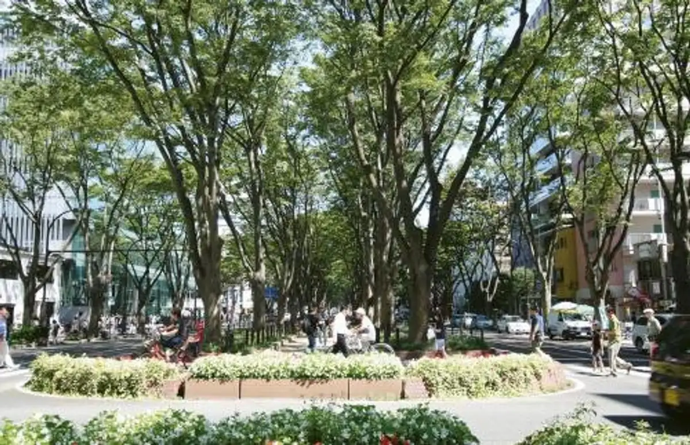
Stay
ホテル定禅寺
Hotel Jouzenji
アパホテル〈仙台勾当台公園〉
Apahoteru < Sendai Koutoudai Kouen >
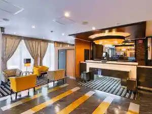
スーパーホテルPremier仙台国分町天然温泉
Suupaahoteru Premier Sendai Kokubunchou Tennen Onsen
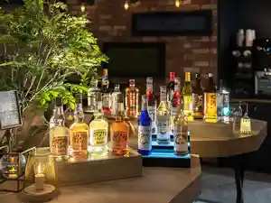
ビジネスホテル太陽
Bijinesuhoteru Taiyou
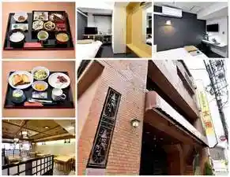
スマイルホテル仙台国分町
Sumairuhoteru Sendai Kokubunchou
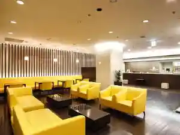
ＫＯＫＯ ＨＯＴＥＬ 仙台勾当台公園
KOKO HOTEL
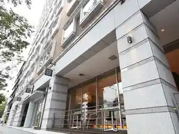
変なホテルプレミア仙台 国分町
Henna Hoterupuremia Sendai Kokubunchou
ナインアワーズ仙台
Nain'awaazu Sendai
三井ガーデンホテル仙台
Mitsui Gaadenhoteru Sendai
杜のホテル仙台
Mori No Hotel Sendai
江陽グランドホテル
Kouyou Gurandohoteru
ワシントンＲ＆Ｂホテル仙台広瀬通駅前
Washinton R & B Hotel Sendai Hirose Toori Ekimae
天然温泉 杜都の湯 御宿 野乃仙台（ドーミーインチェーン）
Tennen Onsen Mori Miyako No Yu Onjuku No No Sendai ( Doomiiincheen )
Daiichi Inn Park（第一インパーク）
Daiichi Inn Park
Dining
松石
Matsuishi
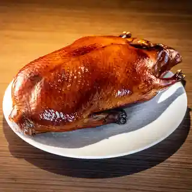
炭焼 おかげさん
Sumiyaki Okagesan
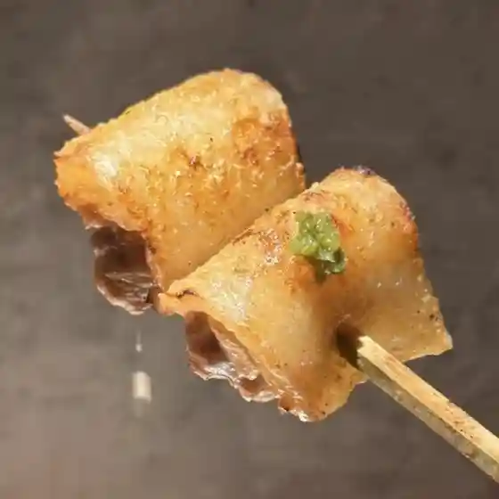
鮨德
Sushi
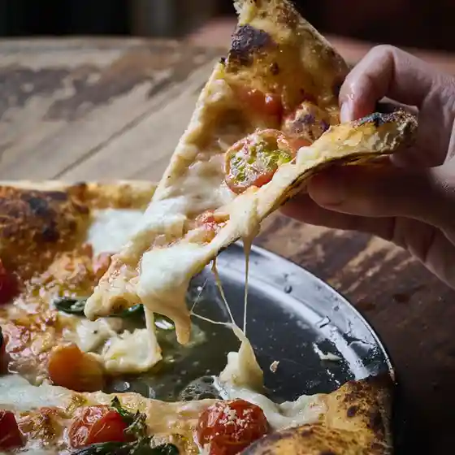
イル・ピッツァイオーロ
イル・ピッツァイオーロ
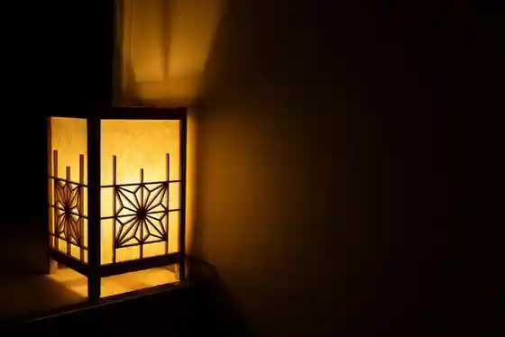
hou
hou
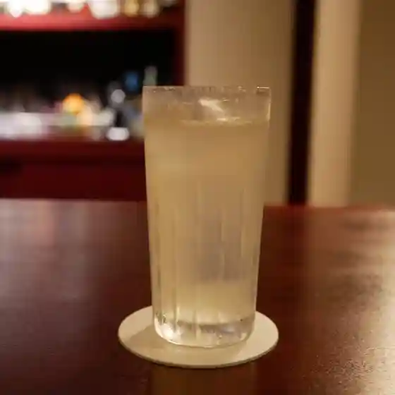
バー アンダンテ
Baa Andante
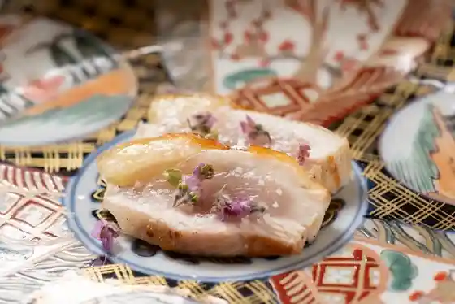
sou
sou
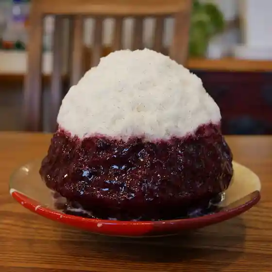
梵くら
Bon Kura
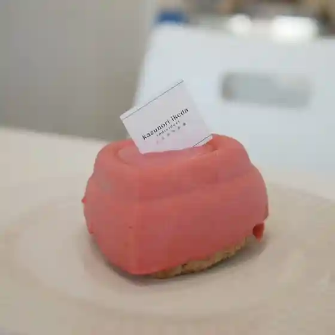
カズノリ イケダ アンディヴィデュエル エスパル仙台店
Kazunori Ikeda Andivideyueru Esuparu Sendaiten
賣茶翁
Baisa Okina
arkua
arkua
ナクレ
Nakure
仙台中華そば 銘店嘉一 国分町店
Sendai Chuuka Soba Mei Mise Kaichi Kokubunchou Mise
フレンチレストラン・プレジール
フレンチレストラン・プレジール
鮨 いわ貴
Sushi Iwa Takashi
日本料理 e.
Nihonryouri E .
ピッツェリア デ ナプレ
Pittsueria De Napure
牛たん料理 閣 ブランドーム本店
Ushi Tan Ryouri Kaku Burandoomu Honten
だし廊 仙台南町通り本店
Dashi Rou Sendai Minamimachi Touri Honten
ル・バール カワゴエ
ル・バール カワゴエ
阿古
Ako
バー アルカンシェル
Baa Arukanshieru
みずさわ屋
Mizusawa Ya
米沢牛焼肉 仔虎 仙台駅前店
Yonezawa Ushi Yakiniku Shi Tora Sendaieki Mae Mise
源氏
Genji
甘味処 彦いち
Amami Tokoro Hiko Ichi
小判寿司
Koban Sushi
うな貴
Una Takashi
牛刺しと焼肉 仔虎 クリスロード店
Ushi Sashi To Yakiniku Shi Tora Kurisuroodo Mise
BiXiGARRi
BiXiGARRi
牛たん料理 閣 三越前店
Ushi Tan Ryouri Kaku Mitsukoshimae Mise
いちば鮨
Ichiba Sushi
塩竈 すし哲 S-PAL仙台店
S-PAL
夜ノ焼魚 ちょーちょむすび
Yoru No Yakizakana Choochomusubi
いな穂
Ina Ho
ピッツェリア エ オステリア パドリーノ
Pittsueria E Osuteria Padoriino
George
George
仙令鮨 JR仙台駅 3階店
Sen Rei Sushi Jr Sendaieki 3 Kai Mise
氏ノ木
Shi No Ki
仙臺牛たん貴
Sendai Ushi Tan Takashi
日本料理うすだ
Nihonryouri Usuda
分福寿司
Bunpuku Sushi
ankoya 駅前店
ankoya
晩酌と晩御飯 ちょうつがひ
Banshaku To Bangohan Choutsugahi
牛たんの一仙
Ushi Tanno Issen
鯛きち 名掛丁店
Tai Kichi Mei Kakari Chou Mise
一心
Isshin
すし蓑
Sushi Mino
鮨 ゆたか
Sushi Yutaka
牛タン焼専門店 司 東口ダイワロイネットホテル店
Gyuutan Yaki Senmonten Tsukasa Higashiguchi Daiwaroinettohoteru Mise
仙臺 くろく
Sendai Kuroku
萃萃
Sui Sui
アドゥマン
Adouman
牛たん料理 閣 電力ビル店
Ushi Tan Ryouri Kaku Denryoku Biru Mise
居酒屋 ちょーちょ
Izakaya Choocho
ラーメン二郎 仙台店2
Raamen Jirou Sendaiten 2
白雪
Shirayuki
佗び助
Ta Bi Jo
大胡椒
Oogo Shou
すし花一寿美
Sushi Hana Kazu Bi
炭火焼肉ぐら 仙台朝市駅前店
Sumibi Yakiniku Gura Sendai Asaichi Ekimae Mise
新料理 都留野
Shin Ryouri Tsuru No
地雷也
Jirai Ya
和と酒 ろせと
Wa To Sake Roseto
ヒヒヒ
Hihihi
名掛丁センター街 おでん こうぞう
Mei Kakari Chou Sentaa Machi Oden Kouzou
弘寿司
Hirotoshi Tsukasa
牛タン焼専門店 司 西口名掛丁店
Gyuutan Yaki Senmonten Tsukasa Nishiguchi Mei Kakari Chou Mise
メゾン シーラカンス
Mezon Shiirakansu
一隆 本店
Kazutaka Honten
ホシヤマ珈琲店 本店
Hoshiyama Koohii Mise Honten
さぶら
Sabura
酒処 五泉
Sake Tokoro Gosen
おでん屋だいすけ
Oden Ya Daisuke
レストラン ツジ
Resutoran Tsuji
牛たん料理 閣 初恋通り店
Ushi Tan Ryouri Kaku Hatsukoi Touri Mise
自家製太麺 渡辺
Jikasei Futomen Watanabe
氏ノ木2
Shi No Ki 2
天ぷら 安住
Tenpura Anjuu
おでん こうぞう
Oden Kouzou
賓
Hin
横横家 仙台店
Yokoyoko Ie Sendaiten
仙臺 自家製麺 こいけ屋
Sendai Jikasei Men Koike Ya
荒町商店中華そば ふじやま
Aramachi Shouten Chuuka Soba Fujiyama
サラマンジェ・ヒロ
サラマンジェ・ヒロ
たんや 善治郎 牛たん通り店
Tanya Zenjirou Ushi Tan Touri Mise
仙台牛焼肉 花牛
Sendai Ushi Yakiniku Hana Ushi
備長炭焼肉としゃぶしゃぶ 仔虎 国分町店
Binchou Sumiyaki Niku Toshabushabu Shi Tora Kokubunchou Mise
ホルモン焼肉 かど屋
Horumon Yakiniku Kado Ya
カーヴ
Kaavu
近藤商店
Kondou Shouten
麺屋 くまがい
Men Ya Kumagai
皿然
Sara Zen
ドットーレ
Dottoore
仙台中華そば 銘店嘉一 本店
Sendai Chuuka Soba Mei Mise Kaichi Honten
さっぽろ純連 仙台店
Sapporo Jun Ren Sendaiten
水原製麺
Mizuhara Seimen
肉そば 藤七 本町分店
Niku Soba Fuji Shichi Honchou Bunten
和醸良酒 ○たけ
Wa Jou Ryou Sake ○ Take
鮨 起承転結
Sushi Kishoutenketsu
餃子と担々麺 吟
Gyouza To Tantanmen Gin
いたがき 本店
Itagaki Honten
中華そば
Chuuka Soba Ikkyuu
たんや善治郎 南町通り店
Tanya Zenjirou Minamimachi Touri Mise
青山文庫
Aoyama Bunko
つけ麺屋しずく
Tsuke Men Ya Shizuku
牛タン焼専門店 司 虎横店
Gyuutan Yaki Senmonten Tsukasa Tora Yoko Mise
麺屋58
Men Ya 58
ホシヤマ珈琲店 アエル店
Hoshiyama Koohii Mise Aeru Mise
グゥー
Guuu
金市朗 南町通店
Kin'ichi Akira Minamimachi Toori Mise
伊達な居酒屋 赤猿
Date Na Izakaya Aka Saru
鮨 結委
Sushi Ketsu I
山海づくし勝也
Sankai Zukushi Katsuya
Nero
Nero
Keisuke Matsumoto
Keisuke Matsumoto
らーめん本竈
Raamen Hon Kamado
地酒と土鍋飯 さんか
Jizake To Donabe Meshi Sanka
牛たん料理 閣 大和町店
Ushi Tan Ryouri Kaku Yamatochou Mise
中華そば専門 田中そば店 仙台長町店
Chuuka Soba Senmon Tanaka Soba Mise Sendai Nagamachi Mise
太平楽 泉店
Taiheiraku Izumi Mise
一閃閣
Issen Kaku
中華そば 富士屋
Chuuka Soba Fujiya
牛たん料理 閣 名掛丁店
Ushi Tan Ryouri Kaku Mei Kakari Chou Mise
別館 すが井
Bekkan Suga I
グラール
Guraaru
もみじ
Momiji
もつ焼 佐喜乃
Motsu Yaki Sa Kino
フランス食堂 オ・コションブルー
フランス食堂 オ・コションブルー
鮨 江なみ
Sushi Kou Nami
にこらす
Nikorasu
おかざき 西公園前
Okazaki Nishikouen Mae
天ぷら先斗町
Tenpura Pontochou
らーめんONE
Raamen One
とんかつ杉
Tonkatsu Sugi
韓国家庭料理 扶餘
Kankoku Kateiryouri Fuyo
長町ラーメン
Nagamachi Raamen
麺王道 勝
Men Oudou Kachi
そば処 萬乃助
Soba Tokoro Man No Jo
王道家直系 鬼道家
Oudou Ie Chokkei Kidou Ie
魔界ラーメン 月光
Makai Raamen Gekkou
牡蠣小屋ろっこ
Kaki Koya Rokko
玄孫
Genson
カズノリ イケダ アンディヴィデュエル 定禅寺通店
Kazunori Ikeda Andivideyueru Jouzenji Toori Mise
康正庵
Yasumasa Iori
仙臺 アビルヴァン 和牛
Sendai Abiruvan Wagyuu
肴町 匙
Sakanachou Saji
銀乃
Gin No
ちばき屋 仙台店
Chibaki Ya Sendaiten
自家製麵 風夏
Jikasei Men Kaze Natsu
18キッド
18 Kiddo
中華そば太平楽 六丁の目店
Chuuka Soba Taiheiraku Roku Chou No Me Mise
寿司吉
Sushi Kichi
味噌らーめん ことぶき
Miso Raamen Kotobuki
旨味太助
Umami Tasuke
割烹蒲焼 大観楼
Kappou Kabayaki Taikan Rou
エンドー餅店
Endoo Mochi Mise
居酒屋おかん
Izakaya Okan
たんや 善治郎 二日町店
Tanya Zenjirou Futsukamachi Mise
中華飯店
Chuukahan Mise
牡蠣小屋ろっこ 東一店
Kaki Koya Rokko Touichi Mise
手打ち蕎麦 天ぷら 梅三
Teuchi Chi Soba Tenpura Ume San
鳥善 鳥ふじ
Tori Zen Tori Fuji
こうめ
Koume
片倉商店 杜の市場店
Katakura Shouten Mori No Shijou Mise
らぁ麺屋09．
Raa Men Ya 09 .
ラーメン とんかつ 忠
Raamen Tonkatsu Tadashi
炭焼牛たん東山 仙台本店
Sumiyaki Ushi Tan Higashiyama Sendai Honten
仙令鮨 仙台駅1F店
Sen Rei Sushi Sendaieki 1f Mise
石巻狐崎漁港 晴れの日 名掛丁店
Ishinomaki Kitsune Saki Gyokou Hare No Nichi Mei Kakari Chou Mise
太助 分店
Tasuke Bunten
おり久
Ori Kyuu
ハミングミールマーケット コーヒー&バー
Hamingumiirumaaketto Koohii & Baa
石井屋
Ishii Ya
すき焼割烹 かとう
Suki Yaki Kappou Katou
たんや善治郎 北根店
Tanya Zenjirou Kitane Mise
ん bistro
bistro
妙庵
Myou Iori
熟成とんかつ フライ家
Jukusei Tonkatsu Furai Ie
仙台牛と和風個室 すていき小次郎
Sendai Ushi To Wafuu Koshitsu Suteiki Kojirou
たべ処のみ処 すけぞう
Tabe Tokoro Nomi Tokoro Sukezou
居酒屋にご
Izakaya Nigo
やの字
Yano Ji
勇駒
Isami Koma
ビストロ レガリテ
Bisutoro Regarite
ラーメン スミス
Raamen Sumisu
中華そば まるたけ
Chuuka Soba Marutake
もちだや
Mochidaya
麺牛 ひろせ
Men Ushi Hirose
焼肉 三水苑 東口店
Yakiniku Samizu En Higashiguchiten
麺匠 玄龍 ララガーデン長町店
Men Takumi Genryuu Raragaaden Nagamachi Mise
麺匠 一丞
Men Takumi Ichijou
麺や あがつま
Men Ya Agatsuma
らーめん かいじ 泉店
Raamen Kaiji Izumi Mise
たんや善治郎 仙台駅前本店
Tanya Zenjirou Sendaieki Maemoto Mise
味太助 本店
Aji Tasuke Honten
牛たん炭焼 利久 西口本店
Ushi Tan Sumiyaki Toshihisa Nishiguchi Honten
麺屋政宗
Men Ya Masamune
たんや善治郎 別館
Tanya Zenjirou Bekkan
ダテ カフェ オーダー
Date Kafe Oodaa
ベルベット
Berubetto
北○
Kita ○
カフェ 杜の香り
Kafe Mori No Kaori
自家製麺くまがい
Jikasei Men Kumagai
週末麺処 らくらひとしな
Shuumatsu Men Tokoro Rakurahitoshina
気のきいたつまみと焼鳥の店 えんどう
Kino Kiitatsumamito Yakitori No Mise Endou
いったく
Ittaku
仙臺 牡蠣女将
Sendai Kaki Joshou
REnatre
REnatre
麺屋 翔
Men Ya Shou
志のぶ支店 二十人町店
Kokorozashi Nobu Shiten Nijuu Nin Machi Mise
石臼玄麦自家製らーめん 丸竈
Ishiusu Genbaku Jikasei Raamen Maru Kamado
末廣ラーメン本舗 仙台駅前分店
Suehiro Raamen Honpo Sendaieki Mae Bunten
カフェ モーツァルト アトリエ
Kafe Mootsuaruto Atorie
長町ラーメン 本町店
Nagamachi Raamen Honchou Mise
カフェ ミティーク
Kafe Miteiiku
らぁめん 一番星
Raamen Ichiban Hoshi
麺屋 熊胆
Men Ya Yuutan
三林精肉店
Mitsubayashi Seinikuten
肉刺しとホルモン トラコ
Mame Shito Horumon Torako
中国四川料理 天府仙臺
Chuugoku Shisenryouri Ten Fu Sendai
Hey! 周平
Hey
拉麺 そらたつ
Raamen Soratatsu
ほのぼんヌードルズ
Honobon Nuudoruzu
鮨みずき
Sushi Mizuki
麺屋とがし 本店
Men Ya Togashi Honten
ガリデブチュウ
Garidebuchuu
自家製麺 ラカン
Jikasei Men Rakan
陸女鮨
Riku Onna Sushi
蔵の庄 総本店
Kura No Shou Souhonten
肉そば藤七
Niku Soba Fuji Shichi
仔虎 エスパル仙台店
Shi Tora Esuparu Sendaiten
HEY
HEY
とんかつ 美味小家
Tonkatsu Bimi Koie
自家製麺 結び
Jikasei Men Musubi
牛たん けやき 仙台一番町本店
Ushi Tan Keyaki Sendaiichi Banchou Honten
鉄板 松阪屋
Teppan Matsusaka Ya
紅茶と洋酒の店 リンクス
Koucha To Youshu No Mise Rinkusu
五臓六腑 仙台店
Gozou Roppu Sendaiten
中華そば HIKAEME
HIKAEME
山海里 清ぼう
Sankai Sato Kiyoshi Bou
THE CITY BAKERY TRATTORIA RUBIN 仙台
THE CITY BAKERY TRATTORIA RUBIN
十肴とみぞう
Juu Sakana Tomizou
298nky
298nky
そば茶房 萬乃助
Soba Sabou Man No Jo
のんびり酒場ニコル
Nonbiri Sakaba Nikoru
献立屋 万策
Kondate Ya Bansaku
altea
altea
かわ福
Kawa Fuku
中華そば さかうち
Chuuka Soba Sakauchi
八千代軒 蒲町店
Yachiyo Ken Kabanomachi Mise
ラーメン みなもと屋
Raamen Minamoto Ya
伝承千年の宿 佐勘
Denshou Sennen No Yado Sakan
あちゃーる
Achaaru
おもと
Omoto
あはれ
Ahare
Craft Beer×Italian Bar CRAFTSMAN
Craft BeerItalian Bar CRAFTSMAN
らーめん屋本舗 麺龍
Raamen Ya Honpo Men Ryuu
ロワイヤル テラッセ エスパル店
Rowaiyaru Terasse Esuparu Mise
九二四四
Kyuu Ni Shi Shi
バーニャのパン
Baanya No Pan
置賜屋
Oitama Ya
すが井
Suga I
炭焼松
Sumiyaki Matsu
kazunori ikeda individuel 南町通店
kazunori ikeda individuel
めんとめし みそら
Mentomeshi Misora
磯料理 喜良久亭
Iso Ryouri Kirakutei
こやうら
Koyaura
一心 加減 燗
Isshin Kagen Kan
とち屋
Tochi Ya
てんぷら 大地
Tenpura Daichi
ラーメン☆ビリー 東仙台本店
Raamen ☆ Birii Higashisendai Honten
長崎チャンポン丸富
Nagasaki Chanpon Maru Tomi
味よし 中倉本店
Aji Yoshi Nakakura Honten
ラ・クロンヌ・ドル
ラ・クロンヌ・ドル
らーめん かいじ 愛宕橋店
Raamen Kaiji Atagobashi Mise
鹿落堂
Shika Raku Dou
火鳥
Hi Tori
暗黒中華そば 雷電
Ankoku Chuuka Soba Raiden
うまいものあり 孝太郎
Umaimonoari Koutarou
アンソレイユ
Ansoreiyu
会津山都そば つつみ庵
Aizu Yamato Soba Tsutsumi Iori
ハチ 仙台本店
Hachi Sendai Honten
そばの神田 東一屋 名掛丁店
Sobano Kanda Touichi Ya Mei Kakari Chou Mise
立ちそば処 杜
Tachi Soba Tokoro Mori
塩竈 しらはた 仙台エスパル店
Shiogama Shirahata Sendai Esuparu Mise
焔蔵
Honoo Kura
中国料理 龍亭
Chuugokuryouri Ryuu Tei
あさひ鮨 仙台駅店
Asahi Sushi Sendaieki Mise
そばの神田東一屋 駅前南町通り店
Sobano Kanda Touichi Ya Ekimae Minamimachi Touri Mise
成龍萬寿山 本店
Seiryuu Manju Yama Honten
口福吉祥 喜喜龍
Koufuku Kichijou Ki Ki Ryuu
そばの神田東一屋 本店
Sobano Kanda Touichi Ya Honten
藤や
Fuji Ya
廻鮮寿司 塩釜港 仙台店
Kaisen Sushi Shiogamakou Sendaiten
ブーランジェリー・ジラフ
ブーランジェリー・ジラフ
もつ焼き丸昌
Motsu Yaki Maru Masa
おでん三吉
Oden Sankichi
泰陽楼 東三店
Yasushi You Rou Higashi San Mise
東家
Azumaya
RIGOLETTO TAPAS LOUNGE
RIGOLETTO TAPAS LOUNGE
ほそやのサンド
Hosoyano Sando
宮城の魚と赤酢のお寿司 魚が肴 仙台PARCO2店
Miyagi No Sakana To Akazu Noo Sushi Sakana Ga Sakana Sendai Parco2 Mise
牛たん徳茂 一番町店
Ushi Tan Toku Shigeru Ichibanchou Mise
元祖仙台ひとくち餃子 あずま 名掛丁店
Ganso Sendai Hitokuchi Gyouza Azuma Mei Kakari Chou Mise
すし 三陸前 仙台駅ビル店
Sushi Sanriku Mae Sendaieki Biru Mise
奥州魚河岸酒屋 天海のろばた
Oushuu Uogashi Sakaya Amagai Norobata
イモセン
Imosen
利久のイタリアン CUCINA
CUCINA
広東飯店 美香園
Kanton Hanten Mika Sono
肉そば てノ字
Niku Soba Te No Ji
とんとんラーメン
Tonton Raamen
そばの神田 東一屋 一番町店
Sobano Kanda Touichi Ya Ichibanchou Mise
モーツァルト
Mootsuaruto
思
Omoi
チョコレートな関係
Chokoreeto Na Kankei
お茶の井ヶ田 仙台中央本店
O Cha No I Ke Ta Sendai Chuuou Honten
花笠だんご本舗 朝市店
Karyuu Dango Honpo Asaichi Mise
アップ!ベイカー 定禅寺本店
Appu ! Beikaa Jouzenji Honten
アンコヤ 木町通本店
Ankoya Kimachidoori Honten
中華飯店 靉龍
Chuukahan Mise Ai Ryuu
魚河岸処 仙
Uogashi Tokoro Sen
アキウ舎
Akiu Sha
ずんだ茶寮 仙台駅ずんだ小径店
Zunda Charyou Sendaieki Zunda Komichi Mise
牡鹿半島 仙台駅前店
Oshika Han Shima Sendaieki Mae Mise
東北のうまいものと地酒 三枡三蔵 仙台駅前本店
Touhoku Noumaimonoto Jizake Mimasu Sanzou Sendaieki Maemoto Mise
牡蠣と寿司 うみのおきて 仙台朝市店
Kaki To Sushi Uminookite Sendai Asaichi Mise
牛たん一福
Ushi Tan Ichi Fuku
蔵の庄 一番町本店
Kura No Shou Ichibanchou Honten
Mare&Oyster エスパル仙台店
Mare&Oyster
奥州ろばた センダイエキ天海
Oushuu Robata Sendaieki Amagai
中国めしや 竹竹
Chuugoku Meshiya Take Take
茶寮 仙台国分町店
Charyou Sendai Kokubunchou Mise
とんかつ 牡丹
Tonkatsu Botan
カフェハヴントウィーメットオーパス
Kafehavuntouiimettooopasu
yaman
yaman
ろっこ
Rokko
手ぶちうどん 吉平
Te Buchiudon Kichihei
肉のいとう 仙台駅1階店
Niku Noitou Sendaieki 1 Kai Mise
うす皮たい焼き 鯛きち 仙台駅前店
Usu Kawa Tai Yaki Tai Kichi Sendaieki Mae Mise
柳家 仙台東口店
Yanagiya Sendai Higashiguchiten
珈琲店ぴーぷる
Koohii Mise Piipuru
延命餅本舗
Enmei Mochi Honpo
大盛庵
Oomori Iori
KOMOREBI gelato
KOMOREBI gelato
GREAT DANE BREWING
GREAT DANE BREWING
まんみ 泉中央店
Manmi Izumichuuou Mise
こうや 仙台駅中すし通り店
Kouya Sendaieki Naka Sushi Touri Mise
かき小屋 飛梅 仙台駅前店
Kaki Koya Tobiume Sendaieki Mae Mise
駅前泰陽楼
Ekimae Yasushi You Rou
ハングリーハングリー
Hanguriihangurii
牛たん 焼助 仙台駅牛たん通り店
Ushi Tan Yaki Jo Sendaieki Ushi Tan Touri Mise
カフェ パンプルムゥス 仙台
Kafe Panpurumuusu Sendai
油そば 一二三
Abura Soba Hifumi
らーめん将神蔵 壱号店
Raamen Shou Kamikura Ichigou Mise
レストラン シンフォニー
Resutoran Shinfonii
仙台朝市 大黒
Sendai Asaichi Daikoku
源吾茶屋
Gengo Chaya
THE MOST COFFEE
THE MOST COFFEE
大衆中華 ちんまや
Taishuu Chuuka Chinmaya
ぼんてん酒場
Bonten Sakaba
BABEL 858
BABEL 858
ミティーク
Miteiiku
中華そば 太平楽 茂庭店
Chuuka Soba Taiheiraku Moniwa Mise
エビアン エスパル店
Ebian Esuparu Mise
甘座洋菓子店
Kan Za Yougashi Mise
もちべえ 仙台駅店
Mochibee Sendaieki Mise
デアストア コーヒーアンドイータリー
Deasutoa Koohiiandoiitarii
GRUN
GRUN
フルーツピークス 仙台富沢店
Furuutsupiikusu Sendai Tomizawa Mise
つけ麺 和 仙台広瀬通店
Tsuke Men Wa Sendai Hirose Toori Mise
和食波奈 仙台店
Washoku Nami Na Sendaiten
牛たん おやま
Ushi Tan Oyama
割烹 天ぷら 三太郎
Kappou Tenpura Santarou
中国料理 東洋軒 本店
Chuugokuryouri Touyou Ken Honten
小さな街の食堂 cafe MISTY
cafe MISTY
開盛庵
Kaiseian
おさかなセンター イチノイチ
Osakana Sentaa Ichinoichi
そばの神田東一屋 サンモール店
Sobano Kanda Touichi Ya Sanmooru Mise
郷土酒亭 元祖 炉ばた
Kyoudo Sake Tei Ganso Ro Bata
酒場 フジコ
Sakaba Fujiko
さん竹
San Take
BIKiNi TAPA＋
BIKiNi TAPA
アシルワード
Ashiruwaado
とんかつまつを
Tonkatsumatsuwo
牛たん料理 雅
Ushi Tan Ryouri Masa
仙台せり鍋と個室和食 せり草庵
Sendai Seri Nabe To Koshitsu Washoku Seri Souan
すずや
すずや
喫茶ビジュゥ
Kissa Bijuu
ハイボールバー 杜の都1923
Haiboorubaa Mori No Miyako 1923
メゾンカイザー 仙台PARCO2店
Mezonkaizaa Sendai Parco2 Mise
セルノー・ドゥ・ノワ
セルノー・ドゥ・ノワ
Salut
Salut
牛タン炭焼 仁
Gyuutan Sumiyaki Hitoshi
焼鳥と宮城の旨いもの 晴れの日
Yakitori To Miyagi No Umai Mono Hare No Nichi
てしごと 是歩
Teshigoto Kore Ho
自遊庵 ねぎぼうず
Jiyuu Iori Negibouzu
麺屋 わになる
Men Ya Waninaru
風と手と土
Kaze To Te To Tsuchi
和呑旬 通木
Wa Don Jun Toori Ki
庄内
Shounai
手打そば 草太
Teuchi Soba Souta
居酒屋 矢三朗 新寺本店
Izakaya Ya Saburou Shintera Honten
とっと めしや
Totto Meshiya
漁亭 浜や あすと長町店
Ryou Tei Hama Ya Asuto Nagamachi Mise
とんかつ和泉
Tonkatsu Izumi
中華そば 太平楽 富田店
Chuuka Soba Taiheiraku Tomita Mise
旬魚・鮨の店 あら浜 あすと長町店
旬魚・鮨の店 あら浜 あすと長町店
心温食堂(神)
Kokoro Onshoku Dou ( Kami )
天然酵母パン オ フルニル デュ ボワ
Tennen Koubo Pan O Furuniru Deyu Bowa
愛と勇気と炎の拉麺屋たいらん
Ai To Yuuki To Honoo No Raamen Ya Tairan
つけ麺 おんのじ 仙台本店
Tsuke Men Onnoji Sendai Honten
一番五郎
Ichiban Gorou
バローロ
Barooro
ラーメン☆ビリー PLUS 仙台駅前店
Raamen ☆ Birii Plus Sendaieki Mae Mise
中華料理北京餃子
Chuukaryouri Pekin Gyouza
元祖仙台ひとくち餃子 あずま 一番町店
Ganso Sendai Hitokuchi Gyouza Azuma Ichibanchou Mise
かつどんのかつどん家
Katsudonnokatsudon Ie
元祖仙台ひとくち餃子 あずま 本店
Ganso Sendai Hitokuchi Gyouza Azuma Honten
七郷屋
Shichi Sato Ya
焼肉のいとう 仙台駅前店
Yakiniku Noitou Sendaieki Mae Mise
炭火焼肉 福わらひ2
Sumibi Yakiniku Fuku Warahi 2
ほや＆純米酒場 まぼ屋 仙台駅前店
Hoya & Junmaishu Ba Mabo Ya Sendaieki Mae Mise
伊達路
Date Michi
トラットリアカンパニオ
Torattoriakanpanio
チマチマ酒店
Chimachima Saketen
大衆すし酒場 不二子 大町店
Taishuu Sushi Sakaba Fujiko Oomachi Mise
鞍山
Anzan
先代 きよゑ食堂 勾当台店
Sendai Kiyoe Shokudo Koutoudai Mise
ちゅんちゅん堂
Chunchun Dou
焼とり くろ田
Yaki Tori Kuro Ta
和食処 大ばん
Washoku Tokoro Dai Ban
山ノ洋食屋 ざびえる
Yama No Youshoku Ya Zabieru
Echoes
Echoes
元祖油堂 仙台広瀬通店
Ganso Abura Dou Sendai Hirose Toori Mise
台湾中国料理 燕来香
Taiwan Chuugokuryouri Tsubame Rai Kaori
ジェラーティ ブリオ
Jieraatei Burio
ワイン食堂 ヒノマル
Wain Shokudo Hinomaru
九重本舗 玉澤 本店
Kokonoe Honpo Tamazawa Honten
BLACK TIDE BREWING - SENDAI
BLACK TIDE BREWING - SENDAI
シーフードレストラン＆バー SK7 仙台東口店
Shiifuudoresutoran & Baa Sk7 Sendai Higashiguchiten
おにおんとまと
Oniontomato
すがわら
Sugawara
ジャンヌダルク フィスエペール
Jannudaruku Fisuepeeru
一心寿司
Isshin Sushi
ラーメン松月
Raamen Matsuzuki
自家製手打ち中華そば もり中
Jikasei Teuchi Chi Chuuka Soba Mori Naka
焼きたてパン えとふぇ
Yaki Tate Pan Etofe
Vigore
Vigore
徳島ラーメン人生 泉店
Toku Shima Raamen Jinsei Izumi Mise
牛たん若 泉店
Ushi Tan Jaku Izumi Mise
エイギョクドウ カフェ 仙台
Eigyokudou Kafe Sendai
牛たん炭焼き 利久 仙台駅店
Ushi Tan Sumiyaki Ki Toshihisa Sendaieki Mise
ラーメン堂仙台っ子 仙台駅前店
Raamen Dou Sendai Tsu Ko Sendaieki Mae Mise
斎藤惣菜店 ころっけや
Saitou Souzai Mise Korokkeya
チロル 仙台店
Chiroru Sendaiten
北緯43°のスープカレー屋さん 仙台一番町店
Hokui 43 . No Suupukaree Ya San Sendaiichi Banchou Mise
扶餘 電力ビル店
Fuyo Denryoku Biru Mise
泰陽楼 東一支店
Yasushi You Rou Touichi Shiten
まぐろ屋 やまもと
Maguro Ya Yamamoto
金市朗 仙台駅前店
Kin'ichi Akira Sendaieki Mae Mise
大衆酒場 ナミヘイ
Taishuu Sakaba Namihei
アンブロジア
Anburojia
ミート ヒバチ 本店
Miito Hibachi Honten
NOODLE MAN
NOODLE MAN
張広東飯店 桜園
Chou Kanton Hanten Sakura Sono
どん亭
Don Tei
ハムステッドティールーム
Hamusuteddoteiiruumu
旬房 街道 青葉
Jun Bou Kaidou Aoba
鶏寛 仙台店
Niwatori Hiroshi Sendaiten
グリルみのる
Guriru Minoru
ミヤギノ純米酒センター シマウマ酒店
Miyagino Junmaishu Sentaa Shimauma Saketen
魚･炭･酒 おはし二日町
Sakana Sakana Sumi Sumi Sake Ohashi Futsukamachi
海味家
Umi Aji Ie
角打ち ぷらっと
Kaku Uchi Puratto
酒、主、手、周平
Sake , Shu , Te , Shuuhei
ZUNDA ZUNDA Cafe 仙台一番町本店
ZUNDA ZUNDA Cafe
ラウンジ＆バー ホライゾン
Raunji & Baa Horaizon
らーめんの千草 分店
Raamenno Chigusa Bunten
MonaMona 仙台駅店
MonaMona
福はら 仙台駅東口本店
Fuku Hara Sendaieki Higashiguchi Honten
きらら寿司 箱堤店
Kirara Sushi Hako Tsutsumi Mise
しぶき亭 東口本店
Shibuki Tei Higashiguchi Honten
二代目 餅萬
Nidaime Mochi Man
中華そば専門 田中そば店 東仙台店
Chuuka Soba Senmon Tanaka Soba Mise Higashisendai Mise
喜多方らーめん 一平 仙台店
Kitakata Raamen Ippei Sendaiten
らぁ麺 すみ田 仙台東口店
Raa Men Sumi Ta Sendai Higashiguchiten
PUBLIC．COFFEE
PUBLIC.COFFEE
和食 魚靖
Washoku Sakana Yasushi
中嘉屋食堂 麺飯甜 仙台駅構内店
Naka Ka Ya Shokudo Men Meshi Ten Sendaieki Kounai Mise
北海道イタリアン ミアアンジェラ 一番町
Hokkaidou Itarian Miaanjiera Ichibanchou
仙台牛焼肉 と文字
Sendai Ushi Yakiniku To Moji
牛たん 仙台牛 伊勢屋 牛たん通り店
Ushi Tan Sendai Ushi Iseya Ushi Tan Touri Mise
シマウマ大飯店
Shimauma Ooi Mise
ヴァサラロード 仙台アエル店
Vasararoodo Sendai Aeru Mise
久美食堂 本店
Kumi Shokudo Honten
一舞庵
Ichi Mai Iori
うどん酒場 七右衛門 エスパル仙台店
Udon Sakaba Shichi Uemon Esuparu Sendaiten
ナマスカ 仙台南町通り店
Namasuka Sendai Minamimachi Touri Mise
オストラ デ オーレ
Osutora De Oore
アルベロ
Arubero
成龍萬寿山上海ラーメン 稲荷小路店
Seiryuu Manju Yamagami Umi Raamen Inari Kouji Mise
miura
miura
三七三
Sanshichi San
カフェ ド ギャルソン
Kafe Do Gyaruson
仙台銀座 キンタロウ
Sendai Ginza Kintarou
いろり酒場 たら福 文横店
Irori Sakaba Tara Fuku Bun Yoko Mise
オー・ベリエ
オー・ベリエ
スタンドオオトモ
Sutandoootomo
パティスリーグラス キセツ
Pateisuriigurasu Kisetsu
鶏が好きだと酒びたい
Niwatori Ga Suki Dato Sake Bitai
牡蠣小屋もういっこ
Kaki Koya Mouikko
中華そば かけ橋 仙台駅前
Chuuka Soba Kake Hashi Sendaieki Mae
れーげんぼーげん
Reegenboogen
眞野屋
Mano Ya
主役はスパイス
Shuyaku Ha Supaisu
菓子時間ムギ
Kashi Jikan Mugi
ジュイップ
Juippu
3007cafe
3007cafe
居酒屋 ごいち
Izakaya Goichi
力寿司
Chikara Sushi
大衆すし酒場 不二子 東口店
Taishuu Sushi Sakaba Fujiko Higashiguchiten
ワインハウス ブウション
Wainhausu Buushon
青葉寿司 鶴ヶ谷店
Aoba Sushi Tsurugaya Mise
ケヤキコーヒー 卸町店
Keyakikoohii Oroshimachi Mise
田中そば店 六丁の目店
Tanaka Soba Mise Roku Chou No Me Mise
ラーメン角屋
Raamen Sumiya
レストラン HACHI 秋保温泉店
Resutoran Hachi Akyuu Onsen Mise
仙台大勝軒
Sendaidai Kachi Ken
広島風おこのみ焼 珠芽
Hiroshima Kaze Okonomi Yaki Shuga
ガーデンレストラン シェフズ テラス
Gaadenresutoran Shiefuzu Terasu
ハンバーグ＆カレー専門店 919
Hanbaagu & Karee Senmonten 919
アンコヤ 泉店
Ankoya Izumi Mise
パノラ キッチン オブ ザ シーズンズ
Panora Kitchin Obu Za Shiizunzu
伊達の牛たん本舗 仙台駅3階 牛たん通り店
Date No Ushi Tan Honpo Sendaieki 3 Kai Ushi Tan Touri Mise
青葉亭 エスパル店
Aoba Tei Esuparu Mise
フォレストキッチン ウィズ アウトドア リビング
Foresutokitchin Uizu Autodoa Ribingu
仙台パスタハウス 平井スパゲティ
Sendai Pasutahausu Hirai Supagetei
番丁ラーメン 名掛丁店
Banchou Raamen Mei Kakari Chou Mise
伊達藩長屋酒場
Date Han Nagaya Sakaba
酒場 soda 仙台
soda
寿寿
Hisashi Hisashi
濃厚鶏そば シロトリコ
Noukou Niwatori Soba Shirotoriko
天ぷら 水谷
Tenpura Mizutani
セレニティ
Serenitei
麺屋 ぜくう
Men Ya Zekuu
FUMO14番地
FUMO14
トリとヤサイとサケともやん
Tori To Yasai To Sake Tomoyan
花祭り 朝市店
Hanamatsuri Asaichi Mise
中国美点菜 彩華
Chuugoku Biten Na Ayaka
とんかつ叶
Tonkatsu Kanou
MAGO HACHI KITCHEN
MAGO HACHI KITCHEN
ジャムカフェ
Jamukafe
火鳥
Hi Tori
中国料理 桃李
Chuugokuryouri Touri
牡鹿半島 朝市店
Oshika Han Shima Asaichi Mise
エビアン 東一店
Ebian Touichi Mise
飛天
Hiten
酒と魚 watabe
watabe
ブレアハウス
Bureahausu
喫茶 久遠
Kissa Kudou
創作と短角牛 ジウプ
Sousaku To Tankaku Ushi Jiupu
黒毛和牛一頭切り 伊達哉
Kuroge Wagyuu Ichizu Kiri Date Ya
みそ壱 榴岡店
Miso Ichi Tsutsujigaoka Mise
ラーメン堂 極
Raamen Dou Kyoku
中華そば あまのや
Chuuka Soba Amanoya
拉麺勇気
Raamen Yuuki
凜香飯店
Rin Kaori Hanten
山形黒毛和牛 米沢牛焼肉 仔虎 ベガロポリス仙台南店
Yamagata Kuroge Wagyuu Yonezawa Ushi Yakiniku Shi Tora Begaroporisu Sendai Minami Mise
ハチ 長町店
Hachi Nagamachi Mise
覇龍
Ha Ryuu
伊藤商店 仙台朝市店
Itou Shouten Sendai Asaichi Mise
ヴァンドーム
Vandoomu
びわね
Biwane
日本料理 田中 ひっつみ庵 仙台エスパル（ＳーＰＡＬ）店
Nihonryouri Tanaka Hittsumi Iori Sendai Esuparu ( S - P A L ) Mise
つるかめ
Tsurukame
鉄板ダイニング 誉 定禅寺通り店
Teppan Dainingu Yo Jouzenji Touri Mise
DUMBO PIZZA FACTORY 仙台
DUMBO PIZZA FACTORY
千極煮干
Sen Kyoku Niboshi
伊達酒場 強太朗
Date Sakaba Kyou Tarou
無垢とうや
Muku Touya
心づくし いなせ
Kokoro Zukushi Inase
東龍門
Touryuu Mon
仙台かき徳 本店
Sendai Kaki Toku Honten
焼肉 泰山 定禅寺通り店
Yakiniku Taizan Jouzenji Touri Mise
炉地BAR八兵衛
Ro Chi Bar Hachibee
そば処 蕃山
Soba Tokoro Banzan
朝市寿司
Asaichi Sushi
トラットリア エッセ
Torattoria Esse
飲み食い処 伜
Nomi Kui Tokoro Segare
Restaurant & Cafe EUR
Restaurant & Cafe EUR
グリル赤井
Guriru Akai
雨カ天晴
Ame Ka Appare
炭焼きジュッコ シマウマ酒店
Sumiyaki Ki Jukko Shimauma Saketen
シャルール
Sharuuru
富貴寿司
Fuuki Sushi
温州菜館
Unshuu Saikan
お食事処 むらい 仙台店
O Shokuji Tokoro Murai Sendaiten
おかん 分店
Okan Bunten
CHUNK BURGER STAND
CHUNK BURGER STAND
新伝馬町 三七三
Shin Denmachou Sanshichi San
九献とうや
Kyuu Ken Touya
中華 臥龍梅
Chuuka Garyuu Ume
仙台 肉のいとう 居酒屋牛たん 直
Sendai Niku Noitou Izakaya Ushi Tan Choku
味の新宮 小鶴店
Aji No Shinguu Kozuru Mise
屋台ラーメン た紅
Yatai Raamen Ta Kurenai
焼肉ぐら 東口店
Yakiniku Gura Higashiguchiten
六丁目農園
Roku Choume Nouen
工場直売店 かねたの牛たん
Koujou Chokubai Mise Kanetano Ushi Tan
いち福 本店
Ichi Fuku Honten
えくぼや
Ekuboya
初代 伝五郎
Shodai Dengorou
ベーグルU
Beeguru U
ホテルニュー水戸屋
Hoterunyuu Mito Ya
江戸家
Edoya
ブレア ガーデン
Burea Gaaden
十割そば 八乙女庵
Juu Wari Soba Yaotome Iori
麺匠 もみじ
Men Takumi Momiji
マーボー＆たんたん麺の店 シェ☆シェ
Maaboo & Tantan Men No Mise Shie ☆ Shie
ベーカリー＆カフェ3110
Beekarii & Kafe 3110
御酒印船 仙台店
Miki In Fune Sendaiten
Makan
Makan
葵 本店
Aoi Honten
よっちゃん（仮）
Yotchan ( Kari )
オッジ・ドマーニ
オッジ・ドマーニ
とんかつ処 岩松
Tonkatsu Tokoro Iwamatsu
ラーメンビッグ 一番町店
Raamenbiggu Ichibanchou Mise
ill
ill
おはな
Ohana
蕎麦處家福
Sobadokoro Ietomi
ウエストポイント
Uesutopointo
イマジネ
Imajine
寿屋 寿庵
Hisashi Ya Juan
チャコールバル ジュ
Chakoorubaru Ju
北海道炉端めんめ 仙台PARCO2店
Hokkaidou Robata Menme Sendai Parco2 Mise
いわま亭
Iwama Tei
味太助分店いまい
Aji Tasuke Bunten Imai
東北カフェ＆バル トレジオン エスパル仙台店
Touhoku Kafe & Baru Torejion Esuparu Sendaiten
笹屋
Sasaya
にほんしゅ屋nico シマウマ酒店
Nihonshu Ya Nico Shimauma Saketen
鳥たか
Tori Taka
HoNne
HoNne
狸の焼鳥 本店
Tanuki No Yakitori Honten
サトミキルン
Satomikirun
和食地酒 勘助
Washoku Jizake Kansuke
TREnTA 仙台駅店
TREnTA
鉄板じんぎすかん 遠野食肉センター
Teppan Jingisukan Toono Shokuniku Sentaa
ししまる製麵所
Shishimaru Seimen Tokoro
朱華飯店 小田原店
Ayaka Hanten Odawara Mise
仙台キッチン
Sendai Kitchin
博多ラーメン かっぱ亭
Hakata Raamen Kappa Tei
うまいものや
Umaimonoya
中華食堂 一富士
Chuuka Shokudo Ichi Fuji
キリン ビアポート 仙台
Kirin Biapooto Sendai
となりのれすとらん
Tonarinoresutoran
PIZZA&WINE ESOLA 仙台駅前店
PIZZA&WINE ESOLA
そばの神田 町前屋中倉店
Sobano Kanda Machi Maeya Nakakura Mise
あんだんち食堂
Andanchi Shokudo
居酒屋 矢三朗 新寺弐号館
Izakaya Ya Saburou Shintera Ni Goukan
吉辰
Kisshin
しずる
Shizuru
桂雀花
Katsura Suzume Hana
桃源花 泉店
Tougen Hana Izumi Mise
ブーランジェリー マルシェ
Buuranjierii Marushie
カラ助
Kara Jo
おっぺしゃん イービーンズ店
Oppeshan Iibiinzu Mise
カレーショップ 酒井屋
Kareeshoppu Sakai Ya
LA PAIX
LA PAIX
中華れすとらん とらの子
Chuuka Resutoran Torano Ko
ケヤキカフェ
Keyakikafe
餃子専門店 おゆき
Gyouza Senmonten Oyuki
タージ2
Taaji 2
第１ススキノ
Daiichi Susukino
さぬきうどん ○讃
Sanukiudon ○ San
居酒屋 金市朗 国分町店
Izakaya Kin'ichi Akira Kokubunchou Mise
ビストロタイ
Bisutorotai
イナトーラ
Inatoora
トラットリア銀
Torattoria Gin
RAJ 仙台店
RAJ
ボタニカルアイテムアンドカフェ シアン
Botanikaruaitemuandokafe Shian
恵比寿
Ebisu
地酒と宮城のうまいもん処 斎太郎
Jizake To Miyagi Noumaimon Tokoro Saitarou
仙一ホルモン
Sen'ichi Horumon
Louver
Louver
中華亭分店 五橋
Chuuka Tei Bunten Itsutsubashi
泰華楼
Yasushi Hana Rou
玄米食堂 番
Genmaishoku Dou Ban
キジトラ珈琲舎
Kijitora Koohii Sha
傳吉食堂
Denkichi Shokudo
酒場 こびと
Sakaba Kobito
リチクク
Richikuku
土産土法 さかな亭
Miyage Dohou Sakana Tei
すずりき
Suzuriki
水と酒 三花
Mizu To Sake San Hana
ボール パーク
Booru Paaku
有頂天 EVOLUTION
EVOLUTION
こばやし
Kobayashi
居酒屋たけ政
Izakaya Take Matsurigoto
麺屋 霜月
Men Ya Shimotsuki
そば処 三喜
Soba Tokoro Sanki
レストラン＆コーヒーソルト
Resutoran & Koohiisoruto
スープカリー ばぐばぐ 仙台店
Suupukarii Bagubagu Sendaiten
田中そば店 中田店
Tanaka Soba Mise Nakada Mise
an cafe TAIKICHI
an cafe TAIKICHI
山形蕎麦 やま久
Yamagata Soba Yama Kyuu
ラーメン☆ビリー 泉学院前店
Raamen ☆ Birii Izumi Gakuin Mae Mise
秋月庵 三次郎
Akizuki Iori Sanjirou
とんかつ大町 南光台店
Tonkatsu Oomachi Nankoudai Mise
清水屋 南光台支店
Shimizuya Nankoudai Shiten
オイチーズ
Oichiizu
大魔王
Daimaou
Cho Lon
Cho Lon
すし 波奈 仙台パルコ店
Sushi Nami Na Sendai Paruko Mise
梅公
Ume Kou
古々がみそ 一番町店
Ko (kurikaesi) Gamiso Ichibanchou Mise
はやとみ
Hayatomi
ガネッシュ・ティールーム 定禅寺通店
ガネッシュ・ティールーム 定禅寺通店
焼肉泰山 国分町総本店
Yakiniku Taizan Kokubunchou Souhonten
そばDining 結月庵 仙台駅エスパル店
Soba Dining Yuzuki Iori Sendaieki Esuparu Mise
クレプスキュール・カフェ 仙台メディアテーク
クレプスキュール・カフェ 仙台メディアテーク
仙台牛焼肉 バリバリ 青葉通り店
Sendai Ushi Yakiniku Baribari Aobadoori Ri Mise
カフェ モーツァルト メトロ
Kafe Mootsuaruto Metoro
日本料理・鉄板焼 はや瀬
日本料理・鉄板焼 はや瀬
与五郎寿司 本店
Yogorou Sushi Honten
壽哲廸
Hisashi Satoshi Teki
青森屋がほんず 仙台駅店
Aomori Ya Gahonzu Sendaieki Mise
三日月
Mikazuki
ひとひら
Hitohira
MOTHER PORT COFFEE エスパル仙台本館3階店
MOTHER PORT COFFEE 3
居酒屋 二代目
Izakaya Nidaime
升や
Masu Ya
和風料理鈴本
Wafuu Ryouri Suzumoto
noaddress
noaddress
仙台旬の地魚料理 おとな飯 和
Sendai Jun No Jizakana Ryouri Otona Meshi Wa
鶏 炭火 地酒 松もと
Niwatori Sumibi Jizake Matsu Moto
ビストロ アンコール
Bisutoro Ankooru
松華堂菓子店 S-PAL仙台店
Shouka Dou Kashi Mise S-pal Sendaiten
中国菜 龍穂
Chuugoku Na Ryuu Ho
morc
morc
Northfields
Northfields
ラーメン☆ビリー 仙台ヨドバシ店
Raamen ☆ Birii Sendai Yodobashi Mise
一歩亭
Ippo Tei
かき小屋ほや小屋 まぼ屋 ヨドバシ仙台店
Kaki Koya Hoya Koya Mabo Ya Yodobashi Sendaiten
VON
VON
うなぎ 稲川
Unagi Inagawa
北竜
Hokuryuu
おにぎり茶屋 ちかちゃん
Onigiri Chaya Chikachan
萩ノ宮製麺所 中倉本店
Hagi No Miya Seimen Tokoro Nakakura Honten
ユズキ
Yuzuki
カツカレー専門店 カリーハウス マシャーーラ
Katsukaree Senmonten Kariihausu Mashaaara
つけうどん 朱華
Tsukeudon Ayaka
味の牛たん 喜助 JR仙台駅店
Aji No Ushi Tan Kisuke Jr Sendaieki Mise
四季折々の三陸の恵み 俺の割烹 六金 仙台駅前店
Shiki Oriori No Sanriku No Megumi Ore No Kappou Roku Kin Sendaieki Mae Mise
町鮨とろたく 一番町
Machi Sushi Torotaku Ichibanchou
杜の都 五橋横丁
Mori No Miyako Itsutsubashi Yokochou
ふぅふぅ亭
Fuufuu Tei
五の五 一番町店
Go No Go Ichibanchou Mise
本町焼肉DATENARI
DATENARI
とりっこ 文店
Torikko Bun Mise
かきや NO KAKIYA
NO KAKIYA
元祖仙台ひとくち餃子 あずま 仙台駅店
Ganso Sendai Hitokuchi Gyouza Azuma Sendaieki Mise
担々麺 たかはし
Tantanmen Takahashi
たん焼き 山梨
Tan Yaki Yamanashi
PICKS
PICKS
旬楽処 笑
Jun Raku Tokoro Warai
わのしょく二階
Wanoshoku Nikai
ミーティングハウス
Miiteinguhausu
タイレストラン CHADA
CHADA
中国料理 彩雲 ホテルモントレ仙台
Chuugokuryouri Saiun Hoterumontore Sendai
ひの亭
Hino Tei
蓮めぐり
Hasu Meguri
すてーきはうす 伊勢屋 クリスロード店
Suteekihausu Iseya Kurisuroodo Mise
魚介とワインのお店 fill
Gyokai To Wain Noo Mise Fill
PATISSERIE LAISSEZ VIBRER
PATISSERIE LAISSEZ VIBRER
榴岡 銀杏
Tsutsujigaoka Ichou
自家製 こめやのうどん
Jikasei Komeyanoudon
イタガキ×ジェラテリア ラ フェスタ 三井アウトレットパーク仙台港店
Itagaki X Jierateria Ra Fesuta Mitsui Autorettopaaku Sendaikou Mise
開拓家
Kaitaku Ie
yosemite
yosemite
omitu
omitu
中華菜館 彩中
Chuuka Saikan Sai Naka
ハンバーグ支倉 泉崎
Hanbaagu Hasekura Izumisaki
ビストロ アンプル 南欧食堂
Bisutoro Anpuru Nan'ou Shokudo
とん兵衛
Ton Bee
秋保草庵
Akyuu Souan
うつわカフェ グルグル
Utsuwa Kafe Guruguru
とんかつ石亭 高森本店
Tonkatsu Sekitei Takamori Honten
Soba Dining 蕎花
Soba Dining
岳山珈琲
Dakeyama Koohii
伊藤商店 落合店
Itou Shouten Ochiai Mise
大衆酒場BEETLE 仙台
BEETLE
ミツバチ キッチン 勾当台店
Mitsubachi Kitchin Koutoudai Mise
Tavernetta Salvatore 仙台
Tavernetta Salvatore
らーめん増田や
Raamen Masuda Ya
伊達な仙台炉端 強次朗
Date Na Sendai Robata Kyou Jirou
アグリエの森 mitte
mitte
北海三陸炭火焼 まるかん
Hokkai Sanriku Sumibi Yaki Marukan
本格酒処シマウマ酒店
Honkaku Sake Tokoro Shimauma Saketen
ラーメン ビッグ 国分町本店
Raamen Biggu Kokubunchou Honten
永楽庵 本店
Eiraku Iori Honten
丸よし
Maru Yoshi
Roti
Roti
スイート スパイス アサノ
Suiito Supaisu Asano
麺屋タカモト
Men Ya Takamoto
蔵の庄 花京院通本店
Kura No Shou Kakyouin Toori Honten
仙台牛一頭買い焼肉 明月苑 一番町店
Sendai Gyuuichi Atama Kai Yakiniku Meigetsu En Ichibanchou Mise
しゃりきゅう
Sharikyuu
髙也
髙也
鮨 吉金
Sushi Yoshikane
マルホカフェ
Maruhokafe
バー グレイハウンド
Baa Gureihaundo
鶏屋 鈴尚
Niwatori Ya Suzu Takashi
仙台駅前居酒屋 ぐずらもずら
Sendaieki Mae Izakaya Guzuramozura
ネオブレイクスルー
Neobureikusuruu
天繁 イーストワン店
Tenshige Iisutowan Mise
創菜欧風料理 ル ポタジェ
Sousai Oufuu Ryouri Ru Potajie
おいしい台所12カ月
Oishii Daidokoro 12 Ka Gatsu
BAKERY GOLDEN RATIO
BAKERY GOLDEN RATIO
手作り和食 つぐみ
Tezukuri Washoku Tsugumi
ワインカフェ イル ソフリット
Wainkafe Iru Sofuritto
北海道イタリアンバル ミア アンジェラ 仙台駅東口
Hokkaidou Itarianbaru Mia Anjiera Sendaieki Higashiguchi
ごはん処 満天食堂 扇町店
Gohan Tokoro Manten Shokudo Ougimachi Mise
餃子のすみ田 BiVi仙台駅東口店
Gyouza Nosumi Ta Bivi Sendaieki Higashiguchiten
そば処 ふね
Soba Tokoro Fune
パティスリー ティッセ
Pateisurii Teisse
炭火焼肉 明月苑
Sumibi Yakiniku Meigetsu En
九龍飲茶酒楼
Kyuuryuu Yamucha Shurou
パン工房 takupan
takupan
登喜和
Tokiwa
中国料理 広陽軒
Chuugokuryouri Kou You Ken
ジェラテリア リベルタ
Jierateria Riberuta
カープル
Kaapuru
桂花苑
Keika En
中国料理 凰華
Chuugokuryouri Ou Hana
こうや 国分町店
Kouya Kokubunchou Mise
みそ壱 ロフト1F店
Miso Ichi Rofuto 1f Mise
らーめん 六三四
Raamen Roku Sanshi
仙台うまいもん個室居酒屋 亜門
Sendai Umaimon Koshitsu Izakaya Amon
喜多郎 愛子店
Kitarou Aiko Mise
廬山
Rozan
宮城の海の幸・山の幸・板前料理 晴れの日
宮城の海の幸・山の幸・板前料理 晴れの日
かに政宗 本町店
Kani Masamune Honchou Mise
天ぷら酒場 ててて天
Tenpura Sakaba Tetete Ten
シンドール
Shindooru
フランチェスカ
Furanchesuka
炭火焼肉 勇 立町本店
Sumibi Yakiniku Isami Tachimachi Honten
にら壱
Nira Ichi
ADO
ADO
金沢おでんと日本海料理 加賀の屋
Kanazawa Odento Nihonkai Ryouri Kaga No Ya
猛た波が麺を喰らふ
Takeshi Ta Nami Ga Men Wo Kura Fu
中華料理 楽道
Chuukaryouri Raku Michi
大衆酒場 せんや
Taishuu Sakaba Senya
すし 八松
Sushi Hachi Matsu
おばんざい らくら
Obanzai Rakura
酒蔵 強三
Shuzou Kyou San
カスクルート
Kasukuruuto
じゃんかい 一番町店
Jankai Ichibanchou Mise
南園
Nan'en
祥発順
Shou Hatsu Jun
ピッツェリア ろっこ マルキュウ 晩翠通り店
Pittsueria Rokko Marukyuu Bansui Touri Mise
炭焼きと肉そば 火鳥
Sumiyaki Kito Niku Soba Hi Tori
だしとごはん ひととき
Dashitogohan Hitotoki
手ぶちうどん 吉平 分店
Te Buchiudon Kichihei Bunten
たかみ
Takami
福満楼
Fukumitsu Rou
GARE dE Lyon
GARE dE Lyon
おでん 汁句
Oden Shiru Ku
cafe mozart theo
cafe mozart theo
鳥たかハナレ
Tori Taka Hanare
BOMBER BURGER
BOMBER BURGER
岩沼屋
Iwanumaya
門
Mon
大山
Ooyama
ニューベイブ ヨドバシ仙台店
Nyuubeibu Yodobashi Sendaiten
ラーメンショップ 中野栄店
Raamenshoppu Nakano Sakae Mise
VIVA 周平 101
VIVA 101
仙台牛たん 湊の小十郎
Sendai Ushi Tan Minato No Kojuurou
夜台屋
Yoru Daiya
喜多方ラーメン大安食堂 仙台卸町店
Kitakata Raamen Taian Shokudo Sendai Oroshimachi Mise
山形肉そば 立花 仙台本店
Yamagata Niku Soba Tachibana Sendai Honten
武田屋そば
Takeda Ya Soba
食事処 まるはち
Shokuji Tokoro Maruhachi
ラーメン喰櫓武
Raamen Shoku Yagura Takeshi
ザ ブレッド バー
Za Bureddo Baa
萩ノ宮製麺所 シエロ茂庭店
Hagi No Miya Seimen Tokoro Shiero Moniwa Mise
たべにおいで
Tabenioide
ソバトガレット あずみの
Sobatogaretto Azumino
やま久 柳生店
Yama Kyuu Yagyuu Mise
博多屋台豚骨ラーメンたちばな
Hakata Yatai Tonkotsu Raamen Tachibana
味よし
Aji Yoshi
北緯43°のスープカレー屋さん BRANCH仙台店
Hokui 43 . No Suupukaree Ya San Branch Sendaiten
リストランテ パスタ
Risutorante Pasuta
石井屋
Ishii Ya
中華食堂 南東風
Chuuka Shokudo Nantou Kaze
そばの神田 町前屋 松森店
Sobano Kanda Machi Maeya Matsumori Mise
インヴィトロ コーヒー ロースターズ
Invitoro Koohii Roosutaazu
玉澤総本店 エスパル店
Tamazawa Souhonten Esuparu Mise
いまここ和食 武屋食堂 仙台中央店
Imakoko Washoku Takeshi Ya Shokudo Sendai Chuuou Mise
麺処 壱萬屋
Men Tokoro Ichiman Ya
イルチェントロ ハミングバード
Iruchentoro Hamingubaado
福はら 仙台駅西口店
Fuku Hara Sendaiekinishiguchi Mise
餃子番長 炎のもつ家 甚助
Gyouza Banchou Honoo Nomotsu Ie Jinsuke
お寿司と旬彩料理 たちばな
O Sushi To Jun Sairyou Ri Tachibana
翠林
Sui Hayashi
宮城ゴチ酒場 銀結び
Miyagi Gochi Sakaba Gin Musubi
酒の穴 鳥心
Sake No Ana Tori Kokoro
THE MOST COFFEE satellite
THE MOST COFFEE satellite
天ぷら 飛鳥
Tenpura Asuka
焼肉 三水苑 広瀬通り
Yakiniku Samizu En Hirosedoori
NOTTI VAGO
NOTTI VAGO
ナポリピッツァとワインのお店 トン・ガリアーノ 仙台駅前店
ナポリピッツァとワインのお店 トン・ガリアーノ 仙台駅前店
CITY BAKERY 仙台読売⻘葉テラス
CITY BAKERY
馳走亭
Chisou Tei
上海邨
Shanhai Mura
うまいっしょ
Umaissho
やなぎ庵
Yanagi Iori
甘味処 郷 晩翠通店
Amami Tokoro Sato Bansui Toori Mise
焼肉酒家 弁慶
Yakiniku Shuka Benkei
しゃり仙
Shari Sen
鮨 きく池
Sushi Kiku Ike
地どりと旬彩 きらく 季樂
Chi Dorito Jun Sai Kiraku Ki Raku
エッジ ストア
Ejji Sutoa
和菓子まめいち
Wagashi Mameichi
菜時季 大原
Na Jiki Oohara
餅いさの
Mochi Isano
ハンバーグレストラン ハセクラ
Hanbaaguresutoran Hasekura
めん家 竹治郎
Men Ie Takejirou
つけ蕎麦・山形肉そば 蕎麦令和
つけ蕎麦・山形肉そば 蕎麦令和
やぶ清
Yabu Kiyoshi
THE MOST BAKERY & COFFEE 三井アウトレットパーク仙台港店
THE MOST BAKERY & COFFEE
壱銭屋善平
Issen Ya Zenpei
開山
Kaisan
中華そば 東京屋
Chuuka Soba Toukyou Ya
バンガイズ
Bangaizu
餃子の一富士 六丁の目店
Gyouza No Ichi Fuji Roku Chou No Me Mise
美味楼
Bimi Rou
食幸房しゅう
Shoku Koubou Shuu
桃林
Tourin
カオソイ食堂
Kaosoi Shokudo
亀鶴庵
Kikaku Iori
れいじ
Reiji
ふ久寅
Fu Kyuu Tora
満洲飯店 七北田店
Manshuu Hanten Nanakita Mise
JAMIN
JAMIN
桜園
Sakura Sono
竹亭 本店
Chikutei Honten
椿寿庵
Tsubaki Juan
桂木庵
Katsuragi Iori
とんかつ 梨庵
Tonkatsu Nashi Iori
さいとう定食
Saitou Teishoku
グリーンマートカフェ
Guriinmaatokafe
洋食 浅草軒 エスパル仙台店
Youshoku Asakusa Ken Esuparu Sendaiten
恵比寿
Ebisu
バリバリ 一番町店
Baribari Ichibanchou Mise
鶏 かんのや
Niwatori Kannoya
キュベ イトウ
Kyube Itou
馬肉専門店×牛タン うま囲 仙台駅前西口名掛丁店
Baniku Senmonten X Gyuutan Uma I Sendaieki Mae Nishiguchi Mei Kakari Chou Mise
どうだんの里
Doudanno Sato
ラーメン吟玉
Raamen Gin Tama
折衷Bar シヅクトウヤ
Setchuu Bar Shizukutouya
二丁目酒場 総本店
Nichoume Sakaba Souhonten
炭火やきとり あかしろ屋
Sumibi Yakitori Akashiro Ya
日本料理 華の縁
Nihonryouri Hana No Heri
ガトーめぐろ 二日町店
Gatoo Meguro Futsukamachi Mise
たなべ家
Tanabe Ie
エビアン 東一北店
Ebian Touichi Kita Mise
龍宝
Ryuuhou
旬味酒好 かん
Jun Umasake Kou Kan
糀や仁太郎 本店
Kouji Ya Nitarou Honten
イチリュウ
Ichiryuu
テディーズ ダイナー
Tediizu Dainaa
魚がうまい店と申します
Sakana Gaumai Mise To Moushi Masu
ヤマロク 上杉直営本店
Yamaroku Uesugi Chokuei Honten
ニュー氏ノ木
Nyuu Shi No Ki
リエラカフェ&ミータイム
Rierakafe & Miitaimu
銀灯
Gin Tomoshibi
CROSS B PLUS
CROSS B PLUS
カフェ パティーナ
Kafe Pateiina
中華風レストラン 紅華
Chuukafuu Resutoran Kurenai Hana
本町和処 あかり
Honchou Wa Tokoro Akari
中華マオ
Chuuka Mao
ばあやん
Baayan
みさき
Misaki
三陸魚河岸処 佰食亭
Sanriku Uogashi Tokoro Haku Shoku Tei
Girafe Repos
Girafe Repos
Mt.Ash
Mt.Ash
富久栄珈琲 エスパル仙台店
Fuku Sakae Koohii Esuparu Sendaiten
とんかつ小やじ 仙台店
Tonkatsu Shou Yaji Sendaiten
kitchen酒場 オーシャン
kitchen
チュタリー
Chutarii
炭焼 いちず
Sumiyaki Ichizu
くいもんや 森
Kuimonya Mori
シェ・モア
シェ・モア
仙台たんしゃぶ焼肉のいとう ヨドバシカメラ店
Sendai Tanshabu Yakiniku Noitou Yodobashikamera Mise
森乃館 仙台東店
Morino Kan Sendai Higashi Mise
やきとり五つぼ 東口店
Yakitori Itsutsu Bo Higashiguchiten
かきの木
Kakino Ki
ラーメン みそ漢
Raamen Miso Kan
レバニラ髙橋 東仙台店
Rebanira Higashisendai Mise
焼肉 サントキ
Yakiniku Santoki
酒肴かず葉
Shukou Kazu Ha
福乃鳥
Fuku No Tori
お食事処 廣瀬
O Shokuji Tokoro Hirose
北海道イタリアン ミアアンジェラ 長町南
Hokkaidou Itarian Miaanjiera Nagamachi Minami
オリジナルラーメンの店 まんみ ザ・モール長町店
オリジナルラーメンの店 まんみ ザ・モール長町店
フラットホワイト コーヒー ファクトリー 長町店
Furattohowaito Koohii Fakutorii Nagamachi Mise
MIDI
MIDI
焼肉 ROPPEN
ROPPEN
和食処 もと木
Washoku Tokoro Moto Ki
焼肉じゃじゃまる
Yakiniku Jajamaru
孔府家宴
Koufu Ie Utage
みくどーる
Mikudooru
とんかつ加茂
Tonkatsu Kamo
タイオーキッドレストラン
Taiookiddoresutoran
ジラフ パークタウン
Jirafu Paakutaun
自家製麺キリンジ
Jikasei Men Kirinji
ラーメン末広本店
Raamen Suehiro Honten
イル・クオーレ
イル・クオーレ
キャンパス
Kyanpasu
田なか屋本店
Ta Naka Ya Honten
福星門
Fuku Hoshi Mon
Clochette
Clochette
焼鳥・串カツ&飲み放題 たま 名掛丁店
焼鳥・串カツ&飲み放題 たま 名掛丁店
TAMAMIYA
TAMAMIYA
おひさまや
Ohisamaya
こだまのどら焼本舗 エスパル店
Kodamanodora Yaki Honpo Esuparu Mise
韓国料理 扶餘 ドン・キホーテ仙台駅西口本店
韓国料理 扶餘 ドン・キホーテ仙台駅西口本店
葡萄酒小屋
Budou Sake Koya
焼肉ホルモン 福たろふ
Yakiniku Horumon Fuku Tarofu
REMMY'S KITCHEN
REMMY&39S KITCHEN
旬味旬鮮 せんな
Jun Aji Jun Sen Senna
ピエロズ
Pierozu
OSTERIA CANTABILE da CIAORO
OSTERIA CANTABILE da CIAORO
レストラン 拓
Resutoran Taku
Halal Hub
Halal Hub
うし HAJIME
HAJIME
はらいそカリー
Haraiso Karii
8knot
8knot
とんかつ牡丹 本町分店
Tonkatsu Botan Honchou Bunten
嘉平
Kahei
ひな香
Hina Kaori
キッチンあおば
Kitchin Aoba
和顔
Wagao
十割そば 初音
Juu Wari Soba Hatsune
みうら家
Miura Ie
つけ麺 おんのじ 榴岡店
Tsuke Men Onnoji Tsutsujigaoka Mise
やきとん五つぼ 東口店
Yakiton Itsutsu Bo Higashiguchiten
旬味ＩＳＯＺＥＮ
ISOZEN
仙台焼き鳥とワインの店 大魔王Magic 仙台東口店
Sendai Yakitori To Wain No Mise Daimaou Magic Sendai Higashiguchiten
PIZZA＆CAFE BIRD
PIZZA&CAFE BIRD
中華そば蒼々
Chuuka Soba Ao (kurikaesi)
ブルームーン
Buruumuun
山形肉そば さわ屋
Yamagata Niku Soba Sawa Ya
いわ家の牛たん
Iwa Ie No Ushi Tan
桜蔵
Sakura Kura
おおわ田
Oowa Ta
石臼挽き 手打蕎麦 みずき
Ishiusu Hiki Teuchi Soba Mizuki
トレトゥール メゾン アッシュ
Toretouuru Mezon Asshu
ダ ブリオ
Da Burio
蕎麦 天ぷら 結庵 大野田店
Soba Tenpura Ketsuan Oonoda Mise
レピコロレ
Repikorore
ラーメン中々
Raamen Nakanaka
山形そば 河北 泉インター店
Yamagata Soba Kahoku Izumi Intaa Mise
仙令鮨 セルバテラス店
Sen Rei Sushi Serubaterasu Mise
前谷内屋
Maetani Uchiya
兎
Usagi
フリゴレス 仙台泉店
Furigoresu Sendai Izumi Mise
盛籠庵
Jou Kago Iori
伊達の牛たん本舗 本店
Date No Ushi Tan Honpo Honten
ワイン酒場 GabuLicious 仙台店
GabuLicious
焼きとん大国 仙台駅西口店
Yaki Ton Taikoku Sendaiekinishiguchi Mise
‐Season‐花蔵
Season
麺 まぜたん
Men Mazetan
生姜ワンダー
Shouga Wandaa
一風堂 仙台西口店
Ippuu Dou Sendai Nishiguchi Mise
わたべや
Watabeya
東海一品香
Toukai Ippin Kaori
ニューおさかなセンター イチノニ
Nyuu Osakana Sentaa Ichinoni
焼助 名掛丁店
Yaki Jo Mei Kakari Chou Mise
嘉肴萬菜〇いけ
Kakou Man Na (maru) Ike
隠れ家洋食の店 ぴかぴかぶー
Kakure Ie Youshoku No Mise Pikapikabuu
サッポロ生肉やジンギスカン 稲荷小路店
Sapporo Namaniku Ya Jingisukan Inari Kouji Mise
満州園
Manshuu Sono
水火風弘
Suika Kaze Hiroshi
北海道の味 吉丸
Hokkaidou No Aji Yoshimaru
バル レストラン モデルノ
Baru Resutoran Moderuno
はましん食堂
Hamashin Shokudo
海鮮屋
Kaisen Ya
黒毛和牛 牛正 仙台店
Kuroge Wagyuu Ushi Sei Sendaiten
同源坊
Dougen Bou
自家製麺 結び 国分町店
Jikasei Men Musubi Kokubunchou Mise
ビストロ でぐち
Bisutoro Deguchi
魚 陽月
Sakana Yougetsu
room
room
支那そば 分田上 仙台本店
Shina Soba Fun Tagami Sendai Honten
Bistro Chasseur
Bistro Chasseur
WARAYAKI bistro W
WARAYAKI bistro W
炭 森 海 きんぞう 一番町店
Sumi Mori Umi Kinzou Ichibanchou Mise
希望の丘醸造所 HOP&SPICE エスパル仙台駅店
Kibou No Oka Jouzousho Hop&spice Esuparu Sendaieki Mise
ロジェ ドール
Rojie Dooru
アルフレード
Arufureedo
かき小屋仙台港
Kaki Koya Sendaikou
鶴
Tsuru
うさぎ屋 本店
Usagi Ya Honten
大石屋
Ooishi Ya
鮨の遊彩
Sushi No Yuu Sai
豊園 福田町店
Yutaka Sono Fukudamachi Mise
あさひるぱん
Asahirupan
お米の丸和
O Kome No Maruwa
ラーメン荘 ヤマロク 五橋連坊店
Raamen Sou Yamaroku Itsutsubashi Renbou Mise
炭小屋
Sumi Koya
MEINA
MEINA
旬の味 伊藤屋
Jun No Aji Itou Ya
一翠庵
Ichi Sui Iori
やぶ㐂
Yabu Ki
BOULANGERIE LA MIEUX AILE
BOULANGERIE LA MIEUX AILE
中華料理 酔拳 長町インター店
Chuukaryouri Sui Kobushi Nagamachi Intaa Mise
佐世保バーガー 西多賀店
Sasebo Baagaa Nishitaga Mise
食宴和
Shoku Utage Wa
麺香 れんげ
Men Kaori Renge
八乙女
Yaotome
喫茶と食事 みどり
Kissa To Shokuji Midori
中華飯店 福源
Chuukahan Mise Fuku Gen
火鳥 南光台店
Hi Tori Nankoudai Mise
田中んちパート2
Tanaka Nchi Paato 2
フラットホワイト コーヒー ファクトリー flagship
Furattohowaito Koohii Fakutorii Flagship
ごはんや マロニエ
Gohanya Maronie
牛たん炭焼き 利久 中央通り店
Ushi Tan Sumiyaki Ki Toshihisa Chuuoudoori Mise
町田商店 仙台広瀬通店
Machida Shouten Sendai Hirose Toori Mise
喜多方ラーメン大安食堂 仙台トラストシティ店
Kitakata Raamen Taian Shokudo Sendai Torasutoshitei Mise
大衆酒場 稲虎2
Taishuu Sakaba Ine Tora 2
ラーメン ビッグ 仙台駅前中央店
Raamen Biggu Sendaieki Mae Chuuou Mise
おり久 木町通店
Ori Kyuu Kimachidoori Mise
Pizzeria LAVAROCK 仙台
Pizzeria LAVAROCK
葡萄酒小屋 シノワーズ
Budou Sake Koya Shinowaazu
戸隠
Togakushi
やぶ金 花京院店
Yabu Kin Kakyouin Mise
日本料理 隨縁亭 ホテルモントレ仙台
Nihonryouri Zui Heri Tei Hoterumontore Sendai
喫茶ホルン
Kissa Horun
ゆきむら
Yukimura
ranpu ＋
ranpu
博多天ぷらたかお イオンモール仙台上杉店
Hakata Tenpura Takao Ionmooru Sendai Uesugi Mise
洋式「旨」居酒屋 アナログガーデン
Youshiki ( Mune ) Izakaya Anarogugaaden
ジンギスカン仙羊 国分町店
Jingisukan Sen Hitsuji Kokubunchou Mise
料理人えとう 3丁目店
Ryourinin Etou 3 Choume Mise
タイ ラック タイ
Tai Rakku Tai
よつば食堂
Yotsuba Shokudo
韓国料理 扶餘 台原MEGAドン・キホーテ店
韓国料理 扶餘 台原MEGAドン・キホーテ店
音楽酒場 Waltz
Waltz
肉食堂ゼットン
Nikushoku Dou Zetton
まつりか
Matsurika
ご褒美レストラン アポロン
Go Houbi Resutoran Aporon
パスタとピザとサルティンボッカ
Pasuta To Piza To Saruteinbokka
Osteria da SASA
Osteria da SASA
FULL HOUSE
FULL HOUSE
鴨◯
Kamo ◯
奥州ろばた 天海 一番町店
Oushuu Robata Amagai Ichibanchou Mise
ブラッスリー パトリ
Burassurii Patori
楊麻辣燙
You Asa Ratsu
パンとごはんとさとう
Pan Togohantosatou
古道具居酒屋 うしお
Furudougu Izakaya Ushio
ジャムおじさんのパン工場 仙台店
Jamu Ojisanno Pan Koujou Sendaiten
まる家
Maru Ie
元気印のラーメン えにしや。
Genkijirushi No Raamen Enishiya .
鴻運楼
Kou Un Rou
満城香 仙台店
Manjou Kaori Sendaiten
豆千代
Mame Chiyo
天ぷら 天寅 仙台店
Tenpura Tentora Sendaiten
豊園
Yutaka Sono
はちまき 仙台店
Hachimaki Sendaiten
八清
Hachi Kiyoshi
4747
4747
串天ぷらと日本酒 燦々、
Kushi Tenpura To Nihonshu San (kurikaesi) ,
なごみ
Nagomi
麺屋久兵衛 南仙台店
Men Yaku Bee Minami Sendaiten
山形蕎麦 つるや
Yamagata Soba Tsuruya
IKEAビストロ 仙台店
Ikea Bisutoro Sendaiten
太白飯店
Taihaku Hanten
叶や
Kanou Ya
そば処 まつ島
Soba Tokoro Matsu Shima
韓国料理 扶餘 長町店
Kankokuryouri Fuyo Nagamachi Mise
フルーツ フル バイ イタガキ ララガーデン長町店
Furuutsu Furu Bai Itagaki Raragaaden Nagamachi Mise
仙一ホルモン 長町店
Sen'ichi Horumon Nagamachi Mise
柏鮨 秋保店
Kashiwa Sushi Akyuu Mise
食楽 粋蓮
Shoku Raku Sui Hasu
魚々むすび
Sakana (kurikaesi) Musubi
かに政宗 泉店
Kani Masamune Izumi Mise
ラカーサ・デルカフェ・バルミュゼット
ラカーサ・デルカフェ・バルミュゼット
ラ ポルト
Ra Poruto
すし・魚菜 たすけ
すし・魚菜 たすけ
キリンシティプラス JR仙台駅店
Kirinshiteipurasu Jr Sendaieki Mise
武屋食堂 広瀬通り店
Takeshi Ya Shokudo Hirosedoori Mise
つけ麺らぁ麺油そば六朗
Tsuke Men Raa Men Abura Soba Rokurou
青葉城フードコート
Aobajou Fuudokooto
揚次
You Tsugi
センダイコーヒー
Sendaikoohii
エルベ
Erube
Dining Celeste
Dining Celeste
110 COFFEE
110 COFFEE
MY DINING 葡萄蔵 一番町店
MY DINING
油そばはてな プラス 一番町店
Abura Sobahatena Purasu Ichibanchou Mise
炭火焼肉 牛仁 一番町本店
Sumibi Yakiniku Ushi Hitoshi Ichibanchou Honten
仙台藩
Sendai Han
嘉泉手打ち蕎麦 前田屋分店
Kasen Teuchi Chi Soba Maeda Ya Bunten
焼鳥酒房 土竜
Yakitori Sake Bou Muguramochi
珈琲家
Koohii Ie
らむ蔵 一番町店
Ramu Kura Ichibanchou Mise
Wine Bar Bonne Place
Wine Bar Bonne Place
酒炭鮨 さゝ木
酒炭鮨 さゝ木
福わうち
Fuku Wauchi
味楽
Aji Raku
夕焼け麦酒園
Yuuyake Biiru Sono
すし 幸村
Sushi Yukimura
貝と魚と炭び シェルまる
Kai To Sakana To Sumi Bi Shieru Maru
レストランカヤ
Resutorankaya
日本酒スタンディングバー 菅原酒店
Nihonshu Sutandingubaa Sugawara Saketen
愚三昧 菜る海
Gu Zanmai Na Ru Umi
ともしげ
Tomoshige
とんかつ石亭 八幡茶屋
Tonkatsu Sekitei Hachiman Chaya
鳳華
Ootori Hana
お弁当のこばやし エスパル仙台店
O Bentou Nokobayashi Esuparu Sendaiten
うまいものあり おおみ矢 稲荷小路店
Umaimonoari Oomi Ya Inari Kouji Mise
しはち
Shihachi
amnt
amnt
すし半澤
Sushi Hanzawa
らっしゃい
Rasshai
麺屋ダダダ
Men Ya Dadada
仙令鮨 三井アウトレットパーク仙台港店
Sen Rei Sushi Mitsui Autorettopaaku Sendaikou Mise
炙屋十兵衛 三井アウトレットパーク仙台港店
Sha Ya Juubee Mitsui Autorettopaaku Sendaikou Mise
Ramen HONE LABO ヨドバシ仙台店
Ramen HONE LABO
あおば
Aoba
やまがた辛味噌らーめん 貫
Yamagata Karamiso Raamen Kan
山形飛魚 亞呉屋 仙台東口店
Yamagata Tobiuo A Kure Ya Sendai Higashiguchiten
さけぼうず 旬仙 東口店
Sakebouzu Jun Sen Higashiguchiten
仙台焼肉ホルモンまんぷく亭
Sendai Yakiniku Horumon Manpuku Tei
ピーターパン
Piitaapan
お酒の美術館 ヨドバシ仙台店
O Sake No Bijutsukan Yodobashi Sendaiten
やきとりそね田
Yakitorisone Ta
げんちゃんラーメン
Genchan Raamen
焼肉レストランひがしやま 六丁の目店
Yakiniku Resutoran Higashiyama Roku Chou No Me Mise
武屋食堂 荒井店
Takeshi Ya Shokudo Arai Mise
柴田パン本店
Shibata Pan Honten
ぎん八
Gin Hachi
Casual Dining Chef's Table
Casual Dining Chef&39s Table
らーめん中華 わかいち
Raamen Chuuka Wakaichi
主婦の店 さいち
Shufu No Mise Saichi
IKEAレストラン 仙台店
Ikea Resutoran Sendaiten
楽 仙台泉分店
Raku Sendai Izumi Bunten
博多もつ鍋 たじまや 泉中央店
Hakata Motsu Nabe Tajimaya Izumichuuou Mise
そばつる
Sobatsuru
韓国料理 扶餘DX セルバテラス店
Kankokuryouri Fuyo Dx Serubaterasu Mise
ずんだ茶寮 シェイクエクスプレス店
Zunda Charyou Shieikuekusupuresu Mise
喜久水庵 JR仙台駅店
Yoshihisa Mizu Iori Jr Sendaieki Mise
ずんだ茶寮 エスパル仙台店
Zunda Charyou Esuparu Sendaiten
味の牛たん 喜助 駅前中央本店
Aji No Ushi Tan Kisuke Ekimae Chuuou Honten
麺屋政宗 分家
Men Ya Masamune Bunke
久留米ラーメン 初代 よかろうもん
Kurume Raamen Shodai Yokaroumon
餃子の天ぱり
Gyouza No Ten Pari
青葉亭 仙台三越デリカ店
Aoba Tei Sendai Mitsukoshi Derika Mise
珈巣多夢
Ka Su Ta Yume
ふろ家
Furo Ie
ジーノクラシック
Jiinokurashikku
肉すきしゃぶとワインと秋田の地酒 秋藤
Niku Sukishabuto Wain To Akita No Jizake Aki Fuji
新時代 仙台新伝馬町店
Shinjidai Sendai Shin Denmachou Mise
肉のいとう
Niku Noitou
炭火焼鳥 肉のいとう 仙台駅1階店
Sumibi Yakitori Niku Noitou Sendaieki 1 Kai Mise
NISHIKIYA KITCHEN 仙台パルコ店
NISHIKIYA KITCHEN
中華そば 太平楽 仙台国分町店
Chuuka Soba Taiheiraku Sendai Kokubunchou Mise
カフェプロコプ
Kafepurokopu
リエゾン
Riezon
ダブル トール カフェ デュ リュクス 仙台三越店
Daburu Tooru Kafe Deyu Ryukusu Sendai Mitsukoshi Mise
ロベルト
Roberuto
ダイニングカフェ 小伊万里
Dainingukafe Shou Imari
eichi.
eichi.
桃水
Tousui
文ちゃんうどん
Bun Chan'udon
おでん 慎太郎
Oden Shintarou
なごみだいにんぐ飛梅 本店
Nagomidainingu Tobiume Honten
秀かつ 折立店
Shuu Katsu Oritate Mise
かつ丼 ひさご 分店
Katsu Donburi Hisago Bunten
酒場美々
Sakaba Bi (kurikaesi)
Caldo Abbraccio
Caldo Abbraccio
鳥よし
Tori Yoshi
YEASTWEYL
YEASTWEYL
O’denbarうまみ 仙台
Odenbar
貝小屋 はっこ
Kai Koya Hakko
SURPASS
SURPASS
虹色路店
Nijiiro Michi Mise
寿司あじはま
Sushi Ajihama
一窯
Ichi Kama
ノルディック
Norudikku
味よし 三井アウトレットパーク仙台港店
Aji Yoshi Mitsui Autorettopaaku Sendaikou Mise
つけめんがふ
Tsukemengafu
きんぎょ
Kingyo
THE MOST BAKERY＆COFFEE 仙台東口店
THE MOST BAKERY&COFFEE
つきみや
Tsukimiya
SPICE KING
SPICE KING
櫻井商店
Sakurai Shouten
大衆酒場 いのまる
Taishuu Sakaba Inomaru
大魔王GARDEN ヨドバシ仙台店
Daimaou Garden Yodobashi Sendaiten
上海厨房 仙台中倉店
Shanhai Chuubou Sendai Nakakura Mise
そば処 かんのや
Soba Tokoro Kannoya
カレー・ザ・ハウス MITAKA
カレー・ザ・ハウス MITAKA
三太
Santa
山形そば 竹屋
Yamagata Soba Takeya
秋保パン食堂 コッペ
Akyuu Pan Shokudo Koppe
菓子工房 セレブレ
Kashi Koubou Serebure
Cento per Cento 仙台泉店
Cento per Cento
牛仁 仙台泉店
Ushi Hitoshi Sendai Izumi Mise
国龍飯店
Kuni Ryuu Hanten
ピクルス
Pikurusu
定義とうふ店
Teigi Toufu Mise
牛たん炭焼 利久 名掛丁店
Ushi Tan Sumiyaki Toshihisa Mei Kakari Chou Mise
牛たん炭焼き 利久 本町店
Ushi Tan Sumiyaki Ki Toshihisa Honchou Mise
ウェスティンホテル仙台
Uesuteinhoteru Sendai
HONOKA COFFEE 仙台駅店
HONOKA COFFEE
ゆづくしSalon 一の坊
Salon
餃子歩兵 仙台一番町店
Gyouza Hohei Sendaiichi Banchou Mise
大衆食堂あまつ 仙台駅西口店
Taishuushokudou Amatsu Sendaiekinishiguchi Mise
珈琲まめ坊
Koohii Mame Bou
スープカリーSHAKA 木町通本店
Suupukarii Shaka Kimachidoori Honten
馬鈴薯
Bareisho
しゃべりバー酒場 ぱぐぱぐ
Shaberi Baa Sakaba Pagupagu
焼助 国分町店
Yaki Jo Kokubunchou Mise
杜の館 エスパル（S-PAL）店
Mori No Kan Esuparu ( S-pal ) Mise
古傳 小林
Koden Kobayashi
フェリーチェ
Feriiche
CAFE T
CAFE T
つばめの巣
Tsubameno Su
道草屋
Michikusa Ya
EURO 29
EURO 29
なべさか
Nabesaka
とんかつあべ
Tonkatsuabe
やんちゃぼうず
Yanchabouzu
酒菜 雷蔵
Shusai Raizou
山形飛魚 亞呉屋 仙台店
Yamagata Tobiuo A Kure Ya Sendaiten
マルモ
Marumo
仙台甘仙堂 S-PAL仙台店
Sendai Kan Sendou S-pal Sendaiten
路傍
Robou
昭和大衆 魚政
Shouwa Taishuu Uomasa
仙台朝市直結 東四ビアガーデン
Sendai Asaichi Chokketsu Higashi Shi Biagaaden
レストラン ランドマーク
Resutoran Randomaaku
鮨台所 魚信
Sushi Daidokoro Gyoshin
浮世ばなれ
Ukiyo Banare
リストランテ イル ミラマーレ
Risutorante Iru Miramaare
ビレバン
Bireban
呑みどころほかぞの
Nomi Dokorohokazono
焼鳥と蕎麦 源治
Yakitori To Soba Genji
キッチン みうら
Kitchin Miura
仙台イタリ和ン居酒屋 いたり和ん 惣市
Sendai Itari Wa N Izakaya Itari Nagon Sou Shi
居酒屋チエ
Izakaya Chie
Ristorante Kishine
Ristorante Kishine
お菜晩酌 志ほ
O Na Banshaku Kokorozashi Ho
マロリーポークステーキ ヨドバシ仙台店
Maroriipookusuteeki Yodobashi Sendaiten
ワクワク オーシャン
Wakuwaku Ooshan
TiTi
TiTi
スープストックス
Suupusutokkusu
うどん坊
Udon Bou
幸飯店
Sachi Hanten
炙り家 ふじ仙
Aburi Ie Fuji Sen
武屋食堂 卸町店
Takeshi Ya Shokudo Oroshimachi Mise
会津らーめん 最上
Aizu Raamen Saijou
大勝軒 荒井店
Taishou Ken Arai Mise
森の芽ぶきたまご舎 場外杜の市場
Mori No Me Bukitamago Sha Jougai Mori No Shijou
市場のはなれ家 恵の織
Shijou Nohanare Ie Meguno Shoku
とんかつの店梅かつ
Tonkatsuno Mise Ume Katsu
ぃぃ居酒屋アラタ
Ii Izakaya Arata
CAFE LABYRINTH SENDAI
CAFE LABYRINTH SENDAI
ホテル瑞鳳
Hotel Zuihou
徳島ラーメン 人生 ベガロポリス店
Toku Shima Raamen Jinsei Begaroporisu Mise
牛魔王
Ushi Maou
大宝ラーメン
Taihou Raamen
松華飯店
Shouka Hanten
つけ蕎麦和だす
Tsuke Soba Wa Dasu
ポロスォロ
Porosuoro
はま長
Hama Chou
ピクニックカフェ
Pikunikkukafe
天元豚とんかつ浜
Tengen Buta Tonkatsu Hama
ケーキハウス フレーズ 将監本店
Keekihausu Fureezu Shougen Honten
老家
Rou Ie
フルーツ・フル タピオ店
フルーツ・フル タピオ店
ディア タイム
Dia Taimu
おかめちゃん
Okamechan
田中トリオ
Tanaka Torio
虹乃丘
Niji No Oka
阿部蒲鉾店 本店
Abe Kamaboko Mise Honten
一蘭 仙台駅前店
Ichiran Sendaieki Mae Mise
鼎泰豐 エスパル仙台店
Dintaifon Esuparu Sendaiten
おしか
Oshika
大同苑 一番町店
Daidou En Ichibanchou Mise
あみ
Ami
喜多方ラーメン坂内 仙台吉成店
Kitakata Raamen Sakauchi Sendai Yoshinari Mise
ウェスティンホテル仙台 ウェスティン エグゼクティブ クラブ ラウンジ
Uesuteinhoteru Sendai Uesutein Eguzekuteibu Kurabu Raunji
二丁目酒場 虎屋横丁店
Nichoume Sakaba Tora Ya Yokochou Mise
かめや
Kameya
NOTE
NOTE
楼蘭
Rouran
こばらや
Kobaraya
モーツァルト クレーズ コーヒー
Mootsuaruto Kureezu Koohii
珈琲ふうぜ
Koohii Fuuze
熊野餅店
Kumano Mochi Mise
仙台菓子処味佳嵯 エスパル仙台店(本館)
Sendai Kashi Tokoro Aji Ka Sa Esuparu Sendaiten ( Honkan )
よきにくや
Yokinikuya
立呑 ベロン
Ritsu Don Beron
楓屋コーヒー
Momiji Ya Koohii
欧風食堂 Felice
Felice
おむすび東雲
Omusubi Shinonome
道玄坂
Dougenzaka
仙台バルMUSUBI
MUSUBI
humming bird 総本店
humming bird
太左衛門
Ta Zaemon
コリアンカフェ ケナリ
Koriankafe Kenari
四季の居酒屋 松風
Shiki No Izakaya Matsukaze
麺そ～れ～護地楽屋
Men So ~ Re ~ Go Chi Gakuya
IRISH PUB Craic 仙台一番町店
IRISH PUB Craic
cafe＆bar Euphoria
cafe&bar Euphoria
肉か魚
Niku Ka Sakana
アルベロ カフェ 作並店
Arubero Kafe Sakunami Mise
牛なべ 入間
Ushi Nabe Iruma
二代目たまき庵
Nidaime Tamaki Iori
鳥々屋
Tori (kurikaesi) Ya
Euro29 GENIE
Euro29 GENIE
とんかつ大町 イオンモール仙台上杉店
Tonkatsu Oomachi Ionmooru Sendai Uesugi Mise
LANG VIET QUAN
LANG VIET QUAN
世田谷プラトン
Setagaya Puraton
中杉山 はんぞう
Nakasugi Yama Hanzou
Millis Dining Bar
Millis Dining Bar
ガリデブ2
Garidebu 2
Ruuum
Ruuum
和料理 紫音
Wa Ryouri Shion
旬菜 だはんで
Jun Na Dahande
さとうつぼ
Satoutsubo
カフェクラフト
Kafekurafuto
町田商店 岩切店
Machida Shouten Iwakiri Mise
インド・ネパール料理 KUMARI
インド・ネパール料理 KUMARI
美食美客
Bishoku Bi Kyaku
滋菜 さん三郎
Shigeru Na San Saburou
炭・森・海 きんぞう 仙台駅東口店
炭・森・海 きんぞう 仙台駅東口店
中華菜園 大仙
Chuuka Saien Daisen
極・鮮菜 喜庭 東口店
極・鮮菜 喜庭 東口店
Harry's Chowder
Harry&39s Chowder
杜のこんだてCafe
Mori Nokondate Cafe
Danae
Danae
クィジーヌ スガワラ
Kuijiinu Sugawara
秋保グランドホテル
Akyuu Gurandohoteru
あかぎや
Akagiya
ラーメン☆ビリー 南仙台店
Raamen ☆ Birii Minami Sendaiten
大勝ラーメン
Taishou Raamen
マーガレット菓子店
Maagaretto Kashi Mise
秋保風雅
Akyuu Fuuga
山形肉そば ナガマチ食堂
Yamagata Niku Soba Nagamachi Shokudo
もりそばSHIN
SHIN
大同苑
Daidou En
清水屋 泉バイパス店
Shimizuya Izumi Baipasu Mise
蔵出し醸造味噌ラーメン えんまる 泉店
Kura Dashi Jouzou Miso Raamen Enmaru Izumi Mise
すが乃庵
Suga No Iori
Eggs'n Things Coffee 仙台泉プレミアム・アウトレット店
Eggs&39n Things Coffee
CAFE264
CAFE264
THE。
The . Ikkyuu
h cafe 泉店
h cafe
うなぎのひととき 仙台泉店
Unaginohitotoki Sendai Izumi Mise
比内地鶏と肉そば 蕃山
Hinai Jidori To Niku Soba Banzan
Caslon
Caslon
味の牛たん 喜助 エスパル店
Aji No Ushi Tan Kisuke Esuparu Mise
みのりカフェ 仙台店
Minori Kafe Sendaiten
利久 一番町やなぎ町店
Toshihisa Ichibanchou Yanagi Machi Mise
塩中華と二郎系の店 まんじ
Shio Chuuka To Jirou Kei No Mise Manji
仙台名物 牛タン せり鍋 全席個室居酒屋 やぐら 仙台駅前店
Sendai Meibutsu Gyuutan Seri Nabe Zensekikoshitsu Izakaya Yagura Sendaieki Mae Mise
風笑り家
Kaze Warai Ri Ie
酒場 トロ壱 仙台一番町店
Sakaba Toro Ichi Sendaiichi Banchou Mise
さかな酒場 魚星 仙台名掛丁店
Sakana Sakaba Sakana Hoshi Sendai Mei Kakari Chou Mise
カフェ&マーケットくまと文鳥
Kafe & Maaketto Kumato Bunchou
定義 清水館
Teigi Shimizu Kan
純喫茶 星港夜
Jun Kissa Hoshi Minato Yoru
炉端焼き和めし処しんぱち食堂 イオンモール仙台上杉店
Robata Yaki Nagome Shi Shoshi Npachi Shokudo Ionmooru Sendai Uesugi Mise
横浜家系ラーメン みどり 仙台広瀬通り店
Yokohama Kakei Raamen Midori Sendai Hirosedoori Mise
露庵うめ治
Roan Ume Osamu
福寿司
Fukuju Tsukasa
CHICCI 本店
CHICCI
ポリー プット ザ ケトル オン
Porii Putto Za Ketoru On
うみのおきて 仙台銀座店
Uminookite Sendai Ginza Mise
サモサ
Samosa
イタリアン ティーズ
Itarian Teiizu
ひふみ野
Hifumi No
麺屋 真
Men Ya Makoto
個室居酒屋 日本酒100種無制限飲み放題 くるり 仙台駅前店
Koshitsu Izakaya Nihonshu 100 Tane Museigen Nomihoudai Kururi Sendaieki Mae Mise
GLICINE
GLICINE
NAKAO 定禅寺通り店
NAKAO
みのわ
Minowa
大學
Daigaku
にいがたや 分店
Niigataya Bunten
ハブ ア グッド スライス 仙台店
Habu A Guddo Suraisu Sendaiten
三代目 庄之助
Sandaime Shounosuke
大城
Ooshiro
SKY BAR J-Lounge
SKY BAR J-Lounge
海鮮と日本酒の店 三代目
Kaisen To Nihonshu No Mise Sandaime
炭火やき鶏 DATE
DATE
蓑むらかた
Mino Murakata
ビストロ アンセルクル
Bisutoro Anserukuru
アインベルク
Ainberuku
avo
avo
restaurant varm
restaurant varm
仙台ひとくちずんだ餅本舗 エスパル仙台店
Sendai Hitokuchizunda Mochi Honpo Esuparu Sendaiten
日本料理 みず本
Nihonryouri Mizu Hon
仙台ほむら
Sendai Homura
YAKITORI亭
YAKITORI
モーニング 仙台藤崎店
Mooningu Sendai Fujisaki Mise
大衆食堂 半田屋 東口BiVi店
Taishuushokudou Handa Ya Higashiguchi Bivi Mise
魚河岸処 仙
Uogashi Tokoro Sen
やきとん558 仙台ホルモン
Yakiton 558 Sendai Horumon
炭小屋 仙台駅東口店
Sumi Koya Sendaieki Higashiguchiten
BIG MOUTH2
BIG MOUTH2
炭火焼肉酒家 牛亭
Sumibi Yakiniku Shuka Gyuutei
gelato pique cafe creperie 三井アウトレットパーク 仙台港店
gelato pique cafe creperie
ケヤキコーヒー
Keyakikoohii
ALAM
ALAM
末廣寿し
Suehiro Hisashi Shi
ブーランジェリー マルシェ 仙台ハーベストビレッジ沖野店
ブーランジェリー マルシェ 仙台ハーベストビレッジ沖野店
パティスリー ネージュ
Pateisurii Neeju
篝火の湯 緑水亭
Kagaribi No Yu Ryokusuitei
マルタコ
Marutako
パティスリー フルヴィエール
Pateisurii Furuvieeru
太白寿司
Taihaku Sushi
武屋食堂 泉店
Takeshi Ya Shokudo Izumi Mise
カマナ
Kamana
SANTA
SANTA
インドレストラン シャングリラ 市名坂店
Indoresutoran Shangurira Shimei Saka Mise
biz creek cafe
biz creek cafe
パティスリー ソワン
Pateisurii Sowan
TREnTA 長命ヶ丘店
TREnTA
伊達の牛たん本舗 仙台駅地階 エスパル店
Date No Ushi Tan Honpo Sendaieki Chikai Esuparu Mise
伊達の牛たん本舗 tekute せんだい店
Date No Ushi Tan Honpo Tekute Sendai Mise
パンセ 仙台駅店
Panse Sendaieki Mise
BLUE LEAF CAFE 仙台
BLUE LEAF CAFE
おにぎりのありんこ
Onigirinoarinko
欅屋
Keyaki Ya
周香港飯店
Shuu Honkon Hanten
アルモントホテル仙台
Arumontohoteru Sendai
A5仙台牛 焼肉・寿司 食べ放題 肉十八 仙台駅前2号店
A5仙台牛 焼肉・寿司 食べ放題 肉十八 仙台駅前2号店
魚たつ
Sakana Tatsu
なごみだいにんぐ飛梅 クリスロード店
Nagomidainingu Tobiume Kurisuroodo Mise
Adapt
Adapt
仙台焼肉ホルモン虎まる 仙台駅前店
Sendai Yakiniku Horumon Tora Maru Sendaieki Mae Mise
三陸中華そば なぎさ橋
Sanriku Chuuka Soba Nagisa Hashi
大新楼
Dai Shin Rou
トライ
Torai
マザーポートコーヒー 東北大学病院前店
Mazaapootokoohii Touhokudaigaku Byouin Mae Mise
L'essentiel Bar
L&39essentiel Bar
ファシュタ
Fashuta
杜の館 桜ヶ丘本店
Mori No Kan Sakuragaoka Honten
焼鳥と親子丼とり乃
Yakitori To Oyakodon Tori No
cafe えにしえ
cafe
菊水
Kikusui
ダボス
Dabosu
呑斗丸
Don To Maru
コーヒーハウス
Koohiihausu
ユーパスタ
Yuupasuta
鮨 酒 肴 杉玉 イオンモール仙台上杉店
Sushi Sake Sakana Sugidama Ionmooru Sendai Uesugi Mise
鮨 恭大
Sushi Yasu Dai
味工房
Aji Koubou
あごと金市朗
Agoto Kin'ichi Akira
かとう精肉店 上杉本店
Katou Seinikuten Uesugi Honten
ねいろ
Neiro
WILLIE's
WILLIE&39s
とち家
Tochi Ie
GOOD WOOD TERRACE 仙台店
GOOD WOOD TERRACE
Soup
Soup
イタガキエスパル ジューススタンド
Itagakiesuparu Juususutando
寿司・天ぷら・極上麦酒 さかえ
寿司・天ぷら・極上麦酒 さかえ
鮨炭飯 さんぼん屋
Sushi Sumi Meshi Sanbon Ya
世界ゴハン
Sekai Gohan
かけはし
Kakehashi
高橋と餃子 仙台駅前本店
Takahashi To Gyouza Sendaieki Maemoto Mise
めしand日本酒 汐谷
Meshi And Nihonshu Shio Tani
放牧肉と酒場のペコラ
Houboku Niku To Sakaba No Pekora
耕食 美乃莉
Kou Shoku Yoshino Ri
遠野物語
Toonomonogatari
AROMA
AROMA
Bangkok.Diner.R
Bangkok.Diner.R
油そば一二三 分店
Abura Soba Hifumi Bunten
桃山食堂
Momoyama Shokudo
新時代 仙台駅東口ヨドバシ店
Shinjidai Sendaieki Higashiguchi Yodobashi Mise
ピュ センプレ
Pyu Senpure
うまいもん酒場 源喜
Umaimon Sakaba Genki
創作菓子いとうや
Sousaku Kashi Itouya
47ag
47ag
カフェ パルメイラ
Kafe Parumeira
ドキンズ ハート シェイプ カフェ
Dokinzu Haato Shieipu Kafe
食堂 KABUTO
KABUTO
ノキシタカフェ オリーブの小路
Nokishitakafe Oriibu No Kouji
海鮮酒場ほまれ
Kaisen Sakaba Homare
SAINO
SAINO
フラットホワイト コーヒー ファクトリー 荒井店
Furattohowaito Koohii Fakutorii Arai Mise
もろや ファームキッチン
Moroya Faamukitchin
cafe restaurant マートル
cafe restaurant
焼肉ホルモン食樂 連坊店
Yakiniku Horumon Shoku Raku Renbou Mise
久みち
Kyuu Michi
炭火焼肉 豊楽
Sumibi Yakiniku Buraku
IKEAスウェーデンマーケット 仙台店
Ikea Suueedenmaaketto Sendaiten
中華そば 仙台煮干センター
Chuuka Soba Sendai Niboshi Sentaa
COFFEE HAUS
COFFEE HAUS
パティスリーアズロール
Pateisuriiazurooru
めしと酒 あおい食堂。
Meshito Sake Aoi Shokudo .
BIRICURRY
BIRICURRY
たんや善治郎 タピオ店
Tanya Zenjirou Tapio Mise
そば処 三津屋 セルバテラス仙台店
Soba Tokoro Mitsu Ya Serubaterasu Sendaiten
エデラメール
Ederameeru
味へい
Aji Hei
器とスパゲッティ あべのや
Utsuwa To Supagettei Abenoya
ニッカウヰスキー仙台工場 宮城峡蒸溜所
Nikkauisukii Sendai Koujou Miyagi Kyou Jouryuu Tokoro
うまい鮨勘 一番町支店
Umai Sushi Kan Ichibanchou Shiten
駅弁屋 祭 仙台駅店
Ekibenya Matsuri Sendaieki Mise
肉ト魚 ちゃんと 青葉一番町店
Niku To Sakana Chanto Aoba Ichibanchou Mise
丸富そば
Maru Tomi Soba
らーめん おっぺしゃん 本店
Raamen Oppeshan Honten
さわき 川内店
Sawaki Kawauchi Mise
やぶ信 本店
Yabu Shin Honten
仙台国際ホテル
Sendai Kokusai Hotel
仙台ハイボールバー
Sendai Haiboorubaa
味よし 愛子分店
Aji Yoshi Aiko Bunten
寿司勝
Sushi Kachi
仙台牛タン焼肉 横綱
Sendai Gyuutan Yakiniku Yokozuna
月うさぎ
Gatsu Usagi
元祖仙台駄菓子本舗 熊谷屋
Ganso Sendai Dagashi Honpo Kumagaya Ya
白龍
Hakuryuu
高橋と小籠包
Takahashi To Shou Kago Tsutsumi
路地とうや
Roji Touya
末広庵 総本店
Suehiro Iori Souhonten
まる特漁業部 すし 別館
Maru Toku Gyogyou Bu Sushi Bekkan
バー アンディ
Baa Andi
おにぎり 川井亭 落合店
Onigiri Kawai Tei Ochiai Mise
タイ料理 ガパオ
Tai Ryouri Gapao
パティスリー モンシェル
Pateisurii Monshieru
九州料理と旨い酒 もつ擴
Kyuushuu Ryouri To Umai Sake Motsu Kaku
みょうがや
Myougaya
鶏居酒屋 ちらんや
Niwatori Izakaya Chiranya
鮨 よねくら
Sushi Yonekura
仙台パルコ2 肉食べ放題 BBQビアガーデン
Sendai Paruko 2 Nikushoku Be Houdai Bbq Biagaaden
レトロバックページ
Retorobakkupeeji
ひで
Hide
青い扉のパン屋さん OVEN
Aoi Tobira No Pan Ya San Oven
柳ばし
Yanagi Bashi
とーもん
Toomon
DUNK
DUNK
ふいるど
Fuirudo
百万馬力 国分町店
Hyakuman Bariki Kokubunchou Mise
Bonjour Plus
Bonjour Plus
アノ カフェ
Ano Kafe
ユー
Yuu
鮪菜酒酎 てなんご
Maguro Na Sake Chuu Tenango
カーボ
Kaabo
味処 花夕
Ajidokoro Hana Yuu
杜の迎賓館 十四代梅治郎
Mori No Geihinkan Juuyon Dai Umeji Rou
pain Montagne
pain Montagne
スナック スミレ
Sunakku Sumire
珈琲飲み処 いりたてや
Koohii Nomi Tokoro Iritateya
京寿司
Kyou Sushi
ニコモ
Nikomo
福むら
Fuku Mura
たかやま酒場
Takayama Sakaba
日本料理すず木
Nihonryouri Suzu Ki
そば処こけし
Soba Tokoro Kokeshi
廣聚隆
Kou Ju Takashi
あじーる
Ajiiru
Grill Dining Masatora
Grill Dining Masatora
ふつうの食堂
Futsuuno Shokudo
モツ☆一番
Motsu ☆ Ichiban
千代 なかむら
Chiyo Nakamura
モナモナ 河原町店
Monamona Kawaramachi Mise
渡辺商店
Watanabe Shouten
成木食堂
Seiboku Shokudo
保昌
Yasumasa
おふさいど カフェアンドレストラン
Ofusaido Kafeandoresutoran
杜の中華屋 楽食
Mori No Chuukaya Rakushoku
炭焼きと肉そば 火鳥 東口店
Sumiyaki Kito Niku Soba Hi Tori Higashiguchiten
たんや善治郎 長町モール店
Tanya Zenjirou Nagamachi Mooru Mise
ホテル華乃湯
Hotel Hana No Yu
吉田屋食堂
Yoshidaya Shokudo
とんかつやまと
Tonkatsuyamato
界 秋保
Kai Akyuu
ミモザ チーズケーキ
Mimoza Chiizukeeki
three meals a day
three meals a day
鳥昌
Tori Masa
清次郎 仙台泉店
Seijirou Sendai Izumi Mise
つけ麺 和 泉中央店
Tsuke Men Wa Izumichuuou Mise
ハミングバード 仙台泉パークタウンタピオ
Hamingubaado Sendai Izumi Paakutauntapio
ソバカフェ 孫三
Sobakafe Mago San
のむら食堂
Nomura Shokudo
多和喜
Ta Kazuyoshi
アルディーノ
Arudiino
天下一品 中央通り店
Tenkaippin Chuuoudoori Mise
三全 仙台エスパル店
San Zen Sendai Esuparu Mise
玉澤総本店 一番町店
Tamazawa Souhonten Ichibanchou Mise
ふじや千舟 本店
Fujiya Chifune Honten
おしか半島
Oshika Han Shima
そば処丸松 国分町
Soba Tokoro Maru Matsu Kokubunchou
デイリーズ マフィン 仙台店
Deiriizu Mafin Sendaiten
インド創作ダイニング&バー Spice Art
& Spice Art
らーめん煙
Raamen Kemuri
ぼんてん漁港 朝市店
Bonten Gyokou Asaichi Mise
ダイナー ハルク
Dainaa Haruku
福助
Fukusuke
コマル飯店
Komaru Hanten
えいじん 仙台店
Eijin Sendaiten
MUKU
MUKU
TREnTA 勾当台店
TREnTA
まるさん中華
Marusan Chuuka
きやり亭
Kiyari Tei
糀や仁太郎 仙台駅前店
Kouji Ya Nitarou Sendaieki Mae Mise
仙台焼肉ホルモン 虎まる 朝市総本店
Sendai Yakiniku Horumon Tora Maru Asaichi Souhonten
みそ助
Miso Jo
ほたる 2号館
Hotaru 2 Goukan
mood
mood
焼肉ホルモン 七福 とんとん亭
Yakiniku Horumon Shichi Fuku Tonton Tei
きたさん食堂
Kitasan Shokudo
串正
Kushi Sei
食事と酒 しなと
Shokuji To Sake Shinato
びすとろジョバン
Bisutoro Joban
L'UTOPIE
L&39UTOPIE
盛ん
Sakan
トン・ガリアーノ ドゥーエ
トン・ガリアーノ ドゥーエ
旨味 ふく丸 御利益店
Umami Fuku Maru Goriyaku Mise
TOTTI
TOTTI
日本料理 うつせみ
Nihonryouri Utsusemi
アメリカングリル 文横支店
Amerikanguriru Bun Yoko Shiten
大人たちの隠れ居酒屋 四葉
Otona Tachino Kakure Izakaya Yotsuba
おでんとおばんざい魔法のたまご
Odentoobanzai Mahou Notamago
もつ煮込み専門店 沼田 仙台駅前店
Motsu Nikomi Senmonten Numata Sendaieki Mae Mise
瓦山 bakery&cafe
bakery&cafe
獅子
Shishi
博多やさい巻串 くしょん
Hakata Yasai Kan Kushi Kushon
分町呑場 こてつ
Bunchou Don Ba Kotetsu
北の峯
Kita No Mine
キュルキュマ
Kyurukyuma
和菜 しば田
Wa Na Shiba Ta
まごころ食堂かける
Magokoro Shokudo Kakeru
HUNDRED BURGER
HUNDRED BURGER
居酒屋 シトラス
Izakaya Shitorasu
裏町 サケヒゲ
Uramachi Sakehige
多津味
Tatsu Aji
びっくり
Bikkuri
ヴィクトリアン カフェ
Vikutorian Kafe
仙一ホルモン 仙台駅東口店
Sen'ichi Horumon Sendaieki Higashiguchiten
鉄砲町わびすけ
Teppou Machi Wabisuke
Boulangerie Azur
Boulangerie Azur
SHAHJEE 福田町駅前店
SHAHJEE
ヴォワザン
Vowazan
りっすい社
Rissui Sha
soko
soko
香満園 五橋店
Kaori Man'en Itsutsubashi Mise
居酒屋 寅
Izakaya Tora
奥州秋保温泉 蘭亭
Oushuu Akyuu Onsen Rantei
油そばはてなプラス ベガロポリス店
Abura Sobahatena Purasu Begaroporisu Mise
町田商店 長町店
Machida Shouten Nagamachi Mise
スズメのお宿
Suzume Noo Yado
コヤギ ベーカリー
Koyagi Beekarii
和かふぇ もののね
Wa Kafe Mononone
焼肉ひろせ
Yakiniku Hirose
お食事処 陽だまり
O Shokuji Tokoro You Damari
MONTANA
MONTANA
日和ベーカリー
Hiyori Beekarii
レストラン シェフ2 長命ヶ丘店
Resutoran Shiefu 2 Choumei Ke Oka Mise
みずほ食堂
Mizuho Shokudo
卯一庵
Uichi Iori
ななきたキッシュ
Nanakita Kisshu
十五家
Juugo Ie
クラフトビアマーケット 仙台駅前店
Kurafutobiamaaketto Sendaieki Mae Mise
ヌーベル クアトロ
Nuuberu Kuatoro
アイエヌ キッチン 仙台店
Aienu Kitchin Sendaiten
麺屋 吉兆。
Men Ya Kitchou .
こいけのいえけい 仙台
Koikenoiekei Sendai
カフェコムサ 仙台パルコ店
Kafekomusa Sendai Paruko Mise
いわい洋菓子店 柏木店
Iwai Yougashi Mise Kashiwagi Mise
東海一品香 アメ横店
Toukai Ippin Kaori Ame Yoko Mise
コーナーハウス
Koonaahausu
江陽グランドホテル
Kouyou Gurandohoteru
火星の庭
Kasei No Niwa
デアストア コーヒーロースタリー
Deasutoa Koohiiroosutarii
菜遊季
Na Yuu Ki
天然だしらーめん 潮の音
Tennen Dashiraamen Shio No Oto
魚MARU
MARU
お蕎麦十里
O Soba Juu Sato
マーガレット 仙台藤崎本館店
Maagaretto Sendai Fujisaki Honkan Mise
佐世保バーガー 仙台錦町店
Sasebo Baagaa Sendai Nishikichou Mise
ネルヘン
Neruhen
飲み処・喰い処 ゆめや
飲み処・喰い処 ゆめや
PIZZA LABO Regina
PIZZA LABO Regina
藤崎 ジューススタンド
Fujisaki Juususutando
花椿
Hanatsubaki
あくび
Akubi
ナイト
Naito
PALM WAGON 仙台駅西口店
PALM WAGON
デーデのパン
Deede No Pan
やきとり 五りん
Yakitori Go Rin
middle mix
middle mix
仙壱屋
Sen'ichi Ya
門前喫茶 Norah
Norah
萬葉 柿の葉ずし 瑞鳳店
Manyou Kaki No Ha Zushi Zuihou Mise
総本家 やまこう
Sou Honke Yamakou
天ぷら酒場 ててて天 国分町店
Tenpura Sakaba Tetete Ten Kokubunchou Mise
たこ料理壺家
Tako Ryouri Tsubo Ie
皇琲亭
Kou Hai Tei
LE･MANGER
LEMANGER
B室
B Shitsu
グランスール
Guransuuru
お好み焼き たかちゃん
O Konomi Yaki Takachan
花紅恋慕
Hana Kurenai Renbo
アヴニール
Avuniiru
一平寿司
Ippei Sushi
に志き
Ni Kokorozashi Ki
らーめん昭和屋 扇町店
Raamen Shouwa Ya Ougimachi Mise
コクトー
Kokutoo
中華飯店菜家
Chuukahan Mise Na Ie
山形屋
Yamagata Ya
Bakery3110
Bakery3110
沢庵
Takuan
いろはや
Irohaya
スパイス エイト
Supaisu Eito
長町いさな
Nagamachi Isana
インド・ネパール料理 キーラン 八木山店
インド・ネパール料理 キーラン 八木山店
秋保リゾート ホテルクレセント
Akyuu Rizooto Hoterukuresento
郡山餅屋
Kouriyama Mochiya
木の家 珈琲館
Ki No Ie Koohii Kan
おじいちゃんと呼ばないで
Ojiichanto Yoba Naide
茶寮 宗園
Charyou Souen
おいしいパン屋さん
Oishii Pan Ya San
クレープリー ディゲ
Kureepurii Dige
昭和屋 泉店
Shouwa Ya Izumi Mise
味楽
Aji Raku
伊達のいろり焼yamato
yamato
仙台ロイヤルパークホテル
Sendai Roiyarupaakuhoteru
長寿庵 泉ケ丘支店
Chouju Iori Izumi Ke Oka Shiten
ナガノベーカリー
Naganobeekarii
イタガキ セルバ店
Itagaki Seruba Mise
そば処 もりや
Soba Tokoro Moriya
きぼこ
Kiboko
焼肉じゃじゃまる 松森店
Yakiniku Jajamaru Matsumori Mise
酒菜居酒屋 角いち
Shusai Izakaya Kakui Chi
居酒屋 おちゃ腕
Izakaya Ocha Ude
らーめん堂 仙台っ子 仙台駅東口店
Raamen Dou Sendai Tsu Ko Sendaieki Higashiguchiten
仙臺鶏中華そば 火鳥 岩切店
Sendai Niwatori Chuuka Soba Hi Tori Iwakiri Mise
ヤマロク 仙台東直営本店
Yamaroku Sendai Higashi Chokuei Honten
登米庵
Tome Iori
OMOUMA麺堂 大和町店
OMOUMA
インド ネパール料理 KR
Indo Nepaaru Ryouri Kr
麺処 En
Men Tokoro En
みどりの杜のカフェ
Midorino Mori No Kafe
DOUCE TENTATION
DOUCE TENTATION
Garden Kitchen海と風
Garden Kitchen
市太郎
Ichitarou
金華園
Kinka Sono
ほっとするー
Hottosuruu
広島お好み焼 鉄板焼 一閃
Hiroshima O Konomi Yaki Teppanyaki Issen
らーめん 萬太郎
Raamen Mantarou
レストラン京泉
Resutoran Kyou Izumi
サロンド・カフェ・マンナ
サロンド・カフェ・マンナ
中華料理 紅華園
Chuukaryouri Kurenai Hanazono
円菓
En Ka
三麦園
San Mugi Sono
中国料理 季津
Chuugokuryouri Ki Tsu
パン・デ・スイーツ
パン・デ・スイーツ
フツウノパンヤサン
Futsuunopanyasan
リトルウイング
Ritoruuingu
ぴょんぴょん舎 オンマーキッチン 仙台港店
Pyonpyon Sha Onmaakitchin Sendaikou Mise
韓と米 ヨドバシ仙台店
Kan To Kome Yodobashi Sendaiten
沖縄料理 なんくるないさー 仙台ヨドバシ店
Okinawa Ryouri Nankurunaisaa Sendai Yodobashi Mise
炉端酒場ひろまる
Robata Sakaba Hiromaru
銀兵衛
Ginbee
カフェ コッコ
Kafe Kokko
HOME calale
HOME calale
KITCHEN COCORU
KITCHEN COCORU
伊達の牛たん本舗 東インター店
Date No Ushi Tan Honpo Higashi Intaa Mise
みそ伝 六丁の目店
Miso Den Roku Chou No Me Mise
スパーク コーヒー ロースターズ
Supaaku Koohii Roosutaazu
広進堂
Kou Susumu Dou
馳走処さくら亭 六丁の目店
Chisou Shosa Kura Tei Roku Chou No Me Mise
ハミングバード ララガーデン長町店
Hamingubaado Raragaaden Nagamachi Mise
ダブルトール 仙台長町店
Daburutooru Sendai Nagamachi Mise
いき粋Ｒ
Iki Sui R
らーめん処次男坊
Raamen Tokoro Jinanbou
熊さん麺ショップ
Kuma San Men Shoppu
萬国珈琲 仙台茂庭店
Bankoku Koohii Sendai Moniwa Mise
ふくろうの杜
Fukurouno Mori
ヨーロッパ食堂 wacca
wacca
貴美すし
Takami Sushi
牛たん炭焼き 利久 泉本店
Ushi Tan Sumiyaki Ki Toshihisa Izumimoto Mise
かつ丸 仙台中山店
Katsu Maru Sendai Nakayama Mise
麺屋まる勝
Men Ya Maru Kachi
トトマパン
Totomapan
団地の洋食屋 ビエータ
Danchi No Youshoku Ya Bieeta
おでんと炭焼き むすび
Odento Sumiyaki Ki Musubi
田中百貨店
Tanaka Hyakkaten
そばの前田屋 東仙台店
Sobano Maeda Ya Higashisendai Mise
パンの森 クララ
Pan No Mori Kurara
CREMA COFFEE
CREMA COFFEE
富寿司
Tomiju Tsukasa
プエブロ
Pueburo
海豚 仙台東口店
Iruka Sendai Higashiguchiten
炭火焼きと三陸海の幸 仙台彩旬
Sumibi Yaki To Sanriku Umi No Sachi Sendai Sai Jun
酒飯場ででででん
Shuhan Ba Dedededen
五臓六腑
Gozou Roppu
ローザス
Roozasu
庄司
Shouji
SORA CAFE
SORA CAFE
秋保ワイナリー
Akyuu Wainarii
孔府家宴 長町店
Koufu Ie Utage Nagamachi Mise
びーわん
Biiwan
SUKA
SUKA
クッカ ウィズ フラワー&カフェ
Kukka Uizu Furawaa & Kafe
珈琲倶楽部 Raizo 仙台店
Raizo
印度れすとらん カシミール 仙台柳生の森店
Indo Resutoran Kashimiiru Sendai Yagyuu No Moriten
曽良一
Sora Ichi
蕎麦キッチン ぶれのわ
Soba Kitchin Burenowa
オステリア・ハミング・バード
オステリア・ハミング・バード
わしょく屋 えん
Washoku Ya En
レストラン KANON
KANON
akekulu
akekulu
牛たん炭焼 利久 東七番丁店
Ushi Tan Sumiyaki Toshihisa Higashi Shichi Banchou Mise
もり達 仙台東口店
Mori Tooru Sendai Higashiguchiten
梵天食堂 中野栄店
Bonten Shokudo Nakano Sakae Mise
前田屋仙台福室店
Maeda Ya Sendai Fuku Shitsu Mise
らーめんおっぺしゃん 仙台駅東口店
Raamen'oppeshan Sendaieki Higashiguchiten
岳山珈琲 榴岡店
Dakeyama Koohii Tsutsujigaoka Mise
インパクト
Inpakuto
真乃屋
Makoto No Ya
榴ヶ岡びすた～り
Tsutsujigaoka Bisuta ~ Ri
居酒屋ぜん
Izakaya Zen
仙令鮨 杜の市場店
Sen Rei Sushi Mori No Shijou Mise
龍鵬
Ryuu Ootori
ネパール・インドレストラン エベレストカリー 薬師堂店
ネパール・インドレストラン エベレストカリー 薬師堂店
中華そば 煖々
Chuuka Soba Dan (kurikaesi)
七曜星 仙台五橋店
Shichiyou Hoshi Sendai Itsutsubashi Mise
らーめん一品堂 六丁の目店
Raamen Ippin Dou Roku Chou No Me Mise
蟹味亭
Kani Aji Tei
和食屋おはこ十八番
Washoku Ya Ohako Juuhachiban
リュミヌーコーヒー
Ryuminuukoohii
旬菜×パスタ Daccha
Daccha
かつみ屋
Katsumi Ya
TAOYA 秋保
TAOYA
かつグルメ 泉崎店
Katsu Gurume Izumisaki Mise
インド料理 カマナ 太白店
Indo Ryouri Kamana Taihaku Mise
麺や 椿
Men Ya Tsubaki
Cafe nijineco
Cafe nijineco
シーダーギャラリー アンド カフェ
Shiidaagyararii Ando Kafe
ジーニャ
Jiinya
cafe EDEN
cafe EDEN
だんご おはぎ よしつね
Dango Ohagi Yoshitsune
一福寿し
Ichi Fukuju Shi
居酒屋 晴
Izakaya Sei
しおかぜ
Shiokaze
中華そば専門 田中そば店 仙台泉中央南店
Chuuka Soba Senmon Tanaka Soba Mise Sendai Izumichuuou Minami Mise
和彩 Seeds
Seeds
ふらわ～
Furawa ~
ラムと焼肉のあべちゃん
Ramu To Yakiniku Noabechan
鮮彩ワショク いちりん
Sensai Washoku Ichirin
楽天モバイルパーク宮城
Rakuten Mobairupaaku Miyagi
キリンビール仙台工場
Kirinbiiru Sendai Koujou
伊達のくら 仙台東口店
Date Nokura Sendai Higashiguchiten
つかさ屋 東仙台店
Tsukasa Ya Higashisendai Mise
食事処 ヒデ
Shokuji Tokoro Hide
酒・銀シャリ・おだし やちよ 仙台駅東口店
酒・銀シャリ・おだし やちよ 仙台駅東口店
シュガー
Shugaa
かつお節を楽しむお店 ルンルン邸
Katsuo Fushi Wo Tanoshi Muo Mise Runrun Tei
ミクソロジーバーソース241
Mikusorojiibaasoosu 241
菓房 ポミエ
Kabou Pomie
仙台サンプラザ
Sendai Sanpuraza
ピキニキ
Pikiniki
らーめん おっぺしゃん 若林店
Raamen Oppeshan Wakabayashi Mise
SOUP CURRY THREE BROTHERS 仙台荒町本店
SOUP CURRY THREE BROTHERS
MILLS
MILLS
ガトーオバラ
Gatooobara
天ぷら居酒屋 季のび
Tenpura Izakaya Ki Nobi
中華レストラン 玉波
Chuuka Resutoran Tama Nami
旬菜・鉄板焼き 暁
旬菜・鉄板焼き 暁
HOTEL シーラックパル仙台
Hotel Shiirakkuparu Sendai
ひなたのベーカリー
Hinatano Beekarii
お食事処 あゆ
O Shokuji Tokoro Ayu
味喜屋
Aji Ki Ya
九分小籠包 ララガーデン長町店
Kubu Shou Kago Tsutsumi Raragaaden Nagamachi Mise
Cafe GRACE
Cafe GRACE
五穀豊穣
Gokoku Houjou
とんかつ大町 西多賀店
Tonkatsu Oomachi Nishitaga Mise
狂犬
Kyouken
森のグリル
Mori No Guriru
ブール
Buuru
甘熟いちごや 燦燦園
Kan Juku Ichigoya San San Sono
凱旋門 ザ・モール仙台長町店
凱旋門 ザ・モール仙台長町店
えんがわ
Engawa
きよ寿司
Kiyo Sushi
U cafe 長町店
U cafe
アルパジョン 仙台泉八乙女店
Arupajon Sendai Izumi Yaotome Mise
ら～麺処 豪屋 加茂店
Ra ~ Men Tokoro Gou Ya Kamo Mise
うなぎ処 中村
Unagi Tokoro Nakamura
グリーンマート 桂店
Guriinmaato Katsura Mise
オレガノカフェ
Oreganokafe
タリーズコーヒー ＆TEA イオンタウン仙台泉大沢
Tariizukoohii & Tea Iontaun Sendai Izumi Oosawa
いなりどり
Inaridori
笑mカフェ コーヒーロースタリー
Warai M Kafe Koohiiroosutarii
ガトーめぐろ 東仙台店
Gatoo Meguro Higashisendai Mise
鰻と焼き鳥 つね吉
Unagi To Yakitori Tsune Kichi
餃子飯店
Gyouza Hanten
一歩 ヨドバシ仙台店
Ippo Yodobashi Sendaiten
ワンファイブダイニング
Wanfaibudainingu
焼肉ホルモン さわだ
Yakiniku Horumon Sawada
今野餅屋
Konno Mochiya
仙臺菓匠 宮城野 福室店
Sendai Kashou Miyagino Fuku Shitsu Mise
季節料理 ふたみ
Kisetsu Ryouri Futami
クロミケ堂
Kuromike Dou
はやさか製パン
Hayasaka Seipan
萩乃屋
Hagi No Ya
NEO海鮮割烹居酒屋 まるゆき
Neo Kaisen Kappou Izakaya Maruyuki
不忘園
Fu Bou Sono
ダブルトールカフェ イオンスタイル仙台卸町店
Daburutoorukafe Ionsutairu Sendai Oroshimachi Mise
太陽とオリーブ
Taiyou To Oriibu
和酒と肴 我空
Wa Sake To Sakana Ware Sora
ジンギスカン仙羊 西多賀店
Jingisukan Sen Hitsuji Nishitaga Mise
そば処 蕃山 西多賀店
Soba Tokoro Banzan Nishitaga Mise
モン ファヴォリ
Mon Favori
カルビ丼と冷麺 やま丼
Karubi Donburi To Reimen Yama Donburi
男鹿ジャン 仙台店
Oga Jan Sendaiten
長町酒場 はなみち
Nagamachi Sakaba Hanamichi
カマナ イオンタウン 仙台泉大沢
Kamana Iontaun Sendai Izumi Oosawa
奥の細道 梅花堂 仙台桂店
Oku No Hosomichi Baika Dou Sendai Katsura Mise
和定食 矗
Wa Teishoku Chiku
お好み焼 田よし
O Konomi Yaki Ta Yoshi
バル ケジュ
Baru Keju
からあげ専門 石井商店
Karaage Senmon Ishii Shouten
一松
Ichimatsu
花き市場食堂
Hana Ki Shijou Shokudo
コマド
Komado
みかわ亭
Mikawa Tei
北乃家
Kita No Ie
もっきり
Mokkiri
ALTERNA
ALTERNA
ミティーク ワンダーランド
Miteiiku Wandaarando
味亭
Aji Tei
鐘崎 笹かま館
Kanezaki Sasa Kama Kan
杜の市場
Mori No Shijou
ANAホリデイ・イン仙台
ANAホリデイ・イン仙台
ピッツァリア ブエノス
Pittsuaria Buenosu
カフェ アネラ
Kafe Anera
TAKA
TAKA
居酒屋鳥幸
Izakaya Tori Sachi
牛たん料理 閣 牛たん工房直売所
Ushi Tan Ryouri Kaku Ushi Tan Koubou Chokubai Tokoro
喫茶 結香珈
Kissa Yuka Ka
来夢
Raimu
CafeBar Thames
CafeBar Thames
つぼや 河原町店
Tsuboya Kawaramachi Mise
イキアタリバッタリ あんだんち食堂発酵ラボ
Ikiataribattari Andanchi Shokudo Hakkou Rabo
oxido
oxido
成りと
Nari To
千極煮干アネックス
Sen Kyoku Niboshi Anekkusu
不動茶屋
Fudou Chaya
間茶与詩
Kan Cha Yo Shi
大滝れすとはうす（イタリアンキッチンえむ）
Ootaki Resutohausu ( Itariankitchin Emu )
旬菜麺房 ふじや
Jun Saimen Bou Fujiya
シーズンズ
Shiizunzu
樹林
Jurin
エウレカスイーツ
Eurekasuiitsu
ヒュッゲカフェ グリーンシューツ
Hyuggekafe Guriinshuutsu
鳥きっちん 眞心
Tori Kitchin Magokoro
ハンブルトンホール
Hanburutonhooru
KOTINI BAKERY
KOTINI BAKERY
スパメッツァ仙台 竜泉寺の湯
Supamettsua Sendai Ryuusen Tera No Yu
泉パークタウンゴルフ倶楽部 レストラン
Izumi Paakutaungorufu Kurabu Resutoran
Natural cafe ROUTE99
Natural cafe ROUTE99
から揚げ専門店 鶏一番 仙台泉店
Kara Age Senmonten Niwatori Ichiban Sendai Izumi Mise
グリズキッチン 泉パークタウン タピオ店
Gurizukitchin Izumi Paakutaun Tapio Mise
逗や坊
Zu Ya Bou
くれ竹 泉ヶ丘店
Kure Take Izumigaoka Mise
七北田公園軽食喫茶 カスヴィ カフェ
Nanakita Kouen Keishoku Kissa Kasuvi Kafe
柴田パン本店
Shibata Pan Honten
定食と喫茶 マーチ
Teishoku To Kissa Maachi
極生ぷりん専門店 らそわ
Kyoku Nama Purin Senmonten Rasowa
牛たん炭焼き 利久 東口分店
Ushi Tan Sumiyaki Ki Toshihisa Higashiguchi Bunten
中華料理 醉拳
Chuukaryouri Sui Kobushi
たんたたん 仙台東口店
Tantatan Sendai Higashiguchiten
うまいもの工房 ザ・テラス
うまいもの工房 ザ・テラス
LA・PAN 仙台本店
LAPAN
ティーエフユー カフェテリア オリーブ
Teiiefuyuu Kafeteria Oriibu
紅茶とクラフト酒のお店 タイフーン
Koucha To Kurafuto Sake Noo Mise Taifuun
メトロ倶楽部
Metoro Kurabu
キャッスルイン 仙台
Kyassuruin Sendai
とんかつと珈琲の店 こんの
Tonkatsuto Koohii No Mise Konno
イタリアン厨房 マデーニ
Itarian Chuubou Madeeni
オリーブの杜
Oriibu No Mori
大黒屋
Daikokuya
つかさ屋 大和町店
Tsukasa Ya Yamatochou Mise
東洋軒ラーメン部
Touyou Ken Raamen Bu
くわの木Cafe
Cafe
五橋小新堂
Itsutsubashi Shou Shindou
団子茶屋あらまち永藤本舗
Dango Chaya Aramachi Ei Fujimoto Ho
相撲茶屋かちかち山
Sumou Chaya Kachikachi Yama
サッポロ生肉やジンギスカン 大和町店
Sapporo Namaniku Ya Jingisukan Yamatochou Mise
もつ蔵 白山店
Motsu Kura Hakusan Mise
うまい鮨勘 ゆとろぎ長町郡山店
Umai Sushi Kan Yutorogi Nagamachi Kouriyama Mise
ガネーシャ 長町駅前店
Ganeesha Nagamachieki Mae Mise
せん家 南仙台店
Sen Ie Minami Sendaiten
東洋館
Touyoukan
渡辺食堂
Watanabe Shokudo
グレースリッジカントリークラブ
Gureesurijjikantoriikurabu
Ｃａｆｅ 五番街
Cafe
壽
Hisashi
しろくろ食堂
Shirokuro Shokudo
ホルモンこてつ
Horumon Kotetsu
ジンギスカン 山力
Jingisukan Sanriki
黄河
Kouga
ロビーラウンジ フォンテーヌ
Robiiraunji Fonteenu
アンヴェイ カフェ
Anvei Kafe
十勝屋
Tokachi Ya
滋味風味 小豆
Jimi Fuumi Azuki
千石鮨
Sengoku Sushi
ブーランジェリー コリネット
Buuranjierii Korinetto
生ラム本舗
Nama Ramu Honpo
来来 本店
Rairai Honten
HOT POT インド カレーレストラン
Hot Pot Indo Kareeresutoran
おれこな食堂
Orekona Shokudo
Bar 吉田
Bar
お米ぎゃらりぃ 楽天モバイルパーク宮城店
O Kome Gyararii Rakuten Mobairupaaku Miyagi Mise
そば処 加美
Soba Tokoro Kami
松や
Matsu Ya
P-craft
P-craft
ASH84 COFFEE
ASH84 COFFEE
イーグルスからあげ
Iigurusu Karaage
ピボット 仙台原ノ町店
Pibotto Sendai Hara No Machi Mise
ISOLA
ISOLA
鬼がらし 仙台店
Oni Garashi Sendaiten
猿田彦珈琲 アクアイグニス仙台店
Sarutahiko Koohii Akuaigunisu Sendaiten
JRフルーツパーク 仙台あらはま
Jr Furuutsupaaku Sendai Arahama
寿しや甲子園 杜の市場店
Hisashi Shiya Koushien Mori No Shijou Mise
ももいまる
Momoimaru
杜のパン屋
Mori No Pan Ya
マルヤマベーグル LOOP 仙台愛宕橋駅前店
Maruyamabeeguru Loop Sendai Atagobashi Ekimae Mise
甘熟いちごや 燦燦園 仙台ハーベストビレッジ店
Kan Juku Ichigoya San San Sono Sendai Haabesutobirejji Mise
TSUKIKAZE
TSUKIKAZE
ウルー・ウール
ウルー・ウール
おさかな かつ
Osakana Katsu
太田とうふ店
Oota Toufu Mise
チーズキッチン
Chiizukitchin
中華とお酒 のぐち
Chuuka Too Sake Noguchi
蓑寿司長町
Mino Sushi Nagamachi
CAMPER'S CAFE
CAMPER&39S CAFE
Romanee
Romanee
菓と土
Ka To Tsuchi
Girafe TRAIN DEPOT
Girafe TRAIN DEPOT
町田商店 泉バイパス店
Machida Shouten Izumi Baipasu Mise
菜々家 市名坂店
Na (kurikaesi) Ie Shimei Saka Mise
鉄板焼 七つ森
Teppanyaki Nanatsu Mori
さらいえ
Saraie
フランス菓子 aise
aise
フーズキッチンササキ
Fuuzukitchinsasaki
NORTH FACTORY
NORTH FACTORY
カレル チャペック
Kareru Chapekku
Café FORERST PODIUM
Caf FORERST PODIUM
ステーキ&Cafe 都美の丘ガーデン
Suteeki &cafe Miyako Bi No Oka Gaaden
CAFE de CHILLMILL
CAFE de CHILLMILL
中嘉屋食堂 麺飯甜 中野店
Naka Ka Ya Shokudo Men Meshi Ten Nakano Mise
仙台コロナの湯
Sendai Korona No Yu
GRAND BACH SENDAI
GRAND BACH SENDAI
台湾+中華バル 台中香 ヨドバシ仙台店
Taiwan + Chuuka Baru Taichuu Kaori Yodobashi Sendaiten
牛タン炭焼 利久 楽天モバイルパーク宮城店
Gyuutan Sumiyaki Toshihisa Rakuten Mobairupaaku Miyagi Mise
金の粉
Kin No Kona
パティー
Pateii
おでん・串カツ・煮込み「みっつ」
おでん・串カツ・煮込み「みっつ」
wine&bistro preparer
wine&bistro preparer
スイーツアトリエ楓菓
Suiitsuatorie Momiji Ka
フォレスト
Foresuto
Roly&Dolly takasago.s
Roly&Dolly takasago.s
エースダイナー
Eesudainaa
仙臺炉端 大自然 総本店
Sendai Robata Daishizen Souhonten
インド・ネパール料理 クマリ 小田原店
インド・ネパール料理 クマリ 小田原店
おにぎりのはとや
Onigirinohatoya
赤から 楽天モバイルパーク宮城店
Akaka Ra Rakuten Mobairupaaku Miyagi Mise
Royal Koseli Kitchen
Royal Koseli Kitchen
魚好
Sakana Kou
ふじやからあげ店 仙台大和町店
Fujiyakaraage Mise Sendaidai Wa Machi Mise
ラーメン専門熊ッ子
Raamen Senmon Kuma Tsu Ko
旬魚・酒房 寿司処 こうや 宮城の萩大通店
旬魚・酒房 寿司処 こうや 宮城の萩大通店
門馬商店 卸町店
Monma Shouten Oroshimachi Mise
ル・モンド
ル・モンド
まぐろ屋やまもと 東口店
Maguro Ya Yamamoto Higashiguchiten
大衆居酒屋 対馬家
Taishuu Izakaya Tsushima Ie
ホテルルートイン 仙台東
Hoteruruutoin Sendai Higashi
Matsuda
Matsuda
博賀亭
Hiroshi Ga Tei
居酒屋・パブテニスコート
居酒屋・パブテニスコート
魚河岸そば 庄ちゃん
Uogashi Soba Shou Chan
昼蕎麦 志
Hiru Soba Kokorozashi
HONOKA COFFEE 富沢本店
HONOKA COFFEE
アグリエの森
Agurie No Mori
青二才
Aonisai
花兄園
Hana Ani Sono
ロイヤルインド mini ララガーデン長町
Roiyaruindo Mini Raragaaden Nagamachi
がってん寿司 ララガーデン長町店
Gatten Sushi Raragaaden Nagamachi Mise
焼肉・ホルモン ガッツ 富沢店
焼肉・ホルモン ガッツ 富沢店
頂
Itadaki
cafeこもれび
cafe
つけ汁うどん まんぷく
Tsuke Shiru Udon Manpuku
ブーランジェリーマルシェ 富沢店
Buuranjieriimarushie Tomizawa Mise
居酒屋 びじんにひとめぼれ
Izakaya Bijinnihitomebore
しげ庵
Shige Iori
秋保の森工房 bons souvenirs
bons souvenirs
膳や
Zen Ya
石窯ピザたつだ
Ishigama Piza Tatsuda
むすび しあわせごはん
Musubi Shiawasegohan
テロワージュ秋保
Terowaaju Akyuu
らーめん堂仙台っ子 泉店
Raamen Dou Sendai Tsu Ko Izumi Mise
メゾンカイザー 泉パークタウン タピオ店
Mezonkaizaa Izumi Paakutaun Tapio Mise
スイーツスイート フクダ
Suiitsusuiito Fukuda
バー シェルター
Baa Shierutaa
焼き鳥4番
Yakitori 4 Ban
太助寿司
Tasuke Sushi
おにぎりとひとsakura
sakura
丸亀製麺 仙台東口店
Marugame Seimen Sendai Higashiguchiten
ロピア 仙台ヨドバシ店
Ropia Sendai Yodobashi Mise
寿司居酒屋 センダイ
Sushi Izakaya Sendai
肉そば 岳しろ 三井アウトレットパーク仙台港店
Niku Soba Gaku Shiro Mitsui Autorettopaaku Sendaikou Mise
火ノ玉 ヨドバシ仙台第1ビル店
Hi No Tama Yodobashi Sendai Dai 1 Biru Mise
ドーミーインエクスプレス 仙台シーサイド
Doomiiin'ekusupuresu Sendai Shiisaido
サムザーナ 福室店
Samuzaana Fuku Shitsu Mise
常盤屋 仙台駅東口店
Tokiwa Ya Sendaieki Higashiguchiten
まるぼうず 旬仙
Marubouzu Jun Sen
バズ コーヒー＆ドーナツ
Bazu Koohii & Doonatsu
杜庵
Mori Iori
末広庵生そば
Suehiro Iori Naso Ba
富士亭
Fuji Tei
マイクック
Maikukku
きばらし
Kibarashi
Petit une feuille
Petit une feuille
二代目 うまいもんや きらく亭
Nidaime Umaimonya Kiraku Tei
和光寿司
Wakou Sushi
岩手屋
Iwate Ya
セントジェームスクラブ迎賓館 仙台
Sentojieemusukurabu Geihinkan Sendai
らーめん堂仙台っ子 六丁の目店
Raamen Dou Sendai Tsu Ko Roku Chou No Me Mise
丸亀製麺 仙台若林店
Marugame Seimen Sendai Wakabayashi Mise
はてな 河原町店
Hatena Kawaramachi Mise
中華麺飯 玄武
Chuukamen Meshi Genbu
アパホテル 仙台駅五橋
Apahoteru Sendaieki Itsutsubashi
キング食堂
Kingu Shokudo
キッチン カフェ 杜の市場店
Kitchin Kafe Mori No Shijou Mise
居酒屋 矢三朗 大和町店
Izakaya Ya Saburou Yamatochou Mise
焙煎珈琲 裏通り
Baisen Koohii Uradoori
泊気
Haku Ki
ウェルカム!カフェ
Uerukamu ! Kafe
ピンフ堂
Pinfu Dou
焼菓子工房 はおはお
Yaki Kashi Koubou Haohao
炭火焼肉牛小屋
Sumibi Yakiniku Ushi Koya
むぎの里 仙台長町店
Mugino Sato Sendai Nagamachi Mise
ラーメンビッグ 仙台郡山店
Raamenbiggu Sendai Kouriyama Mise
グーグーテラス
Guuguuterasu
中華飯店 一久食堂
Chuukahan Mise Kazuhisa Shokudo
四季菜すし花えにし
Shikisai Sushi Hana Enishi
魚がし 長町店
Sakana Gashi Nagamachi Mise
いろり焼 炭レちゃん
Irori Yaki Sumi Re Chan
銀のりぼん ２８６号線バイパス店
Gin Noribon 2 8 6 Gousen Baipasu Mise
全国鶏行脚 ぱたぱた家 仙台長町店
Zenkoku Niwatori Angya Patapata Ie Sendai Nagamachi Mise
菓詩工房 ドルチア
Ka Shi Koubou Doruchia
エンリッチ ランドリー サロン
Enritchi Randorii Saron
五十集屋いとう
Gojuu Shuu Ya Itou
森の食堂
Mori No Shokudo
ワールドベイクドチーズケーキ
Waarudobeikudochiizukeeki
フレンチレストラン ベルビュー
Furenchiresutoran Berubyuu
Lilt
Lilt
ｆｆ
ff
ごはん MOTO
MOTO
ホルモン 長町
Horumon Nagamachi
ふる里
Furu Sato
ウブントゥ
Ubuntou
麺処 喜楽庵
Men Tokoro Kiraku Iori
伊藤商店 泉ヶ丘店
Itou Shouten Izumigaoka Mise
お好み焼本舗 仙台泉ヶ丘店
O Konomi Yaki Honpo Sendai Izumigaoka Mise
焼肉 パルパル 市名坂店
Yakiniku Paruparu Shimei Saka Mise
チャイニーズレストラン楽天
Chainiizuresutoran Rakuten
手打そば竹音庵
Teuchi Soba Take Oto Iori
パルパル
Paruparu
スィートガーデン
Suiitogaaden
中華料理 香蘭
Chuukaryouri Kouran
アンシャンテ
Anshante
鶏から揚げ専門 井上商店 八乙女駅前店
Niwatori Kara Age Senmon Inoue Shouten Yaotome Ekimae Mise
スウィーツショップ オジー
Suuiitsushoppu Ojii
つかさ屋 高森店
Tsukasa Ya Takamori Mise
ウネルモイポッロ
Unerumoiporro
スターバックス・コーヒー 仙台駅東口店
スターバックス・コーヒー 仙台駅東口店
珈琲館 仙台東口店
Koohii Kan Sendai Higashiguchiten
丸亀製麺 東仙台店
Marugame Seimen Higashisendai Mise
伊達のくら 仙台本店
Date Nokura Sendai Honten
そばの角べえ
Sobano Kaku Bee
新星飯店
Shinsei Hanten
韓国屋台 ホンデポチャ 仙台店
Kankoku Yatai Hondepocha Sendaiten
コンフォートホテル 仙台東口
Konfootohoteru Sendai Higashiguchi
あさひや
Asahiya
麺房そば玄
Men Bou Soba Gen
阿部蒲鉾店 楽天モバイルパーク宮城
Abe Kamaboko Mise Rakuten Mobairupaaku Miyagi
大衆食堂 ふじや
Taishuushokudou Fujiya
お弁当のこばやし
O Bentou Nokobayashi
どんどん
Dondon
ルイーダのワイン食堂
Ruiida No Wain Shokudo
ごはん処 たけまる
Gohan Tokoro Takemaru
焼肉ホルモン すご六
Yakiniku Horumon Sugo Roku
あづま茶屋
Azuma Chaya
食事処さくら
Shokuji Shosa Kura
杜の隠れ家 甚家
Mori No Kakure Ie Jin Ie
支那そばバス停
Shina Soba Basu Tei
かぜの子チェーン 宮千代店
Kazeno Ko Cheen Miya Chiyo Mise
ZETTERIA 仙台駅東口店
ZETTERIA
ブロード グロウ
Buroodo Gurou
Maison du pastry KEI
Maison du pastry KEI
炭火野菜巻き串と餃子 うずまき 仙台駅東口店
Sumibi Yasai Maki Kushi To Gyouza Uzumaki Sendaieki Higashiguchiten
わらび餅専門店 WARABIYA 仙台榴ケ岡店
Warabi Mochi Senmonten Warabiya Sendai Zakuro Ke Oka Mise
漢茶日和 tonoe
tonoe
オレンジ・イン仙台東
オレンジ・イン仙台東
ラグナヴェール仙台
Ragunaveeru Sendai
餃子の王将 仙台六丁の目店
Gyouza No Oushou Sendai Roku Chou No Me Mise
利久 大和町店
Toshihisa Yamatochou Mise
お好み焼本舗 仙台卸町店
O Konomi Yaki Honpo Sendai Oroshimachi Mise
ふじや中華飯店
Fujiya Chuukahan Mise
仙台平禄 仙台本店
Sendai Taira Roku Sendai Honten
中国料理 好吃来
Chuugokuryouri Haochii Rai
居酒屋 いちの膳
Izakaya Ichino Zen
金龍亭
Kinryuu Tei
Bistro Bandido
Bistro Bandido
凍天処 木乃幡 杜の市場店
Tou Ten Tokoro Ki No Hata Mori No Shijou Mise
中華料理 食為天
Chuukaryouri Shoku Tame Ten
福まる弁当
Fuku Maru Bentou
Zaytoon
Zaytoon
竹乃庵 中倉店
Take No Iori Nakakura Mise
井土浜や
Ido Hama Ya
鳥゛夢
Tori " Yume
ホルモン焼肉 ちばず七輪
Horumon Yakiniku Chibazu Shichirin
肉のマルハチ
Niku No Maruhachi
閖上たこやき りり～あっぷ
Yuriage Takoyaki Riri ~ Appu
道
Michi
Little happiness
Little happiness
imamoファーム
imamo
天下一品 仙台バイパス店
Tenkaippin Sendai Baipasu Mise
元祖ニュータンタンメン本舗 仙台店
Ganso Nyuutantanmen Honpo Sendaiten
コメダ珈琲店 仙台富沢店
Komeda Koohii Mise Sendai Tomizawa Mise
羽釜炊きごはんと美味しいニッポンのビュッフェ ひな野 長町店
Hagama Taki Gohanto Oishii Nippon No Byuffe Hina No Nagamachi Mise
星乃珈琲店 仙台太白店
Hoshino Koohii Mise Sendai Taihaku Mise
むさしの森珈琲 仙台富沢店
Musashino Mori Koohii Sendai Tomizawa Mise
十割そば会 大野田店
Juu Wari Soba Kai Oonoda Mise
焼肉・冷麺ヤマト 仙台西多賀店
焼肉・冷麺ヤマト 仙台西多賀店
MILK DO dore iku? 仙台長町店
MILK DO dore iku
Hawaiian Diner HANAO CAFE ララガーデン長町店
Hawaiian Diner HANAO CAFE
ダービー＆ジョアン
Daabii & Joan
輝龍飯店
Teru Ryuu Hanten
炭火いちばじゅう 太子堂店
Sumibi Ichibajuu Taishidou Mise
なんやかんや
Nanyakanya
焼肉秦家
Yakiniku Shin Ie
えびそばえび助 ザ・モール仙台長町店
えびそばえび助 ザ・モール仙台長町店
焼肉レストラン ひがしやま ザ・モール仙台長町店
焼肉レストラン ひがしやま ザ・モール仙台長町店
鶏庵
Niwatori Iori
旬魚旬菜 つむぎ
Shungyo Jun Na Tsumugi
満天食堂 仙台中田店
Manten Shokudo Sendai Nakada Mise
萬国珈琲 長町店
Bankoku Koohii Nagamachi Mise
ら～めん 清由
Ra ~ Men Kiyoshi Yu
かおる
Kaoru
戸隠生そば 中田店
Togakushi Naso Ba Nakada Mise
蚕
Kaiko
田んぼかふぇ ソレイユ
Tanbo Kafe Soreiyu
ぐりりカフェ
Guriri Kafe
otomo
otomo
bakery rencontre
bakery rencontre
コーラスホテル仙台富沢
Koorasuhoteru Sendai Tomizawa
三宝亭 仙台泉店
Sanpou Tei Sendai Izumi Mise
元町珈琲 せんだい市名坂の離れ
Motomachi Koohii Sendai Shimei Saka No Hanare
焼肉・冷麺ヤマト 仙台泉店
焼肉・冷麺ヤマト 仙台泉店
丸亀製麺 仙台泉店
Marugame Seimen Sendai Izumi Mise
HONOKA COFFEE 泉店
HONOKA COFFEE
上海餃子館
Shanhai Gyouza Kan
トータス
Tootasu
清水屋 黒松支店
Shimizuya Kuromatsu Shiten
HONOKA COFFEE & BAKE 泉タピオ店
HONOKA COFFEE & BAKE
中華料理正苑
Chuukaryouri Sei En
仙台ヒルズゴルフ倶楽部
Sendai Hiruzugorufu Kurabu
竹亭 中山店
Chikutei Nakayama Mise
そば処 藤源
Soba Tokoro Fuji Gen
太陽軒
Taiyou Ken
萬福
Banpuku
中国料理 彩鳳
Chuugokuryouri Sai Ootori
夢食房 魚とや
Yume Shoku Bou Sakana Toya
JAPAN MEAT 仙台中山店
JAPAN MEAT
道とん堀 上谷刈店
Michi Ton Hori Uetani Kari Mise
焼肉工房 やきや 松森店
Yakiniku Koubou Yakiya Matsumori Mise
shogen cafe
shogen cafe
カフェスウィーツ オレンジブロッサム
Kafesuuiitsu Orenjiburossamu
かめきちよりみち
Kamekichiyorimichi
Aimu Crepe イオンタウン仙台泉大沢店
Aimu Crepe
cinq
cinq
cafe and kissa sugasol
cafe and kissa sugasol
アトリエ・ウフ
アトリエ・ウフ
仙台ヒルズホテル
Sendai Hiruzuhoteru
カラオケビックエコー 仙台泉中央店
Karaokebikkuekoo Sendai Izumichuuou Mise
串鳥 仙台駅東口店
Kushi Tori Sendaieki Higashiguchiten
浜の漁師居酒屋 こちら丸特漁業部 仙台駅東口店
Hama No Ryoushi Izakaya Kochira Maru Toku Gyogyou Bu Sendaieki Higashiguchiten
パンセ 福室本店
Panse Fuku Shitsu Honten
高倉町珈琲 仙台新港店
Takakura Machi Koohii Sendai Shinkou Mise
むぎの里 仙台岩切店
Mugino Sato Sendai Iwakiri Mise
スタミナラーメン さわき 東仙台店
Sutaminaraamen Sawaki Higashisendai Mise
横濱元町ドリア ヨドバシ仙台店
Yokohama Motomachi Doria Yodobashi Sendaiten
うみの杜水族館 軽飲食店･グッズ売店
Umino Mori Suizokukan Kei Inshokuten Inshokuten Guzzu Baiten
デジマル
Dejimaru
かつ丸松 中野店
Katsu Maru Matsu Nakano Mise
ダイワロイネットホテル 仙台
Daiwaroinettohoteru Sendai
亀鶴之寿
Kikaku Yuki Hisashi
ラーメン☆ビリー 楽天モバイルパーク宮城店
Raamen ☆ Birii Rakuten Mobairupaaku Miyagi Mise
仙台うみの杜水族館スナックコーナー
Sendai Umino Mori Suizokukan Sunakkukoonaa
花月そば処
Kagetsu Soba Tokoro
東横INN 仙台東口2号館
Touyoko Inn Sendai Higashiguchi 2 Goukan
餃子番長炎のもつ家 案山子
Gyouza Banchou Honoo Nomotsu Ie Kakashi
EAGLES' NEST 楽天モバイルパーク宮城
EAGLES&39 NEST
高砂寿司
Takasago Sushi
おふくろ弁当 福田町店
Ofukuro Bentou Fukudamachi Mise
レストラン サントリーニ
Resutoran Santoriini
年夜飯
Nen Yoru Meshi
ジェントリー
Jientorii
五輪deごはん
Gorin De Gohan
ペル エビアン
Peru Ebian
ホルモン家本舗 宮城野店
Horumon Kahon Ho Miyagino Mise
フルーツ島のジュース屋さん 仙台店
Furuutsu Shima No Juusu Ya San Sendaiten
たから亭
Takara Tei
えむ・きっちん
えむ・きっちん
COPAL セラビ幸町店
COPAL
AIOI Coffee
AIOI Coffee
パナス 福田町店
Panasu Fukudamachi Mise
やきとり政宗
Yakitori Masamune
甲寿司
Kabuto Sushi
インド・ネパール料理 ポカラ
インド・ネパール料理 ポカラ
CAFE HARU
CAFE HARU
La gelato
La gelato
Patisserie46
Patisserie46
丘のホテル
Oka No Hotel
天丼てんや 仙台六丁の目店
Tendon Tenya Sendai Roku Chou No Me Mise
びっくりドンキー 中倉店
Bikkuri Donkii Nakakura Mise
梵天食堂 六丁の目店
Bonten Shokudo Roku Chou No Me Mise
生鮮館むらぬし 大和町店
Seisen Kan Muranushi Yamatochou Mise
こだまのどら焼き 本店
Kodamanodora Yaki Honten
サイキシー
Saikishii
ラーメン鬼山 荒町店
Raamen Oniyama Aramachi Mise
居酒屋かず野
Izakaya Kazu No
cafe くるり
cafe
及川商店
Oikawa Shouten
みつわ家
Mitsuwa Ie
焼肉・冷麺の店 てなむ
焼肉・冷麺の店 てなむ
手打ち蕎麦 今仁
Teuchi Chi Soba Imahito
杉山精肉店
Sugiyama Seinikuten
ひまわり 荒井店
Himawari Arai Mise
居酒屋wata
wata
幸楽寿し
Kouraku Hisashi Shi
ゆんたく
Yuntaku
京都祇園 ボロニヤ 仙台
Kyoutogion Boroniya Sendai
めん家 海華 大和町店
Men Ie Umi Hana Yamatochou Mise
風泉
Kaze Izumi
甜菓堂
Ten Ka Dou
餃子居酒屋 彩
Gyouza Izakaya Sai
松り
Matsu Ri
中華料理 唐彩
Chuukaryouri Tou Sai
嶋田精肉店
Shimada Seinikuten
KEYAKI COFFEE BAKE SHOP
KEYAKI COFFEE BAKE SHOP
仙臺珈琲店
Sendai Koohii Mise
くっつい食堂
Kuttsui Shokudo
鮨処 近海
Sushi Tokoro Kinkai
ライブラリーカフェ
Raiburariikafe
プリノノ
Purinono
伊藤商店 フレスポ富沢店
Itou Shouten Furesupo Tomizawa Mise
スシロー あすと長町店
Sushiroo Asuto Nagamachi Mise
大衆食堂 半田屋 西多賀店
Taishuushokudou Handa Ya Nishitaga Mise
びっくりドンキー 西多賀店
Bikkuri Donkii Nishitaga Mise
うまい鮨勘 長町ザ・モール店
うまい鮨勘 長町ザ・モール店
菜々家 大野田店
Na (kurikaesi) Ie Oonoda Mise
海老沢精肉店
Ebisawa Seinikuten
HONOKA COFFEE&BAKE 富沢駅前店
HONOKA COFFEE&BAKE
苺の樹
Ichigo No Ki
米工房いわい
Kome Koubou Iwai
炭火焼肉 はじめや
Sumibi Yakiniku Hajimeya
かぜの子チェーン 中田店
Kazeno Ko Cheen Nakada Mise
ウジエスーパー 長町店
Ujiesuupaa Nagamachi Mise
蛸屋
Tako Ya
佐藤商店
Satou Shouten
はしあん
Hashian
中華そば 三太 西中田店
Chuuka Soba Santa Nishinaka Ta Mise
元気くん市場 仙台南店
Genki Kun Shijou Sendai Minami Mise
ぶどうの樹
Budouno Ki
太助市
Tasuke Shi
料理亭
Ryouri Tei
こだまのどら焼 tekuteながまち店
Kodamanodora Yaki Tekute Nagamachi Mise
秋保藁の家
Akyuu Wara No Ie
お食事処 つるや
O Shokuji Tokoro Tsuruya
こんでとらいすゞき
こんでとらいすゞき
カフェ ジョジョ
Kafe Jojo
おやすみ処 不動庵
Oyasumi Tokoro Fudou Iori
b ist
b ist
厚切りとんかつ よし平 柳生店
Atsushi Kiri Tonkatsu Yoshi Taira Yagyuu Mise
マイカリー食堂 tekute長町店
Maikarii Shokudo Tekute Nagamachi Mise
楽食健美 東郷
Rakushoku Takemi Tougou
森のスイーツ 豆あん
Mori No Suiitsu Mame An
Cafe くれよん
Cafe
インドネパールレストラン ダルバール 西多賀店
Indonepaaruresutoran Darubaaru Nishitaga Mise
秋保十一番珈琲
Akyuu Juuichi Ban Koohii
ビアードパパ ザ・モール仙台長町店
ビアードパパ ザ・モール仙台長町店
山岡家 仙台泉区店
Yamaoka Ie Sendai Izumiku Mise
牛たん炭焼き 利久 泉中央店
Ushi Tan Sumiyaki Ki Toshihisa Izumichuuou Mise
うまい鮨勘 ゆとろぎ 泉店
Umai Sushi Kan Yutorogi Izumi Mise
パンセ 南中山本店
Panse Nanchuu Yamamoto Mise
元祖豚丼屋 TONTON 八乙女店
TONTON
かんながら 仙台泉大沢店
Kannagara Sendai Izumi Oosawa Mise
ふじの家
Fujino Ie
焼肉おはる泉 天神沢店
Yakiniku Oharu Izumi Tenjin Sawa Mise
仙令鮨 セルバ店
Sen Rei Sushi Seruba Mise
びんちょう炭焼肉
Binchou Sumiyaki Niku
ルミラン洋菓子店
Rumiran Yougashi Mise
ウナガッタ・カチャトラ
ウナガッタ・カチャトラ
泉区役所 食堂
Izumiku Yakusho Shokudo
ひな田
Hina Ta
カフェブリッコ 仙台泉店
Kafeburikko Sendai Izumi Mise
焼肉ふじ
Yakiniku Fuji
仙臺菓匠 宮城野 南光台店
Sendai Kashou Miyagino Nankoudai Mise
ロワイヤルテラッセ セルバ店
Rowaiyaruterasse Seruba Mise
チャイナキッチン 気まぐれCyu-ka
Chainakitchin Kimagure Cyu-ka
らいす亭
Raisu Tei
炭火串焼 大将
Sumibi Kushiyaki Taishou
パティスリー シュプレム
Pateisurii Shupuremu
一匠庵 仙台泉中央店
Ichi Takumi Iori Sendai Izumichuuou Mise
コリアンキッチン ナムカフェ
Koriankitchin Namukafe
梅吉 泉中央店
Umekichi Izumichuuou Mise
レストラン かりよん
Resutoran Kariyon
大衆酒場 八
Taishuu Sakaba Hachi
スパイスカレーと自家焙煎珈琲の店 Aroi
Supaisukaree To Jika Baisen Koohii No Mise Aroi
山岡家 宮城野店
Yamaoka Ie Miyagino Mise
すし土風炉 仙台東口店
Sushi Doburo Sendai Higashiguchiten
仙台っ子ラーメン 東仙台店
Sendai Tsu Ko Raamen Higashisendai Mise
喜久水庵 三井アウトレット仙台港
Yoshihisa Mizu Iori Mitsui Autoretto Sendaikou
吉野家 仙台駅東口店
Yoshinoya Sendaieki Higashiguchiten
鶴橋風月 ヨドバシ仙台店
Tsuruhashi Fuugetsu Yodobashi Sendaiten
ビッグボーイ 宮城野店
Biggubooi Miyagino Mise
サイゼリヤ 仙台Bivi店
Saizeriya Sendai Bivi Mise
タリーズコーヒー 三井アウトレットパーク仙台港店
Tariizukoohii Mitsui Autorettopaaku Sendaikou Mise
カフェベローチェ 仙台駅東口駅前店
Kafeberooche Sendaieki Higashiguchi Ekimae Mise
なか卯 仙台駅東口店
Naka U Sendaieki Higashiguchiten
焼肉冷麺やまなか家 フォレオ宮の杜店
Yakiniku Reimen Yamanaka Ie Foreo Miya No Mori Mise
ゆで太郎 鶴ケ谷バイパス店
Yude Tarou Tsuru Ke Tani Baipasu Mise
みなとまち食堂
Minatomachi Shokudo
焼きとん 大国 東口アルファビル店
Yaki Ton Taikoku Higashiguchi Arufabiru Mise
杜の味土心
Mori No Aji Tsuchi Kokoro
味のおりがみ
Aji Noorigami
森のキッチン
Mori No Kitchin
馳走処 さくら亭 中野栄店
Chisou Tokoro Sakura Tei Nakano Sakae Mise
うみの杜水族館 ウミモリショップ
Umino Mori Suizokukan Umimorishoppu
JOステーキ
Jo Suteeki
EAGLES BEER バックネット裏店
EAGLES BEER
スーパーホテル 仙台駅東口天然温泉
Suupaahoteru Sendaieki Higashiguchi Tennen Onsen
クリスタルリゾート
Kurisutarurizooto
アパホテル TKP仙台駅北
Apahoteru Tkp Sendaieki Kita
永島まんじゅう店
Nagashima Manjuu Mise
けんちゃん
Kenchan
会席弁当 福しま 仙台本店
Kaiseki Bentou Fuku Shima Sendai Honten
弁当の庄子や
Bentou No Shouji Ya
日本酒と極み熟成厚切り牛タン 伊達のちょんまげ家 東七番町通り
Nihonshu To Kiwami Jukusei Atsushi Kiri Gyuutan Date Nochonmage Ie Higashi Shichi Banchou Touri
キッチンココロ
Kitchinkokoro
大衆肉酒場 月～豕
Taishuu Niku Sakaba Gatsu ~ Inoshishi
カフェ カヴァティーナ
Kafe Kavateiina
丹庄ファームの菓子工房
Tan Shou Faamu No Kashi Koubou
きむらや
Kimuraya
かど家
Kado Ie
からあげ専門店 侍 仙台宮城野店
Karaage Senmonten Samurai Sendai Miyagino Mise
マハロダイニング 小鶴新田店
Maharodainingu Kozuru Nitta Mise
キッチンハーモニー ポコ
Kitchinhaamonii Poko
ヨットクラブ
Yottokurabu
本気マジカルクック
Honki Majikarukukku
インドレストラン アラジン
Indoresutoran Arajin
寿し金
Hisashi Shi Kin
しらとり餅店 鶴ヶ谷アバイン店
Shiratori Mochi Mise Tsurugaya Abain Mise
成巧寿し 仙台駅東口店
Sei Kou Hisashi Shi Sendaieki Higashiguchiten
ブック ウィズ カフェ メアリーコリン
Bukku Uizu Kafe Meariikorin
plum
plum
犬鷲酒場ワゴン 楽天モバイルパーク宮城店
Inuwashi Sakaba Wagon Rakuten Mobairupaaku Miyagi Mise
イート&カフェ Vee's
& Vee&39s
サンキューキッチン 仙台東店
Sankyuukitchin Sendai Higashi Mise
わっかフェ
Wakka Fe
イーグルスビール スマイルグリコパーク店
Iigurusubiiru Sumairugurikopaaku Mise
p(Résen)f
pRsenf
ルーキーズ
Ruukiizu
NERVOUS CAFE
NERVOUS CAFE
ホテル グリーンパレス
Hotel Guriinparesu
お買い物パンダカフェ
O Kaimono Pandakafe
丸源ラーメン 仙台卸町店
Maru Gen Raamen Sendai Oroshimachi Mise
コメダ珈琲店 仙台荒井店
Komeda Koohii Mise Sendai Arai Mise
やよい軒 仙台六丁の目店
Yayoi Ken Sendai Roku Chou No Me Mise
ゆで太郎 六丁の目北町店
Yude Tarou Roku Chou No Me Kitamachi Mise
かつや 仙台六丁の目店
Katsuya Sendai Roku Chou No Me Mise
パンセ 遠見塚本店
Panse Toomizuka Honten
スターバックスコーヒー 仙台六丁の目店
Sutaabakkusukoohii Sendai Roku Chou No Me Mise
菜々家 仙台荒井店
Na (kurikaesi) Ie Sendai Arai Mise
海宏
Umi Hiroshi
焼肉おはる 仙台大和町店
Yakiniku Oharu Sendaidai Wa Machi Mise
珈琲工房いしかわ 卸町店
Koohii Koubou Ishikawa Oroshimachi Mise
利久食堂 仙台ハーベストビレッジ沖野店
Toshihisa Shokudo Sendai Haabesutobirejji Okino Mise
中華そば かんじ
Chuuka Soba Kanji
インド・ネパール料理 クマリ 若林店
インド・ネパール料理 クマリ 若林店
やさいdiningさくら
dining
ドゥーマルの木
Douumaru No Ki
めん 吉松
Men Yoshimatsu
マルシェリアン
Marushierian
ボストン
Bosuton
呑気呆亭どんＱ
Nonki Hou Tei Don Q
クレープハウス グリーンズ
Kureepuhausu Guriinzu
IZUMI
IZUMI
からあげの達人×弁当 からたつ
Karaageno Tatsujin X Bentou Karatatsu
ヒマラヤキッチン
Himarayakitchin
アジアｎごはん
Ajia N Gohan
こくちょう菓詩屋
Kokuchou Ka Shi Ya
菓心 モリヤ
Ka Kokoro Moriya
寿し処佳しま
Hisashi Shi Tokoro Ka Shima
和洋菓子 つぼや 本店
Wayou Kashi Tsuboya Honten
カプセルカフェバー サンオー 仙台東口店
Kapuserukafebaa San'oo Sendai Higashiguchiten
喫茶もぐもぐ
Kissa Mogumogu
LaLa cafe
LaLa cafe
ペンギン コーヒー ロースタリー
Pengin Koohii Roosutarii
FUJITSUKA Table
FUJITSUKA Table
蛸と衣
Tako To Koromo
そば与一
Soba Yoichi
LACNIX
LACNIX
糀 寅
Kouji Tora
六丁の目食堂 byジーバーFOOD
Roku Chou No Me Shokudo By Jiibaa Food
Atlas cafe
Atlas cafe
Punks Farmer
Punks Farmer
ナインズ ブル
Nainzu Buru
LAWSON 仙台土樋一丁目店
LAWSON
餃子の王将 4号仙台中田店
Gyouza No Oushou 4 Gou Sendai Nakada Mise
ラーメン豚山 八本松店
Raamen Buta Yama Hachihonmatsu Mise
カプリチョーザ ザ・モール仙台長町店
カプリチョーザ ザ・モール仙台長町店
無添くら寿司 あすと長町店
Mu Soe Kura Sushi Asuto Nagamachi Mise
ステーキ宮 仙台中田店
Suteeki Miya Sendai Nakada Mise
牛たん炭焼 利久 tekuteながまち店
Ushi Tan Sumiyaki Toshihisa Tekute Nagamachi Mise
高倉町珈琲 西多賀店
Takakura Machi Koohii Nishitaga Mise
喜久水庵 南仙台本店
Yoshihisa Mizu Iori Minami Sendai Honten
丸亀製麺 南仙台店
Marugame Seimen Minami Sendaiten
トレンタ 富沢店
Torenta Tomizawa Mise
大戸屋 ララガーデン長町店
Ooto Ya Raragaaden Nagamachi Mise
虎包 仙台長町店
Tora Tsutsumi Sendai Nagamachi Mise
焼肉冷麺やまなか家 西多賀店
Yakiniku Reimen Yamanaka Ie Nishitaga Mise
丸亀製麺 ララガーデン長町店
Marugame Seimen Raragaaden Nagamachi Mise
パンセ 長町店
Panse Nagamachi Mise
串カツ田中 tekuteながまち店
Kushi Katsu Tanaka Tekute Nagamachi Mise
パンとエスプレッソとひとやすみ
Pan To Esupuresso Tohitoyasumi
とり鮮
Tori Sen
TACOS LOCOS
TACOS LOCOS
なかお 長町店
Nakao Nagamachi Mise
昇龍
Noboru Ryuu
ORGAN
ORGAN
牛魔王 中田バイパス店
Ushi Maou Nakada Baipasu Mise
Kiara
Kiara
クラフト三笑
Kurafuto San Warai
カフェ アン・ドゥ・トロワ ソレイユ!
カフェ アン・ドゥ・トロワ ソレイユ!
さるやま売店
Saruyama Baiten
やきとり 俊雲
Yakitori Shun Kumo
喫茶どんぐり庵
Kissa Donguri Iori
仙台弁当 縁家
Sendaiben Tou Enka
ナトゥーラ
Natouura
三冠王
Sankan'ou
焼肉 星
Yakiniku Hoshi
あさべや
Asabeya
ピアット
Piatto
ワンサカバ
Wansakaba
秋さと
Aki Sato
光太郎
Koutarou
いち
Ichi
そばHARUKI
HARUKI
かつや 仙台泉インター店
Katsuya Sendai Izumi Intaa Mise
スシロー 仙台中山店
Sushiroo Sendai Nakayama Mise
コメダ珈琲店 仙台桂店
Komeda Koohii Mise Sendai Katsura Mise
ステーキ宮 仙台泉店
Suteeki Miya Sendai Izumi Mise
スターバックス・コーヒー 泉中央セルバ店
スターバックス・コーヒー 泉中央セルバ店
Italian Kitchen VANSAN 仙台泉店
Italian Kitchen VANSAN
バーガーキング ブランチ仙台店
Baagaakingu Buranchi Sendaiten
焼肉ホルモン食樂 八乙女店
Yakiniku Horumon Shoku Raku Yaotome Mise
お食事麺家 桂
O Shokuji Men Ie Katsura
十割そば会 泉本店
Juu Wari Soba Kai Izumimoto Mise
はなの夢 ホテルルートイン仙台泉インター店
Hanano Yume Hoteruruutoin Sendai Izumi Intaa Mise
韓国惣菜の店 扶餘 仙台泉セルバ店
Kankoku Souzai No Mise Fuyo Sendai Izumi Seruba Mise
丸よし
Maru Yoshi
ポルターヴォラ
Porutaavora
仙台坂
Sendaizaka
中華料理 金華楼
Chuukaryouri Kinka Rou
源洋丸 仙台泉店
Gen Hiroshi Maru Sendai Izumi Mise
ジャパンミート生鮮館 仙台市名坂店
Japanmiito Seisen Kan Sendaishi Nasaka Mise
陽のあたる処居酒屋 SAR”U
Youno Ataru Tokoro Izakaya Sar ” U
北仙台食堂
Kitasendai Shokudo
しゃぶしゃぶ 但馬屋 BRUNCH仙台店
Shabushabu Tajima Ya Brunch Sendaiten
のみくい処 庄
Nomikui Tokoro Shou
泉国際ゴルフ倶楽部
Izumi Kokusai Gorufu Kurabu
軽食喫茶コーナー フォレスト
Keishoku Kissa Koonaa Foresuto
泉中央餃子酒場 福
Izumichuuou Gyouza Sakaba Fuku
ドーナツハナ
Doonatsuhana
フジサキ
Fujisaki
はたごや
Hatagoya
ラ・クルード・ヴァン
ラ・クルード・ヴァン
よめごや
Yomegoya
鳥千
Tori Sen
洋食 レトロ軒 イオンタウン仙台泉大沢
Youshoku Retoro Ken Iontaun Sendai Izumi Oosawa
一心太助
Isshin Tasuke
紅花寿司
Benibana Sushi
SPUR HAIR WORKS&CAFE
SPUR HAIR WORKS&CAFE
和ノ肴 松
Wa No Sakana Matsu
キッチンガーデン ふるかわ
Kitchingaaden Furukawa
名もなき大衆餃子酒場 泉中央駅前店
Mei Monaki Taishuu Gyouza Sakaba Izumichuuou Ekimae Mise
freedom dining wanami
freedom dining wanami
菜々草
Na (kurikaesi) Kusa
お魚時々日本酒 泉中央駅前店
O Sakana Tokidoki Nihonshu Izumichuuou Ekimae Mise
きよ寿司
Kiyo Sushi
Le Ciel
Le Ciel
かえるのぱん
Kaerunopan
ZETTERIA 仙台加茂店
ZETTERIA
カラオケ まねきねこ 仙台市名坂店
Karaoke Manekineko Sendaishi Nasaka Mise
くるまやラーメン 仙台原町店
Kurumaya Raamen Sendai Haramachi Mise
マクドナルド 仙台駅東口店
Makudonarudo Sendaieki Higashiguchiten
ローストビーフ星 三井アウトレットパーク仙台港店
Roosutobiifu Hoshi Mitsui Autorettopaaku Sendaikou Mise
はま寿司 フォレオせんだい宮の杜店
Hama Sushi Foreo Sendai Miya No Mori Mise
不二家 仙台アンパンマン&ペコズキッチン
Fujiya Sendai Anpanman & Pekozukitchin
ステーキガスト 東仙台店
Suteekigasuto Higashisendai Mise
コメダ珈琲店 仙台幸町店
Komeda Koohii Mise Sendai Saiwaichou Mise
松のや 仙台扇町店
Matsu Noya Sendai Ougimachi Mise
ジョイフル 仙台岩切店
Joifuru Sendai Iwakiri Mise
伝説のすた丼屋 ヨドバシ仙台店
Densetsu Nosuta Donburi Ya Yodobashi Sendaiten
丸亀製麺 仙台中野栄店
Marugame Seimen Sendai Nakano Sakae Mise
東横INN 仙台東口1号館
Touyoko Inn Sendai Higashiguchi 1 Goukan
たなばたけ 高砂店
Tanabatake Takasago Mise
たい焼き･たこ焼き 龍 これはうまい
Tai Yaki Yaki Tako Yaki Ryuu Korehaumai
ホテルビスタ仙台
Hoterubisuta Sendai
セブンイレブン 仙台駅東口店
Sebun'irebun Sendaieki Higashiguchiten
ウジエスーパー 小田原店
Ujiesuupaa Odawara Mise
マハロカンパニーズ
Maharokanpaniizu
炭火焼肉＆Ｂａｒ 龍＆Ｒｙｕ
&Bar &Ryu
炭火焼肉ホルモン 青葉精肉店
Sumibi Yakiniku Horumon Aoba Seinikuten
酔って粋なよ 榴岡店
Yotsu Te Sui Nayo Tsutsujigaoka Mise
三代目 竹鶏
Sandaime Take Niwatori
宮田きんつば店
Miyata Kintsuba Mise
Luca
Luca
コッペ
Koppe
優美館
Yumi Kan
仙台市宮城野区役所 食堂
Sendaishi Miyaginoku Yakusho Shokudo
イッてこい酒場ぱぐぱぐ
Itsu Tekoi Sakaba Pagupagu
ビスタカフェ
Bisutakafe
カバナ
Kabana
蕎麦屋真好
Sobaya Makoto Kou
万福食堂
Banpuku Shokudo
CLUM 仙台本店
CLUM
パルティール
Paruteiiru
焼肉 ジンギスカン 渡辺
Yakiniku Jingisukan Watanabe
ミートショップサトウ
Miitoshoppusatou
九州魂 BiVi仙台駅東口店
Kyuushuu Tamashii Bivi Sendaieki Higashiguchiten
おにぎりのうまいや
Onigirinoumaiya
加藤畜産
Katou Chikusan
コンソレッレ
Konsorerre
デイリーヤマザキ 仙台岩切店
Deiriiyamazaki Sendai Iwakiri Mise
デイリーヤマザキ 仙台榴岡店
Deiriiyamazaki Sendai Tsutsujigaoka Mise
ほろ酔い処峰
Horo Yoi Tokoro Mine
快活CLUB 東仙台店
CLUB
46食堂
46 Shokudo
レストラン 夢まるごと
Resutoran Yume Marugoto
鳥将軍 原町店
Tori Shougun Haramachi Mise
ラニ インドカレー
Rani Indokaree
元祖仙台ひとくち餃子 あずま 餃子製造工場
Ganso Sendai Hitokuchi Gyouza Azuma Gyouza Seizou Koujou
1216cafe
1216cafe
香味源
Koumi Gen
ワインカフェ ルセット
Wainkafe Rusetto
デイリーヤマザキ 仙台蒲生店
Deiriiyamazaki Sendai Gamou Mise
日本酒鉄板つるちゃんち
Nihonshu Teppan Tsuruchanchi
ふわこっぺ 仙台東口店
Fuwakoppe Sendai Higashiguchiten
旬菜こまめ
Jun Na Komame
平禄寿司 仙台宮城野 新田東店
Taira Roku Sushi Sendai Miyagino Nitta Higashi Mise
鉄板酒場 鐵一 楽天モバイルパーク宮城店
Teppan Sakaba Tetsuichi Rakuten Mobairupaaku Miyagi Mise
萩野町kitchen rico!
kitchen rico
酒饌 カネコヤ
Sake Sen Kanekoya
みなとや 鶴ヶ谷アバイン店
Minatoya Tsurugaya Abain Mise
元祖豚丼屋TONTON 仙台東口店
Ganso Butadon Ya Tonton Sendai Higashiguchiten
ラーメン魁力屋 六丁の目店
Raamen Kai Chikara Ya Roku Chou No Me Mise
ステーキ宮 南小泉店
Suteeki Miya Minamikoizumi Mise
ゆず庵 仙台六丁の目店
Yuzu Iori Sendai Roku Chou No Me Mise
はま寿司 仙台六丁の目店
Hama Sushi Sendai Roku Chou No Me Mise
菓匠三全 卸町本店
Kashousanzen Oroshimachi Honten
やみつきホルモン利久 仙台ＧＩＧＳ荒井店
Yamitsuki Horumon Toshihisa Sendai G I G S Arai Mise
とんから亭 仙台志波町店
Tonkara Tei Sendai Shiba Machi Mise
サイゼリヤ 卸町駅北口店
Saizeriya Oroshimachi Eki Kitaguchi Mise
松澤蒲鉾店 杜の市場店
Matsuzawa Kamaboko Mise Mori No Shijou Mise
お茶の井ヶ田 喜久水庵 イオンスタイル仙台卸町店
O Cha No I Ke Ta Yoshihisa Mizu Iori Ionsutairu Sendai Oroshimachi Mise
渡憲 杜の市場店
Watari Nori Mori No Shijou Mise
うま天一
Uma Ten'ichi
サンクック
Sankukku
つくね家 福助
Tsukune Ie Fukusuke
一風堂 MIREO仙台六丁の目店
Ippuu Dou Mireo Sendai Roku Chou No Me Mise
とんかつ門田
Tonkatsu Kadota
花長
Hana Chou
デイリーヤマザキ 仙台卸町二丁目店
Deiriiyamazaki Sendai Oroshimachi Nichoume Mise
武田魚店
Takeda Sakana Mise
北欧 SSプラン 仙台工場
Hokuou Ss Puran Sendai Koujou
いとう肉や
Itou Niku Ya
仙臺菓匠 宮城野 大和町店
Sendai Kashou Miyagino Yamatochou Mise
あさの精肉店
Asano Seinikuten
うま天一 イオンスタイル仙台卸町店
Uma Ten'ichi Ionsutairu Sendai Oroshimachi Mise
炭火焼鳥と東北地酒 もじゃ
Sumibi Yakitori To Touhoku Jizake Moja
とりん
Torin
とり火
Tori Hi
hiiro
hiiro
とうぶ食堂
Toubu Shokudo
お好み焼き田よし〜雫〜 六丁ノ目店
O Konomi Yaki Ta Yoshi ~ Shizuku ~ Roku Chou No Me Mise
いぎなりホルモン もつまる 大和町店
Iginari Horumon Motsumaru Yamatochou Mise
R&B HOTEL 仙台東口
R&B HOTEL
ビア兄
Bia Ani
丸源ラーメン 仙台長町南店
Maru Gen Raamen Sendai Nagamachi Minami Mise
石焼ステーキ贅 富沢西店
Ishiyaki Suteeki Zei Tomizawa Nishi Mise
仙台っ子 南仙台店
Sendai Tsu Ko Minami Sendaiten
リンガーハット ララガーデン長町店
Ringaahatto Raragaaden Nagamachi Mise
大衆食堂 半田屋 中田店
Taishuushokudou Handa Ya Nakada Mise
洋麺屋五右衛門 仙台太白店
Hiroshi Men Ya Goemon Sendai Taihaku Mise
かっぱ寿司 仙台長町店
Kappa Sushi Sendai Nagamachi Mise
ロイヤルホスト 仙台根岸店
Roiyaruhosuto Sendai Negishi Mise
ココス 仙台長町店
Kokosu Sendai Nagamachi Mise
スターバックスコーヒー 仙台大野田店
Sutaabakkusukoohii Sendaidai Noda Mise
焼肉冷麺やまなか家 仙台郡山店
Yakiniku Reimen Yamanaka Ie Sendai Kouriyama Mise
石窯パン工房 パンセ 鈎取本店
Ishigama Pan Koubou Panse Kagitori Honten
サンマルクカフェ ララガーデン長町店
Sanmarukukafe Raragaaden Nagamachi Mise
焼肉ホルモン食樂 長町店
Yakiniku Horumon Shoku Raku Nagamachi Mise
からやま 仙台中田店
Karayama Sendai Nakada Mise
ペンギンベーカリー 仙台長町店
Penginbeekarii Sendai Nagamachi Mise
旬菜うちごはん 菜々家 ララガーデン長町店
Jun Na Uchigohan Na (kurikaesi) Ie Raragaaden Nagamachi Mise
MOJA 長町店
MOJA
やぎやま
Yagiyama
ラーメン 大将
Raamen Taishou
大将
Taishou
仙令平庄 長町店
Sen Rei Taira Shou Nagamachi Mise
雑穀焼菓子 粉乃音
Zakkoku Yaki Kashi Kona No Oto
森と蜂と
Mori To Hachi To
ホテルルートイン 仙台長町インター
Hoteruruutoin Sendai Nagamachi Intaa
八木山ベニーランド 食堂 噴水前
Yagiyama Beniirando Shokudo Funsui Mae
ニュークイック 長町店
Nyuukuikku Nagamachi Mise
八太郎
Hachitarou
大同食品店
Daidou Shokuhin Mise
焼肉おはる 仙台西多賀店
Yakiniku Oharu Sendai Nishitaga Mise
ラ クレソン ウジエスーパー長町店内
Ra Kureson Ujiesuupaa Nagamachi Tennai
魚の北辰 長町店
Sakana No Hokushin Nagamachi Mise
安寿屋
Anju Ya
フレール
Fureeru
寿司春
Sushi Haru
そば道楽 ベガロポリス仙台南店
Soba Douraku Begaroporisu Sendai Minami Mise
ベーカリー＆カフェ コア
Beekarii & Kafe Koa
八百屋まるしん 長町駅前店
Yaoya Marushin Nagamachieki Mae Mise
キッチン八木山
Kitchin Yagiyama
焼鳥 いっしん
Yakitori Isshin
野尻交流カフェ ばんどころ
Nojiri Kouryuu Kafe Bandokoro
炭火焼肉七福
Sumibi Yakiniku Shichi Fuku
百万馬力 長町店
Hyakuman Bariki Nagamachi Mise
おいしいパン屋さん らでぃっしゅ
Oishii Pan Ya San Radisshu
Food Beer
Food Beer
北海道うまいもの館 ザ・モール仙台長町店
北海道うまいもの館 ザ・モール仙台長町店
菓子処 たむら
Kashi Tokoro Tamura
Samzana 富沢店
Samzana
手打蕎麦OTAFUKU
OTAFUKU
Baimakrut to go
Baimakrut to go
麦酒家
Biiru Ie
誉れ庵
Homare Iori
おおた屋
Oota Ya
Cesta
Cesta
Aastha Kitchen
Aastha Kitchen
南仙台駅前 大衆酒場 ななふく
Minami Sendaieki Mae Taishuu Sakaba Nanafuku
a little bit coffee
a little bit coffee
丸源ラーメン 仙台泉店
Maru Gen Raamen Sendai Izumi Mise
万豚記 泉パークタウン タピオ店
Man Buta Ki Izumi Paakutaun Tapio Mise
ベーカリーレストランサンマルク 仙台セルバテラス店
Beekariiresutoransanmaruku Sendai Serubaterasu Mise
大志軒 仙台泉野村店
Taishi Ken Sendai Izumi Nomura Mise
はま寿司 泉区上谷刈店
Hama Sushi Izumiku Uetani Kari Mise
びっくりドンキー 泉松森店
Bikkuri Donkii Izumi Matsumori Mise
ゆず庵 仙台八乙女店
Yuzu Iori Sendai Yaotome Mise
ステーキ宮 仙台八乙女店
Suteeki Miya Sendai Yaotome Mise
中華ダイニング 唐庄酒家 泉大沢店
Chuuka Dainingu Tou Shou Shuka Izumi Oosawa Mise
スターバックス・コーヒー 仙台泉パークタウン タピオ店
スターバックス・コーヒー 仙台泉パークタウン タピオ店
シベールの杜 南中山店
Shibeeru No Mori Nanchuu Yama Mise
ぼんてん漁港 泉中央店
Bonten Gyokou Izumichuuou Mise
焼肉冷麺やまなか家 泉大沢店
Yakiniku Reimen Yamanaka Ie Izumi Oosawa Mise
ドンク・ミニワン 泉中央セルバ店
ドンク・ミニワン 泉中央セルバ店
スターバックスコーヒー 仙台市名坂店
Sutaabakkusukoohii Sendaishi Nasaka Mise
カフェ・ベローチェ 仙台泉中央店
カフェ・ベローチェ 仙台泉中央店
ココス 仙台松森店
Kokosu Sendai Matsumori Mise
松屋 仙台鹿島店
Matsuya Sendai Kashima Mise
丸亀製麺 仙台中山
Marugame Seimen Sendai Nakayama
新田ミート
Nitta Miito
ユアテックスタジアム仙台
Yuatekkusutajiamu Sendai
フェリシア
Ferishia
鮨処いたがき
Sushi Tokoro Itagaki
食品館イトー 泉松森店
Shokuhinkan Itoo Izumi Matsumori Mise
杜のカフェNoel
Noel
魚河し惣菜 仙 セルバ店
Sakana Kawa Shi Souzai Sen Seruba Mise
菓子処 あんかさ
Kashi Tokoro Ankasa
焼肉 牛泉
Yakiniku Ushi Izumi
ブルーベル
Buruuberu
居酒屋 風花
Izakaya Kazabana
潤美茶房
Masumi Sabou
麺屋 一心
Men Ya Isshin
北野エース 仙台セルバ店
Kitano Eesu Sendai Seruba Mise
SAHARA
SAHARA
六せい
Roku Sei
四季の膳 秀香
Shiki No Zen Hideka
33banchi
33banchi
ひまわり ヤマザワ松陵店
Himawari Yamazawa Shouryou Mise
アンサンブル
Ansanburu
ほーむず珈琲
Hoomuzu Koohii
てるい
Terui
Potato Factory by NOCTILUCENT
Potato Factory by NOCTILUCENT
九州 鳥若丸 イオンタウン仙台泉大沢
Kyuushuu Tori Wakamaru Iontaun Sendai Izumi Oosawa
ぷちまろん
Puchimaron
産直やさいばこ 花京院市場 泉セルバ店
Sanchoku Yasaibako Kakyouin Shijou Izumi Seruba Mise
やきとり 鳥成
Yakitori Tori Sei
仙台ロイヤルパークホテル ラウンジ
Sendai Roiyarupaakuhoteru Raunji
はぜ助
Haze Jo
カフェ グレコ
Kafe Gureko
cafe 煌雅
cafe
カフェはちみつ
Kafe Hachimitsu
Girafe mimi
Girafe mimi
自家焙煎まめ舎 伊藤珈琲
Jika Baisen Mame Sha Itou Koohii
DAYS CAFE
DAYS CAFE
まんまや
Manmaya
町中華酒場 灯里
Machijuu Hana Sakaba Tomoshibi Sato
レストラン オーブル寺岡
Resutoran Ooburu Teraoka
らあめん花月嵐 BiVi 仙台店
Raamen Kagetsu Arashi Bivi Sendaiten
RAMEN EXPRESS 博多 一風堂 三井アウトレットパーク仙台港店
Ramen Express Hakata Ippuu Dou Mitsui Autorettopaaku Sendaikou Mise
幸楽苑 幸町店
Kouraku En Saiwaichou Mise
焼肉きんぐ 仙台中野栄店
Yakiniku Kingu Sendai Nakano Sakae Mise
松屋 仙台中野栄店
Matsuya Sendai Nakano Sakae Mise
ココス 仙台中野店
Kokosu Sendai Nakano Mise
スターバックス・コーヒー TSUTAYA東仙台店
スターバックス・コーヒー TSUTAYA東仙台店
ぼんたぼんた ヨドバシ仙台店
Bontabonta Yodobashi Sendaiten
焼鳥ダイニング いただきコッコちゃん 仙台駅東口店
Yakitori Dainingu Itadaki Kokko Chan Sendaieki Higashiguchiten
仙台ホルモン・焼肉 ときわ亭 仙台駅東口店
仙台ホルモン・焼肉 ときわ亭 仙台駅東口店
吉野家 仙台宮千代店
Yoshinoya Sendai Miya Chiyo Mise
魚べい 仙台鶴ケ谷店
Sakana Bei Sendai Tsuru Ke Tani Mise
CoCo壱番屋 宮城野区中野栄店
Coco Ichiban Ya Miyaginoku Nakano Sakae Mise
仙台平禄寿司 仙台宮城野榴岡店
Sendai Taira Roku Sushi Sendai Miyagino Tsutsujigaoka Mise
牛角 アクロスプラザ 幸町店
Gyuukaku Akurosupuraza Saiwaichou Mise
白木屋 仙台東口駅前店
Shirokiya Sendai Higashiguchi Ekimae Mise
和風レストランまるまつ 中野店
Wafuu Resutoran Marumatsu Nakano Mise
喜久水庵 東仙台本店
Yoshihisa Mizu Iori Higashisendai Honten
かつや 東仙台店
Katsuya Higashisendai Mise
築地銀だこ BiVi仙台駅東口店
Tsukiji Gin Dako Bivi Sendaieki Higashiguchiten
はま寿司 仙台中野店
Hama Sushi Sendai Nakano Mise
サイゼリヤ アクロスプラザ幸町店
Saizeriya Akurosupuraza Saiwaichou Mise
スシロー アクロスプラザ幸町店
Sushiroo Akurosupuraza Saiwaichou Mise
鎌倉パスタ ヨドバシ仙台店
Kamakura Pasuta Yodobashi Sendaiten
焼肉ホルモン食樂 六丁の目店
Yakiniku Horumon Shoku Raku Roku Chou No Me Mise
みそ壱 宮千代店
Miso Ichi Miya Chiyo Mise
森の芽ぶき たまご舎 三井アウトレットパーク仙台港店
Mori No Me Buki Tamago Sha Mitsui Autorettopaaku Sendaikou Mise
麺家 喜心
Men Ie Kishin
中華そば専門店ぴーばー
Chuuka Soba Senmonten Piibaa
花の膳 六丁の目店
Hana No Zen Roku Chou No Me Mise
うどんやさん
Udonyasan
ちゃんこ両国
Chanko Ryougoku
笑い処居酒屋 楽笑 本店
Warai Tokoro Izakaya Raku Warai Honten
美味屋台 福はら 楽天モバイルパーク宮城店
Bimi Yatai Fuku Hara Rakuten Mobairupaaku Miyagi Mise
ショップアンドカフェ ジュラのモリ
Shoppuandokafe Jura No Mori
おみやげ処 百絵 三井アウトレットパーク仙台港店
Omiyage Tokoro Hyaku E Mitsui Autorettopaaku Sendaikou Mise
馳走処さくら亭 宮千代店
Chisou Shosa Kura Tei Miya Chiyo Mise
竹勢
Take Sei
高誠商店 鶴ヶ谷アバイン店
Taka Makoto Shouten Tsurugaya Abain Mise
亞呉屋 仙台幸町FC店
A Kure Ya Sendai Saiwaichou Fc Mise
喫茶ひこ
Kissa Hiko
くぅーたこ焼お好み焼の店
Kuuutako Yaki O Konomi Yaki No Mise
フィッシュてーぶる
Fisshu Teeburu
甘味処 さびと
Amami Tokoro Sabito
与太郎酒場
Yotarou Sakaba
一茶
Issa
やきにく家 香煙
Yakiniku Ie Kouen
グロッサーズ キタノエース 三井アウトレットパーク仙台港店
Gurossaazu Kitanoeesu Mitsui Autorettopaaku Sendaikou Mise
デイリーヤマザキ 仙台今市東店
Deiriiyamazaki Sendai Imaichi Higashi Mise
サトー商会 中野栄店
Satoo Shoukai Nakano Sakae Mise
C-Boo
C-Boo
ラウンドワン 仙台苦竹店
Raundowan Sendai Nigatake Mise
目黒製あん所
Meguro Sei An Tokoro
ぱれった
Paretta
侍
Samurai
C-Boo
C-Boo
赤から BiVi仙台駅東口店
Akaka Ra Bivi Sendaieki Higashiguchiten
海鮮居酒屋 入船
Kaisen Izakaya Irifune
みやぎ生協 榴岡店
Miyagi Seikyou Tsutsujigaoka Mise
cafe L'Arc
cafe L&39Arc
居酒屋 仙ちょこ
Izakaya Sen Choko
ショコロブ 仙台店
Shokorobu Sendaiten
LAWSON 仙台宮千代一丁目店
Lawson Sendai Miya Chiyo Itchoume Mise
あっちのぼん
Atchinobon
焼肉ホルモンおばた
Yakiniku Horumon Obata
アジア定食パウナ
Ajia Teishoku Pauna
nomine cafe
nomine cafe
となりのパン屋さん
Tonarino Pan Ya San
酒と◯◯ さいとう
Sake To ◯ ◯ Saitou
米沢牛串 にぐやろう
Yonezawa Ushi Kushi Niguyarou
新鮮魚 渡憲 鶴ヶ谷生鮮いちば店
Shinsen Sakana Watari Nori Tsurugaya Seisen Ichiba Mise
HALEO 仙台
HALEO
ビジネス旅館 川添支店
Bijinesu Ryokan Kawazoe Shiten
松屋 仙台大和町店
Matsuya Sendaidai Wa Machi Mise
大衆食堂 半田屋 六丁の目店
Taishuushokudou Handa Ya Roku Chou No Me Mise
リンガーハット イオンスタイル仙台卸町店
Ringaahatto Ionsutairu Sendai Oroshimachi Mise
マクドナルド 仙台沖野店
Makudonarudo Sendai Okino Mise
大志軒 荒井店
Taishi Ken Arai Mise
ミスタードーナツ 仙台古城ショップ
Misutaadoonatsu Sendai Kojou Shoppu
ジョリーパスタ 仙台大和町店
Joriipasuta Sendaidai Wa Machi Mise
ら〜麺09｡
Ra ~ Men 09 09
鐘崎ベルファクトリー 笹かま館
Kanezaki Berufakutorii Sasa Kama Kan
新潟油そば 柿川亭 連坊店
Niigata Abura Soba Kaki Kawa Tei Renbou Mise
ごちそう館 松月堂 六丁の目店
Gochisou Kan Matsuzuki Dou Roku Chou No Me Mise
博龍 若林店
Hiroshi Ryuu Wakabayashi Mise
ナッツワールド 伊藤豆屋
Nattsuwaarudo Itou Mameya
中華そば食堂 おはな
Chuuka Soba Shokudo Ohana
英ちゃん
Ei Chan
花の膳 宮城野萩大通り店
Hana No Zen Miyagino Hagi Oodoori Mise
ごちそう館 杜の市場店
Gochisou Kan Mori No Shijou Mise
生鮮ショップ たかの
Seisen Shoppu Takano
イオンスタイル 仙台卸町
Ionsutairu Sendai Oroshimachi
ほしゅんいん前
Hoshun'in Mae
斎藤魚店
Saitou Sakana Mise
旬悦
Jun Etsu
町田商店 仙台六丁の目店
Machida Shouten Sendai Roku Chou No Me Mise
ミルメルシークレープ イオンスタイル仙台卸町店
Mirumerushiikureepu Ionsutairu Sendai Oroshimachi Mise
備長炭ひな串
Binchou Sumi Hina Kushi
株式会社阿部幸商店
Kabushikigaisha Abe Sachi Shouten
Suns smoothie&cafe
Suns smoothie&cafe
樹の下でなごんで家
Ki No Shita Denagonde Ie
ひろ寿司
Hiro Sushi
レガーロ
Regaaro
みやぎ生協 新寺店
Miyagi Seikyou Shintera Mise
ふる里館 マキ
Furu Sato Kan Maki
居楽Bar ひいろ
Bar
金華鯖ずし専門店 華ずし
Kinka Saba Zushi Senmonten Hana Zushi
こだまのどら焼き 古城店
Kodamanodora Yaki Kojou Mise
Tuki 若林店
Tuki
もんちゃんまんじゅう みらくる
Monchanmanjuu Mirakuru
Kebab Hut
Kebab Hut
カフェ 浜ちどり
Kafe Hama Chidori
DAWN COFFEE ROASTERY
DAWN COFFEE ROASTERY
炭火焼肉酒家 炭小屋 荒町店
Sumibi Yakiniku Shuka Sumi Koya Aramachi Mise
デイリーヤマザキ 仙台志波町店
Deiriiyamazaki Sendai Shiba Machi Mise
パニクラフト
Panikurafuto
はまや
Hamaya
青森南部料理あんべ
Aomori Nanbu Ryouri Anbe
居酒屋 たるっこ
Izakaya Tarukko
THALI NEPALI RESTURANT
THALI NEPALI RESTURANT
OCHACCO
OCHACCO
ツチノコーヒー
Tsuchinokoohii
モツ鍋 もつ花
Motsu Nabe Motsu Hana
優勝軒 仙台富沢店
Yuushou Ken Sendai Tomizawa Mise
味噌乃屋 田所商店 富沢店
Miso No Ya Tadokoro Shouten Tomizawa Mise
ポムの樹 ララガーデン長町店
Pomu No Ki Raragaaden Nagamachi Mise
千房 ザ・モール仙台長町店
千房 ザ・モール仙台長町店
サイゼリヤ 長町駅西口店
Saizeriya Nagamachieki Nishiguchi Mise
丸亀製麺 仙台西多賀店
Marugame Seimen Sendai Nishitaga Mise
スターバックス・コーヒー ザ・モール仙台長町Part2店
スターバックス・コーヒー ザ・モール仙台長町Part2店
ラーメン 花木流味噌 南仙台店
Raamen Kaboku Ryuu Miso Minami Sendaiten
喜久水庵 アグリエの森店
Yoshihisa Mizu Iori Agurie No Moriten
かつや 仙台西中田店
Katsuya Sendai Nishinaka Ta Mise
ビッグボーイ 西多賀店
Biggubooi Nishitaga Mise
DONQ 仙台西友店
DONQ
魚べい アクロスプラザ富沢西店
Sakana Bei Akurosupuraza Tomizawa Nishi Mise
梅の花 仙台店
Ume No Hana Sendaiten
目利きの銀次 長町南駅前店
Mekiki Kino Ginji Nagamachi Minami Ekimae Mise
タリーズコーヒー tetukeながまち店
Tariizukoohii Tetuke Nagamachi Mise
スターバックスコーヒー ザ・モール仙台長町本館店
スターバックスコーヒー ザ・モール仙台長町本館店
シベールの杜 富沢店
Shibeeru No Mori Tomizawa Mise
新宿さぼてん 長町ザ・モール店
新宿さぼてん 長町ザ・モール店
マクドナルド 仙台長町店
Makudonarudo Sendai Nagamachi Mise
ガスト 仙台鈎取店
Gasuto Sendai Kagitori Mise
サイゼリヤ 西中田店
Saizeriya Nishinaka Ta Mise
ミスタードーナツ ザ・モール仙台長町ショップ
ミスタードーナツ ザ・モール仙台長町ショップ
ココス 仙台八木山店
Kokosu Sendai Yagiyama Mise
無添くら寿司 仙台西多賀店
Mu Soe Kura Sushi Sendai Nishitaga Mise
焼鳥ダイニング いただきコッコちゃん 長町店
Yakitori Dainingu Itadaki Kokko Chan Nagamachi Mise
森の芽ぶきたまご舎 ララガーデン長町店
Mori No Me Bukitamago Sha Raragaaden Nagamachi Mise
松屋 tekute長町店
tekute
軽食ひまわり ヤマザワ茂庭台店
Keishoku Himawari Yamazawa Moniwa Dai Mise
アートグレイス・ウエディングフォレスト
アートグレイス・ウエディングフォレスト
愛姫
Aiki
甘辛弁当
Kan Shin Bentou
2番街酒場 くずまゆ
2 Bangai Sakaba Kuzumayu
沼田とうふ店
Numata Toufu Mise
炭火焼肉・居酒屋 和
炭火焼肉・居酒屋 和
長町酒場 まゆだま
Nagamachi Sakaba Mayudama
和牛人 はらだ
Wagyuu Nin Harada
海と畑のレストラン ぴぁてらす
Umi To Hatake No Resutoran Piaterasu
八木山ベニーランド
Yagiyama Beniirando
KAZU家
KAZU
Rêve
Rêve
楽亭
Raku Tei
むさしの風
Musashino Kaze
なとり川
Natori Kawa
分 えんや
Fun Enya
おふくろの味 居酒屋 静
Ofukurono Aji Izakaya Sei
ウジエスーパー 袋原店
Ujiesuupaa Fukurobara Mise
ジーバーFOOD
FOOD
モアイ庵
Moai Iori
いずみや
Izumiya
SAINO 八木山香澄町店
SAINO
もちっ小屋 でん 仙台直売店
Mochitsu Koya Den Sendai Chokubai Mise
春花
Shunka
惣菜と弁当 むかいやま
Souzai To Bentou Mukaiyama
自家焙煎珈琲 Miles
Miles
cafe izm
cafe izm
ファミリーマート 仙台西中田店
Famiriimaato Sendai Nishinaka Ta Mise
串焼き わたりどり
Kushiyaki Wataridori
メゾン ド クレープ
Mezon Do Kureepu
木の家ロッジ村
Ki No Ie Rojji Mura
ミナセン 酒場
Minasen Sakaba
Cardin
Cardin
Part2三ノ宮
Part2
cafe yadorigi
cafe yadorigi
IKEAベーカリー 仙台店
Ikea Beekarii Sendaiten
ライダーズステーションDio
Raidaazusuteeshon Dio
やきとり政宗 長町店
Yakitori Masamune Nagamachi Mise
無添くら寿司 仙台泉店
Mu Soe Kura Sushi Sendai Izumi Mise
築地食堂 源ちゃん 泉パークタウンタピオ店
Tsukiji Shokudo Gen Chan Izumi Paakutauntapio Mise
スシロー 仙台松森店
Sushiroo Sendai Matsumori Mise
シベールの杜 桂店
Shibeeru No Mori Katsura Mise
牛たん炭焼 利久 セルバテラス店
Ushi Tan Sumiyaki Toshihisa Serubaterasu Mise
ジョリーパスタ 仙台泉店
Joriipasuta Sendai Izumi Mise
フレッシュネスバーガー 泉Ａｃｓ店
Furesshunesubaagaa Izumi A C S Mise
FLO･プレステージュ 仙台セルバ店
Flo Flo Puresuteeju Sendai Seruba Mise
魚べい 仙台泉店
Sakana Bei Sendai Izumi Mise
プロント 仙台セルバテラス店
Puronto Sendai Serubaterasu Mise
焼肉冷麺やまなか家 泉松森店
Yakiniku Reimen Yamanaka Ie Izumi Matsumori Mise
マクドナルド 仙台黒松店
Makudonarudo Sendai Kuromatsu Mise
とんかつ 新宿さぼてん 仙台セルバテラス店
Tonkatsu Shinjuku Saboten Sendai Serubaterasu Mise
仙台市名坂食堂
Sendaishi Nasaka Shokudo
かっぱ寿司 泉バイパス店
Kappa Sushi Izumi Baipasu Mise
シャトレーゼ 泉野村店
Shatoreeze Izumi Nomura Mise
料理人の居る魚屋 鰓呼吸 泉中央店
Ryourinin No Iru Sakanaya Era Kokyuu Izumichuuou Mise
吉野家 4号線松森店
Yoshinoya 4 Gousen Matsumori Mise
吉野家 4号線仙台山の寺店
Yoshinoya 4 Gousen Sendai Yama No Tera Mise
ガスト 仙台八乙女店
Gasuto Sendai Yaotome Mise
喜久水庵 泉高森本店
Yoshihisa Mizu Iori Izumi Takamori Honten
フレッシュネスバーガー 仙台泉プレミアム・アウトレット店
フレッシュネスバーガー 仙台泉プレミアム・アウトレット店
アイスは別腹 仙台泉中央店
Aisu Ha Betsubara Sendai Izumichuuou Mise
GODIVA セルバテラス店
GODIVA
がってん寿司 市名坂店
Gatten Sushi Shimei Saka Mise
すき家 仙台泉中央店
Suki Ie Sendai Izumichuuou Mise
串カツ田中 泉中央店
Kushi Katsu Tanaka Izumichuuou Mise
焼きたてのかるび 仙台南光台店
Yaki Tatenokarubi Sendai Nankoudai Mise
スターバックスコーヒー 仙台泉パークタウン桂店
Sutaabakkusukoohii Sendai Izumi Paakutaun Katsura Mise
鳥貴族 仙台泉中央店
Tori Kizoku Sendai Izumichuuou Mise
サイボク 仙台泉店
Saiboku Sendai Izumi Mise
スントゥブ For N
For N
焼きとん大国 泉中央店
Yaki Ton Taikoku Izumichuuou Mise
WILDBEACH 仙台
WILDBEACH
磊磊亭
Rai Rai Tei
前坂亭
Maesaka Tei
いっぷく庵 市名坂店
Ippuku Iori Shimei Saka Mise
仙令平庄 セルバ店
Sen Rei Taira Shou Seruba Mise
カフェ アローマ
Kafe Arooma
すし光
Sushi Hikari
クロップ
Kuroppu
水花
Suika
海鮮丼&らー麺 クイックビュッフェ
Kaisen Donburi & Raa Men Kuikkubyuffe
ビッグのパン屋さん
Biggu No Pan Ya San
点心&からあげ Fuki
& Fuki
R&R
R&R
魚正
Sakana Sei
焼肉じゅうじゅう館
Yakiniku Juujuu Kan
イオン 仙台中山店
Ion Sendai Nakayama Mise
ホルモンたにさき
Horumon Tanisaki
薪火restaurant 禅
restaurant
横山蒲鉾店 本店
Yokoyama Kamaboko Mise Honten
酒処 しな川
Sake Tokoro Shina Kawa
ケイジコーヒー
Keijikoohii
プリモ
Purimo
肉澤
Niku Sawa
こだまのどら焼き 八乙女店
Kodamanodora Yaki Yaotome Mise
下町酒場 くとく
Shitamachi Sakaba Kutoku
快活CLUB 4号仙台泉店
CLUB 4
イタリアゴハンぴっころ
Itariagohan Pikkoro
居酒屋 旬彩 みかく
Izakaya Jun Sai Mikaku
SUNNY SITE COFFEE
SUNNY SITE COFFEE
café果実
Caf E Kajitsu
ダイニングキッチン Yuki
Dainingukitchin Yuki
サトー商会 市名坂東店
Satoo Shoukai Shimei Bandou Mise
book studio TOMUTE
book studio TOMUTE
かっぱ寿司 仙台中野栄店
Kappa Sushi Sendai Nakano Sakae Mise
ガスト 仙台榴岡店
Gasuto Sendai Tsutsujigaoka Mise
無添くら寿司 仙台中野栄店
Mu Soe Kura Sushi Sendai Nakano Sakae Mise
ペッパーランチ BIVI仙台駅東口店
Peppaaranchi Bivi Sendaieki Higashiguchiten
和風レストラン まるまつ 苦竹店
Wafuu Resutoran Marumatsu Nigatake Mise
吉野家 45号線仙台日の出町店
Yoshinoya 45 Gousen Sendai Hinode Machi Mise
うまい鮨勘 宮城野原支店
Umai Sushi Kan Miyagino Hara Shiten
ジョリーパスタ 仙台中野
Joriipasuta Sendai Nakano
仙台中野食堂
Sendai Nakano Shokudo
すき家 フォレオせんだい宮の杜店
Suki Ie Foreo Sendai Miya No Mori Mise
ポムの樹 ヨドバシ仙台店
Pomu No Ki Yodobashi Sendaiten
吉野家 仙台岡田店
Yoshinoya Sendai Okada Mise
リンツ ショコラ ブティック＆カフェ 三井アウトレットパーク仙台港店
Rintsu Shokora Buteikku & Kafe Mitsui Autorettopaaku Sendaikou Mise
レストラン サンパステル
Resutoran Sanpasuteru
すき家 仙台福室店
Suki Ie Sendai Fuku Shitsu Mise
すき家 仙台岩切店
Suki Ie Sendai Iwakiri Mise
ミスタードーナツ イオン仙台幸町ショップ
Misutaadoonatsu Ion Sendai Saiwaichou Shoppu
和風レストランまるまつ 幸町店
Wafuu Resutoran Marumatsu Saiwaichou Mise
鰻の成瀬 東仙台店
Unagi No Naruse Higashisendai Mise
モスバーガー 仙台東口店
Mosubaagaa Sendai Higashiguchiten
魚べい ヨドバシ仙台店
Sakana Bei Yodobashi Sendaiten
寧々家 仙台幸町店
Nei (kurikaesi) Ie Sendai Saiwaichou Mise
松のや 仙台東口店
Matsu Noya Sendai Higashiguchiten
喜久水庵 イオン仙台幸町店
Yoshihisa Mizu Iori Ion Sendai Saiwaichou Mise
月の宴 仙台東口駅前店
Gatsu No Utage Sendai Higashiguchi Ekimae Mise
和風レストランまるまつ 岩切店
Wafuu Resutoran Marumatsu Iwakiri Mise
ホルモン食堂食樂 中野栄駅前店
Horumon Shokudo Shoku Raku Nakano Sakae Ekimae Mise
築地銀だこ 楽天モバイルパーク宮城店
Tsukiji Gin Dako Rakuten Mobairupaaku Miyagi Mise
モスバーガー フォレオせんだい宮の杜店
Mosubaagaa Foreo Sendai Miya No Mori Mise
カフェ ブリッコ 仙台港店
Kafe Burikko Sendaikou Mise
松屋 仙台東口店
Matsuya Sendai Higashiguchiten
マクドナルド 新田東ヨークタウン店
Makudonarudo Nitta Higashi Yookutaun Mise
サーティワンアイスクリーム フォレオ東仙台店
Saateiwan'aisukuriimu Foreo Higashisendai Mise
ケンタッキーフライドチキン セラビ幸町店
Kentakkiifuraidochikin Serabi Saiwaichou Mise
カフェドメルシー
Kafedomerushii
ディッパーダン BiVi仙台FC店
Dippaadan Bivi Sendai Fc Mise
大衆とり酒場 とりいちず 仙台東口店
Taishuu Tori Sakaba Toriichizu Sendai Higashiguchiten
お好み焼き田よし・雫 中野栄店
お好み焼き田よし・雫 中野栄店
ふわこっぺ 仙台中野栄店
Fuwakoppe Sendai Nakano Sakae Mise
らむ蔵
Ramu Kura
イオン 仙台幸町店
Ion Sendai Saiwaichou Mise
パンセ 鶴ヶ谷店
Panse Tsurugaya Mise
赤い屋根
Akai Yane
シャトレーゼ 仙台幸町店
Shatoreeze Sendai Saiwaichou Mise
居酒屋あいうえお
Izakaya Aiueo
熊さんラーメン
Kuma San Raamen
お肉の惣菜 伊達商店
O Niku No Souzai Date Shouten
あぶじ
Abuji
コウベベーカリー＆カフェ ソラ
Koubebeekarii & Kafe Sora
アンジュール 鶴ケ谷店
Anjuuru Tsuru Ke Tani Mise
アンパンマンカーニバル王国 ポップコーン屋さん 仙台店
Anpanmankaanibaru Oukoku Poppukoon Ya San Sendaiten
夢の途酎
Yume No To Chuu
レストランさくら
Resutoran Sakura
仙台北辰 原ノ町ピボット店
Sendai Hokushin Hara No Machi Pibotto Mise
薬膳カフェ+お茶 ゼフィー
Yakuzen Kafe + O Cha Zefii
かき松島 こうは 仙台駅東口店
Kaki Matsushima Kouha Sendaieki Higashiguchiten
まこっちゃん
Makotchan
なご味
Nago Aji
丹野畜産
Tanno Chikusan
焼肉福ちゃん
Yakiniku Fuku Chan
The Place
The Place
ベル・クローバー
ベル・クローバー
Crazy Waffle 仙台店
Crazy Waffle
案山子
Kakashi
サンセット コーヒー
Sansetto Koohii
多可ら亭
Taka Ra Tei
ラッシーと。
Rasshii To .
シュウヘイニーマルイチ
Shuuheiniimaruichi
bakery pandora
bakery pandora
ヤマザワ 中野栄店
Yamazawa Nakano Sakae Mise
ミニストップ 仙台新港店
Minisutoppu Sendai Shinkou Mise
みやぎ生協 高砂駅前店
Miyagi Seikyou Takasago Ekimae Mise
コート・ダジュール BiVi仙台駅東口店
コート・ダジュール BiVi仙台駅東口店
やきとりどころ貴家
Yakitoridokoro Kika
喫茶 ツイデ
Kissa Tsuide
ヤキヤキ グリル
Yakiyaki Guriru
パン工房 アン・ジュール みやぎ生協高砂駅前店
パン工房 アン・ジュール みやぎ生協高砂駅前店
フードアンドバー レインズ
Fuudoandobaa Reinzu
PiN
PiN
仙台市ガス局食堂
Sendaishi Gasu Kyoku Shokudo
手作りお惣菜と弁当の店 ゴチデリ
Tezukuri O Souzai To Bentou No Mise Gochideri
猫カフェアミパ 仙台港店
Neko Kafeamipa Sendaikou Mise
パン工房・喫茶 めいぷる
パン工房・喫茶 めいぷる
yutakaya cafe
yutakaya cafe
仙台焼肉ホルモン虎まる 仙台駅東口店
Sendai Yakiniku Horumon Tora Maru Sendaieki Higashiguchiten
entre vida
entre vida
居酒屋たぬき
Izakaya Tanuki
居酒屋おたる 幸町店
Izakaya Otaru Saiwaichou Mise
スクランブル交茶店
Sukuranburu Kou Saten
椿 BAR
BAR
尾形ミートサービス
Ogata Miitosaabisu
だいこんの花
Daikonno Hana
NewDays 陸前原町
NewDays
Coccole
Coccole
Cafe Mi-Ta
Cafe Mi-Ta
MINT'S HOUSE
MINT&39S HOUSE
パティスリー ル・ボア
パティスリー ル・ボア
ひよこの杜
Hiyokono Mori
ファミリーマート 仙台栄一丁目店
Famiriimaato Sendai Eiichi Choume Mise
セブンイレブン 東仙台1丁目店
Sebun'irebun Higashisendai 1 Choume Mise
Bar Étude 東口店
Bar tude
NAKANOWA.15min
NAKANOWA.15min
快活CLUB BiVi 仙台駅東口店
CLUB BiVi
セブンイレブン 仙台松岡町店
Sebun'irebun Sendai Matsuoka Machi Mise
Clutch Store
Clutch Store
ラ・パン 仙台本店 工場直売所
ラ・パン 仙台本店 工場直売所
明治マム 鶴ケ谷生鮮市場店
Meiji Mamu Tsuru Ke Tani Seisen Shijou Mise
三代目網元 さかなや道場 六丁の目店
Sandaime Amimoto Sakanaya Doujou Roku Chou No Me Mise
なか卯 仙台大和町店
Naka U Sendaidai Wa Machi Mise
マクドナルド 仙台六丁の目店
Makudonarudo Sendai Roku Chou No Me Mise
喜久水庵 南小泉本店
Yoshihisa Mizu Iori Minamikoizumi Honten
焼肉きんぐ 仙台南小泉店
Yakiniku Kingu Sendai Minamikoizumi Mise
魚べい クロスモール仙台荒井店
Sakana Bei Kurosumooru Sendai Arai Mise
シャトレーゼ 仙台荒井店
Shatoreeze Sendai Arai Mise
松屋 仙台五橋店
Matsuya Sendai Itsutsubashi Mise
スターバックスコーヒー TSUTAYA仙台荒井店
Sutaabakkusukoohii Tsutaya Sendai Arai Mise
シベールの杜 荒井店
Shibeeru No Mori Arai Mise
モスバーガー 仙台六丁の目店
Mosubaagaa Sendai Roku Chou No Me Mise
モスバーガー イオンスタイル仙台卸町店
Mosubaagaa Ionsutairu Sendai Oroshimachi Mise
魚吉鮮魚店
Sakana Kichi Sengyoten
串鳥 PLUS新寺店
PLUS
焼きたてのかるび 仙台六丁の目店
Yaki Tatenokarubi Sendai Roku Chou No Me Mise
はなまるうどん イオンスタイル仙台卸町店
Hanamaruudon Ionsutairu Sendai Oroshimachi Mise
日乃屋カレー 仙台若林店
Nichi No Ya Karee Sendai Wakabayashi Mise
不二家 白萩町店
Fujiya Shirohagi Machi Mise
すき家 仙台大和町店
Suki Ie Sendaidai Wa Machi Mise
さぬき
Sanuki
魚甲子園
Sakana Koushien
若林区役所 食堂
Wakabayashiku Yakusho Shokudo
花月堂
Kagetsu Dou
スリーズコーヒー
Suriizukoohii
一福亭
Ichi Fukutei
えばーぐりーん
Ebaaguriin
ら・yoshino
yoshino
武州養蜂園 愛宕橋店
Bushuu Youhou Sono Atagobashi Mise
なでしこcafe
cafe
松原精肉店
Matsubara Seinikuten
米工房 米夢
Kome Koubou Kome Yume
和心 おかもと
Wa Kokoro Okamoto
串カツ 仙大屋
Kushi Katsu Sen Ooya
快活CLUB 仙台南小泉店
Kaikatsu Club Sendai Minamikoizumi Mise
パン工房 フードブティック
Pan Koubou Fuudobuteikku
九番丁
Kyuu Banchou
オステリーアビアンコ
Osuteriiabianko
洋菓子の店 ルピナス 本店
Yougashi No Mise Rupinasu Honten
とっとや 六番
Tottoya Rokuban
岡田の仙台長なす漬本舗 卸町本店
Okada No Sendai Chou Nasu Shi Honpo Oroshimachi Honten
情熱工房 ねの吉
Jounetsu Koubou Neno Kichi
フォンテーヌ
Fonteenu
森民酒造本家
Mori Tami Shuzou Honke
望月総本店
Mochizuki Souhonten
ヨークマルシェ 大和町店
Yookumarushie Yamatochou Mise
政宗公乃食卓
Masamune Kimino Shokutaku
居酒屋 Nagomi
Nagomi
鉄板餃子 歩夢
Teppan Gyouza Ayumu
ホバハウス
Hobahausu
はぴCafe 薬師堂店
Cafe
MYRO
MYRO
おにくやさん
Onikuyasan
バール・イタリアーナ 長靴の国
バール・イタリアーナ 長靴の国
関西っ子
Kansai Tsu Ko
駄菓子とおもちゃの問屋 やまぐち
Dagashi Toomochano Tonya Yamaguchi
居酒屋かん兵衛 大和町店
Izakaya Kan Bee Yamatochou Mise
analog
analog
せんしょう庵 若林喫茶
Senshou Iori Wakabayashi Kissa
TYCH
TYCH
cafe pont haut
cafe pont haut
cafe18
cafe18
浜邑
Hama Mura
かまぼこハウス
Kamaboko Hausu
ファミリーマート 遠見塚二丁目店
Famiriimaato Toomizuka Nichoume Mise
五橋リーベ
Itsutsubashi Riibe
Brewster
Brewster
BONDS COFFEE Lab&Bench
BONDS COFFEE Lab&Bench
セブンイレブン 仙台連坊1丁目店
Sebun'irebun Sendai Renbou 1 Choume Mise
雪の里豆腐食品
Yuki No Sato Toufu Shokuhin
Mary's ヴィーフジサキ 六丁の目店
Mary's Viifujisaki Roku Chou No Me Mise
サトー商会 南小泉店
Satoo Shoukai Minamikoizumi Mise
お・と・な サロン
お・と・な サロン
atelier Cache cache
atelier Cache cache
純米屋
Junmai Ya
LAWSON 仙台南鍛冶町店
LAWSON
BE YOURSELF
BE YOURSELF
CAMPBAR SENDAI
CAMPBAR SENDAI
カルディコーヒーファーム イオンスタイル仙台卸町
Karudikoohiifaamu Ionsutairu Sendai Oroshimachi
CHILL's BAR
CHILL&39s BAR
ミニストップ 仙台伊在店
Minisutoppu Sendai I Zai Mise
かえるや 仙台店
Kaeruya Sendaiten
GIGS CAFE BAR
GIGS CAFE BAR
くるまやラーメン 仙台バイパス中田店
Kurumaya Raamen Sendai Baipasu Nakada Mise
幸楽苑 仙台長町店
Kouraku En Sendai Nagamachi Mise
一蘭 仙台長町インター店
Ichiran Sendai Nagamachi Intaa Mise
タリーズコーヒー ララガーデン長町店
Tariizukoohii Raragaaden Nagamachi Mise
シベールの杜 八木山店
Shibeeru No Mori Yagiyama Mise
シャトレーゼ 仙台富沢店
Shatoreeze Sendai Tomizawa Mise
サンエトワール 仙台長町店
San'etowaaru Sendai Nagamachi Mise
和風レストラン まるまつ 柳生店
Wafuu Resutoran Marumatsu Yagyuu Mise
お茶の井ヶ田 喜久水庵 ララガーデン長町店
O Cha No I Ke Ta Yoshihisa Mizu Iori Raragaaden Nagamachi Mise
吉野家 仙台長町南店
Yoshinoya Sendai Nagamachi Minami Mise
はなまるうどん ザ・モール長町店
はなまるうどん ザ・モール長町店
なか卯 ベガロポリス仙台南店
Naka U Begaroporisu Sendai Minami Mise
タリーズコーヒー 仙台富沢西店
Tariizukoohii Sendai Tomizawa Nishi Mise
そじ坊 仙台長町ザ・モール店
そじ坊 仙台長町ザ・モール店
ドトールコーヒーショップ 仙台長町たいはっくる店
Dotoorukoohiishoppu Sendai Nagamachi Taihakkuru Mise
サーティワンアイスクリーム ザ・モール仙台長町店
サーティワンアイスクリーム ザ・モール仙台長町店
マクドナルド ザ・モール仙台長町店
マクドナルド ザ・モール仙台長町店
ドトールコーヒーショップ 仙台ザ・モール長町店
ドトールコーヒーショップ 仙台ザ・モール長町店
カレーハウス CoCo壱番屋 仙台長町店
Kareehausu Coco Ichiban Ya Sendai Nagamachi Mise
マクドナルド 仙台大野田店
Makudonarudo Sendaidai Noda Mise
タリーズコーヒー 仙台市立病院店
Tariizukoohii Sendaishiritsu Byouin Mise
モスバーガー 仙台西多賀店
Mosubaagaa Sendai Nishitaga Mise
マクドナルド 286西多賀店
Makudonarudo 286 Nishitaga Mise
焼肉きんぐ 仙台西多賀店
Yakiniku Kingu Sendai Nishitaga Mise
吉野家 ２８６号線西多賀店
Yoshinoya 2 8 6 Gousen Nishitaga Mise
CoCo壱番屋 西多賀ベガロポリス店
Coco Ichiban Ya Nishitaga Begaroporisu Mise
平禄寿司 仙台西多賀店
Taira Roku Sushi Sendai Nishitaga Mise
魚民 長町西口駅前店
Uotami Nagamachi Nishiguchi Ekimae Mise
菓匠三全 ザ・モール長町店
菓匠三全 ザ・モール長町店
銀座コージーコーナー 西友仙台長町店
Ginza Koojiikoonaa Seiyuu Sendai Nagamachi Mise
すき家 4号仙台郡山店
Suki Ie 4 Gou Sendai Kouriyama Mise
モスバーガー 仙台長町店
Mosubaagaa Sendai Nagamachi Mise
牛たん炭焼利久 富沢西店
Ushi Tan Sumiyaki Toshihisa Tomizawa Nishi Mise
串カツ田中 仙台中田店
Kushi Katsu Tanaka Sendai Nakada Mise
はま寿司 仙台大野田店
Hama Sushi Sendaidai Noda Mise
手づくりソーセージ工房 vienna29
Tezu Kuri Sooseeji Koubou Vienna29
玉澤総本店 ララガーデン長町店
Tamazawa Souhonten Raragaaden Nagamachi Mise
サッチャンらぁめん
Satchan Raamen
サンクゼール・久世福商店 ザ・モール仙台長町店
サンクゼール・久世福商店 ザ・モール仙台長町店
にしきや ララガーデン長町店
Nishikiya Raragaaden Nagamachi Mise
おかみの紅茶
Okamino Koucha
心布乃里
Kokoro Nuno No Sato
ポッケの森
Pokke No Mori
食事処 祭ばやし
Shokuji Tokoro Matsuri Bayashi
グリーンフィールドえむ
Guriinfiirudo Emu
焼肉慶州
Yakiniku Keishuu
誠寿し
Makoto Hisashi Shi
ｃａｆｅ・おりおん小泉
cafe・おりおん小泉
おそばの源さん
Osobano Gen San
八木山ベニーランド レストハウス 芋煮会
Yagiyama Beniirando Resutohausu Imonikai
駅前屋台や がばい商店
Ekimae Yatai Ya Gabai Shouten
炭火焼肉 古都里
Sumibi Yakiniku Koto Sato
伊東豆腐店
Itou Toufu Mise
ダイニング ケー
Dainingu Kee
秋保ベジ太倶楽部 農家のレストラン
Akyuu Beji Ta Kurabu Nouka No Resutoran
ジュピター tekuteながまち店
Jupitaa Tekute Nagamachi Mise
龍苑
Ryuu En
味吉祥 本店
Aji Kichijou Honten
海苔巻き 長吉
Norimaki Ki Choukichi
白謙蒲鉾店 てくて ながまち店
Shiro Ken Kamaboko Mise Tekute Nagamachi Mise
Bee
Bee
オステリア チエルソーレ
Osuteria Chierusoore
英屋食堂
Ei Ya Shokudo
TAHOE
TAHOE
鮨秀
Sushi Shuu
群鶴
Gunkaku
杜のレストラン 秋保
Mori No Resutoran Akyuu
サトー商会 鹿野店
Satoo Shoukai Kano Mise
わくわく広場 仙台長町店
Wakuwaku Hiroba Sendai Nagamachi Mise
八木山ベニーランド コーヒーカップ前店
Yagiyama Beniirando Koohiikappu Mae Mise
甘仙堂 ヤマザワ中田店
Kan Sendou Yamazawa Nakada Mise
マルおばちゃんのCafe
Maru Obachanno Cafe
BERG
BERG
ゼブラショップ
Zeburashoppu
サロン・キクチ
サロン・キクチ
魚河し惣菜 仙 長町店
Sakana Kawa Shi Souzai Sen Nagamachi Mise
カネタケ青木商店
Kanetake Aoki Shouten
居酒屋 おとら
Izakaya Otora
Cafe Papabu
Cafe Papabu
東北仙台フーズ
Touhoku Sendai Fuuzu
すぴなっち
Supinatchi
閖上 相澤鮮魚店
Yuriage Aizawa Sengyoten
蒲鉾本舗 高政 長町店
Kamaboko Honpo Takamasa Nagamachi Mise
白松がモナカ本舗 ザ・モール仙台長町店
白松がモナカ本舗 ザ・モール仙台長町店
八木山動物公園 東門売店
Yagiyama Doubutsu Kouen Higashimon Baiten
炭火網焼もりや
Sumibi Amiyaki Moriya
和久
Kazuhisa
AKIU Cafe
AKIU Cafe
アニーコーヒーロースター
Aniikoohiiroosutaa
ヨークベニマル あすと長町店
Yookubenimaru Asuto Nagamachi Mise
パン工房 アンジュール みやぎ生協富沢店
Pan Koubou Anjuuru Miyagi Seikyou Tomizawa Mise
FAIN
FAIN
森徳とうふ店
Mori Toku Toufu Mise
茶々木
Chacha Ki
珀仙
Haku Sen
カルディコーヒーファーム ララガーデン長町店
Karudikoohiifaamu Raragaaden Nagamachi Mise
CAFE TERA
CAFE TERA
ファミリーマート 八木山香澄町店
Famiriimaato Yagiyama Kasumichou Mise
焼き芋本舗 あおき
Yaki Imomoto Ho Aoki
ほたる
Hotaru
拠Cafe みつき
Cafe
Monmon
Monmon
Söpö kissa
Sp kissa
くらしの雑貨と写真スタジオ なごみ
Kurashino Zakka To Shashin Sutajio Nagomi
悠紀
Yuuki
ウジエスーパー 西多賀店
Ujiesuupaa Nishitaga Mise
幸楽苑 泉区役所前店
Kouraku En Izumiku Yakusho Mae Mise
焼肉きんぐ 仙台泉八乙女店
Yakiniku Kingu Sendai Izumi Yaotome Mise
お茶の井ヶ田 喜久水庵 タピオ寺岡店
O Cha No I Ke Ta Yoshihisa Mizu Iori Tapio Teraoka Mise
松屋 仙台八乙女店
Matsuya Sendai Yaotome Mise
タリーズコーヒー 仙台泉プレミアムアウトレット店
Tariizukoohii Sendai Izumi Puremiamuautoretto Mise
幸楽苑 泉八乙女店
Kouraku En Izumi Yaotome Mise
薄利多賣半兵ヱ 仙台泉中央店
Hakuritabai Han Hei E Sendai Izumichuuou Mise
リンツ ショコラ ブティック＆カフェ 仙台泉プレミアム・アウトレット店
リンツ ショコラ ブティック&カフェ 仙台泉プレミアム・アウトレット店
コパン 松森店
Kopan Matsumori Mise
ガスト 泉パークタウン店
Gasuto Izumi Paakutaun Mise
モミ＆トイズ 泉パークタウン タピオ店
Momi & Toizu Izumi Paakutaun Tapio Mise
カレーハウスCoCo壱番屋 仙台泉インター店
Kareehausu Coco Ichiban Ya Sendai Izumi Intaa Mise
吉野家 仙台中山店
Yoshinoya Sendai Nakayama Mise
吉野家 仙台加茂店
Yoshinoya Sendai Kamo Mise
築地銀だこ 泉パークタウンタピオ店
Tsukiji Gin Dako Izumi Paakutauntapio Mise
マクドナルド 市名坂店
Makudonarudo Shimei Saka Mise
しゃぶ葉 泉バイパス店
Shabu Ha Izumi Baipasu Mise
ケンタッキーフライドチキン 長命ヶ丘店
Kentakkiifuraidochikin Choumei Ke Oka Mise
マクドナルド イオン仙台中山店
Makudonarudo Ion Sendai Nakayama Mise
Chateraise PREMIUM YATSUDOKI グリーンマート桂
Chateraise PREMIUM YATSUDOKI
すき家 4号仙台泉ヶ丘店
Suki Ie 4 Gou Sendai Izumigaoka Mise
モスバーガー 仙台泉中央店
Mosubaagaa Sendai Izumichuuou Mise
清川屋 仙台泉パークタウン店
Kiyokawa Ya Sendai Izumi Paakutaun Mise
マクドナルド ４号線仙台松森店
Makudonarudo 4 Gousen Sendai Matsumori Mise
ドトールキッチン EneJet 仙台松森店
Dotoorukitchin Enejet Sendai Matsumori Mise
ドトールコーヒーショップ 仙台泉八文字屋店
Dotoorukoohiishoppu Sendai Izumi Hachi Moji Ya Mise
牛角 ブランチ仙台店
Gyuukaku Buranchi Sendaiten
カルビ大将 仙台八乙女店
Karubi Taishou Sendai Yaotome Mise
お茶の井ヶ田 喜久水庵 大沢店
O Cha No I Ke Ta Yoshihisa Mizu Iori Oosawa Mise
然の膳 JCHO仙台病院店
Zen No Zen Jcho Sendai Byouin Mise
はなまるうどん 泉パークタウンタピオ店
Hanamaruudon Izumi Paakutauntapio Mise
抹茶カフェ 茶歩
Matcha Kafe Cha Ho
もち吉 仙台松森店
Mochi Kichi Sendai Matsumori Mise
シャトレーゼ 仙台虹の丘店
Shatoreeze Sendai Niji No Oka Mise
セルフ焼肉
Serufu Yakiniku
ぶんぶく茶屋
Bunbuku Chaya
ルピシア 仙台泉店
Rupishia Sendai Izumi Mise
ロワイヤル テラッセ 菓匠三全泉インター店
Rowaiyaru Terasse Kashousanzen Izumi Intaa Mise
うまい、ちゃ居酒屋 幸神丸
Umai , Cha Izakaya Koushin Maru
食品館 イトー 仙台泉店
Shokuhinkan Itoo Sendai Izumi Mise
インドレストランガネーシャ 泉店
Indoresutoranganeesha Izumi Mise
Bange
Bange
SUNNY SITE COFFEE
SUNNY SITE COFFEE
柿安精肉店 仙台セルバ店
Kakiyasu Seinikuten Sendai Seruba Mise
どりーむ
Doriimu
工房かやの実
Koubou Kayano Mi
ホテルルートイン 仙台泉インター
Hoteruruutoin Sendai Izumi Intaa
コーヒーミューズ
Koohiimyuuzu
田舎レストランふるさと
Inaka Resutoran Furusato
パン屋 小町
Pan Ya Komachi
唄呑屋たねちゃん
Uta Nomiya Tanechan
ラルカンシェール みやぎ生協高森店
Rarukanshieeru Miyagi Seikyou Takamori Mise
LAWSON 仙台泉中央一丁目店
Lawson Sendai Izumichuuou Itchoume Mise
株式会社ファインキッズ
Kabushikigaisha Fainkizzu
まるでん食堂
Maruden Shokudo
菜食健美 すまいる
Saishoku Takemi Sumairu
and SHIRO.
and SHIRO.
ブレッドファクトリー パン工房
Bureddofakutorii Pan Koubou
手作りパン ひより
Tezukuri Pan Hiyori
ゆとり炉 無我久庵
Yutori Ro Muga Kyuu Iori
カザロ
Kazaro
居酒屋 くしや
Izakaya Kushiya
オガタ ヤマ
Ogata Yama
仙台ローズガーデン
Sendai Roozugaaden
日之出蔵
Hinode Kura
菓子処 花
Kashi Tokoro Hana
居酒屋 むぎ
Izakaya Mugi
まちワクファーム
Machi Wakufaamu
かむりの里 野菜市
Kamurino Sato Yasai Shi
kashiwa茶寮
kashiwa
カフェ 和み
Kafe Nagomi
インパクトワンプラス ブランチ仙台店
Inpakutowanpurasu Buranchi Sendaiten
食品館ポテト
Shokuhinkan Poteto
cafe kokopelli GATAKE1172
cafe kokopelli GATAKE1172
ミニストップ 仙台泉松森店
Minisutoppu Sendai Izumi Matsumori Mise
ヨークベニマル 泉将監店
Yookubenimaru Izumi Shougen Mise
四季の森パーニス
四季の森パーニス
Cafe ヴィアンシェモア
Cafe Vianshiemoa
カルディコーヒーファーム 仙台泉大沢店
Karudikoohiifaamu Sendai Izumi Oosawa Mise
MARUKI
MARUKI
Bar gene
Bar gene
LOUNGE KANON
LOUNGE KANON
cafe apuris
cafe apuris
ロフト 仙台泉店
Rofuto Sendai Izumi Mise
幸楽苑 仙台中野店
Kouraku En Sendai Nakano Mise
吉野家 仙台高砂店
Yoshinoya Sendai Takasago Mise
カインズキッチン 仙台港店
Kainzukitchin Sendaikou Mise
CoCo壱番屋 ラウンドワン仙台苦竹店
Coco Ichiban Ya Raundowan Sendai Nigatake Mise
CoCo壱番屋 宮城野区鶴巻店
Coco Ichiban Ya Miyaginoku Tsurumaki Mise
ケンタッキーフライドチキン 仙台鶴ケ谷バイパス店
Kentakkiifuraidochikin Sendai Tsuru Ke Tani Baipasu Mise
みと食堂
Mito Shokudo
やきとり 大吉 弓ノ町店
Yakitori Daikichi Yumi No Machi Mise
ファミリーマート 榴岡五丁目店
Famiriimaato Tsutsujigaoka Go Choume Mise
LAWSON 仙台苦竹一丁目店
LAWSON
ガモウパーク
ガモウパーク
フジミ寿司
Fujimi Sushi
宅亭
Taku Tei
テイクアウトスープ専門店 HAYU
Teikuautosuupu Senmonten Hayu
COFFEEはぎ
COFFEE
エーワン
Eewan
伊達の九州うまかもん居酒屋 個室酒蔵 昇り坂 仙台東口店
Date No Kyuushuu Umakamon Izakaya Koshitsu Shuzou Nobori Saka Sendai Higashiguchiten
たろべえ
Tarobee
梅田家
Umeda Ie
マハロダイニング 仙台東インター店
Maharodainingu Sendai Higashi Intaa Mise
炭火焼干物食堂 越後屋 宗珍
Sumibi Yaki Kanbutsu Shokudo Echigoya Shuu Chin
自然農園MITU畑deマルシェ
Shizen Nouen Mitu Hatake De Marushie
九月の風
Kugatsu No Kaze
アサノ精肉店
Asano Seinikuten
隆一
Ryuuichi
澄みごころ
Sumi Gokoro
鉄板居酒屋 小麦
Teppan Izakaya Komugi
保護猫シェルター「おうちにおいで。」
Hogo Neko Shierutaa ( Ouchinioide . )
仕出し割烹 しげよし 仙台宮城野店
Shidashi Kappou Shigeyoshi Sendai Miyagino Mise
呑蔵
Don Kura
宮千代BASE
BASE
仙令平庄 仙台原ノ町ピボット店
Sen Rei Taira Shou Sendai Hara No Machi Pibotto Mise
ごはんとお酒 はる
Gohantoo Sake Haru
おむすび屋 縁むすび
Omusubi Ya Heri Musubi
お弁当・おそうざいの店 としちゃん
お弁当・おそうざいの店 としちゃん
大衆割烹さかえ
Taishuu Kappou Sakae
母の味こい出
Haha No Aji Koi Shutsu
ジェノワーズブラン 岩切駅前店
Jienowaazuburan Iwakiri Ekimae Mise
串とメシにはサケキタル。 BiVi仙台駅東口駅前店
Kushi To Meshi Niha Sakekitaru . Bivi Sendaieki Higashiguchi Ekimae Mise
インドレストラン ガンジー 高砂店
Indoresutoran Ganjii Takasago Mise
焼肉 覇都
Yakiniku Ha Miyako
ダイニング居酒屋ティティーツイスター
Dainingu Izakaya Teiteiitsuisutaa
WORLD PITA
WORLD PITA
焼き鳥屋さんごっこ佐輔
Yakitoriya Sangokko Sa Suke
HONEYs PHO
HONEYs PHO
居酒屋風
Izakaya Kaze
エコロジーショップエナジー
Ekorojiishoppuenajii
Haru
Haru
ホープすずかけ
Hoopu Suzukake
ダイニングワールド
Daininguwaarudo
居酒屋田ぬき
Izakaya Ta Nuki
大衆うまいもん市場 東口マート
Taishuu Umaimon Shijou Higashiguchi Maato
青森おでん いず良
Aomori Oden Izu Ryou
キムチ香房 順ちゃん
Kimuchi Koubou Jun Chan
SEN 仙台
SEN
幸楽苑 古城店
Kouraku En Kojou Mise
幸楽苑 六丁の目店
Kouraku En Roku Chou No Me Mise
吉野家 仙台河原町店
Yoshinoya Sendai Kawaramachi Mise
アイビー株式会社
Aibii Kabushikigaisha
ケンタッキーフライドチキン 仙台六丁の目店
Kentakkiifuraidochikin Sendai Roku Chou No Me Mise
築地銀だこ イオンスタイル仙台卸町店
Tsukiji Gin Dako Ionsutairu Sendai Oroshimachi Mise
サーティワンアイスクリーム イオンスタイル仙台卸町店
Saateiwan'aisukuriimu Ionsutairu Sendai Oroshimachi Mise
カレーハウス CoCo壱番屋 仙台六丁の目店
Kareehausu Coco Ichiban Ya Sendai Roku Chou No Me Mise
ホルモン食堂食樂 大和町店
Horumon Shokudo Shoku Raku Yamatochou Mise
やきとり 大吉 河原町店
Yakitori Daikichi Kawaramachi Mise
からあげの匠 やまとまち店
Karaageno Takumi Yamatomachi Mise
ファミリーマート 仙台アパホテル店
Famiriimaato Sendai Apahoteru Mise
福朗
Fuku Akira
五丁目酒場
Go Choume Sakaba
ファミリーマート 若林河原町店
Famiriimaato Wakabayashi Kawaramachi Mise
からあげ千ちゃん 六丁の目店
Karaage Sen Chan Roku Chou No Me Mise
セブンイレブン 仙台六丁の目駅前店
Sebun'irebun Sendai Roku Chou No Me Ekimae Mise
広瀬橋 いち
Hirose Hashi Ichi
やきとり よしと&つかさ
Yakitori Yoshito & Tsukasa
酒房隠家
Sake Bou In Ie
居酒屋銭形
Izakaya Zenigata
ヒキダシの多い赤ちょうちん りき
Hikidashi No Ooi Aka Chouchin Riki
キャロット
Kyarotto
チョアチキン 仙台やまとまち店
Choachikin Sendai Yamatomachi Mise
【昼】ごはんどろぼう【夜】お酒どろぼう
( Hiru ) Gohandorobou ( Yoru ) O Sake Dorobou
グッドスタッフ
Guddosutaffu
おこわのさんわ イオンスタイル仙台卸町店
Okowanosanwa Ionsutairu Sendai Oroshimachi Mise
桂寿司
Katsura Sushi
Ono Space
Ono Space
アッチャン・宅のみ屋
アッチャン・宅のみ屋
仙台工業団地組合食堂 幸食
Sendai Kougyou Danchi Kumiai Shokudo Sachi Shoku
ボウルキング
Bourukingu
居酒屋安食屋
Izakaya Agui Ya
ドン・キホーテ 六丁の目店
ドン・キホーテ 六丁の目店
市虎
Shi Tora
酒房 ナマケモノ
Sake Bou Namakemono
もつ次郎
Motsu Jirou
まさとくんちのごはん
Masatokunchinogohan
もかや
Mokaya
らあめん 花月嵐 西多賀店
Raamen Kagetsu Arashi Nishitaga Mise
幸楽苑 西多賀店
Kouraku En Nishitaga Mise
幸楽苑 中田店
Kouraku En Nakada Mise
幸楽苑 柳生店
Kouraku En Yagyuu Mise
平禄寿司 仙台太白 南仙台店
Taira Roku Sushi Sendai Taihaku Minami Sendaiten
幸楽苑 フォレストモール仙台茂庭店
Kouraku En Foresutomooru Sendai Moniwa Mise
イタリアン・トマトカフェ 鈎取ショッピングセンター店
イタリアン・トマトカフェ 鈎取ショッピングセンター店
味のまるまつ 茂庭店
Aji Nomarumatsu Moniwa Mise
ゆず庵 仙台富沢店
Yuzu Iori Sendai Tomizawa Mise
ペッパーランチ ザ・モール仙台長町店
ペッパーランチ ザ・モール仙台長町店
しゃぶ葉 ザ・モール仙台長町店
しゃぶ葉 ザ・モール仙台長町店
麺・酒処 いっちょまえ
麺・酒処 いっちょまえ
西友 ザ・モール仙台長町店
西友 ザ・モール仙台長町店
佐々直 中田バイパス店
Sassa Choku Nakada Baipasu Mise
ミュージック＆ステーキバル ELVIS
Myuujikku & Suteekibaru Elvis
ミニストップ 仙台坪沼店
Minisutoppu Sendai Tsubonuma Mise
和食 春夏冬
Washoku Harunatsu Fuyu
むすび家みつり
Musubi Ie Mitsuri
ポワール
Powaaru
大蓮
Dai Hasu
そば処 南洲 四郎丸店
Soba Tokoro Nanshuu Shirou Maru Mise
無印良品 ザ・モール仙台長町
無印良品 ザ・モール仙台長町
TORISEN.ホルモン
TORISEN.
焼鳥 百双 ザ・モール仙台長町店
焼鳥 百双 ザ・モール仙台長町店
茶道具 青峰堂
Chadougu Seihou Dou
イン・ピアノ
イン・ピアノ
居酒屋藤
Izakaya Fuji
たこだっちゃ
Takodatcha
ケンティズキッチン 仙台
Kenteizukitchin Sendai
神は細部に宿る
Kami Ha Saibu Ni Yadoru
寄道洞
Yorimichi Hora
アズ・イタロ
アズ・イタロ
ドン・キホーテ 仙台南店
ドン・キホーテ 仙台南店
焼肉さとう
Yakiniku Satou
グロッタ・アズーラ
グロッタ・アズーラ
味菜鮮
Ajisai Sen
Big House 大野田店
Big House
ミュージック＆キャンプズバー 燻燻
Myuujikku & Kyanpuzubaa Kun Kun
ユカ
Yuka
CAFE TERA
CAFE TERA
鉄ちゃん
Tetsu Chan
ティーラウンジ エフ
Teiiraunji Efu
ラニーズCafe
Cafe
舞鶴寿司割烹
Maizuru Sushi Kappou
せんしょう庵 長町本店
Senshou Iori Nagamachi Honten
イオンスーパーセンター 鈎取店
Ionsuupaasentaa Kagitori Mise
コーヒービーンズショップ レモン
Koohiibiinzushoppu Remon
GLAMPSEASON
GLAMPSEASON
とりえま
Toriema
ガラポン珈琲
Garapon Koohii
せんしょう庵 太白喫茶
Senshou Iori Taihaku Kissa
たちのみ 43
Tachinomi 43
ばくだん焼本舗 仙台南店
Bakudan Yaki Honpo Sendai Minami Mise
スペースイッチョメ
Supeesuitchome
鳥縁
Tori Heri
豊華 中田店
Yutaka Hana Nakada Mise
MICHNOKUYA
MICHNOKUYA
ぽれぽれ庵
Porepore Iori
昆明飯店
Konmei Hanten
和楽路
Wagaku Michi
居酒屋 わいわい
Izakaya Waiwai
秘密kitchen ぐずらもずら
kitchen
御食事処 思いのまま
Mike Koto Tokoro Omoi Nomama
幸楽苑 泉インター店
Kouraku En Izumi Intaa Mise
幸楽苑 免許センター前店
Kouraku En Menkyo Sentaa Mae Mise
ゆきむら亭 仙台泉店
Yukimura Tei Sendai Izumi Mise
CoCo壱番屋 泉中央駅店
Coco Ichiban Ya Izumichuuou Eki Mise
はなまるうどん イオンタウン仙台泉大沢店
Hanamaruudon Iontaun Sendai Izumi Oosawa Mise
寿司処 古市庵 仙台セルバ店
Sushi Tokoro Furuichi Iori Sendai Seruba Mise
日本一 仙台セルバ店
Nippon'ichi Sendai Seruba Mise
たごさく 仙台セルバ店
Tagosaku Sendai Seruba Mise
マクドナルド 泉中山店
Makudonarudo Senchuu Yama Mise
ケンタッキーフライドチキン 新仙台泉中央店
Kentakkiifuraidochikin Shin Sendai Izumichuuou Mise
醍醐味
Daigomi
海鮮すし居酒家 とと丸
Kaisen Sushi Kyo Shuka Toto Maru
HANAYU CAFE
HANAYU CAFE
わくわく広場 イオンタウン仙台泉大沢店
Wakuwaku Hiroba Iontaun Sendai Izumi Oosawa Mise
仙台辛み噌ラーメン 味よし 泉タピオ店
Sendai Karami So Raamen Aji Yoshi Izumi Tapio Mise
カフェ コゼット
Kafe Kozetto
ヨークベニマル 南中山店
Yookubenimaru Nanchuu Yama Mise
宮城野ゆば本舗
Miyagino Yuba Honpo
鷹寿苑
Taka Hisashi En
デリアンドウィズ タピオ店
Deriandouizu Tapio Mise
焼鳥しぶや
Yakitori Shibuya
鰻鯉乃館 加茂店
Unagi Koi No Kan Kamo Mise
汐の音 みちしお
Shio No Oto Michishio
小倉屋
Ogura Ya
ちゃっきおじさん
Chakkiojisan
コート・ダジュール 仙台泉店
コート・ダジュール 仙台泉店
サンタクレープ
Santakureepu
食日和 みっけ
Shoku Hiyori Mikke
高長商店
Taka Chou Shouten
すまいる作業所
Sumairu Sagyousho
江戸前 ふじ寿司
Edo Mae Fuji Sushi
居酒屋 シャイニー
Izakaya Shainii
ルオム
Ruomu
ヤマナカマルシェ
Yamanakamarushie
カレーショップ
Kareeshoppu
グリーン マーケット MOA 八乙女店
Guriin Maaketto Moa Yaotome Mise
大衆酒場 鳥馬商店 泉中央駅前店
Taishuu Sakaba Tori Uma Shouten Izumichuuou Ekimae Mise
和と酒 たくみ
Wa To Sake Takumi
おかわり
Okawari
三ちゃん
Michi Yan
ちゅうべえ
Chuubee
ん・食事処
ん・食事処
水刺間
Mizu Toge Kan
幸楽苑 鶴ヶ谷店
Kouraku En Tsurugaya Mise
和風レストランまるまつ 新田東店
Wafuu Resutoran Marumatsu Nitta Higashi Mise
仙台ガーデンパレス
Sendai Gaadenparesu
然の膳 仙台医療センター店
Zen No Zen Sendai Iryou Sentaa Mise
サーティワンアイスクリーム ヨークタウン新田東店
Saateiwan'aisukuriimu Yookutaun Nitta Higashi Mise
ケンタッキーフライドチキン コープ榴ヶ岡店
Kentakkiifuraidochikin Koopu Tsutsujigaoka Mise
ほっかほっか亭 仙台駅東口店
Hokkahokka Tei Sendaieki Higashiguchiten
やきとり 大吉 苦竹店
Yakitori Daikichi Nigatake Mise
フレッシュネス バーガー 楽天モバイルパーク宮城店
Furesshunesu Baagaa Rakuten Mobairupaaku Miyagi Mise
仙台ホルモン・焼肉 ときわ亭 坂下店
仙台ホルモン・焼肉 ときわ亭 坂下店
銀座コージーコーナー イオン仙台幸町店
Ginza Koojiikoonaa Ion Sendai Saiwaichou Mise
仙台ホルモン・焼肉 ときわ亭 岩切駅前店
仙台ホルモン・焼肉 ときわ亭 岩切駅前店
あじまん ヤマザワ田子店
Ajiman Yamazawa Tago Mise
MOA cafe 仙台港本店
MOA cafe
パン工房 アン ジュール みやぎ生協幸町店
Pan Koubou An Juuru Miyagi Seikyou Saiwaichou Mise
キムカツ 楽天モバイルパーク宮城店
Kimukatsu Rakuten Mobairupaaku Miyagi Mise
ほっともっと 仙台枡江店
Hottomotto Sendai Masu Kou Mise
もちべえ みやぎ生協セラビ幸町店
Mochibee Miyagi Seikyou Serabi Saiwaichou Mise
まるまつ 楽天モバイルパーク宮城店
Marumatsu Rakuten Mobairupaaku Miyagi Mise
串焼楽酒 MOJA中野栄店
Kushiyaki Rakushu Moja Nakano Sakae Mise
ラルカンシェール みやぎ生協榴岡店
Rarukanshieeru Miyagi Seikyou Tsutsujigaoka Mise
やきとり 大吉 銀杏町店
Yakitori Daikichi Ichou Machi Mise
ピザーラエクスプレス 楽天モバイルパーク宮城
Pizaaraekusupuresu Rakuten Mobairupaaku Miyagi
ごくらく亭
Gokuraku Tei
ほっともっと 仙台福田町店
Hottomotto Sendai Fukudamachi Mise
ケンタッキーフライドチキン 楽天モバイルパーク宮城店
Kentakkiifuraidochikin Rakuten Mobairupaaku Miyagi Mise
パン工場 仙台幸町店
Pan Koujou Sendai Saiwaichou Mise
ほっともっと 仙台新田３丁目店
Hottomotto Sendai Nitta 3 Choume Mise
カリーナフードサービス
Kariinafuudosaabisu
養老乃瀧 岩切駅前店
Yourou No Taki Iwakiri Ekimae Mise
ビッグステーキ
Biggusuteeki
ほっともっと 仙台高砂店
Hottomotto Sendai Takasago Mise
サンエトワール 仙台原の町店
San'etowaaru Sendai Hara No Machi Mise
ほっともっと 仙台田子店
Hottomotto Sendai Tago Mise
ほっともっと 仙台鶴ヶ谷東店
Hottomotto Sendai Tsurugaya Higashi Mise
駄菓子屋 よしぎの
Dagashiya Yoshigino
ナポリの窯 福田町店
Napori No Kama Fukudamachi Mise
ゼッテリア 仙台幸町イオン店
Zetteria Sendai Saiwaichou Ion Mise
広島風お好焼 ぶんちゃん
Hiroshima Kaze O Kou Yaki Bunchan
マクドナルド 榴ヶ岡店
Makudonarudo Tsutsujigaoka Mise
味重
Aji Juu
やわらかからあげ 味工房 仙台宮城野店
Yawarakakaraage Aji Koubou Sendai Miyagino Mise
菓匠榮太樓 みやぎ生協高砂駅前店
Kashou Eita Rou Miyagi Seikyou Takasago Ekimae Mise
やきとり大吉 中野栄店
Yakitori Daikichi Nakano Sakae Mise
鶏唐 うめだ
Niwatori Tou Umeda
モンペリエ ヨークベニマル新田東店
Monperie Yookubenimaru Nitta Higashi Mise
多幸福禅
Takou Fuku Zen
with mom ヨークベニマルフォレオ東仙台店
With Mom Yookubenimaruforeo Higashisendai Mise
カインズ 仙台港店
Kainzu Sendaikou Mise
ごちそう館 原ノ町店
Gochisou Kan Hara No Machi Mise
肉処寺林 原ノ町ピボット店
Niku Tokoro Terabayashi Hara No Machi Pibotto Mise
トータルファッション むらかみ 喫茶コーナー
Tootarufasshon Murakami Kissa Koonaa
かさねや 宮城野店
Kasaneya Miyagino Mise
イリス
Irisu
デイリーヤマザキ 仙台宮城野店
Deiriiyamazaki Sendai Miyagino Mise
チャオ
Chao
DTS珈琲 東仙台店
Dts Koohii Higashisendai Mise
昔ばなし
Mukashi Banashi
萩野町ハンコック
Haginomachi Hankokku
ヨークベニマル 仙台田子西店
Yookubenimaru Sendai Tago Nishi Mise
うんだま工房
Undama Koubou
八重樫酒店
Yaegashi Saketen
ファミリーマート 田子西店
Famiriimaato Tago Nishi Mise
はぁと
Haato
ぷちショップ あおやま
Puchi Shoppu Aoyama
鉄砲町茶屋 三株園
Teppou Machi Chaya San Kabu Sono
松や セラビ幸町店
Matsu Ya Serabi Saiwaichou Mise
セブンイレブン 仙台福室6丁目店
Sebun'irebun Sendai Fuku Shitsu 6 Choume Mise
四季の杜
Shiki No Mori
こだわりから揚げ 宮島家 宮城野店
Kodawarikara Age Miyajima Ie Miyagino Mise
横濱 黒カレー 宮城野店
Yokohama Kuro Karee Miyagino Mise
モンペリエ ヨークベニマル仙台田子西店
Monperie Yookubenimaru Sendai Tago Nishi Mise
トルチェ 仙台本店
Toruche Sendai Honten
セブンイレブン 仙台岩切店
Sebun'irebun Sendai Iwakiri Mise
ピザーラ 仙台新港店
Pizaara Sendai Shinkou Mise
セブンイレブン 仙台岩切稲荷東店
Sebun'irebun Sendai Iwakiri Inari Higashi Mise
フクモト
Fukumoto
LAWSON 仙台扇町五丁目店
LAWSON
どんぶり専門店 神宮軒 宮城野店
Donburi Senmonten Jinguu Ken Miyagino Mise
幸楽苑のからあげ家 幸町店
Kouraku En Nokaraage Ie Saiwaichou Mise
津軽かねひこ
Tsugaru Kanehiko
上島珈琲店 仙台医療センター店
Kamishima Koohii Mise Sendai Iryou Sentaa Mise
ウィズドッグ 中野栄駅前店
Uizudoggu Nakano Sakae Ekimae Mise
ファミリーマート 東八番丁店
Famiriimaato Higashi Hachiban Chou Mise
ファミリーマート 宮城野田子二丁目店
Famiriimaato Miyagino Tago Nichoume Mise
ヤマザワ 田子店
Yamazawa Tago Mise
べったく
Bettaku
らあめん花月嵐 イオンスタイル仙台卸町店
Raamen Kagetsu Arashi Ionsutairu Sendai Oroshimachi Mise
和風レストランまるまつ 若林店
Wafuu Resutoran Marumatsu Wakabayashi Mise
串焼楽酒MOJA 五橋店
Kushiyaki Rakushu Moja Itsutsubashi Mise
たい夢 仙台大和町店
Tai Yume Sendaidai Wa Machi Mise
和風レストランまるまつ 六丁の目店
Wafuu Resutoran Marumatsu Roku Chou No Me Mise
牛角焼肉食堂 イオンスタイル仙台卸町店
Gyuukaku Yakiniku Shokudo Ionsutairu Sendai Oroshimachi Mise
やきとりの扇屋 仙台荒井店
Yakitorino Ougiya Sendai Arai Mise
ほっともっと 仙台伊在店
Hottomotto Sendai I Zai Mise
日本一 イオンスタイル仙台卸町店
Nippon'ichi Ionsutairu Sendai Oroshimachi Mise
マクドナルド 仙台白萩店
Makudonarudo Sendai Shirohagi Mise
もち吉 仙台荒井店
Mochi Kichi Sendai Arai Mise
ケンタッキーフライドチキン イオンスタイル仙台卸町店
Kentakkiifuraidochikin Ionsutairu Sendai Oroshimachi Mise
ピザーラ 仙台中央店
Pizaara Sendai Chuuou Mise
ケンタッキーフライドチキン 仙台五橋店
Kentakkiifuraidochikin Sendai Itsutsubashi Mise
酒屋 はくさん
Sakaya Hakusan
コロンバン イオンスタイル仙台卸町店
Koronban Ionsutairu Sendai Oroshimachi Mise
カンテボーレ イオンスタイル仙台卸町店
Kanteboore Ionsutairu Sendai Oroshimachi Mise
ピザハット 仙台荒井店
Pizahatto Sendai Arai Mise
あじまん ヤマザワ荒井店
Ajiman Yamazawa Arai Mise
ホルモン家本舗 卸町東店
Horumon Kahon Ho Oroshimachi Higashi Mise
ナポリの窯 荒町通店
Napori No Kama Aramachi Toori Mise
和風レストランまるまつ 荒井店
Wafuu Resutoran Marumatsu Arai Mise
やきとり大吉 連坊店
Yakitori Daikichi Renbou Mise
うなぎ屋 中嶋商店
Unagi Ya Nakajima Shouten
やきとり 大吉 二軒茶屋店
Yakitori Daikichi Niken Chaya Mise
ほっともっと 仙台若林店
Hottomotto Sendai Wakabayashi Mise
白松がモナカ本舗 南小泉店
Shiramatsu Ga Monaka Honpo Minamikoizumi Mise
やきとり 大吉 沖野店
Yakitori Daikichi Okino Mise
やきとり 大吉 愛宕橋店
Yakitori Daikichi Atagobashi Mise
佐藤麹味噌醤油店
Satou Kouji Misoshouyu Mise
愛宕橋ダイニング SATTA
Atagobashi Dainingu Satta
ぽっぽや
Poppoya
ニネル ショッピング ストア
Nineru Shoppingu Sutoa
とぅいんくる
Touinkuru
LAWSON 仙台河原町駅前店
LAWSON
庄司豆腐店
Shouji Toufu Mise
食と酒 かとう
Kutto Sake Katou
モンペリエ ヨークベニマル遠見塚店
Monperie Yookubenimaru Toomizuka Mise
ラルカンシェール みやぎ生協仙台荒井店
Rarukanshieeru Miyagi Seikyou Sendai Arai Mise
セブンイレブン 仙台一高前店
Sebun'irebun Sendaiichi Taka Mae Mise
ストロベリーコーンズ 荒町通店
Sutoroberiikoonzu Aramachi Toori Mise
モンペリエ ヨークベニマル若林店
Monperie Yookubenimaru Wakabayashi Mise
喫茶室 かろん
Kissashitsu Karon
炭火居酒屋 めろーばーど
Sumibi Izakaya Meroobaado
武州養蜂園 愛宕橋店
Bushuu Youhou Sono Atagobashi Mise
とんかつ新宿さぼてん 仙台卸町店
Tonkatsu Shinjuku Saboten Sendai Oroshimachi Mise
セブンイレブン 仙台卸町3丁目店
Sebun'irebun Sendai Oroshimachi 3 Choume Mise
大学魚店
Daigaku Sakana Mise
楽茶
Raku Cha
ヤマシンささき屋
Yamashin Sasaki Ya
アンドチップス
Andochippusu
モンペリエ ヨークマルシェ大和町店
Monperie Yookumarushie Yamatochou Mise
あぶりや鶏卓
Aburiya Niwatori Suguru
LAWSON ツルハドラッグ仙台五橋店
Lawson Tsuruhadoraggu Sendai Itsutsubashi Mise
セブンイレブン 仙台荒井4丁目店
Sebun'irebun Sendai Arai 4 Choume Mise
ピザハット 若林店
Pizahatto Wakabayashi Mise
丸文商店
Maru Bun Shouten
飲喰酒処 ポラポラ
In Shoku Sake Tokoro Porapora
サンロード ヤマザワ荒井店
Sanroodo Yamazawa Arai Mise
産直広場 ぐるぐる
Sanchoku Hiroba Guruguru
ビバパエリア 仙台中央店
Bibapaeria Sendai Chuuou Mise
趣彩茶房 かすりや
Omomuki Sai Sabou Kasuriya
LAWSON 仙台荒井西店
LAWSON
たぶりえ
Taburie
アダージョ
Adaajo
ミニストップ 仙台東インター店
Minisutoppu Sendai Higashi Intaa Mise
吉野家 仙台六丁の目店
Yoshinoya Sendai Roku Chou No Me Mise
ヨックモック ヴィーフジサキ 六丁の目店
Yokkumokku Viifujisaki Roku Chou No Me Mise
草加 葵の倉 ヴィーフジサキ 六丁の目店
Souka Aoi No Kura Viifujisaki Roku Chou No Me Mise
Links五橋
Links
生鮮ショップあいはら
Seisen Shoppu Aihara
和風レストラン まるまつ 西多賀店
Wafuu Resutoran Marumatsu Nishitaga Mise
お好み焼 道とん堀 ベガロポリス店
O Konomi Yaki Michi Ton Hori Begaroporisu Mise
ケンタッキーフライドチキン ザ・モール仙台長町店
ケンタッキーフライドチキン ザ・モール仙台長町店
牛角 仙台富沢店
Gyuukaku Sendai Tomizawa Mise
すき家 南仙台柳生店
Suki Ie Minami Sendai Yagyuu Mise
果汁工房 果琳 ザ・モール長町店
果汁工房 果琳 ザ・モール長町店
マクドナルド 中田ヤマザワ店
Makudonarudo Nakada Yamazawa Mise
築地銀だこ イオンスーパーセンター鈎取店
Tsukiji Gin Dako Ionsuupaasentaa Kagitori Mise
魚丼 仙台長町店
Sakana Donburi Sendai Nagamachi Mise
すき家 286号仙台山田店
Suki Ie 286 Gou Sendai Yamada Mise
カルビ大将 名取大橋店
Karubi Taishou Natori Oohashi Mise
パン工場 鈎取店
Pan Koujou Kagitori Mise
山内農場 長町西口駅前店
Yamauchi Noujou Nagamachi Nishiguchi Ekimae Mise
軽井沢ファーマーズギフト ララガーデン長町店
Karuizawa Faamaazugifuto Raragaaden Nagamachi Mise
食ぱん道 仙台富沢店
Shoku Pan Michi Sendai Tomizawa Mise
ケンタッキーフライドチキン ルート286鈎取店
Kentakkiifuraidochikin Ruuto 286 Kagitori Mise
然の膳 仙台市立病院店
Zen No Zen Sendaishiritsu Byouin Mise
ヴィ・ド・フランス 長町店
ヴィ・ド・フランス 長町店
ミスタードーナツ 南仙台ショップ
Misutaadoonatsu Minami Sendai Shoppu
お茶の井ヶ田 喜久水庵 ザ・モール長町店
お茶の井ヶ田 喜久水庵 ザ・モール長町店
シャトレーゼ 南仙台店
Shatoreeze Minami Sendaiten
お食事処 めん六や イオンスーパーセンター鈎取店
O Shokuji Tokoro Men Roku Ya Ionsuupaasentaa Kagitori Mise
銀座コージーコーナー イオンスーパーセンター鈎取店
Ginza Koojiikoonaa Ionsuupaasentaa Kagitori Mise
ゆのたに心亭 ザ・モール仙台長町店
ゆのたに心亭 ザ・モール仙台長町店
マクドナルド 山田鈎取ヨークタウン店
Makudonarudo Yamada Kagitori Yookutaun Mise
モロゾフ ザ・モール 仙台長町店
モロゾフ ザ・モール 仙台長町店
あじまん ウジエスーパー長町店
Ajiman Ujiesuupaa Nagamachi Mise
花の膳 柳生店
Hana No Zen Yagyuu Mise
やきとり 大吉 長町南店
Yakitori Daikichi Nagamachi Minami Mise
メリーチョコレート ヴィーフジサキ ララガーデン長町店
Meriichokoreeto Viifujisaki Raragaaden Nagamachi Mise
ほっともっと 山田上ノ台町店
Hottomotto Yamada Ue No Daimachi Mise
ミニワン 仙台西友店
Miniwan Sendai Seiyuu Mise
ドミノ・ピザ 南仙台店
ドミノ・ピザ 南仙台店
やきとりの扇屋 仙台富沢店
Yakitorino Ougiya Sendai Tomizawa Mise
あじまん ウジエスーパー袋原店
Ajiman Ujiesuupaa Fukurobara Mise
やきとり 大吉 泉崎店
Yakitori Daikichi Izumisaki Mise
ほっともっと 仙台南長町店
Hottomotto Sendai Minami Nagamachi Mise
新宿さぼてん 長町西友ザ・モール店
新宿さぼてん 長町西友ザ・モール店
ほっともっと 袋原店
Hottomotto Fukurobara Mise
モンペリエ ヨークベニマル柳生店
Monperie Yookubenimaru Yagyuu Mise
杜もり
Mori Mori
からあげ 金と銀 仙台八木山店
Karaage Kin To Gin Sendai Yagiyama Mise
フレッシュミートささき
Furesshumiito Sasaki
大滝自然農園
Ootaki Shizen Nouen
セブンイレブン 仙台ベニーランド前
Sebun'irebun Sendai Beniirando Mae
麺処 萌黄
Men Tokoro Moegi
ちよだ鮨 西友仙台長町店
Chiyoda Sushi Seiyuu Sendai Nagamachi Mise
gemma
gemma
日本一 ザ・モール仙台長町店
日本一 ザ・モール仙台長町店
サーティワンアイスクリーム To Go tekuteながまち店
Saateiwan'aisukuriimu To Go Tekute Nagamachi Mise
石臼工房 石の屋
Ishiusu Koubou Ishi No Ya
母屋
Omoya
ジンジャーカリー アイ
Jinjaakarii Ai
白松がモナカ本舗 中田バイパス店
Shiramatsu Ga Monaka Honpo Nakada Baipasu Mise
Bull Pulu ザ・モール仙台長町店
Bull Pulu
バー篝火
Baa Kagaribi
入間川精肉店
Irumagawa Seinikuten
万代 仙台南店
Mandai Sendai Minami Mise
モンペリエ ヨークベニマル富沢西店
Monperie Yookubenimaru Tomizawa Nishi Mise
いまここ食堂
Imakoko Shokudo
ヨークベニマル 山田鈎取店
Yookubenimaru Yamada Kagitori Mise
モンペリエ ヨークベニマル山田鈎取店
Monperie Yookubenimaru Yamada Kagitori Mise
伊藤魚店
Itou Sakana Mise
銀のさら 太白店
Gin Nosara Taihaku Mise
やきとり 大吉 東中田店
Yakitori Daikichi Higashinaka Ta Mise
カーラ・フルッタ
カーラ・フルッタ
やきとり大吉 西多賀店
Yakitori Daikichi Nishitaga Mise
みやぎ生協 西多賀店
Miyagi Seikyou Nishitaga Mise
モンペリエ ヨークベニマル太子堂店
Monperie Yookubenimaru Taishidou Mise
セブンイレブン 仙台富沢西店
Sebun'irebun Sendai Tomizawa Nishi Mise
サーティワンアイスクリーム イオンスーパーセンター鈎取店
Saateiwan'aisukuriimu Ionsuupaasentaa Kagitori Mise
キッチンオリーブ
Kitchin'oriibu
あじまん ダイシン長町店
Ajiman Daishin Nagamachi Mise
フレンドリーショップ ささき酒店
Furendoriishoppu Sasaki Saketen
お休み処 和らく
O Yasumi Tokoro Yawara Ku
サンロード ヤマザワ中田店
Sanroodo Yamazawa Nakada Mise
幸楽苑のからあげ家 中田店
Kouraku En Nokaraage Ie Nakada Mise
アルパカシフォン
Arupakashifon
佐重
Sa Juu
ザ グロッサリー&ワイン ザ・モール仙台長町店
ザ グロッサリー&ワイン ザ・モール仙台長町店
ニューデイズ 南仙台店
Nyuudeizu Minami Sendaiten
幸楽苑のからあげ家 柳生店
Kouraku En Nokaraage Ie Yagyuu Mise
八木山ベニーランド トップスピン前店
Yagiyama Beniirando Toppusupin Mae Mise
タブレス
Taburesu
ハーモニー
Haamonii
とんかつ専門 かわむら家
Tonkatsu Senmon Kawamura Ie
お山の売店
O Yama No Baiten
ダイニング御厨
Dainingu Mikuriya
ストロベリーコーンズ 長町南店
Sutoroberiikoonzu Nagamachi Minami Mise
パティスリー アズロール ウジエスーパー袋原店
Pateisurii Azurooru Ujiesuupaa Fukurobara Mise
希望の星
Kibou No Hoshi
仙令鮨 長町店
Sen Rei Sushi Nagamachi Mise
ミニストップ 仙台山田店
Minisutoppu Sendai Yamada Mise
和風レストラン まるまつ 泉大沢店
Wafuu Resutoran Marumatsu Izumi Oosawa Mise
モア カフェ 仙台泉店
Moa Kafe Sendai Izumi Mise
平禄寿司 仙台泉パークタウン・タピオ店
平禄寿司 仙台泉パークタウン・タピオ店
エクセルシオール カフェ 仙台長命ヶ丘店
Ekuserushiooru Kafe Sendai Choumei Ke Oka Mise
仙台ホルモン・焼肉 ときわ亭 泉中央駅前店
仙台ホルモン・焼肉 ときわ亭 泉中央駅前店
モロゾフ 仙台セルバ店
Morozofu Sendai Seruba Mise
すき家 仙台松森店
Suki Ie Sendai Matsumori Mise
おめで鯛焼き本舗
Omede Taiyaki Ki Honpo
幸楽苑 松森店
Kouraku En Matsumori Mise
グリーン・グルメ セルバ仙台
グリーン・グルメ セルバ仙台
仙台ホルモン・焼肉 ときわ亭 八乙女駅前店
仙台ホルモン・焼肉 ときわ亭 八乙女駅前店
ミスタードーナツ イオン仙台中山ショップ
Misutaadoonatsu Ion Sendai Nakayama Shoppu
幸楽苑 イオン仙台泉大沢店
Kouraku En Ion Sendai Izumi Oosawa Mise
お茶の井ヶ田 喜久水庵 セルバ店
O Cha No I Ke Ta Yoshihisa Mizu Iori Seruba Mise
新宿さぼてん イオン仙台中山店
Shinjuku Saboten Ion Sendai Nakayama Mise
幸楽苑 イオン仙台中山店
Kouraku En Ion Sendai Nakayama Mise
とんかつ新宿さぼてんデリカ 仙台セルバ店
Tonkatsu Shinjuku Saboten Derika Sendai Seruba Mise
くいもの屋わん 泉中央店
Kuimono Ya Wan Izumichuuou Mise
カンテボーレ 仙台中山店
Kanteboore Sendai Nakayama Mise
ほっともっと 仙台泉高森店
Hottomotto Sendai Izumi Takamori Mise
炭火焼 八剣伝 八乙女駅前店
Sumibi Yaki Yatsurugi Den Yaotome Ekimae Mise
三全 泉インター店
San Zen Izumi Intaa Mise
サーティワンアイスクリーム イオン仙台中山店
Saateiwan'aisukuriimu Ion Sendai Nakayama Mise
モスバーガー イオン泉大沢店
Mosubaagaa Ion Izumi Oosawa Mise
すき家 仙台加茂店
Suki Ie Sendai Kamo Mise
モンペリエ ヨークベニマル上谷刈店
Monperie Yookubenimaru Uetani Kari Mise
ラボンボニエール
Rabonbonieeru
和風レストランまるまつ 南光台店
Wafuu Resutoran Marumatsu Nankoudai Mise
阿部蒲鉾店 泉インター店
Abe Kamaboko Mise Izumi Intaa Mise
魚民 八乙女駅前店
Uotami Yaotome Ekimae Mise
CACAOCAT せんだい市名坂店
CACAOCAT
ウィズマム ヨークベニマル泉野村店
Uizumamu Yookubenimaru Izumi Nomura Mise
森の芽ぶき たまご舎 セルバ店
Mori No Me Buki Tamago Sha Seruba Mise
waffle cake R.L 仙台中山店
waffle cake R.L
ほっともっと 仙台長命ヶ丘店
Hottomotto Sendai Choumei Ke Oka Mise
丸源ラーメン 仙台泉インター店
Maru Gen Raamen Sendai Izumi Intaa Mise
ミニストップ 仙台泉七北田店
Minisutoppu Sendai Izumi Nanakita Mise
サーティワンアイスクリーム 泉パークタウンタピオ店
Saateiwan'aisukuriimu Izumi Paakutauntapio Mise
シャトレーゼ 市名坂店
Shatoreeze Shimei Saka Mise
喜久水庵 イオン中山店
Yoshihisa Mizu Iori Ion Nakayama Mise
コロッケのころっ家 仙台泉店
Korokke Nokorotsu Ie Sendai Izumi Mise
つつみ屋 八乙女店
Tsutsumi Ya Yaotome Mise
COPAL みやぎ生協黒松店
Copal Miyagi Seikyou Kuromatsu Mise
ル トレゾー
Ru Torezoo
バウアイズ
Bauaizu
つつみ屋 寺岡店
Tsutsumi Ya Teraoka Mise
梅の花 セルバ店
Ume No Hana Seruba Mise
焼きたて屋 カインズ仙台泉店
Yaki Tate Ya Kainzu Sendai Izumi Mise
かんてんぱぱショップ 仙台泉店
Kantenpapa Shoppu Sendai Izumi Mise
カインズ 仙台泉店
Kainzu Sendai Izumi Mise
不二家 ヨークベニマル真美沢店
Fujiya Yookubenimaru Mami Sawa Mise
味処史理
Ajidokoro Shi Ri
ほっともっと 仙台泉中央店
Hottomotto Sendai Izumichuuou Mise
Live Space & Bar Cafe B.B.
Live Space & Bar Cafe B.B.
さかえ
Sakae
カフエ レスト
Kafue Resuto
峯岸製菓
Minegishi Seika
セブンイレブン 仙台野村店
Sebun'irebun Sendai Nomura Mise
養老乃瀧 泉店
Yourou No Taki Izumi Mise
明日の湯温泉
Ashita No Yuon Izumi
和来酒家 やまかご
Wa Rai Shuka Yamakago
ラルカンシェール みやぎ生協南光台店
Rarukanshieeru Miyagi Seikyou Nankoudai Mise
ソラSea土
Sora Sea Tsuchi
ウェッジウッド フードマーケットフジサキ
Uejjiuddo Fuudomaakettofujisaki
みんなの茶の間 ときめきカフェ
Minnano Chanoma Tokimeki Kafe
ヤマザワ 長命ヶ丘店
Yamazawa Choumei Ke Oka Mise
モンペリエ ヨークベニマル泉古内店
Monperie Yookubenimaru Izumi Furuuchi Mise
パン工房アン ジュール 黒松店
Pan Koubou An Juuru Kuromatsu Mise
本気家 八乙女駅前店
Honki Ie Yaotome Ekimae Mise
鳥こう
Tori Kou
無印良品 泉中央セルバ
Mujirushiryouhin Izumichuuou Seruba
炭火焼 ゆうしゃ
Sumibi Yaki Yuusha
パン工房 クライム みやぎ生協 黒松店内
Pan Koubou Kuraimu Miyagi Seikyou Kuromatsu Tennai
蒲鉾本舗 高政 仙台泉店
Kamaboko Honpo Takamasa Sendai Izumi Mise
ピザ・カルボ イオンタウン仙台泉大沢店
ピザ・カルボ イオンタウン仙台泉大沢店
リトルモンペリエ ヨークベニマル真美沢店
Ritorumonperie Yookubenimaru Mami Sawa Mise
ミニストップ 仙台泉大沢店
Minisutoppu Sendai Izumi Oosawa Mise
農直穂野か 八乙女店
Nou Choku Ho No Ka Yaotome Mise
セブンイレブン 仙台明石南2丁目店
Sebun'irebun Sendai Akashi Minami 2 Choume Mise
モンペリエ ヨークベニマル市名坂店
Monperie Yookubenimaru Shimei Saka Mise
モンペリエ ヨークベニマル南光台店
Monperie Yookubenimaru Nankoudai Mise
スカイラウンジ・ティアラ
スカイラウンジ・ティアラ
タップス ワシオ
Tappusu Washio
障害福祉サービス事業所 ほうゆう
Shougai Fukushi Saabisu Jigyousho Houyuu
セブンイレブン 仙台南光台3丁目店
Sebun'irebun Sendai Nankoudai 3 Choume Mise
ロイヤルデリカ
Roiyaruderika
ちよだ鮨 仙台セルバ店
Chiyoda Sushi Sendai Seruba Mise
ふく寿司
Fuku Sushi
LOOSE
LOOSE
みっちのたいやき
Mitchinotaiyaki
リトルモックカフェ
Ritorumokkukafe
味処 吉成
Ajidokoro Yoshinari
アマノ
Amano
グリーンマーケット エムオーエー 仙台店
Guriinmaaketto Emuooee Sendaiten
秋田屋
Akita Ya
魔法の黄色いランプ
Mahou No Kiiroi Ranpu
セブンイレブン 仙台泉実沢店
Sebun'irebun Sendai Izumi Mi Sawa Mise
銀座コージーコーナー ヨークベニマル市名坂
Ginza Koojiikoonaa Yookubenimaru Shimei Saka
ファミリーマート 泉根白石店
Famiriimaato Izumi Ne Shiroishi Mise
釜寅 泉中央店
Kama Tora Izumichuuou Mise
和座
Wa Za
ピザハット 旭ヶ丘四条通り店
Pizahatto Asahigaoka Shijou Touri Mise
ちょい呑み処 きまぐれ
Choi Nomi Tokoro Kimagure
サーティワンアイスクリーム セルバテラス店
Saateiwan'aisukuriimu Serubaterasu Mise
MKアシストファーム
Mk Ashisutofaamu
杜のこんだて 鐘崎
Mori Nokondate Kanezaki
スミッコ カフェ
Sumikko Kafe
808かの
808 Kano
肉卸ゼッサン 市名坂店
Niku Oroshi Zessan Shimei Saka Mise
ほっともっと 仙台宮千代店
Hottomotto Sendai Miya Chiyo Mise
食事処 福成
Shokuji Tokoro Fukunari
LAWSON 仙台名掛丁店
LAWSON
四季の料理梅田
Shiki No Ryouri Umeda
ほっかほっか亭 仙台銀杏町店
Hokkahokka Tei Sendai Ichou Machi Mise
ソフトクリームやさん
Sofutokuriimu Yasan
仙台ホルモン・焼き肉 ときわ亭 新田店
仙台ホルモン・焼き肉 ときわ亭 新田店
LAWSON 仙台榴岡一丁目
LAWSON
夢の途酎 中野栄店
Yume No To Chuu Nakano Sakae Mise
セブンイレブン 仙台田子西店
Sebun'irebun Sendai Tago Nishi Mise
明洞食堂
Myondon Shokudo
ミニストップ 仙台東七番丁店
Minisutoppu Sendai Higashi Shichi Banchou Mise
HUB 楽天モバイルパーク宮城売店
Hub Rakuten Mobairupaaku Miyagi Baiten
ラルカンシェール みやぎ生協岩切店
Rarukanshieeru Miyagi Seikyou Iwakiri Mise
まねきねこ 仙台東口店
Manekineko Sendai Higashiguchiten
かくれ酒場 天空
Kakure Sakaba Tenkuu
セブンイレブン 仙台東八番丁店
Sebun'irebun Sendai Higashi Hachiban Chou Mise
セブンイレブン 仙台榴ヶ岡5丁目
Sebun'irebun Sendai Tsutsujigaoka 5 Choume
西友 高砂駅前店
Seiyuu Takasago Ekimae Mise
ファミリーマート 岩切青津目店
Famiriimaato Iwakiri Aotsu Me Mise
あじの家
Ajino Ie
ファミリーマート 中野栄駅前店
Famiriimaato Nakano Sakae Ekimae Mise
ミニストップ 仙台田子店
Minisutoppu Sendai Tago Mise
デリカショップおおうち
Derikashoppu Oouchi
Pasta&Bar Campionato
Pasta&Bar Campionato
不二家 ヨークベニマルフォレオ東仙台店
Fujiya Yookubenimaruforeo Higashisendai Mise
一茶
Issa
LAWSON 仙台宮城野二丁目店
Lawson Sendai Miyagino Nichoume Mise
アサヒチャンピオンズバー
Asahichanpionzubaa
西友 燕沢店
Seiyuu Tsubamezawa Mise
マハロダイニング 岩切店
Maharodainingu Iwakiri Mise
仙台港フェリーターミナル 売店
Sendaikou Feriitaaminaru Baiten
梅津酒店
Umezu Saketen
ほっともっと 仙台岩切店
Hottomotto Sendai Iwakiri Mise
居酒屋おたる 二の森店
Izakaya Otaru Ni No Moriten
デリカフェ DON
DON
餃子酒場 わ
Gyouza Sakaba Wa
モンペリエ ヨークベニマル福田町店
Monperie Yookubenimaru Fukudamachi Mise
ひよこ酒場
Hiyoko Sakaba
杜の麺工房
Mori No Men Koubou
からあげ専門店 天下鳥ます 仙台港店
Karaage Senmonten Tenka Tori Masu Sendaikou Mise
EAGLES BEER & COFFEE
EAGLES BEER & COFFEE
ミニストップ 仙台卸町中央店
Minisutoppu Sendai Oroshimachi Chuuou Mise
ふっくらごはん工場 仙台店
Fukkuragohan Koujou Sendaiten
焼処 旬亭
Yaki Tokoro Jun Tei
桜華
Ouka
串カツ田中 BiVi仙台東口店
Kushi Katsu Tanaka Bivi Sendai Higashiguchiten
レストラン梅林
Resutoran Umebayashi
LAWSON 宮城陸運支局前店
LAWSON
エルカフェ オレ 仙台港
Erukafe Ore Sendaikou
セブンイレブン 仙台岩切3丁目店
Sebun'irebun Sendai Iwakiri 3 Choume Mise
ファミリーマート 二十人町店
Famiriimaato Nijuu Nin Machi Mise
T&G kitchen teppan
T&G kitchen teppan
三快堂
San Kai Dou
ミニストップ 仙台新田東店
Minisutoppu Sendai Nitta Higashi Mise
ビストロたしろ
Bisutoro Tashiro
千春
Chiharu
ファミリーマート 仙台銀杏町店
Famiriimaato Sendai Ichou Machi Mise
WAGYU BOMB!
WAGYU BOMB
ツルハドラッグ 仙台宮千代店
Tsuruhadoraggu Sendai Miya Chiyo Mise
東北HERO'S CAFE
HERO&39S CAFE
やきとり 大吉 福室店
Yakitori Daikichi Fuku Shitsu Mise
LAWSON 仙台榴ヶ岡三丁目店
Lawson Sendai Tsutsujigaoka Sanchoume Mise
イオンエクスプレス 仙台平成店
Ion'ekusupuresu Sendai Heisei Mise
サンロード ヤマザワ田子店
Sanroodo Yamazawa Tago Mise
セブンイレブン 仙台萩野町2丁目店
Sebun'irebun Sendai Haginomachi 2 Choume Mise
彩り
Irodori
ごちそう館 たなばたけ高砂店
Gochisou Kan Tanabatake Takasago Mise
だけだけ弁当
Dakedake Bentou
海鮮ダイニング 萩
Kaisen Dainingu Hagi
やきとり 大吉 南小泉店
Yakitori Daikichi Minamikoizumi Mise
珈琲工房いしかわ 仙台場外市場 杜の市場
Koohii Koubou Ishikawa Sendai Jougai Shijou Mori No Shijou
ほっかほっか亭 仙台荒井西店
Hokkahokka Tei Sendai Arai Nishi Mise
コパン 西友大和町店
Kopan Seiyuu Yamatochou Mise
遊食家
Yuu Shoku Ie
市場のカレー屋さん 六丁の目店
Shijou No Karee Ya San Roku Chou No Me Mise
すし海道 若林店
Sushi Kaidou Wakabayashi Mise
TY SHOP
TY SHOP
李芳
Sumomo Hou
虎太郎
Kotarou
モンペリエ ヨークベニマル 仙台六丁の目店
Monperie Yookubenimaru Sendai Roku Chou No Me Mise
LAWSON 仙台沖野店
LAWSON
ヤマザキショップ 東北医科薬科大学若林病院店
Yamazakishoppu Touhoku Ika Yakkadaigaku Wakabayashi Byouin Mise
ヨークベニマル 若林店
Yookubenimaru Wakabayashi Mise
荒浜里海ロッジ
Arahama Sato Umi Rojji
四季厨房ほぉーむ
Shiki Chuubou Hooomu
カラオケ 合衆国 仙台六丁の目店
Karaoke Gasshuukoku Sendai Roku Chou No Me Mise
不二家 ヨークベニマル六丁の目店
Fujiya Yookubenimaru Roku Chou No Me Mise
セブンイレブン 仙台荒町商店街入口店
Sebun'irebun Sendai Aramachi Shoutengai Iriguchi Mise
不二家 ヨークベニマル若林店
Fujiya Yookubenimaru Wakabayashi Mise
聖ウルスラ学院英智高等学校
Hijiri Urusura Gakuin Hidetomo Koutougakkou
にんじん
Ninjin
cache cache cafe
cache cache cafe
居酒屋いとこんち
Izakaya Itokonchi
菓匠 榮太楼 ヨークベニマル若林店
Kashou Eita Rou Yookubenimaru Wakabayashi Mise
一燈明 みぶな
Ittou Mei Mibuna
セブンイレブン 仙台六丁の目中町店
Sebun'irebun Sendai Roku Chou No Me Nakamachi Mise
すずや穀物 卸町店
Suzuya Kokumotsu Oroshimachi Mise
仙台ホルモン･焼肉 ときわ亭 長町駅前店
Sendai Horumon Horumon Yakiniku Tokiwa Tei Nagamachieki Mae Mise
ふじや千舟 ザ・モール店
ふじや千舟 ザ・モール店
黒墨商店 仙台店
Kokuboku Shouten Sendaiten
MOVIX仙台
MOVIX
ほっともっと 柳生店
Hottomotto Yagyuu Mise
松月堂 tekuteながまち
tekute
鎌倉パスタ ザ・モール仙台長町店
鎌倉パスタ ザ・モール仙台長町店
ミニストップ 長町店
Minisutoppu Nagamachi Mise
Cafeふじいろ
Cafe
デイリーヤマザキ 南仙台店
Deiriiyamazaki Minami Sendaiten
鶴の湯
Tsuru No Yu
ときわ亭 八木山店
Tokiwa Tei Yagiyama Mise
セブンイレブン 仙台名取大橋店
Sebun'irebun Sendai Natori Oohashi Mise
ムッシュマスノ アルパジョン
Musshumasuno Arupajon
Boulangerie Azur 南仙台店
Boulangerie Azur
だがし いちさん
Dagashi Ichisan
不二家 ヨークベニマルあすと長町店
Fujiya Yookubenimaru Asuto Nagamachi Mise
丹坊
Tan Bou
仙台市水道局
Sendaishi Suidoukyoku
覗橋パーク
Shi Hashi Paaku
北上京だんご本舗 ザ・モール仙台長町店
北上京だんご本舗 ザ・モール仙台長町店
不二家 ヨークベニマル柳生店
Fujiya Yookubenimaru Yagyuu Mise
はちとワルツ
Hachito Warutsu
やきとり 大吉 西多賀店
Yakitori Daikichi Nishitaga Mise
モンペリエ ヨークベニマル仙台西の平店
Monperie Yookubenimaru Sendai Nishinodaira Mise
びすた～りフードマーケット
Bisuta ~ Ri Fuudomaaketto
ファミリーマート 長町南駅店
Famiriimaato Nagamachi Minami Eki Mise
8BOOKs SENDAI
8BOOKs SENDAI
みやぎ生協 富沢店
Miyagi Seikyou Tomizawa Mise
不二家 ヨークベニマル山田鈎取店
Fujiya Yookubenimaru Yamada Kagitori Mise
いろどり亭
Irodori Tei
ミニストップ 仙台鈎取4丁目店
Minisutoppu Sendai Kagitori 4 Choume Mise
仙台 豆ぱん屋
Sendai Mame Pan Ya
唐辛 本店
Tou Shin Honten
喫茶まきも
Kissa Makimo
野菜畑
Yasai Hatake
モンペリエ ヨークベニマルあすと長町店
Monperie Yookubenimaru Asuto Nagamachi Mise
ラルカンシェール みやぎ生協八木山店
Rarukanshieeru Miyagi Seikyou Yagiyama Mise
E's
E&39s
めしや 坂に勝つ
Meshiya Saka Ni Katsu
ファミリーマート 富沢南一丁目店
Famiriimaato Tomizawa Minami Itchoume Mise
LAWSON 仙台坪沼店
LAWSON
モンペリエ ヨークベニマル茂庭店
Monperie Yookubenimaru Moniwa Mise
すずや 八木山店
Suzuya Yagiyama Mise
ファミリーマート 茂庭店
Famiriimaato Moniwa Mise
パン工房 アンジュール みやぎ生協柳生店
Pan Koubou Anjuuru Miyagi Seikyou Yagyuu Mise
宮古寿司
Miyako Sushi
こだま会館
Kodama Kaikan
あねもね館
Anemone Kan
ダイニングバー シャイン
Dainingubaa Shain
ボウルグルーバーズ ベカロポリス仙台店
Bouruguruubaazu Bekaroporisu Sendaiten
株式会社 長登屋 仙台事業所
Kabushikigaisha Chou Tou Ya Sendai Jigyousho
ほっともっと 仙台南光台店
Hottomotto Sendai Nankoudai Mise
ほっともっと 仙台将監ニュータウン店
Hottomotto Sendai Shougen Nyuutaun Mise
PATISSERIE AMANDINE
PATISSERIE AMANDINE
生活の木 仙台セルバテラス店
Seikatsu No Ki Sendai Serubaterasu Mise
グッディーズ 泉古内店
Guddeiizu Izumi Furuuchi Mise
ミニストップ 仙台北中山店
Minisutoppu Sendai Kitanaka Yama Mise
ミニストップ 仙台市名坂店
Minisutoppu Sendaishi Nasaka Mise
カフェランテ イオン仙台中山店
Kaferante Ion Sendai Nakayama Mise
がんこ職人
Ganko Shokunin
LAWSON 仙台高森
LAWSON
LAWSON 仙台住吉台西四丁目店
Lawson Sendai Sumiyoshidai Nishi Shitei Me Mise
モンペリエ ヨークベニマル南中山店
Monperie Yookubenimaru Nanchuu Yama Mise
ほっともっと 仙台松森店
Hottomotto Sendai Matsumori Mise
ゼビオスポーツ 仙台泉中央店
Zebiosupootsu Sendai Izumichuuou Mise
LAWSON 仙台松森陣ヶ前店
LAWSON
ファミリーマート 泉七北田店
Famiriimaato Izumi Nanakita Mise
ごはんどき 仙台泉店
Gohandoki Sendai Izumi Mise
市名坂ホルモン
Shimei Saka Horumon
コープ 市名坂店
Koopu Shimei Saka Mise
やきとり 大吉 泉中山店
Yakitori Daikichi Senchuu Yama Mise
里山ごはんカフェ はーべすと
Satoyama Gohan Kafe Haabesuto
スマイルホテル 仙台泉インター
Sumairuhoteru Sendai Izumi Intaa
和房 いとう
Wa Bou Itou
セブンイレブン 仙台泉中央4丁目店
Sebun'irebun Sendai Izumichuuou 4 Choume Mise
ミニストップ 仙台泉福岡店
Minisutoppu Sendai Senpuku Oka Mise
惣菜の杜
Souzai No Mori
セブンイレブン 仙台泉高玉町店
Sebun'irebun Sendai Izumi Takadama Machi Mise
セブンイレブン 仙台泉中央3丁目
Sebun'irebun Sendai Izumichuuou 3 Choume
焼き菓子 RUCA
RUCA
LAWSON 仙台八乙女一丁目店
Lawson Sendai Yaotome Itchoume Mise
ミスタードーナツ 泉パークタウンタピオショップ
Misutaadoonatsu Izumi Paakutauntapioshoppu
からあげ専門 石井商店 泉店
Karaage Senmon Ishii Shouten Izumi Mise
パン工房 アンジュール みやぎ生協虹の丘店
Pan Koubou Anjuuru Miyagi Seikyou Niji No Oka Mise
産直野菜の里や
Sanchoku Yasai No Sato Ya
SPORTS＆DARTS CAFE YOUSHA
SPORTS&DARTS CAFE YOUSHA
ヴェールハウス
Veeruhausu
セブンイレブン 仙台泉本田町店
Sebun'irebun Sendai Izumimoto Tamachi Mise
甘味処 さびと イオンタウン仙台泉大沢店
Amami Tokoro Sabito Iontaun Sendai Izumi Oosawa Mise
ベガフーズ売店 ユアテックスタジアム仙台店
Begafuuzu Baiten Yuatekkusutajiamu Sendaiten
あじまん ヤマザワ住吉台店
Ajiman Yamazawa Sumiyoshidai Mise
モンベル 仙台泉パークタウン店
Monberu Sendai Izumi Paakutaun Mise
ファミリーマート 泉インター店
Famiriimaato Izumi Intaa Mise
ビーズキッチン クレープ&カフェ ヨークベニマル市名坂店
Biizukitchin Kureepu & Kafe Yookubenimaru Shimei Saka Mise
Madu 仙台店
Madu
いっぷく堂
Ippuku Dou
シャンブル 中山店
Shanburu Nakayama Mise
銀のさら 八乙女店
Gin Nosara Yaotome Mise
昼吉食堂
Hiru Kichi Shokudo
きいろいタコ
Kiiroi Tako
まっこ庵
Makko Iori
はちもりや
Hachimoriya
明珠園
Akemi Sono
ふれあい福祉作業所
Fureai Fukushi Sagyousho
たまり場 ちびくろ
Tamari Ba Chibikuro
T2 side cafe
T2 side cafe
魚勝
Uokatsu
CAFE MAHALO パラディソ泉店
CAFE MAHALO
セブンイレブン 仙台市名坂店
Sebun'irebun Sendaishi Nasaka Mise
モンペリエ ヨークベニマル泉将監店
Monperie Yookubenimaru Izumi Shougen Mise
Cafe ATM
Cafe ATM
スプリングバレー仙台泉
Supuringubaree Sendai Izumi
喜庭
Ki Niwa
美春 清豆庵
Miharu Kiyoshi Mame Iori
北上京だんご本舗
Kitakami Kyou Dango Honpo
ファミリーマート 仙台東口店
Famiriimaato Sendai Higashiguchiten
楽天イーグルス チームショップ
Rakuten Iigurusu Chiimushoppu
セブンイレブン 仙台榴ヶ岡2丁目店
Sebun'irebun Sendai Tsutsujigaoka 2 Choume Mise
セブン イレブン 仙台元寺小路店
Sebun Irebun Sendai Mototerakouji Mise
こだわりのキムチ 趙さんの味
Kodawarino Kimuchi Chou Sanno Aji
焼肉 肉昌
Yakiniku Niku Masa
みやぎ生協 幸町店
Miyagi Seikyou Saiwaichou Mise
セブンイレブン 仙台東七番丁店
Sebun'irebun Sendai Higashi Shichi Banchou Mise
宮城野納豆製造所
Miyagino Nattou Seizousho
セブンイレブン 仙台港北店
Sebun'irebun Sendaikou Kita Mise
インディアン レストラン マハラジャ
Indian Resutoran Maharaja
マシマロ
Mashimaro
中華そば専門店 ぴーばー
Chuuka Soba Senmonten Piibaa
セブンイレブン 仙台幸町2丁目店
Sebun'irebun Sendai Saiwaichou 2 Choume Mise
T.R.G.E.CAFE
T.R.G.E.CAFE
魚春
Gyoshun
セブンイレブン 仙台原町5丁目店
Sebun'irebun Sendai Haramachi 5 Choume Mise
梅田川
Umedagawa
ムービングカフェ
Muubingukafe
養老乃瀧 苦竹店
Yourou No Taki Nigatake Mise
LAWSON 仙台高砂一丁目店
LAWSON
ザ・ビッグエクスプレス 仙台駅東店
ザ・ビッグエクスプレス 仙台駅東店
焼肉 すがわら
Yakiniku Sugawara
セブンイレブン 仙台榴岡3丁目店
Sebun'irebun Sendai Tsutsujigaoka 3 Choume Mise
ちゃんぷるー
Chanpuruu
yorkbenimaru フォレオ東仙台店
yorkbenimaru
DINING BAR ビストロ
DINING BAR
結
Ketsu
旬味旬酒 月兎
Jun Aji Jun Sake Gatsu Usagi
ファミリーマート 宮城野通駅前店
Famiriimaato Miyagino Toori Ekimae Mise
中国家常菜麗娜
Chuugoku Kajou Na Rei Da
焼肉ホルモン 牧場
Yakiniku Horumon Bokujou
酒のかわしま
Sake Nokawashima
寿賀多
Hisashi Ga Ta
セブンイレブン 仙台燕沢東店
Sebun'irebun Sendai Tsubamezawa Higashi Mise
LAWSON 仙台小田原一丁目店
Lawson Sendai Odawara Itchoume Mise
セブンイレブン 仙台福田町1丁目店
Sebun'irebun Sendai Fukudamachi 1 Choume Mise
茶居夢
Cha Kyo Yume
LAWSON 仙台高砂二丁目店
LAWSON
甘味処 ツルツバメ庵
Amami Tokoro Tsurutsubame Iori
ドミノ・ピザ 東仙台店
ドミノ・ピザ 東仙台店
ファミリーマート みやぎ福田町店
Famiriimaato Miyagi Fukudamachi Mise
ファミリーマート 小田原一丁目店
Famiriimaato Odawara Itchoume Mise
セブンイレブン 仙台福田町南１丁目店
Sebun'irebun Sendai Fukudamachi Minami 1 Choume Mise
セブンイレブン 仙台新田2丁目店
Sebun'irebun Sendai Nitta 2 Choume Mise
LAWSON 仙台二十人町店
LAWSON
焼きたて屋 カインズ仙台港店
Yaki Tate Ya Kainzu Sendaikou Mise
銀のさら 宮城野店
Gin Nosara Miyagino Mise
ビッグエコー 仙台駅東口店
Bigguekoo Sendaieki Higashiguchiten
たつみ
Tatsumi
ファミリーマート 仙台萩野町四丁目店
Famiriimaato Sendai Haginomachi Shitei Me Mise
かとう精肉店 楽天モバイルパーク宮城店
Katou Seinikuten Rakuten Mobairupaaku Miyagi Mise
セブンイレブン 仙台幸町4丁目店
Sebun'irebun Sendai Saiwaichou 4 Choume Mise
仙台スイーツ&カフェ専門学校
Sendai Suiitsu & Kafe Senmongakkou
ストロベリーコーンズ 福田町店
Sutoroberiikoonzu Fukudamachi Mise
四季
Shiki
LAWSON 仙台医療センター店
Lawson Sendai Iryou Sentaa Mise
南部屋
Nanbuya
RAMEN EXPRESS 博多 一風堂 三井アウトレットパーク仙台港店
Ramen Express Hakata Ippuu Dou Mitsui Autorettopaaku Sendaikou Mise
ボイス・カフェ
ボイス・カフェ
KALEMERA
KALEMERA
飲喰処 かとう
In Shoku Tokoro Katou
スタジアムポップコーン
Sutajiamupoppukoon
弱肉系洋食店 うすぎぬ食堂
Jakuniku Kei Youshoku Mise Usuginu Shokudo
ライフデリ 仙台・仙塩店
ライフデリ 仙台・仙塩店
居酒屋ちぃちゃん
Izakaya Chiichan
仙台セント・ジョージ教会
仙台セント・ジョージ教会
俊寿司
Shun Sushi
四季料理梅
Shiki Ryouri Ume
居酒屋 めおと
Izakaya Meoto
510
510
鴎囃し居酒屋
Kamome Hayashi Izakaya
カワチ薬品 岩切店
Kawachi Yakuhin Iwakiri Mise
セブンイレブン 仙台宮千代1丁目店
Sebun'irebun Sendai Miya Chiyo 1 Choume Mise
LAWSON 仙台蒲生店
LAWSON
ファミリーマート 新田東店
Famiriimaato Nitta Higashi Mise
不二家 ヨークベニマル新田東店
Fujiya Yookubenimaru Nitta Higashi Mise
LAWSON 仙台新田四丁目店
LAWSON
りんご
Ringo
鳥武
Tori Takeshi
デイリーヤマザキ 仙台駐屯地店
Deiriiyamazaki Sendai Chuuton Chi Mise
awai
awai
まごころ弁当 仙台宮城野店
Magokoro Bentou Sendai Miyagino Mise
カワチ薬品 フォレオ宮の杜店
Kawachi Yakuhin Foreo Miya No Mori Mise
たつ。
Tatsu .
鉄板居酒屋 冨寿雄
Teppan Izakaya Tomiju Osu
ごはんどき 仙台苦竹店
Gohandoki Sendai Nigatake Mise
おかあさんのお店
Okaasannoo Mise
きまぐれ酒場 楽屋
Kimagure Sakaba Gakuya
セブンイレブン 仙台蒲生上屋倉店
Sebun'irebun Sendai Gamou Uwaya Kura Mise
ロイヤルアルバートコート
Roiyaruarubaatokooto
ラグナヴェール
Ragunaveeru
はなの舞 仙台駐屯地店
Hanano Mai Sendai Chuuton Chi Mise
カワチ薬品 仙台ゆめタウン店
Kawachi Yakuhin Sendai Yume Taun Mise
カフェ ガーデン アンダンテ
Kafe Gaaden Andante
遊楽厨房
Yuuraku Chuubou
居酒屋みよ
Izakaya Miyo
セブンイレブン 仙台日の出町2丁目店
Sebun'irebun Sendai Hinode Machi 2 Choume Mise
ヴォーガ テラス
Vooga Terasu
大衆居酒屋 鶏☆一番星 仙台東口店
Taishuu Izakaya Niwatori ☆ Ichiban Hoshi Sendai Higashiguchiten
串焼き家
Kushiyaki Ie
ノムゾー
Nomuzoo
セブンイレブン 仙台榴ヶ岡駅前店
Sebun'irebun Sendai Tsutsujigaoka Ekimae Mise
Mix Bar ないものねだり
Mix Bar
おせんべまんのおせんべ屋さん 仙台店
Osenbemannoosenbe Ya San Sendaiten
味処つる亀
Ajidokoro Tsuru Kame
セブンイレブン 仙台原町店
Sebun'irebun Sendai Haramachi Mise
エスポールみやぎ
Esupooru Miyagi
セブンイレブン 仙台新田1丁目店
Sebun'irebun Sendai Nitta 1 Choume Mise
開国屋
Kaikoku Ya
串焼き とり太
Kushiyaki Tori Ta
炭火海鮮焼肉名門 いのまた 中野栄店
Sumibi Kaisen Yakiniku Meimon Inomata Nakano Sakae Mise
ファミリーマート プラスCOOP鶴ヶ谷店
Famiriimaato Purasu Coop Tsurugaya Mise
おくゆかし 銀兵衛
Okuyukashi Ginbee
アビコ食堂
Abiko Shokudo
みなとや 鶴ヶ谷生鮮いちば商業協同組合店
Minatoya Tsurugaya Seisen Ichiba Shougyou Kyoudoukumiai Mise
ルクリアモーレ 仙台
Rukuriamoore Sendai
慧光寿司
Ekou Sushi
居酒屋清ちゃん
Izakaya Kiyoshi Chan
ごはんどき 仙台新港店
Gohandoki Sendai Shinkou Mise
セブンイレブン 仙台銀杏町店
Sebun'irebun Sendai Ichou Machi Mise
カフェ・イルソーレ
カフェ・イルソーレ
居酒屋竹ちゃん
Izakaya Take Chan
馳走処 さくら亭 中野栄北口店
Chisou Tokoro Sakura Tei Nakano Sakae Kitaguchi Mise
北海道
Hokkaidou
JOE'S SURF&CURRY
JOE&39S SURF&CURRY
新富寿司
Shintomi Sushi
串正
Kushi Sei
四季茶房 涼庵 仙台鶴ヶ谷店
Shiki Sabou Ryou Iori Sendai Tsurugaya Mise
元祖仙臺ホルモン 仙台東口店
Ganso Sendai Horumon Sendai Higashiguchiten
壱番館
Ichiban Kan
居酒屋 ひより
Izakaya Hiyori
居酒屋ひろちゃん
Izakaya Hirochan
ヨークベニマル 遠見塚店
Yookubenimaru Toomizuka Mise
セブンイレブン 仙台新寺1丁目店
Sebun'irebun Sendai Shintera 1 Choume Mise
セブンイレブン 仙台卸町1丁目店
Sebun'irebun Sendai Oroshimachi 1 Choume Mise
みなとや
Minatoya
みやぎ生協 南小泉店
Miyagi Seikyou Minamikoizumi Mise
ミニストップ 仙台新寺１丁目店
Minisutoppu Sendai Shintera 1 Choume Mise
いくちゃん
Ikuchan
海鮮居酒屋 凛
Kaisen Izakaya Rin
西友 大和町店
Seiyuu Yamatochou Mise
いしもり水産 杜の市場店
Ishimori Suisan Mori No Shijou Mise
ファミリーマート 仙台荒井西店
Famiriimaato Sendai Arai Nishi Mise
松澤蒲鉾店 宮城の萩大通り店
Matsuzawa Kamaboko Mise Miyagi No Hagi Oodoori Mise
セブンイレブン 遠見塚3丁目店
Sebun'irebun Toomizuka 3 Choume Mise
LAWSON 連坊小路店
LAWSON
ミニストップ 仙台六丁の目店
Minisutoppu Sendai Roku Chou No Me Mise
登喜和
Tokiwa
ファミリーマート 若林中倉店
Famiriimaato Wakabayashi Nakakura Mise
ゴンタジュニア
Gontajunia
ファミリーマート 仙台蒲町店
Famiriimaato Sendai Kabanomachi Mise
イオンドリップ イオンスタイル仙台卸町
Iondorippu Ionsutairu Sendai Oroshimachi
やきとり武蔵屋
Yakitori Musashi Ya
阿部勝グレイン
Abe Kachi Gurein
セブンイレブン 仙台卸町駅前店
Sebun'irebun Sendai Oroshimachi Ekimae Mise
大久鮮魚店
Oohisa Sengyoten
イルカ亭 沖野店
Iruka Tei Okino Mise
たけちゃんキムチ
Takechan Kimuchi
イル パーネ 南小泉店
Iru Paane Minamikoizumi Mise
駄菓子 福のや
Dagashi Fuku Noya
ファミリーマート 仙台穀町店
Famiriimaato Sendai Koku Machi Mise
焼き鳥 まるき
Yakitori Maruki
牛たん 八
Ushi Tan Hachi
やきとりこう
Yakitorikou
SAMURAI．
SAMURAI.
東北医科薬科大学 若林病院
Touhoku Ika Yakkadaigaku Wakabayashi Byouin
ファミリーマート 卸町三丁目店
Famiriimaato Oroshimachi Sanchoume Mise
居酒屋 瀧
Izakaya Taki
てんこま
Tenkoma
青空
Aozora
La Casa クロスモール仙台荒井店
La Casa Kurosumooru Sendai Arai Mise
ファミリーマート 仙台三百人町店
Famiriimaato Sendai Sanbyakuninmachi Mise
セブンイレブン 仙台白萩町店
Sebun'irebun Sendai Shirohagi Machi Mise
石窯パン工房ばーすでい ヨークベニマル遠見塚店
Ishigama Pan Koubou Baasudei Yookubenimaru Toomizuka Mise
LAWSON 仙台土樋店
LAWSON
ごはんやみかん
Gohanyamikan
ふじ瀬小料理店
Fuji Se Koryouri Mise
Bistro Classic Yakumo
Bistro Classic Yakumo
わかな寿し
Wakana Hisashi Shi
みやぎ生協 荒井店
Miyagi Seikyou Arai Mise
LAWSON 仙台木ノ下二丁目店
Lawson Sendai Kinoshita Nichoume Mise
セブンイレブン 仙台荒町店
Sebun'irebun Sendai Aramachi Mise
セブンイレブン 仙台連坊小路店
Sebun'irebun Sendai Renbou Kouji Mise
セブンイレブン 仙台蒲町
Sebun'irebun Sendai Kabanomachi
ダリア
Daria
ヴォワザン ヨークベニマル遠見塚店
Vowazan Yookubenimaru Toomizuka Mise
ミニストップ 仙台上飯田店
Minisutoppu Sendai Kamiiida Mise
和太利庵 仙台愛宕町店
Kazuta Ri Iori Sendai Atago Machi Mise
薄皮たい焼き MUGEN 八福
MUGEN
仙台からあげ専門店 ばーどらんど
Sendai Karaage Senmonten Baadorando
cafe&bar Azul
cafe&bar Azul
いっぷくや
Ippukuya
シブヤ食品
Shibuya Shokuhin
居酒屋 太郎左
Izakaya Tarou Hidari
酒処 かどっこ
Sake Tokoro Kadokko
ば〜る・だ〜ちゃ
ば〜る・だ〜ちゃ
ワコー 河原町店
Wakoo Kawaramachi Mise
おふくろの味ふさこ
Ofukurono Aji Fusako
恵比寿
Ebisu
カワチ薬品 仙台東店
Kawachi Yakuhin Sendai Higashi Mise
幸
Sachi
カワチ薬品 若林店
Kawachi Yakuhin Wakabayashi Mise
セブンイレブン 仙台六丁の目北町店
Sebun'irebun Sendai Roku Chou No Me Kitamachi Mise
CAFE GOODY
CAFE GOODY
シブヤ食品
Shibuya Shokuhin
カワチ薬品 荒井駅前店
Kawachi Yakuhin Arai Ekimae Mise
LAWSON 仙台遠見塚店
LAWSON
中華そば 煖々
Chuuka Soba Dan (kurikaesi)
アールベルアンジェ 仙台
Aaruberuanjie Sendai
セブンイレブン 仙台土樋店
Sebun'irebun Sendai Tsuchitoi Mise
イキアタリバッタリ あんだんち食堂発酵ラボ
Ikiataribattari Andanchi Shokudo Hakkou Rabo
居酒屋 喜楽
Izakaya Kiraku
かねざきマーケット笹かまミニ工場 試食会場
Kanezaki Maaketto Sasa Kama Mini Koujou Shishoku Kaijou
セブンイレブン 仙台古城1丁目店
Sebun'irebun Sendai Kojou 1 Choume Mise
LAWSON 古城1丁目店
LAWSON 1
みうらのポテト
Miurano Poteto
セブンイレブン 若林区3丁目店
Sebun'irebun Wakabayashiku 3 Choume Mise
LAWSON 仙台南小泉四丁目店
Lawson Sendai Minamikoizumi Shitei Me Mise
セブンイレブン 仙台大和町2丁目店
Sebun'irebun Sendaidai Wa Machi 2 Choume Mise
居酒屋八十八
Izakaya Yasohachi
ポールショップカフェ 仙台支店
Poorushoppukafe Sendai Shiten
Bitte
Bitte
しゃぶ葉 MIREO仙台六丁の目店
Shabu Ha Mireo Sendai Roku Chou No Me Mise
カフェレストきゃろっと
Kaferesuto Kyarotto
宮城生協 沖野店
Miyagi Seikyou Okino Mise
セブンイレブン 仙台沖野小学校前店
Sebun'irebun Sendai Okino Shougakkou Mae Mise
アズ カフェ
Azu Kafe
セブンイレブン 仙台沖野店
Sebun'irebun Sendai Okino Mise
LAWSON 仙台六丁の目西店
LAWSON
西友 南仙台店
Seiyuu Minami Sendaiten
dyL hair
dyL hair
アートグレイス フォレスト迎賓館
Aatogureisu Foresuto Geihinkan
ナポリの窯 長町南店
Napori No Kama Nagamachi Minami Mise
すし海道 南仙台店
Sushi Kaidou Minami Sendaiten
庄文亭
Shou Buntei
ミニストップ 仙台生出店
Minisutoppu Sendai Oide Mise
メグミ
Megumi
LAWSON 仙台秋保店
LAWSON
ときわ亭 南仙台バイパス店
Tokiwa Tei Minami Sendai Baipasu Mise
はらだ食堂
Harada Shokudo
Vie FUJISAKI
Vie FUJISAKI
ドミノ・ピザ 長町南店
ドミノ・ピザ 長町南店
かまぼこの鐘崎 ザ・モール長町店
かまぼこの鐘崎 ザ・モール長町店
三越 富沢店
Mitsukoshi Tomizawa Mise
amo la Pizza
amo la Pizza
セブンイレブン 仙台袋原店
Sebun'irebun Sendai Fukurobara Mise
ときわ亭 西多賀店
Tokiwa Tei Nishitaga Mise
ヤマザワ 茂庭店
Yamazawa Moniwa Mise
蚯蚓
Mimizu
OLD ROOKIE
OLD ROOKIE
韓国焼肉 よりみち
Kankoku Yakiniku Yorimichi
白謙 ザ・モール仙台長町店
白謙 ザ・モール仙台長町店
NewDays 長町店
NewDays
松家・料亭
松家・料亭
石の屋珈琲
Ishi No Ya Koohii
ふくたけ
Fukutake
韓美膳 ララガーデン長町店
Kan Bi Zen Raragaaden Nagamachi Mise
LAWSON 仙台八本松一丁目店
Lawson Sendai Hachihonmatsu Itchoume Mise
Dining Cafe OHAK
Dining Cafe OHAK
ファミリーマート 泉崎一丁目店
Famiriimaato Izumisaki Itchoume Mise
カラオケ まねきねこ 仙台中田店
Karaoke Manekineko Sendai Nakada Mise
ファミリーマート 仙台八木山店
Famiriimaato Sendai Yagiyama Mise
みやぎ生協 太子堂店
Miyagi Seikyou Taishidou Mise
セブンイレブン 仙台南病院前
Sebun'irebun Sendai Minami Byouin Mae
やぎやま物語
Yagiyama Monogatari
マヒナ・テラス
マヒナ・テラス
アメリカンバーミュージックライブ&グリル ガレージロック
Amerikanbaamyuujikkuraibu & Guriru Gareejirokku
空飛ブ鯨堂
Kuuhi Bu Kujira Dou
みかづきや
Mikazukiya
心布乃里
Kokoro Nuno No Sato
みやぎ生協 八木山店
Miyagi Seikyou Yagiyama Mise
江戸柳寿司
Edo Yanagi Sushi
寿司長
Sushi Chou
相原旅館
Aihara Ryokan
イオン 仙台富沢店
Ion Sendai Tomizawa Mise
チングヤ
Chinguya
家庭料理さつき
Kateiryouri Satsuki
鍾景閣
Shoukei Kaku
LAWSON 仙台山田店
LAWSON
小料理歩
Koryouri Ho
麦ノ蔵 ララガーデン長町店
Mugi No Kura Raragaaden Nagamachi Mise
コーヒーラウンジ すずらん
Koohiiraunji Suzuran
ビッグエコー ベガロポリス西多賀店
Bigguekoo Begaroporisu Nishitaga Mise
くら倉
Kura Kura
TERESA ザ・モール仙台長町
TERESA ザ・モール仙台長町
悠紀
Yuuki
薪窯パンあぷぷれ
Takigigama Pan Apupure
セブンイレブン 仙台長町７丁目店
Sebun'irebun Sendai Nagamachi 7 Choume Mise
萩亭
Hagi Tei
セブンイレブン 仙台西中田5丁目店
Sebun'irebun Sendai Nishinaka Ta 5 Choume Mise
スーパースポーツ ゼビオ あすと長町店
Suupaasupootsu Zebio Asuto Nagamachi Mise
より処たくちゃん
Yori Tokoro Takuchan
旬菜舗ながまち
Jun Na Ho Nagamachi
草庵
Souan
焼鳥 め組
Yakitori Me Kumi
メロディー酒場 江戸ちゃん
Merodii Sakaba Edo Chan
ドミノ・ピザ 鈎取店
ドミノ・ピザ 鈎取店
カワチ薬品 富沢店
Kawachi Yakuhin Tomizawa Mise
さいとう
Saitou
ふみ
Fumi
Ｔ＆Ｓ
T&S
呑 かみのやま
Don Kaminoyama
カワチ薬品 あすと長町店
Kawachi Yakuhin Asuto Nagamachi Mise
キッチン&バー WINDS
& WINDS
スナック 空論
Sunakku Kuuron
都美篠
Miyako Bi Shino
二ノ蔵
Ni No Kura
イズミヤ
Izumiya
岡ちゃん
Oka Chan
めしや・のみや
めしや・のみや
ビッグエコー 長町店
Bigguekoo Nagamachi Mise
ほたる
Hotaru
ドミノ・ピザ 泉八乙女店
ドミノ・ピザ 泉八乙女店
みやぎ生協 南光台店
Miyagi Seikyou Nankoudai Mise
銀座コージーコーナー イオン仙台中山店
Ginza Koojiikoonaa Ion Sendai Nakayama Mise
ピザハット 泉市名坂店
Pizahatto Izumi Shimei Saka Mise
Justice イオンタウン仙台泉大沢店
Justice Iontaun Sendai Izumi Oosawa Mise
飲み喰い処ゆき村
Nomikui Tokoro Yuki Mura
麻布十番モンタボー せんだい市名坂店
Azabujuuban Montaboo Sendai Shimei Saka Mise
牛たん たん吉
Ushi Tan Tan Kichi
拓坊
Taku Bou
串さくら
Kushi Sakura
昼呑み小屋 通
Hiru Nomi Koya Toori
牛すじカレー ジパング 市名坂店
Ushi Suji Karee Jipangu Shimei Saka Mise
ファミリーマート 泉加茂五丁目店
Famiriimaato Izumi Kamo Go Choume Mise
牡蠣小屋 仙台泉
Kaki Koya Sendai Izumi
セブンイレブン 仙台泉インター店
Sebun'irebun Sendai Izumi Intaa Mise
Detour Port
Detour Port
かさねや 仙台中山店
Kasaneya Sendai Nakayama Mise
Wisteria Den 泉ヶ岳
Wisteria Den
ケユカ 仙台泉パークタウンタピオ店
Keyuka Sendai Izumi Paakutauntapio Mise
セブンイレブン 仙台泉中央2丁目店
Sebun'irebun Sendai Izumichuuou 2 Choume Mise
プル&ゴギ
&
ビッグハウス 八乙女店
Bigguhausu Yaotome Mise
ヨークベニマル 泉野村店
Yookubenimaru Izumi Nomura Mise
アルカンシェル
Arukanshieru
レストラン けやき
Resutoran Keyaki
手打ちそば処 はたけ山
Teuchi Chisoba Tokoro Hatake Yama
フジミドウ
Fujimidou
アロマリズム
Aromarizumu
ステーキハウスTWENTY-ONE
TWENTY-ONE
ヤマト屋書店 仙台長命ヶ丘店
Yamato Ya Shoten Sendai Choumei Ke Oka Mise
LAWSON 仙台長命ケ丘一丁目
Lawson Sendai Choumei Ke Oka Itchoume
薬王堂 仙台泉館店
Yakuou Dou Sendai Izumidate Mise
鮨英
Sushi Ei
津田海苔本舗 仙台店
Tsuda Nori Honpo Sendaiten
こばやし ユアテックスタジアム仙台店
Kobayashi Yuatekkusutajiamu Sendaiten
南光台隠れ家 BARDORA
BARDORA
ヨークベニマル 真美沢店
Yookubenimaru Mami Sawa Mise
利久 ユアテックスタジアム仙台店
Toshihisa Yuatekkusutajiamu Sendaiten
コヤマフーズ ユアテックスタジアム仙台店
Koyamafuuzu Yuatekkusutajiamu Sendaiten
ファミリーマート 泉中央駅店
Famiriimaato Izumichuuou Eki Mise
カワチ薬品 野村店
Kawachi Yakuhin Nomura Mise
ブラジルフーズAMIGO ユアテックスタジアム仙台店
Burajirufuuzu Amigo Yuatekkusutajiamu Sendaiten
やきとり大吉 泉ケ丘中央店
Yakitori Daikichi Izumi Ke Oka Chuuou Mise
KALDI COFFEE FARM 泉中央店
KALDI COFFEE FARM
G-ONEフーズ ユアテックスタジアム仙台店
G-one Fuuzu Yuatekkusutajiamu Sendaiten
泉ヶ岳スキー場 チキンボール
Izumi Ke Gaku Sukii Ba Chikinbooru
カワチ薬品 アクロスプラザ南光台東店
Kawachi Yakuhin Akurosupuraza Nankoudai Higashi Mise
居酒屋 みこし
Izakaya Mikoshi
しげ寿司
Shige Sushi
RAINBOW SMILE
RAINBOW SMILE
マリリン
Maririn
kita café ユアテックスタジアム仙台店
Kita Caf E Yuatekkusutajiamu Sendaiten
ほのぼの介護
Honobono Kaigo
月美家 ユアテックスタジアム仙台店
Tsukimi Ie Yuatekkusutajiamu Sendaiten
BAR HOMIE
BAR HOMIE
カワチ薬品 市名坂店
Kawachi Yakuhin Shimei Saka Mise
不二家 ヨークベニマル南光台店
Fujiya Yookubenimaru Nankoudai Mise
Ｍ・Ｇｒｏｗｔｈ
MGrowth
エデン
Eden
うさぎや ユアテックスタジアム仙台店
Usagiya Yuatekkusutajiamu Sendaiten
レストラングリーンサラダ
Resutoranguriinsarada
CRIB JUNKIE SENDAI ユアテックスタジアム仙台店
CRIB JUNKIE SENDAI
俺のみせ
Ore Nomise
寿司仙
Sushi Sen
グレートデーンブリューイング ユアテックスタジアム仙台店
Gureetodeenburyuuingu Yuatekkusutajiamu Sendaiten
CHICKEN LABO ámatake
CHICKEN LABO matake
東京基地 ユアテックスタジアム仙台店
Toukyou Kichi Yuatekkusutajiamu Sendaiten
セブンイレブン 仙台鶴が丘店
Sebun'irebun Sendai Tsuru Ga Oka Mise
ミニストップ 南光台東店
Minisutoppu Nankoudai Higashi Mise
炭火焼鳥 とり衛門 イオンタウン仙台泉大沢店
Sumibi Yakitori Tori Emon Iontaun Sendai Izumi Oosawa Mise
Mary's フードマーケットフジサキ
Mary's Fuudomaakettofujisaki
道の駅三滝堂 ユアテックスタジアム仙台店
Michi No Eki Mitaki Dou Yuatekkusutajiamu Sendaiten
café restaurant Ekoi ユアテックスタジアム仙台店
caf restaurant Ekoi
momoチキン 仙台泉中央店
Momo Chikin Sendai Izumichuuou Mise
バー ノー ネーム
Baa Noo Neemu
不二家 みやぎ生協南光台店
Fujiya Miyagi Seikyou Nankoudai Mise
本家かまどや 泉店
Honke Kamadoya Izumi Mise
居酒屋のんべえ
Izakaya Nonbee
若竹寿司 南光台店
Wakatake Sushi Nankoudai Mise
おらいの牛たん ユアテックスタジアム仙台店
Oraino Ushi Tan Yuatekkusutajiamu Sendaiten
セブンイレブン 仙台黒松店
Sebun'irebun Sendai Kuromatsu Mise
みやぎ生協 黒松店
Miyagi Seikyou Kuromatsu Mise
Vie FUJISAKI 泉中央店
Vie FUJISAKI
伊達屋
Date Ya
懐石 平林
Kaiseki Hirabayashi
桂旅館
Katsura Ryokan
せんなり
Sennari
ダイシン 桂店
Daishin Katsura Mise
つつみ屋 南光台店
Tsutsumi Ya Nankoudai Mise
居酒屋鷹しん
Izakaya Taka Shin
いえろう亭
Ierou Tei
ヨークベニマル 市名坂店
Yookubenimaru Shimei Saka Mise
雲ノ糸 ユアテックスタジアム仙台店
Kumo No Ito Yuatekkusutajiamu Sendaiten
セブンイレブン 仙台南光台7丁目店
Sebun'irebun Sendai Nankoudai 7 Choume Mise
塩竈ギョウザセンター ユアテックスタジアム仙台店
Shiogama Gyouzasentaa Yuatekkusutajiamu Sendaiten
ポテタロ ユアテックスタジアム仙台店
Potetaro Yuatekkusutajiamu Sendaiten
居酒屋かすみ草
Izakaya Kasumi Kusa
さとや
Satoya
ラッシーと。 ユアテックスタジアム仙台店
Rasshii To . Yuatekkusutajiamu Sendaiten
ほやほや屋 ユアテックスタジアム仙台店
Hoyahoya Ya Yuatekkusutajiamu Sendaiten
ファミリーマート 仙台松森店
Famiriimaato Sendai Matsumori Mise
Chill
Chill
居酒屋周平 ユアテックスタジアム仙台店
Izakaya Shuuhei Yuatekkusutajiamu Sendaiten
ベジカフェ シャンティ
Bejikafe Shantei
ツルハドラッグ 泉古内店
Tsuruhadoraggu Izumi Furuuchi Mise
ブックオフスーパーバザー 仙台泉古内店
Bukkuofusuupaabazaa Sendai Izumi Furuuchi Mise
ecru
ecru
酒の九州 黒松店
Sake No Kyuushuu Kuromatsu Mise
みやぎお米ぎゃらりぃ ユアテックスタジアム仙台店
Miyagio Kome Gyararii Yuatekkusutajiamu Sendaiten
笹舟
Sasabune
ビバーチェ
Bibaache
モーメント 仙台泉店
Moomento Sendai Izumi Mise
おてて寿司
Otete Sushi
LAWSON 仙台鶴が丘一丁目
LAWSON
Bar N
Bar N
ベーカリー＆隠れ家酒場 いちば
Beekarii & Kakure Ie Sakaba Ichiba
ファミリーマート 泉野村店
Famiriimaato Izumi Nomura Mise
ふく寿司
Fuku Sushi
皆喜寿司
Mina Kiju Tsukasa
たわらや
Tawaraya
Bar Lieto
Bar Lieto
NONBEE KITCHEN ユアテックスタジアム仙台店
NONBEE KITCHEN
いもくり佐太郎 ユアテックスタジアム仙台店
Imokuri Satarou Yuatekkusutajiamu Sendaiten
BAR Terrace358
BAR Terrace358
花茶屋
Hanacha Ya
ヤマロク 泉店
Yamaroku Izumi Mise
M
M
居酒屋 けいちゃん
Izakaya Keichan
ばくだん焼本舗&plumptime ユアテックスタジアム仙台店
Bakudan Yaki Honpo &plumptime Yuatekkusutajiamu Sendaiten
さんぽ
Sanpo
甚八
Jinpachi
ココカフェ
Kokokafe
星の旅 ユアテックスタジアム仙台店
Hoshi No Tabi Yuatekkusutajiamu Sendaiten
韓国屋台 mofu2
mofu2
アヴァンティ
Avantei
居酒屋アップル
Izakaya Appuru
ワインバー マルサネ
Wainbaa Marusane
白松がモナカ本舗 セルバ店
Shiramatsu Ga Monaka Honpo Seruba Mise
あゆ川
Ayu Kawa
Rikyu Sendai Station
Rikyu Sendai Station
Gyutan Ryori Kaku Vlandome Honten
Gyutan Ryori Kaku Vlandome Honten
Kotora Sendai Ekimae
Kotora Sendai Ekimae
Rikyu Nishiguchi Honten
Rikyu Nishiguchi Honten
Rikyu Ichibancho Yanagimachi
Rikyu Ichibancho Yanagimachi
Kotora S Pal Sendai
Kotora S Pal Sendai
Ichimuan
Ichimuan
Rikyu Chuodori
Rikyu Chuodori
Steak Kojiro
Steak Kojiro
Date Iroriyaki Kura No Sho
Date Iroriyaki Kura No Sho
Rikyu Honchoten
Rikyu Honchoten
Chochoo Izakaya
Chochoo Izakaya
Date Cafe Order
Date Cafe Order
Kotora Kokubuncho
Kotora Kokubuncho
Zunda Saryo Sendaieki Zunda Komichi
Zunda Saryo Sendaieki Zunda Komichi
CRAFTS MAN Sendai
CRAFTS MAN Sendai
Kotora Chris Road
Kotora Chris Road
Eggs n Things
Eggs n Things
Barolo
Barolo
Jogi Tofu
Jogi Tofu
Tanyaki Ichiryu Honten
Tanyaki Ichiryu Honten
Tasty Beef Tongue Kisuke Jr Sendai Station
Tasty Beef Tongue Kisuke Jr Sendai Station
Dottore
Dottore
Chef s Terrace
Chef s Terrace
Rikyu Ichibancho
Rikyu Ichibancho
Hikoichi
Hikoichi
Hana Sendaiten
Hana Sendaiten
Katsusei
Katsusei
Date Seafood Cuisine Sendaihan
Date Seafood Cuisine Sendaihan
Gyutan No Issen
Gyutan No Issen
Japanese Restaurant E
Japanese Restaurant E
Rikyu East Entrance Honten
Rikyu East Entrance Honten
Local Cuisine Miyagino
Local Cuisine Miyagino
Mia Angela Ichibancho
Mia Angela Ichibancho
Kakigoya Sendaiko
Kakigoya Sendaiko
Flat White Coffee Factory Izumi
Flat White Coffee Factory Izumi
Chukasobakaichi
Chukasobakaichi
Kirin City Plus
Kirin City Plus
Ryotei Hamaya Asuto Nagamachi
Ryotei Hamaya Asuto Nagamachi
Rikyu Higashi 7bancho
Rikyu Higashi 7bancho
Kobanzushi
Kobanzushi
Kaku Denryoku Bldg
Kaku Denryoku Bldg
Chinese Cuisine Ryutei
Chinese Cuisine Ryutei
I kinari Steak Sendai
I kinari Steak Sendai
Gyutan Yaki Semmontentsukasa
Gyutan Yaki Semmontentsukasa
One
One
Zuientei Hotel Monterey Sendai
Zuientei Hotel Monterey Sendai
Sandwitch Hosoya
Sandwitch Hosoya
Gin
Gin
Kaitenzushi Seijiro Sendai Izumi
Kaitenzushi Seijiro Sendai Izumi
Royal Host
Royal Host
Aji no Gyutan Kisuke S Pal
Aji no Gyutan Kisuke S Pal
Nanatsumori
Nanatsumori
Rintaro
Rintaro
Chef s Table
Chef s Table
Gyutan Sumiyaki Rikyu Izumi Honten
Gyutan Sumiyaki Rikyu Izumi Honten
Les Copains du Campagne
Les Copains du Campagne
Buffet Style Assort Sendai Nagamachi
Buffet Style Assort Sendai Nagamachi
Kakisen Ubudo
Kakisen Ubudo
Hungry X Hungry
Hungry X Hungry
Hayase
Hayase
Oshu Robata Sendai Eki Tenkai
Oshu Robata Sendai Eki Tenkai
Bar Andante
Bar Andante
Albero
Albero
Waichi
Waichi
Trattoria GIN
Trattoria GIN
Caffe Cento Per Cento Sendai Izumi
Caffe Cento Per Cento Sendai Izumi
Dateji
Dateji
Kochira Marutoku Gyogyobu Sendai East Entrance
Kochira Marutoku Gyogyobu Sendai East Entrance
Hanagyu
Hanagyu
HUB Sendai Nakakecho
HUB Sendai Nakakecho
Vegeto Liko
Vegeto Liko
Kappo Kabayaki Daikanro
Kappo Kabayaki Daikanro
Hassen
Hassen
Charcoal Grilled Beef Tongue Rikyu Nakakecho
Charcoal Grilled Beef Tongue Rikyu Nakakecho
Roji Bar Hachibey
Roji Bar Hachibey
Pekingyoza
Pekingyoza
Kuroku
Kuroku
Sake bar Hatago
Sake bar Hatago
Curry Shop Nangokudo
Curry Shop Nangokudo
Copin Kuryu
Copin Kuryu
Hotel Jal City Sendai Restaurant Jolie
Hotel Jal City Sendai Restaurant Jolie
Kisuke
Kisuke
Kan No Ki
Kan No Ki
Hub Sendai Ichibancho 4 chome
Hub Sendai Ichibancho 4 chome
Serisouan Sendai Ekimae
Serisouan Sendai Ekimae
Royal Host
Royal Host
Shonai Sendai Honten
Shonai Sendai Honten
Fontaine
Fontaine
Korean Home Cuisine Puyo
Korean Home Cuisine Puyo
Ippudo Sendai Aobadori
Ippudo Sendai Aobadori
Chukahanten Unryu
Chukahanten Unryu
Kofukukisshoshiron
Kofukukisshoshiron
Hokushin Sushi Mitsui Outlet Park Sendai Port
Hokushin Sushi Mitsui Outlet Park Sendai Port
Mensho Bonten
Mensho Bonten
Southern Europe Bar Inatora
Southern Europe Bar Inatora
Rikyu Sunmall Ichibanchoten
Rikyu Sunmall Ichibanchoten
Ryotei Hamaya S Pal
Ryotei Hamaya S Pal
Icho Hotel Hokke Club Sendai
Icho Hotel Hokke Club Sendai
Charcoal Dining Daikosho
Charcoal Dining Daikosho
Asahizushi Sendai Station
Asahizushi Sendai Station
Hormone Yakiniku No Mise Mangetsu
Hormone Yakiniku No Mise Mangetsu
Miraizaka Sendai Station West Entrance
Miraizaka Sendai Station West Entrance
Taiyoro Higashisan
Taiyoro Higashisan
WanZhuJi IZUMI PARK TOWN Tapio
WanZhuJi IZUMI PARK TOWN Tapio
Shabuyo Sendai Kimachidori
Shabuyo Sendai Kimachidori
Toki
Toki
Chinese Cuisine Touri Hotel Metropolitan Sendai
Chinese Cuisine Touri Hotel Metropolitan Sendai
IPPUDO Sendai Higashiguchi
IPPUDO Sendai Higashiguchi
Trattoria Humming Bird Izumi Tapio
Trattoria Humming Bird Izumi Tapio
Cafe Aoyama Bunko
Cafe Aoyama Bunko
Il Pizzaiolo
Il Pizzaiolo
Ramen Ichibanboshi
Ramen Ichibanboshi
Furin
Furin
Katakura Shoten
Katakura Shoten
Rikyu Kitamemachi
Rikyu Kitamemachi
Ito Shoten
Ito Shoten
Rikyu Higashiguchi Bunten
Rikyu Higashiguchi Bunten
Ramenshop Nakanosakae
Ramenshop Nakanosakae
Gyutan Tokushige Ichibancho
Gyutan Tokushige Ichibancho
Lobby Lounge Chaleur
Lobby Lounge Chaleur
Grill Minoru
Grill Minoru
Freshness Burger Sendai Station Branch
Freshness Burger Sendai Station Branch
Tavern Okan
Tavern Okan
Beef tongue Ippuku
Beef tongue Ippuku
Daidoen Sendai Izumi Chuo
Daidoen Sendai Izumi Chuo
Ban Thai Lanna
Ban Thai Lanna
Umai Sushi Kan Kunimigaoka
Umai Sushi Kan Kunimigaoka
Kikusuian Jr Sendai Station
Kikusuian Jr Sendai Station
GLADIO
GLADIO
Chochomusubi
Chochomusubi
OOTOYA Lala Garden Nagamachi
OOTOYA Lala Garden Nagamachi
L Albero Cafe
L Albero Cafe
Rock cafe PETER PAN
Rock cafe PETER PAN
Rikyu Yamatomachit
Rikyu Yamatomachit
Brasserie Au Cochon Bleu
Brasserie Au Cochon Bleu
Nepal Restaurant Kathmandu
Nepal Restaurant Kathmandu
Aji Kobo
Aji Kobo
Rikyu Izumi Chuo
Rikyu Izumi Chuo
Tamaki An
Tamaki An
Gyoza Bancho Honono Motsuya Jinsuke Minamimachidori
Gyoza Bancho Honono Motsuya Jinsuke Minamimachidori
Saiun
Saiun
Steakhouse Iseya JR Sendai S Pal
Steakhouse Iseya JR Sendai S Pal
Pyom Pyonsha Onma Kitchen Mitsui Outlet Park Sendaiko
Pyom Pyonsha Onma Kitchen Mitsui Outlet Park Sendaiko
Shinogi
Shinogi
Jigemon Chanpon Shokudo Aeon Mall Sendai Uesugi
Jigemon Chanpon Shokudo Aeon Mall Sendai Uesugi
Gyutan Shop Jinchu
Gyutan Shop Jinchu
Makigamatennenkobopan Kobo Au Fournil du Bois
Makigamatennenkobopan Kobo Au Fournil du Bois
Saito Sozaiten Korokkeya
Saito Sozaiten Korokkeya
Tavern Yasaburo
Tavern Yasaburo
Ramen Jiro Sendaiten
Ramen Jiro Sendaiten
Asian Spicy Restaurant Samosa
Asian Spicy Restaurant Samosa
Sabai Sabai
Sabai Sabai
Nacree
Nacree
Cafe Rocher
Cafe Rocher
Umai Sushikan Miyaginohara Branch
Umai Sushikan Miyaginohara Branch
Tempura Azumi
Tempura Azumi
Kuaina Sendai
Kuaina Sendai
Kushidori Sendai Station East Entrance
Kushidori Sendai Station East Entrance
Shoya
Shoya
Genkotsuya Kuryu
Genkotsuya Kuryu
Charcoal fire grilled meat Mitsubayashi meat shop
Charcoal fire grilled meat Mitsubayashi meat shop
Steak Hiroo
Steak Hiroo
Johan Sendai Johan
Johan Sendai Johan
Yoshimi Kitchen Sendai Parco
Yoshimi Kitchen Sendai Parco
Chukayashokudo
Chukayashokudo
Kantaro Sendai City Nasaka
Kantaro Sendai City Nasaka
Triangle
Triangle
Chinese Peking Restaurant Feichan
Chinese Peking Restaurant Feichan
Kua Aina Sendai PARCO 2
Kua Aina Sendai PARCO 2
New Airy
New Airy
Shohatsujyun
Shohatsujyun
Ryuhotabenioide
Ryuhotabenioide
OOTOYA Sendai Loft
OOTOYA Sendai Loft
Enzo Ichibancho
Enzo Ichibancho
Namihei Sendai
Namihei Sendai
Dodan No Sato
Dodan No Sato
Gyutan Waka
Gyutan Waka
Ramen Kairiki Ya
Ramen Kairiki Ya
French Restaurant Plaisir
French Restaurant Plaisir
6Ken Kichen
6Ken Kichen
Akiusoan
Akiusoan
Toshichi Honchobun
Toshichi Honchobun
Shahoden Kayusanchini S pal Sendaiten
Shahoden Kayusanchini S pal Sendaiten
Evian Azumaichi
Evian Azumaichi
Umai Sakana Sumibiyaki Sizzle
Umai Sakana Sumibiyaki Sizzle
Toshoshuka Izumiosawa
Toshoshuka Izumiosawa
Gyutansenmonten Tsukasa Torayokoten
Gyutansenmonten Tsukasa Torayokoten
Manjoko Sendai
Manjoko Sendai
Cafe Mozart Figaro
Cafe Mozart Figaro
Pie Choux Sugawara
Pie Choux Sugawara
Kushidori Sendai Station West Entrance
Kushidori Sendai Station West Entrance
Ako
Ako
Tatsuyaa
Tatsuyaa
Otaki Rest House Italian Kitchen Emu
Otaki Rest House Italian Kitchen Emu
Ringer Hut Aeon Town Sendai Izumiosawa
Ringer Hut Aeon Town Sendai Izumiosawa
Dotorukohishoppu
Dotorukohishoppu
Shintomi Zushi
Shintomi Zushi
Jolly Pasta Sendai Nakano
Jolly Pasta Sendai Nakano
Pub The Swan
Pub The Swan
Tsukuba
Tsukuba
Gyoza no Osho Sendai Ichibancho
Gyoza no Osho Sendai Ichibancho
Shunbou Kaidou Aoba
Shunbou Kaidou Aoba
Beef tongue Oyama
Beef tongue Oyama
Kekihausufurezu
Kekihausufurezu
La Couronne D Or
La Couronne D Or
Taiheiraku
Taiheiraku
Yuzuan Yaotome
Yuzuan Yaotome
Ostra de Ole
Ostra de Ole
Shunsaimembo Fujiya
Shunsaimembo Fujiya
Ramendo Sendaikko Izumi
Ramendo Sendaikko Izumi
Italian Cuisine Felice
Italian Cuisine Felice
Hokushin Sushi Mori No Ichiba
Hokushin Sushi Mori No Ichiba
Kiwamiya
Kiwamiya
Graal
Graal
Shunsai Japanese Restaurant Ichiyo
Shunsai Japanese Restaurant Ichiyo
Grilled Beef House Baribari Aoba Dori
Grilled Beef House Baribari Aoba Dori
Thai Restaurant Tha Chang Sendai
Thai Restaurant Tha Chang Sendai
Chugokuryorihoen
Chugokuryorihoen
Bistrothai
Bistrothai
Ramen Uchoten Evolution
Ramen Uchoten Evolution
Yuzuan Sendai Rokuchonome
Yuzuan Sendai Rokuchonome
Karel Capek
Karel Capek
Tarafuku
Tarafuku
Kisuke Ichibancho
Kisuke Ichibancho
Kitamaru Ramen
Kitamaru Ramen
Chukaryorimarutomi
Chukaryorimarutomi
Onnoji Sendaihoten
Onnoji Sendaihoten
Hidekatsu Oritate
Hidekatsu Oritate
Kamuroan Mitsui Outlet Park Sendai Port
Kamuroan Mitsui Outlet Park Sendai Port
Meshi No Handa Ya Rokuchonome
Meshi No Handa Ya Rokuchonome
Gout
Gout
Pancake Cafe 38 Mitsubachi
Pancake Cafe 38 Mitsubachi
Flat White Coffee Factory Downtown
Flat White Coffee Factory Downtown
Koikeya
Koikeya
Nira Nanban Ramen Koshu Ayashi
Nira Nanban Ramen Koshu Ayashi
Washunraku
Washunraku
Gyutan Hachi
Gyutan Hachi
Aji No Gyutan Kisuke Izumi Chuo Eki
Aji No Gyutan Kisuke Izumi Chuo Eki
Minimum Sendai Izumi
Minimum Sendai Izumi
Ramen Shokagura Kokubucho
Ramen Shokagura Kokubucho
Nihachi Soba Kumpu
Nihachi Soba Kumpu
Kasaderusoru
Kasaderusoru
Il Cuore
Il Cuore
Go Go Curry Sendai Ichibancho Stadium
Go Go Curry Sendai Ichibancho Stadium
Gyutan Rikyu Aiko
Gyutan Rikyu Aiko
Cedar Gallery Cafe
Cedar Gallery Cafe
Shuka Hantenodawara
Shuka Hantenodawara
Pronto Sendai Aoba Street
Pronto Sendai Aoba Street
Heirokuzushi Sendai Aoba Hirosedori
Heirokuzushi Sendai Aoba Hirosedori
Chikarazushi Izumiten Seiryukan
Chikarazushi Izumiten Seiryukan
Vindome
Vindome
Restaurante Chef2 Chomeigaoka
Restaurante Chef2 Chomeigaoka
Muten Kurazushi Sendai Nakano Sakae
Muten Kurazushi Sendai Nakano Sakae
Min Pan Tin Nakano
Min Pan Tin Nakano
Daido En Ichiban Cho
Daido En Ichiban Cho
Kyushukurumeramen Yokaromon
Kyushukurumeramen Yokaromon
Uotatsu
Uotatsu
Marutoku Gyogyobu Sushi Bekkan
Marutoku Gyogyobu Sushi Bekkan
Ramen Honkamado
Ramen Honkamado
Ramen Fujiya
Ramen Fujiya
Kakigoya Tobiume Sendai Eki Mae
Kakigoya Tobiume Sendai Eki Mae
Echigohizomenmujinzo Sendaiya
Echigohizomenmujinzo Sendaiya
St Mark Cafe Clisroad Sendai
St Mark Cafe Clisroad Sendai
Mimasu Mitsukura
Mimasu Mitsukura
Sanjin Sanjin Sendaioutdoor Market Mori No Ichiba
Sanjin Sanjin Sendaioutdoor Market Mori No Ichiba
Italian Kitchen Dono Dono Sendai Izumi
Italian Kitchen Dono Dono Sendai Izumi
Ramen Yamaokaya Miyagino
Ramen Yamaokaya Miyagino
Evian S PAL
Evian S PAL
Cainz Kitchen Sendai Port
Cainz Kitchen Sendai Port
Sindur
Sindur
Kakoiya Sendaiekimaeten
Kakoiya Sendaiekimaeten
Palinka
Palinka
Calvitaisho Sendai Yaotome
Calvitaisho Sendai Yaotome
Charcoal Grilled Skewers Dining Tamamiya
Charcoal Grilled Skewers Dining Tamamiya
Chinese Restaurant Hokuryu
Chinese Restaurant Hokuryu
Yousenkaku Iwamatsu Ryokan Orizuru
Yousenkaku Iwamatsu Ryokan Orizuru
Lindt Chocolat Boutique Cafe Sendai Izumi Premium Outlet
Lindt Chocolat Boutique Cafe Sendai Izumi Premium Outlet
Ramen Suehiro Honten
Ramen Suehiro Honten
Shinobu Branch Nijunin Machi
Shinobu Branch Nijunin Machi
Din s by Jindinrou Sendai Parco2
Din s by Jindinrou Sendai Parco2
Toryumon
Toryumon
Steak House Twenty One
Steak House Twenty One
Suirin
Suirin
Restaurant Escale
Restaurant Escale
Heiroku Sushi Sendai Izumi Park Town Tapio
Heiroku Sushi Sendai Izumi Park Town Tapio
Goshuinsen Sendai
Goshuinsen Sendai
Shellfish Cuisine Isoboshi
Shellfish Cuisine Isoboshi
Ball Park
Ball Park
Le Lien
Le Lien
Cafe Haven T We Met Opus
Cafe Haven T We Met Opus
Uobei Sendai Izumi
Uobei Sendai Izumi
Kushidori Sendai Honcho
Kushidori Sendai Honcho
Sobabue
Sobabue
Petit Vert
Petit Vert
Tavern Joujou
Tavern Joujou
Foresta
Foresta
Rikyu Sendai Parco 2
Rikyu Sendai Parco 2
Japanese Restaurant Sabura
Japanese Restaurant Sabura
Kofuku
Kofuku
Di Verde S Pal Sendai
Di Verde S Pal Sendai
Puyo Denryoku Building
Puyo Denryoku Building
Creperie Diguet
Creperie Diguet
Chimmaya Sendai Station West Entrance
Chimmaya Sendai Station West Entrance
Gekkuri Kakkuri Suiyobi
Gekkuri Kakkuri Suiyobi
Gyozano Osho Sendai Rokuchonome
Gyozano Osho Sendai Rokuchonome
CAFE soyo
CAFE soyo
Totoya
Totoya
Chinese Cuisine Enraishan
Chinese Cuisine Enraishan
Yoshoku Asakusaken S Pal Sendai
Yoshoku Asakusaken S Pal Sendai
Handaya Yoshinari
Handaya Yoshinari
India Nepalese Camana
India Nepalese Camana
Ramen Kadoya
Ramen Kadoya
Indian Nepali Restaurant Kamana
Indian Nepali Restaurant Kamana
Van Guys the Steak House
Van Guys the Steak House
Bouchon
Bouchon
Mensho Genryu Lara Garden Nagamachi
Mensho Genryu Lara Garden Nagamachi
Restaurant Santorini
Restaurant Santorini
Trattoria Humming Bird Lala Garden Nagamachi
Trattoria Humming Bird Lala Garden Nagamachi
Mukago
Mukago
Capricciosa The Mall Sendainagamachiten
Capricciosa The Mall Sendainagamachiten
Fukuseimon
Fukuseimon
Toranoko
Toranoko
Mochimochinoki Ayashi
Mochimochinoki Ayashi
Kuromori
Kuromori
Jam Ojisan s Bread factory Sendai
Jam Ojisan s Bread factory Sendai
Kanta
Kanta
Coco s Japan
Coco s Japan
Chawan Sendai Parco
Chawan Sendai Parco
Shunsaishokukenhinano Nagacho
Shunsaishokukenhinano Nagacho
Dashiro Nibo
Dashiro Nibo
Namahage Sendai
Namahage Sendai
Nana s Green Tea Sendai Parco
Nana s Green Tea Sendai Parco
Jojoen Sendai Parco
Jojoen Sendai Parco
Gyutan Kanezaki
Gyutan Kanezaki
Fushikeitonkotsu Ramenomoto
Fushikeitonkotsu Ramenomoto
Kesennuma Somechu
Kesennuma Somechu
Aji no Gyutan Kisuke Minamimachidori
Aji no Gyutan Kisuke Minamimachidori
Steak Gusto Higashi Sendai
Steak Gusto Higashi Sendai
Umai Sushikan Nagamachi Koriyama Branch
Umai Sushikan Nagamachi Koriyama Branch
Chinese Noodle Marutake
Chinese Noodle Marutake
China Hanten Ryutenko
China Hanten Ryutenko
Shu Shu Shu Shuhei
Shu Shu Shu Shuhei
Japanese Restaurant Oban
Japanese Restaurant Oban
Gyoza no Tempari
Gyoza no Tempari
Japanese Cuisine Kappo Saishun
Japanese Cuisine Kappo Saishun
Banzai Sushi
Banzai Sushi
Santoka Sendaiminamiyoshinariten
Santoka Sendaiminamiyoshinariten
Ufushin
Ufushin
Hanazushi Morino Ichiba
Hanazushi Morino Ichiba
Fuwariya
Fuwariya
Tobiume Honten
Tobiume Honten
Tully s Coffee Sendai Parco 2
Tully s Coffee Sendai Parco 2
Hirata Bokujo Sendai Fujisaki
Hirata Bokujo Sendai Fujisaki
Curry House CoCo Ichibanya Aoba ku Nishicho
Curry House CoCo Ichibanya Aoba ku Nishicho
Aware
Aware
Arai
Arai
Kamado Cuisine Ginbee
Kamado Cuisine Ginbee
Tonkotsu Ramen Raku Sendai Iizumi
Tonkotsu Ramen Raku Sendai Iizumi
Kumatobuncho
Kumatobuncho
Ichijo
Ichijo
Hayama Shoten
Hayama Shoten
Japanese Restaurant Hana No En
Japanese Restaurant Hana No En
Craft Beer Market Sendai Kokubuncho
Craft Beer Market Sendai Kokubuncho
Salle a Manger Hiro
Salle a Manger Hiro
Yakisuke Kokubuncho
Yakisuke Kokubuncho
Kura Zushi Asuto Nagamachi
Kura Zushi Asuto Nagamachi
Francesca
Francesca
Curry House CoCo Ichibanya Miyagino ku Nakano Sakae
Curry House CoCo Ichibanya Miyagino ku Nakano Sakae
Neneya Sendai Yamatomachi
Neneya Sendai Yamatomachi
Akiho Unasho
Akiho Unasho
Yayoiken Sendai Ichibancho
Yayoiken Sendai Ichibancho
La Douce Vie
La Douce Vie
Saiyuki Hiroshimayaki Monja No Mise
Saiyuki Hiroshimayaki Monja No Mise
Trattoria S
Trattoria S
Everest
Everest
Jean Paul Hevin
Jean Paul Hevin
Menryu
Menryu
38 Mitsubashi Kitchen
38 Mitsubashi Kitchen
Thairakthai
Thairakthai
Chinese Cuisine Darumatei
Chinese Cuisine Darumatei
Hidamarishokudo
Hidamarishokudo
Dashiro Tekute Nagamachi
Dashiro Tekute Nagamachi
Acchi No Bon
Acchi No Bon
Benitora Sendai PARCO
Benitora Sendai PARCO
Sosai Western Cuisine le Potager
Sosai Western Cuisine le Potager
Homemade Shaved Ice Bonkura
Homemade Shaved Ice Bonkura
Japanese Cuisine Hanahan
Japanese Cuisine Hanahan
Neneya Sendai Yoshinari
Neneya Sendai Yoshinari
Gyujin Sendai Izumi
Gyujin Sendai Izumi
Beef Tongue Yaki Yamajou
Beef Tongue Yaki Yamajou
Izuyoshi
Izuyoshi
Chinese Noodle Sakauchi Seimen
Chinese Noodle Sakauchi Seimen
Japanese Restaurant Bono
Japanese Restaurant Bono
Hana Sendai Espalten
Hana Sendai Espalten
Kui Dokoro Nomi Dokoro Rasshai
Kui Dokoro Nomi Dokoro Rasshai
Pizzeria de Napule
Pizzeria de Napule
Saray
Saray
Japanese Cuisine Hanakaisen
Japanese Cuisine Hanakaisen
Koryori Kyomachi
Koryori Kyomachi
Hill Side Shop Outlet Time Cafe
Hill Side Shop Outlet Time Cafe
Onnoji Tsutsujigaokaten
Onnoji Tsutsujigaokaten
Beef tongue Charcoal cuisine Rikyuu Tomizawa
Beef tongue Charcoal cuisine Rikyuu Tomizawa
Endo Mochi Shop
Endo Mochi Shop
Naminami
Naminami
Bigboy
Bigboy
Hanatora
Hanatora
Soba Tavern Yabushin
Soba Tavern Yabushin
Saino Indian Nepali Restaurant odawara
Saino Indian Nepali Restaurant odawara
Beef Tongue Grilled Rikyu Tekute Nagamachi
Beef Tongue Grilled Rikyu Tekute Nagamachi
Take Ya Shokudo Izumi
Take Ya Shokudo Izumi
Sugai Honten
Sugai Honten
Bistro Poten Hommachi
Bistro Poten Hommachi
Ruriza
Ruriza
Steak Miya Sendai Izumi
Steak Miya Sendai Izumi
Miraku
Miraku
Wafu Restaurant Marumatsu Minami Yoshinari
Wafu Restaurant Marumatsu Minami Yoshinari
Date No Iroriyaki Kura No Sho Kajyo Indo Main Store
Date No Iroriyaki Kura No Sho Kajyo Indo Main Store
Heirokuzushi Sendai Hachimammachi
Heirokuzushi Sendai Hachimammachi
Curry House CoCo Ichibanya Sendai Sunmall Ichibancho
Curry House CoCo Ichibanya Sendai Sunmall Ichibancho
Bacaro Kazamidori
Bacaro Kazamidori
Hokushinzushi Selva Terrace
Hokushinzushi Selva Terrace
Tempura Mizutani
Tempura Mizutani
Rokuro
Rokuro
Tokyo Sundubu Sendai Parco
Tokyo Sundubu Sendai Parco
Kanako s Soup Curry Yasan Sendai Ichibancho
Kanako s Soup Curry Yasan Sendai Ichibancho
Hinano Ichibancho
Hinano Ichibancho
Japanese Restaurant Marumatsu Ayashi
Japanese Restaurant Marumatsu Ayashi
Kisoba Kikuya
Kisoba Kikuya
Minyo No Mise Obachan
Minyo No Mise Obachan
Ekibenya Umaimon Sendai Station
Ekibenya Umaimon Sendai Station
Restaurant Apollon
Restaurant Apollon
6chome Nouen
6chome Nouen
Kikusuian Ace Building
Kikusuian Ace Building
Korean Home Cooking Seoul Omoni
Korean Home Cooking Seoul Omoni
Chinese Noodle Shinobu Branch Store Koshiji
Chinese Noodle Shinobu Branch Store Koshiji
Sobadokoro Mannosuke
Sobadokoro Mannosuke
Semmon Gakko Digital Arts Sendai Cafeteria Salad Bowl
Semmon Gakko Digital Arts Sendai Cafeteria Salad Bowl
Ageji
Ageji
Tirol Sendai
Tirol Sendai
Gusto Sendai Yaotome
Gusto Sendai Yaotome
Gyutan Sumiyaki Rikyu Selva Terrace
Gyutan Sumiyaki Rikyu Selva Terrace
Fukuzushi
Fukuzushi
Deli France Sendai
Deli France Sendai
Kamomaru
Kamomaru
Au Belier
Au Belier
Yuyake Beer En
Yuyake Beer En
Toyoken Honten
Toyoken Honten
Chokantohantei Sakuraen
Chokantohantei Sakuraen
Steak Miya Sendai Nakata
Steak Miya Sendai Nakata
Vino
Vino
Imagine
Imagine
Spark Coffee Roasters
Spark Coffee Roasters
The Oriental Suite Villa
The Oriental Suite Villa
Ramen Yamaokaya Sendai Izumiku
Ramen Yamaokaya Sendai Izumiku
Restaurant Alfraid
Restaurant Alfraid
Shunsai Kurokawa
Shunsai Kurokawa
Ramendo Sendaikko Sendai Station East Entrance
Ramendo Sendaikko Sendai Station East Entrance
Okitamaya
Okitamaya
Japanese Cuisine Hana Jozenji Dori
Japanese Cuisine Hana Jozenji Dori
Shummi Isozen
Shummi Isozen
Saika
Saika
Restaurant Cafe Meina
Restaurant Cafe Meina
Luida Wine Bar
Luida Wine Bar
Dashiro Bushi
Dashiro Bushi
Senshu
Senshu
Mako Chan Lunch
Mako Chan Lunch
Japanese Restaurant Marumatsu Izumiosawa
Japanese Restaurant Marumatsu Izumiosawa
Ramen Hall Kyoku
Ramen Hall Kyoku
Abuya Jubei Mitsui Outlet Park Sendai Port
Abuya Jubei Mitsui Outlet Park Sendai Port
Bamiyan Sendai Ichibancho
Bamiyan Sendai Ichibancho
Ikko An
Ikko An
Heiroku Zushi Sendai Clis Road
Heiroku Zushi Sendai Clis Road
Osaka Osho Sendai Minamiyoshinari
Osaka Osho Sendai Minamiyoshinari
Hamazushi Foleo Sendai Miyanomori
Hamazushi Foleo Sendai Miyanomori
Samba Brazil
Samba Brazil
Soup Curry Sakura
Soup Curry Sakura
Ganesha Nagamachi Ekimae
Ganesha Nagamachi Ekimae
Double Marons
Double Marons
Soba Mitsuya Selva Terrace
Soba Mitsuya Selva Terrace
Tavern Kinichiro
Tavern Kinichiro
Indian Restaurant Kashmir Sendai Yanagiu no Mori
Indian Restaurant Kashmir Sendai Yanagiu no Mori
Afternoon Tea Tearoom S pal Sendai
Afternoon Tea Tearoom S pal Sendai
Shunsaishokken Hinano Clis Road
Shunsaishokken Hinano Clis Road
Shuko No Shokutaku Shinogi
Shuko No Shokutaku Shinogi
Aoi
Aoi
Ramendo Sendaikko Rokucho No Me
Ramendo Sendaikko Rokucho No Me
Cybele s Cafe Minami Nakayama
Cybele s Cafe Minami Nakayama
Arpajon
Arpajon
Han Ari
Han Ari
Kyoka
Kyoka
Steak House Iseya
Steak House Iseya
Live Restaurant J z
Live Restaurant J z
Ramen Showayaogimachi
Ramen Showayaogimachi
Toyon Beer Garden
Toyon Beer Garden
One More Time
One More Time
Ramen Misoichi
Ramen Misoichi
Yabusei
Yabusei
Chikachan
Chikachan
Togenka Izumi
Togenka Izumi
Butasoba Yokai Hien
Butasoba Yokai Hien
Etoffe
Etoffe
Indian Cuisine Zamzam Halal
Indian Cuisine Zamzam Halal
Ambrosia
Ambrosia
Secchubashizukutoya
Secchubashizukutoya
Mammi The Mall Nagamachi
Mammi The Mall Nagamachi
Tomoji
Tomoji
Japanese Sweets Mameichi
Japanese Sweets Mameichi
Oggi Domani
Oggi Domani
Kitsunezaki Gyoko Hare No Hi
Kitsunezaki Gyoko Hare No Hi
Sweets studio Celebrer
Sweets studio Celebrer
Food Bar Ken
Food Bar Ken
Saijiki Ohara
Saijiki Ohara
Mabotantammen Restaurant She She
Mabotantammen Restaurant She She
Umai Sushikan Sohonten
Umai Sushikan Sohonten
Gusto Sendai Tsutsujigaoka
Gusto Sendai Tsutsujigaoka
The Ha Penny Bridge
The Ha Penny Bridge
Diner Hulk
Diner Hulk
Ramensenmon Onigarashi
Ramensenmon Onigarashi
Coco s Japan
Coco s Japan
Bar Style Yakitori Ya Cocco
Bar Style Yakitori Ya Cocco
Nira Nanban Ramen Koshu
Nira Nanban Ramen Koshu
Impact
Impact
Royal Host
Royal Host
Katsusho Nagamachi
Katsusho Nagamachi
Fumo Jyuyon Banchi
Fumo Jyuyon Banchi
Torako Bunka Yokocho
Torako Bunka Yokocho
Chinese Hanten Oka
Chinese Hanten Oka
Cocteau
Cocteau
Tohoku Fukushima University Gakushoku Furusato
Tohoku Fukushima University Gakushoku Furusato
Takeya Shokudo Oroshimachi
Takeya Shokudo Oroshimachi
Maboya Sendai Ekimae
Maboya Sendai Ekimae
Ramen Oppeshan
Ramen Oppeshan
Di Verde Hachiman
Di Verde Hachiman
Tapiora
Tapiora
Jing Hua Xiao Chi Sendai
Jing Hua Xiao Chi Sendai
Curry House CoCo Ichibanya Izumi Chuo Station
Curry House CoCo Ichibanya Izumi Chuo Station
Meshi Sakana Sake Sakana Matsushima
Meshi Sakana Sake Sakana Matsushima
Restaurant San Pastel
Restaurant San Pastel
Gril Bonten
Gril Bonten
Trattoria Companio
Trattoria Companio
Route 227s Cafe Tohoku
Route 227s Cafe Tohoku
Joypur And Albaraka
Joypur And Albaraka
French Restaurant Belle Vue
French Restaurant Belle Vue
Ramen Misokan
Ramen Misokan
Tombe
Tombe
Mos Burger Sendai Nakayama
Mos Burger Sendai Nakayama
Forest Kitchen with Outdoor Living
Forest Kitchen with Outdoor Living
Kantaro LaLa Garden Nagamachi
Kantaro LaLa Garden Nagamachi
Shoya
Shoya
Kizakura Sakaba Kappa Tengoku
Kizakura Sakaba Kappa Tengoku
Bikkuri Donkey Izumi Matsumori
Bikkuri Donkey Izumi Matsumori
Ramen Yotchan
Ramen Yotchan
Veloce Burandorm Ichibancho
Veloce Burandorm Ichibancho
Italy Tei
Italy Tei
Kawauchi no Mori Dining
Kawauchi no Mori Dining
Minokichi
Minokichi
Muten Kurazushi Sendai Izumi
Muten Kurazushi Sendai Izumi
Ramen Senmon Orikyu
Ramen Senmon Orikyu
Nikuyama Sendai
Nikuyama Sendai
Gotsubo
Gotsubo
Sushi Dokoro Yukimura
Sushi Dokoro Yukimura
Itadaki Kokkochan Sendai Eki East Entrance
Itadaki Kokkochan Sendai Eki East Entrance
Pamplemousse Sendai
Pamplemousse Sendai
Rakuzen Fukutora
Rakuzen Fukutora
Chukaya Shokudo Minpantein Izumi Tapio
Chukaya Shokudo Minpantein Izumi Tapio
Nanao Sendai Ichinazaka
Nanao Sendai Ichinazaka
Kanako s Soup Curry Shop Branch Sendai
Kanako s Soup Curry Shop Branch Sendai
Milky Way Izumi Nanakita
Milky Way Izumi Nanakita
Gyoza Specialty restaurant Oyuki
Gyoza Specialty restaurant Oyuki
Chinese Kanade
Chinese Kanade
Menbo Taiki
Menbo Taiki
Yomenya Goemon Sendai Nakakecho
Yomenya Goemon Sendai Nakakecho
Rikyu Don Quijote Sendai Ekimae
Rikyu Don Quijote Sendai Ekimae
Hanahan Annex Tsubaki
Hanahan Annex Tsubaki
Ramen Showaya
Ramen Showaya
137 Dininggaragedo
137 Dininggaragedo
Coco s Sendai Nagamachi
Coco s Sendai Nagamachi
Ramen Mantaro
Ramen Mantaro
S Pal Miyagino
S Pal Miyagino
Ramen Big
Ramen Big
Pizzeria Da Brio
Pizzeria Da Brio
Densetsunosutadonya Yodobashi Sendai
Densetsunosutadonya Yodobashi Sendai
Kumamoto Ramen Oppeshan Wakabayashi
Kumamoto Ramen Oppeshan Wakabayashi
Ohashi Futsukamachi
Ohashi Futsukamachi
Handmade Komeya no Udon
Handmade Komeya no Udon
Curry Cafe Sama Sendai University Hospital Mae
Curry Cafe Sama Sendai University Hospital Mae
Purin Semmonten Purinya
Purin Semmonten Purinya
Ramen Billy
Ramen Billy
Taikyouro Shunputei
Taikyouro Shunputei
Gyuuma Ou
Gyuuma Ou
Harenohi
Harenohi
Charcoal fire grilled meat tavern Ushitei
Charcoal fire grilled meat tavern Ushitei
Korakuen Menkyo Center Mae
Korakuen Menkyo Center Mae
Tsunahachi Sendai Delica
Tsunahachi Sendai Delica
I Cafe Bivi Sendai
I Cafe Bivi Sendai
Gyozano Osho Sendai Nakata
Gyozano Osho Sendai Nakata
Sushizammai Sendai Ichibancho
Sushizammai Sendai Ichibancho
Guri s Kitchen
Guri s Kitchen
Myoan
Myoan
Crosby
Crosby
Cuvee Itou
Cuvee Itou
Kofukaen
Kofukaen
Saryo Kokono
Saryo Kokono
Shogetsu
Shogetsu
Aji No Bandokoro
Aji No Bandokoro
Toshichi
Toshichi
Bistro Ampoule
Bistro Ampoule
Pasa Kebap Stand
Pasa Kebap Stand
Goemon Sendai Taihaku
Goemon Sendai Taihaku
Chinese Restaurant Minpantin Dainohara
Chinese Restaurant Minpantin Dainohara
Shochikuzendokoro
Shochikuzendokoro
Tempura Izakaya Kinobi
Tempura Izakaya Kinobi
Uchida
Uchida
Marumatsu Nankodai
Marumatsu Nankodai
Baskin Robbins Ario Sendai Izumi
Baskin Robbins Ario Sendai Izumi
Snjin Sanjin Sendai
Snjin Sanjin Sendai
Gusto Izumi Park Town
Gusto Izumi Park Town
Hasekura
Hasekura
Maison Kaiser Sendai Parco 2
Maison Kaiser Sendai Parco 2
Gyosai Shiki Hyotan
Gyosai Shiki Hyotan
Ramen Hall Sendaikko Aoba Dori
Ramen Hall Sendaikko Aoba Dori
Restaurant Tsuji
Restaurant Tsuji
Hanamizuki Cafe
Hanamizuki Cafe
Menya Reiji
Menya Reiji
Rikyu no Washokudokoro Matsushima
Rikyu no Washokudokoro Matsushima
Kamee Shokudo
Kamee Shokudo
Totoro East Entrance Genka Ichiba
Totoro East Entrance Genka Ichiba
Bimi Akifuji
Bimi Akifuji
Chukasoba Santa Kasugamachi
Chukasoba Santa Kasugamachi
Chukasoba Hisago
Chukasoba Hisago
Oshii Shoten
Oshii Shoten
Est Miwaku Lovers
Est Miwaku Lovers
Loop Cafe
Loop Cafe
Ramen Hamaya
Ramen Hamaya
Capitoro
Capitoro
Densetsu No Suta Donya Sendai
Densetsu No Suta Donya Sendai
Hama Zushi Sendai Nakano
Hama Zushi Sendai Nakano
Kikusuian Izumi Takamori Main Store
Kikusuian Izumi Takamori Main Store
Japanese cuisine Marumatsu Nigatake
Japanese cuisine Marumatsu Nigatake
Mengyu Hirose
Mengyu Hirose
Syabuyo Izumi Bypass
Syabuyo Izumi Bypass
Iroha Sendai Andanchi
Iroha Sendai Andanchi
Tohoku Umaimon Dateya
Tohoku Umaimon Dateya
Western Dining Nobu
Western Dining Nobu
Gariyukurume Ramen Menya Yokamaru
Gariyukurume Ramen Menya Yokamaru
Forsta
Forsta
Stand Sakakura Oonuma
Stand Sakakura Oonuma
Ringer Hut Aeon Style Sendai Oroshimachi
Ringer Hut Aeon Style Sendai Oroshimachi
Boten Dining Minamiyoshinari
Boten Dining Minamiyoshinari
Steak Miya Sendai Yaotome
Steak Miya Sendai Yaotome
Valnico
Valnico
Kamajin Kuryu
Kamajin Kuryu
Honen Manju Nagamachi
Honen Manju Nagamachi
Fupao Sendai Nagamachi
Fupao Sendai Nagamachi
Ramen Amanoya
Ramen Amanoya
Soratatsu
Soratatsu
Oysters and Sushi Umi no Okite Sendai Ginza
Oysters and Sushi Umi no Okite Sendai Ginza
Stall Ramen Tabeni
Stall Ramen Tabeni
Marumatsu Saiwaicho
Marumatsu Saiwaicho
Wayo Restaurant Hotel Shirahagi Restaurant Grill Tancho
Wayo Restaurant Hotel Shirahagi Restaurant Grill Tancho
Toriyakibee Sendai
Toriyakibee Sendai
Shunsai Miyabi
Shunsai Miyabi
Pizzeria Buenos
Pizzeria Buenos
Shugoro
Shugoro
Retro Back Page
Retro Back Page
Gyutan Kaku Mitsukoshi mae
Gyutan Kaku Mitsukoshi mae
Sake White Wine Yakitori Momiji
Sake White Wine Yakitori Momiji
Isomaru Suisan Ichibancho
Isomaru Suisan Ichibancho
Tully s Coffee Tekute Nagamachi
Tully s Coffee Tekute Nagamachi
Ishiyaki Chahan Restaurant Lala Garden Nagamachi
Ishiyaki Chahan Restaurant Lala Garden Nagamachi
Cafe Mythique
Cafe Mythique
Curry House CoCo Ichibanya Sendai Izumi Interchange
Curry House CoCo Ichibanya Sendai Izumi Interchange
Shake Cafe Bar Gimmusubi
Shake Cafe Bar Gimmusubi
Rise Tei
Rise Tei
Nanaya Sendai Onoda
Nanaya Sendai Onoda
Kikusui An Higashi Sendai
Kikusui An Higashi Sendai
Negikko Tomiya Bunten
Negikko Tomiya Bunten
Cafe et Bar Deux
Cafe et Bar Deux
Yumeya
Yumeya
Yoronotaki Takasago Eki Nishi
Yoronotaki Takasago Eki Nishi
Atamagayokunarutouwasa
Atamagayokunarutouwasa
Curry House CoCo Ichibanya Sendai Nagamachi
Curry House CoCo Ichibanya Sendai Nagamachi
Semmiken
Semmiken
Curry Spot Matsuri
Curry Spot Matsuri
Umeji
Umeji
Hinotori
Hinotori
Waninoniwa
Waninoniwa
Curry Cafe Ganesha
Curry Cafe Ganesha
Corner House
Corner House
Argento
Argento
Italico Sendai
Italico Sendai
Misonoya Tadokoro Shoten Sendai Ekimae
Misonoya Tadokoro Shoten Sendai Ekimae
Kuroyakiya Tenchi o Kurafu Asakusa
Kuroyakiya Tenchi o Kurafu Asakusa
Tokyo Aburagumi Sohonten Sendaigumi
Tokyo Aburagumi Sohonten Sendaigumi
Nagelibre Kamiyama
Nagelibre Kamiyama
Caffe Veloce Sendai Hirosedoori Ekimae
Caffe Veloce Sendai Hirosedoori Ekimae
Katsubei Izumizaki
Katsubei Izumizaki
Grace Ridge Country Club
Grace Ridge Country Club
Gocchosun
Gocchosun
Italian Dining Chianti Buono
Italian Dining Chianti Buono
Candy Shop Zosan Aiko
Candy Shop Zosan Aiko
Tofuro Sendai Higashiguchi
Tofuro Sendai Higashiguchi
Kintaro Izakaya
Kintaro Izakaya
Karayoshi Sendaishinamicho
Karayoshi Sendaishinamicho
Budogura Sendai Ekimae
Budogura Sendai Ekimae
Marumatsu Rokucho No Me
Marumatsu Rokucho No Me
Royal Terrasses Izumi Selva
Royal Terrasses Izumi Selva
Ramen Kuroku Shiki
Ramen Kuroku Shiki
Margaret Sendai Fujisaki Main Bldg
Margaret Sendai Fujisaki Main Bldg
Neneya Sendai Saiwaicho
Neneya Sendai Saiwaicho
Date Local Cuisine Genshiyaki Oshika Hanto Eki Mae
Date Local Cuisine Genshiyaki Oshika Hanto Eki Mae
Bow Wow
Bow Wow
Aoba Nanakitaten
Aoba Nanakitaten
Marufuku Gyorui
Marufuku Gyorui
Indian Restaurant Ganesha
Indian Restaurant Ganesha
La Cucina Italiana Piu Sempre
La Cucina Italiana Piu Sempre
Ramen Sumith
Ramen Sumith
Homemade Soba Yamagata
Homemade Soba Yamagata
Tsukasaya Higashi Sendai
Tsukasaya Higashi Sendai
Sweets Sweet Fukuda
Sweets Sweet Fukuda
Bijou
Bijou
Shinobuya Sendai Nakakecho
Shinobuya Sendai Nakakecho
Shikhar Bazar
Shikhar Bazar
Tawaki
Tawaki
Tokori Sendai
Tokori Sendai
Welcome to the Moon Izumi Chuo
Welcome to the Moon Izumi Chuo
Curry Shop Sakaiya
Curry Shop Sakaiya
Lavande
Lavande
Handaya Sendai Honcho
Handaya Sendai Honcho
Chojuan Izumigaoka Shi
Chojuan Izumigaoka Shi
Marumatsu Shinden Higashi
Marumatsu Shinden Higashi
Miyazaki ken Nichinan shi Tsukada Nojo Sendai Nagakecho
Miyazaki ken Nichinan shi Tsukada Nojo Sendai Nagakecho
Kurumi Bakery
Kurumi Bakery
Kojuryo
Kojuryo
Saizeriya Nagamachi Station West Entrance
Saizeriya Nagamachi Station West Entrance
Shunbishoku Midoriya
Shunbishoku Midoriya
Freshness Burger Izumi Acs
Freshness Burger Izumi Acs
Chinese Cuisine Suiken
Chinese Cuisine Suiken
Soba Restaurant Marumatsu S Pal
Soba Restaurant Marumatsu S Pal
Kawadaira Chinese Restaurant
Kawadaira Chinese Restaurant
Tavern Onochan
Tavern Onochan
Umai Sendaiekimaenishiguchinakakecho
Umai Sendaiekimaenishiguchinakakecho
Chogachippu
Chogachippu
Utajio Ami Tsuruketani
Utajio Ami Tsuruketani
Ramen Chigusa Branch Store
Ramen Chigusa Branch Store
Cuisine Sugawara
Cuisine Sugawara
Tea Room and Meal Midori
Tea Room and Meal Midori
Bizen
Bizen
Fujigen
Fujigen
Japanese Cuisine Tanaka Hittsumian Sendai S Pal
Japanese Cuisine Tanaka Hittsumian Sendai S Pal
Taiheiraku Tomita
Taiheiraku Tomita
Wakefukuzushi
Wakefukuzushi
Arpajon Kurio
Arpajon Kurio
Chinese Food Chuka Saikan Saichu
Chinese Food Chuka Saikan Saichu
Haho Zushi Sendai Rokuchonome
Haho Zushi Sendai Rokuchonome
Aji no Yokozuna
Aji no Yokozuna
Japanese Restaurant Marumatsu Nishitaga
Japanese Restaurant Marumatsu Nishitaga
Mozart
Mozart
Soba Shubo Kikyo
Soba Shubo Kikyo
Creative new Chinese Jankai Tamuro
Creative new Chinese Jankai Tamuro
Shabu Shabu Onyasai
Shabu Shabu Onyasai
Yotteikinayo Kenchomae
Yotteikinayo Kenchomae
Hot Wakana
Hot Wakana
Joyfull
Joyfull
Chinese Buckwheat Dandan
Chinese Buckwheat Dandan
Jam Cafe
Jam Cafe
West Point
West Point
Hanbee Izumi Chuo
Hanbee Izumi Chuo
Royal Host
Royal Host
Komeya Jubee
Komeya Jubee
Filipinas
Filipinas
Matoi
Matoi
Yakisuke Nakakecho
Yakisuke Nakakecho
Chukamen Shokubo Sampotei Sendai Izumi
Chukamen Shokubo Sampotei Sendai Izumi
Sakedokoro Funayama
Sakedokoro Funayama
Es Parma Doll Marisukeria
Es Parma Doll Marisukeria
Kowameshiya
Kowameshiya
Ginza Sakaba Bouquet
Ginza Sakaba Bouquet
Sen No Niwa Sendai West Entrance
Sen No Niwa Sendai West Entrance
Appare Steak Sendai Ichibancho
Appare Steak Sendai Ichibancho
Gusto Sendai Nakakecho
Gusto Sendai Nakakecho
Chinese Restaurant Dogenbo
Chinese Restaurant Dogenbo
Fried Chicken Shop Genkiya Sendai Hagino Machi
Fried Chicken Shop Genkiya Sendai Hagino Machi
Tayoshi Shizuku Rokuchonome
Tayoshi Shizuku Rokuchonome
Japanese Restaurant Marumatsu Yagyu
Japanese Restaurant Marumatsu Yagyu
Dabiandojoan
Dabiandojoan
Minokichi Sendai Mitsukoshi
Minokichi Sendai Mitsukoshi
Il Destino
Il Destino
Copal Miyagi Coop Sakuragaoka
Copal Miyagi Coop Sakuragaoka
Ramen Ajiyoshi Ayashibun
Ramen Ajiyoshi Ayashibun
Cafe Plate Bonna Luna
Cafe Plate Bonna Luna
Bistro Deguchi
Bistro Deguchi
Copperas
Copperas
Toyo Ken
Toyo Ken
Shun Miyagi Date Cuisine Aji Kissho
Shun Miyagi Date Cuisine Aji Kissho
Nikuzoku Nomura
Nikuzoku Nomura
Blair House
Blair House
OOTOYA Sendai S Pal
OOTOYA Sendai S Pal
Jolly Pasta Sendai Izumi
Jolly Pasta Sendai Izumi
Heirokuzushi Sendai Ayatsu
Heirokuzushi Sendai Ayatsu
Joyful Sendai Higashiterumiya
Joyful Sendai Higashiterumiya
Higashiguchi Meat Sakaba
Higashiguchi Meat Sakaba
Ajino Furusato
Ajino Furusato
HIttsumi an
HIttsumi an
Rabumibokujo
Rabumibokujo
Asakusa
Asakusa
Seafood Kiraku Tei
Seafood Kiraku Tei
Shugoro Hanare Sendai Ekimae
Shugoro Hanare Sendai Ekimae
Sushi Dokoro Kashima
Sushi Dokoro Kashima
Asahizushi Sendai
Asahizushi Sendai
Ramen Yuki
Ramen Yuki
Indian Restaurant Taj Mahal
Indian Restaurant Taj Mahal
Freshness Burger Sendai Izumi Premium Outlets
Freshness Burger Sendai Izumi Premium Outlets
Cake Cafe Guryun
Cake Cafe Guryun
Ringer Hut Lara Garden Nagamachi
Ringer Hut Lara Garden Nagamachi
Grilled Beef Restaurant Manpukutei
Grilled Beef Restaurant Manpukutei
Italian House Mario
Italian House Mario
Indian Cuisine Restaurant Samzana
Indian Cuisine Restaurant Samzana
Restaurant Canard
Restaurant Canard
Kanimitei
Kanimitei
Tachimachi Tsukushi
Tachimachi Tsukushi
Japanese Restaurant Marumatsu Iwakiri
Japanese Restaurant Marumatsu Iwakiri
Takeya Dining Sendai Chuo
Takeya Dining Sendai Chuo
Chinese Rakudo
Chinese Rakudo
Char Grilled Yakitori Akashiroya
Char Grilled Yakitori Akashiroya
Bikkuri Donkey Kuromatsu
Bikkuri Donkey Kuromatsu
Sobadokoro Kokeshi
Sobadokoro Kokeshi
Wadiharufa
Wadiharufa
Tokai Ippinko
Tokai Ippinko
Urara Gohan
Urara Gohan
Korean Yakiniku Maccoli Bar Isan No Kimchi
Korean Yakiniku Maccoli Bar Isan No Kimchi
Shugetsuan Sanjiro
Shugetsuan Sanjiro
Ajiru
Ajiru
Tenho
Tenho
Inoue
Inoue
Curry House CoCo Ichibanya Miyagino ku Tsurumaki
Curry House CoCo Ichibanya Miyagino ku Tsurumaki
Ds Happines Asutonagamachi
Ds Happines Asutonagamachi
Ramen Jun
Ramen Jun
G Men Taira
G Men Taira
Double Tall Cafe Aeon Style Senda Oroshimachi
Double Tall Cafe Aeon Style Senda Oroshimachi
Hakuyoken
Hakuyoken
Charcoal Jus
Charcoal Jus
Katoya Shogen
Katoya Shogen
Marble
Marble
Saizeriya Oroshimachi Station North Entrance
Saizeriya Oroshimachi Station North Entrance
Menodokatsu
Menodokatsu
Mukaiyama Seisakusho S Pal Sendai
Mukaiyama Seisakusho S Pal Sendai
Yanagian
Yanagian
Soup Curry Shaka Rosai Byoin Mae
Soup Curry Shaka Rosai Byoin Mae
Evian Toichi Kita
Evian Toichi Kita
Bata
Bata
Bar Local Cuisine Umaimonya
Bar Local Cuisine Umaimonya
Noodle Marukachi
Noodle Marukachi
Dashiro CK Arai Factory Direct Sales Store
Dashiro CK Arai Factory Direct Sales Store
Marumatsu Ichibancho
Marumatsu Ichibancho
Live and Tender Bar Tsu San
Live and Tender Bar Tsu San
Yochan Shokudo
Yochan Shokudo
Sarasa
Sarasa
Toyoken Ichiba Branch
Toyoken Ichiba Branch
Spicy Miso Ramen Restaurant Isson
Spicy Miso Ramen Restaurant Isson
Jozen Ji Hesono O
Jozen Ji Hesono O
Gozoroppu
Gozoroppu
Manshinken
Manshinken
Ramen Jinanbo
Ramen Jinanbo
Restaurant Pia
Restaurant Pia
Cafe Knit
Cafe Knit
Margaret Pastry
Margaret Pastry
Tennokura
Tennokura
Korean Bbq Dining Haruban
Korean Bbq Dining Haruban
Hamazushi Izumi Ku Kamiyagari
Hamazushi Izumi Ku Kamiyagari
Kyoken
Kyoken
Aburi Sake Kinichiro
Aburi Sake Kinichiro
Nihonichi Aeon Style Sendai Oroshimachi
Nihonichi Aeon Style Sendai Oroshimachi
Jiyuan Negibozu
Jiyuan Negibozu
Saiwai Hanten
Saiwai Hanten
Four Seasons Vegetables Sushi Hanaenishi
Four Seasons Vegetables Sushi Hanaenishi
Charcoal Cuisine Bistro Hanasenn
Charcoal Cuisine Bistro Hanasenn
Tozakana Tomizo
Tozakana Tomizo
Bistro Prunier
Bistro Prunier
Pororoca
Pororoca
Itadaki Kokkochan Nagamachi
Itadaki Kokkochan Nagamachi
Crepuscule cafe Sendai
Crepuscule cafe Sendai
Chinese Restaurantteraoka Hanten
Chinese Restaurantteraoka Hanten
Gyutan Washoku Shokuji Dokoro Torasuke
Gyutan Washoku Shokuji Dokoro Torasuke
Chinese Cuisine Koryu
Chinese Cuisine Koryu
Mos Burger Factory Aeon Izumi Oosawa Branch
Mos Burger Factory Aeon Izumi Oosawa Branch
J S FOODIES S PAL Sendai
J S FOODIES S PAL Sendai
Wa Dining Shirokujichu Sendai Izumi Osawa
Wa Dining Shirokujichu Sendai Izumi Osawa
Delirium Cafe Sendai
Delirium Cafe Sendai
Fuku Fuku An
Fuku Fuku An
Side Dish Lunch Itsutsubashi
Side Dish Lunch Itsutsubashi
Dosan Dohou Sakana Tei
Dosan Dohou Sakana Tei
Hakutosan
Hakutosan
Ramen Musashi
Ramen Musashi
Tavern Toriko Sendai Chuo
Tavern Toriko Sendai Chuo
Ikkyaku Isshin Hana No Zen Aramaki Nakayama
Ikkyaku Isshin Hana No Zen Aramaki Nakayama
Sobaizakaya to Wagashi no Mise Kyonokita
Sobaizakaya to Wagashi no Mise Kyonokita
Uobei Across Plaza Tomizawa Nishi
Uobei Across Plaza Tomizawa Nishi
Ippei Zushi
Ippei Zushi
Minpantin Themallten
Minpantin Themallten
Soup Callie Vasara Road The Mall Nagamachi
Soup Callie Vasara Road The Mall Nagamachi
Chinese Restaurant Rakuten
Chinese Restaurant Rakuten
Tortoise
Tortoise
Thai Premium Curry CHADA
Thai Premium Curry CHADA
Dai Tora Sushi
Dai Tora Sushi
Gyutan Ryori Masa
Gyutan Ryori Masa
Gyutain Sumiyaki Takaya
Gyutain Sumiyaki Takaya
Shuugorou Ichibanchou
Shuugorou Ichibanchou
Irono Gotoku
Irono Gotoku
Metsuki No Ginji Nagamachiminami Ekimae
Metsuki No Ginji Nagamachiminami Ekimae
Pasta Senmonten Copin Izumi Osawa
Pasta Senmonten Copin Izumi Osawa
Oriental Dining Bar Middle Mix
Oriental Dining Bar Middle Mix
Mos Burger Sendai Jozenji Dori
Mos Burger Sendai Jozenji Dori
Japanese Restaurant Suzumoto
Japanese Restaurant Suzumoto
Hitachiya
Hitachiya
Charcoal Fire Kushiyaki Fukurou
Charcoal Fire Kushiyaki Fukurou
Chinese Tea House Tenzan
Chinese Tea House Tenzan
Kojiya Nitaro
Kojiya Nitaro
Iseya Clis Road
Iseya Clis Road
Baskin Robbins Yorktown Shinden Higashi
Baskin Robbins Yorktown Shinden Higashi
Wabar
Wabar
Shoku Enwa
Shoku Enwa
Tenka Ippin Sendai Bypass
Tenka Ippin Sendai Bypass
Asadore Chokuso Hormone Osaki Niku Ichiba
Asadore Chokuso Hormone Osaki Niku Ichiba
Coco s Japan
Coco s Japan
Ramen Maruyoshi
Ramen Maruyoshi
Steak Dining Hibachi
Steak Dining Hibachi
Ohnuma s Coffee Garasha
Ohnuma s Coffee Garasha
Monjayaki Shitamachiya
Monjayaki Shitamachiya
Birthday Cafe Gakuindai
Birthday Cafe Gakuindai
Miyoshi Sushi
Miyoshi Sushi
Wajo Ryoshu Marutake
Wajo Ryoshu Marutake
Hakkenden Yaotome Ekimae
Hakkenden Yaotome Ekimae
Tosho Hanten
Tosho Hanten
Kikusuian Minami Sendai Honten
Kikusuian Minami Sendai Honten
Ice No Ie Sendai
Ice No Ie Sendai
Kumari Ochiai
Kumari Ochiai
Grilled Beef Innards Kanaiya
Grilled Beef Innards Kanaiya
Murezuru
Murezuru
6 Chome Noen Deli
6 Chome Noen Deli
Towari Soba Sendai Yaotome
Towari Soba Sendai Yaotome
Ramen Kogo Ajishimaya Kaguitori
Ramen Kogo Ajishimaya Kaguitori
Juwari Sobakai Onoda
Juwari Sobakai Onoda
Banmin Shuka Chuka Genbu
Banmin Shuka Chuka Genbu
Menkui
Menkui
Hinotori L Oiseau de Feu
Hinotori L Oiseau de Feu
Gyutan Dori Sushi Dori
Gyutan Dori Sushi Dori
Shunnoaji Hanaita
Shunnoaji Hanaita
Takeya Dining Kitamemachi
Takeya Dining Kitamemachi
Gyoza No Osho Aeon Sendai
Gyoza No Osho Aeon Sendai
Le Milan Pastry
Le Milan Pastry
Kakube Soba
Kakube Soba
Korean Home Pork Calbee Haruban
Korean Home Pork Calbee Haruban
Sweet Garen
Sweet Garen
Biwan
Biwan
Ajino Shingu Kozuru
Ajino Shingu Kozuru
Hozan
Hozan
Beef Tongue Keyaki Sendai Ichibancho Honten
Beef Tongue Keyaki Sendai Ichibancho Honten
Hormone Tei Nishinakada
Hormone Tei Nishinakada
Compleanno
Compleanno
Ikkenya Izakaya Omachi Hesonowo
Ikkenya Izakaya Omachi Hesonowo
Yushoken Sendai Minami
Yushoken Sendai Minami
Shabuya
Shabuya
Shichiemon S Pal Sendai
Shichiemon S Pal Sendai
Big Boy Sendai Atago
Big Boy Sendai Atago
Sasaki
Sasaki
Katsu Curry Choya Kenchomae
Katsu Curry Choya Kenchomae
Sukezo
Sukezo
Restaurant Bar Kesennuma Bo Sun
Restaurant Bar Kesennuma Bo Sun
Taiwan Restaurant Keihoro
Taiwan Restaurant Keihoro
Tavern Kaze No Gotoku
Tavern Kaze No Gotoku
Michinoku Shiori
Michinoku Shiori
Le Barukawagoe
Le Barukawagoe
Gateaurenu Pastry
Gateaurenu Pastry
Charcoal Hormone Mokumoku
Charcoal Hormone Mokumoku
Waraku
Waraku
Kizaburo
Kizaburo
Heirokuzushi Sendai Ichibancho
Heirokuzushi Sendai Ichibancho
Rakura Hitoshina
Rakura Hitoshina
Otaya
Otaya
Grilled Beef Innards Toraichi Izumi Chuo
Grilled Beef Innards Toraichi Izumi Chuo
Sorisori Ario Sendai Izumi
Sorisori Ario Sendai Izumi
Ramendomiso
Ramendomiso
Maidookini Shokudo Sendai Ichinazaka
Maidookini Shokudo Sendai Ichinazaka
Aburiya Fujisen
Aburiya Fujisen
Hitachiya S Pal
Hitachiya S Pal
Shunsai Komame
Shunsai Komame
Thai Restaurant Rokuan Payatto
Thai Restaurant Rokuan Payatto
Saizeriya Across Plaza Saiwaicho
Saizeriya Across Plaza Saiwaicho
Tomo Sushi
Tomo Sushi
Coco s Minami Yoshinari
Coco s Minami Yoshinari
Wasabi
Wasabi
Cake Cafe Ensoleille
Cake Cafe Ensoleille
Itoya
Itoya
Ramen Ittomi Minamisendai
Ramen Ittomi Minamisendai
Sansuien Higashiguchi Second branch
Sansuien Higashiguchi Second branch
Rose Garden
Rose Garden
Food Kingdom Miyagi Kodawariya
Food Kingdom Miyagi Kodawariya
Hakkenden Kita Sendai Eki Mae
Hakkenden Kita Sendai Eki Mae
Kansuke
Kansuke
New York Kitchen
New York Kitchen
Kurota
Kurota
Menichi
Menichi
Genkiya Sendai Aramachi
Genkiya Sendai Aramachi
Cafe Ti Ti
Cafe Ti Ti
Dashichazuke En S Pal Sendai
Dashichazuke En S Pal Sendai
Tokuju Sendai Nagamachi
Tokuju Sendai Nagamachi
Bacchus ESCONDITE
Bacchus ESCONDITE
Domestic Beef Tongue Izakaya Tanraku
Domestic Beef Tongue Izakaya Tanraku
Coco s Japan
Coco s Japan
Taimu Sendai Yamato Machi
Taimu Sendai Yamato Machi
Bikkuri Donkey Minamiyoshinari
Bikkuri Donkey Minamiyoshinari
Juwari Soba Yagyu Yagyuan
Juwari Soba Yagyu Yagyuan
Italian Kitchen Madeni
Italian Kitchen Madeni
Traditional Sweets Hirose
Traditional Sweets Hirose
Heirokuzushi Sendai Nishitaga
Heirokuzushi Sendai Nishitaga
Shun
Shun
LaLa Tei Jozenji Dori
LaLa Tei Jozenji Dori
Isso An
Isso An
Shirotoriko
Shirotoriko
Kotobuki Milktea Sendai
Kotobuki Milktea Sendai
Shu Hong Kong Chinese Restaurant
Shu Hong Kong Chinese Restaurant
Waraku Pastry
Waraku Pastry
Chicken on the Bone and Wine Barchiki
Chicken on the Bone and Wine Barchiki
Nakanaka
Nakanaka
Pompadour Sendai station building
Pompadour Sendai station building
Bigboy Nishitaga
Bigboy Nishitaga
Gusto Sendai Kimachidori
Gusto Sendai Kimachidori
Take Away Lunch Okowa Yonehachi
Take Away Lunch Okowa Yonehachi
Irohanihoheto Sendai Ekimae
Irohanihoheto Sendai Ekimae
Oharu Torayoko
Oharu Torayoko
Bigboy
Bigboy
Sanriku Tenkaiikka
Sanriku Tenkaiikka
Rurinoma
Rurinoma
Aji No Gyuutan Fukusuke Main Store
Aji No Gyuutan Fukusuke Main Store
Kiechan s Dainohara
Kiechan s Dainohara
Daily Coffee Service
Daily Coffee Service
Arai Taishoken
Arai Taishoken
Ito Shoten Izumigaoka
Ito Shoten Izumigaoka
Daikokusan
Daikokusan
Tougarashitei Kitamemachi
Tougarashitei Kitamemachi
Matsumian Main Store
Matsumian Main Store
Miura Shokudo
Miura Shokudo
Aranche
Aranche
Hanbagu Hasekura Izumizaki
Hanbagu Hasekura Izumizaki
Amber Rondo
Amber Rondo
Chinese Restaurants Toranoko
Chinese Restaurants Toranoko
Tokiwatei Kawadaira
Tokiwatei Kawadaira
Samasamatei
Samasamatei
Mikasa
Mikasa
Bistro Encore
Bistro Encore
CHIBO Sendai Ichibancho
CHIBO Sendai Ichibancho
Umiya
Umiya
A Diner
A Diner
Prettissimo Tisaneriche
Prettissimo Tisaneriche
Honjin Kushiya Sendai Kakyoin
Honjin Kushiya Sendai Kakyoin
Saizeriya Nishinakada
Saizeriya Nishinakada
Tenkaippin Komurasakiten
Tenkaippin Komurasakiten
Sakagura Kyozo
Sakagura Kyozo
Tongalliano Sendai Ekimae
Tongalliano Sendai Ekimae
Cafe Craft
Cafe Craft
Japanese Restaurant Mogura
Japanese Restaurant Mogura
European Style Tapas Bar Ichinoi
European Style Tapas Bar Ichinoi
Traiteur Maison H
Traiteur Maison H
Aladdin
Aladdin
Restaurant L osier D or
Restaurant L osier D or
Ishii No Amaguri Sendai
Ishii No Amaguri Sendai
Octopus Cooking Tsuboya
Octopus Cooking Tsuboya
Ramen Do Yagiyama
Ramen Do Yagiyama
Gyu Mao Nakada Bypass
Gyu Mao Nakada Bypass
Shunsai Shubo Ichinoki
Shunsai Shubo Ichinoki
Ippachi Zushi
Ippachi Zushi
Cocoro
Cocoro
Ristorante Pasta
Ristorante Pasta
Seabura Niboshi Ramen Butadon Makoto Sendai Izumi
Seabura Niboshi Ramen Butadon Makoto Sendai Izumi
Sobadokoro Sankyu
Sobadokoro Sankyu
Trattoria Blair Garden
Trattoria Blair Garden
Chinese Food Chuka Men Yatanoshi Ya
Chinese Food Chuka Men Yatanoshi Ya
Fuki Zushi
Fuki Zushi
Taikichi Kimachidori
Taikichi Kimachidori
Heichinrou Fujisaki
Heichinrou Fujisaki
Oretachi No Sushi Dining Senpachi Asaichi Main Store
Oretachi No Sushi Dining Senpachi Asaichi Main Store
Kuroge Wagyu Den Den
Kuroge Wagyu Den Den
Shungyo Shubo Sushidokoro Koya Inaniwakoji
Shungyo Shubo Sushidokoro Koya Inaniwakoji
Narumi
Narumi
Mampuku Shokudo
Mampuku Shokudo
Nambusenbei Iwateya Sendai S Pal
Nambusenbei Iwateya Sendai S Pal
Beetle Sendai
Beetle Sendai
Kisuke
Kisuke
Cherbourg Snedai
Cherbourg Snedai
Seafood Restaurant Sakana Umadokoro Sharikyu
Seafood Restaurant Sakana Umadokoro Sharikyu
Joyful Sendai Minami Inter
Joyful Sendai Minami Inter
Juju
Juju
Sabar Plus Sendai
Sabar Plus Sendai
Restaurant Kyosen
Restaurant Kyosen
Umaimonshokudo Nichomesakaba Sohonten
Umaimonshokudo Nichomesakaba Sohonten
Yasai Miso Ramen Onikobe
Yasai Miso Ramen Onikobe
Datemae Sakaba Akazaru
Datemae Sakaba Akazaru
Charcoal Grilled Beef Tongue Jin
Charcoal Grilled Beef Tongue Jin
Charcoal Grilled Beef Janto Futsukamachi
Charcoal Grilled Beef Janto Futsukamachi
Taiseian
Taiseian
Chitra
Chitra
Beef Road Hosoya
Beef Road Hosoya
Ikariya
Ikariya
Ramen Nakanaka
Ramen Nakanaka
Saizeriya Chuodori Omachi
Saizeriya Chuodori Omachi
Kishoku Denshin Oistan
Kishoku Denshin Oistan
Tohoku Daigaku Kogakubu Aoba Shokudo
Tohoku Daigaku Kogakubu Aoba Shokudo
Jozenji Nakamura
Jozenji Nakamura
Italian Restaurant Tirol Nagamachi
Italian Restaurant Tirol Nagamachi
Uobei Cross Mall Sendai Arai
Uobei Cross Mall Sendai Arai
Ramen Ajiyoshi Saiwaicho
Ramen Ajiyoshi Saiwaicho
Cafe Soup Stocs
Cafe Soup Stocs
Soup curry Gohonyubi
Soup curry Gohonyubi
Umashi Sakana Beef Tongue Chiyoha
Umashi Sakana Beef Tongue Chiyoha
Chicken Chinese Soba Hinotori
Chicken Chinese Soba Hinotori
Akariyanakakechoten
Akariyanakakechoten
Handmade Soba Jiyu An Sendai
Handmade Soba Jiyu An Sendai
Showaya Izumi
Showaya Izumi
Fish Hizuki
Fish Hizuki
Hanoji
Hanoji
Chukaryori Toyoken
Chukaryori Toyoken
Woody Drop
Woody Drop
Japanese Cuisine Oyster House Shin Namaiki Main Store
Japanese Cuisine Oyster House Shin Namaiki Main Store
Tenchi Wo Kurafu Yanagyu
Tenchi Wo Kurafu Yanagyu
Pokko
Pokko
Shinobuya Bivi Sendai Station East Entrance
Shinobuya Bivi Sendai Station East Entrance
Pepper Lunch Bivi Sendai Station East Entrance
Pepper Lunch Bivi Sendai Station East Entrance
China Sichuan Cuisinetempu Sendai
China Sichuan Cuisinetempu Sendai
Kaori to Wazake Tsumugi
Kaori to Wazake Tsumugi
Kokuryu Hanten
Kokuryu Hanten
Marumatsu Arai
Marumatsu Arai
Menso Kagura
Menso Kagura
Sakuragi Seimenjo
Sakuragi Seimenjo
Ramenya 09
Ramenya 09
Omoriya Dining
Omoriya Dining
Kuratei
Kuratei
Kikuyoshi Sendai Eden
Kikuyoshi Sendai Eden
Itadaki Coccochan Sun Mall
Itadaki Coccochan Sun Mall
Kimuryutei
Kimuryutei
Fukko
Fukko
Restaurant Top Omachi Main Store
Restaurant Top Omachi Main Store
Fika Cafe Art
Fika Cafe Art
Nelson Komatsushima
Nelson Komatsushima
Torigoya Main Store
Torigoya Main Store
Chinese Restaurant Hanten Hagi
Chinese Restaurant Hanten Hagi
Abashiri Ramen Nishitaga
Abashiri Ramen Nishitaga
Kunizushi
Kunizushi
Koshoku Minori
Koshoku Minori
Cafetotoro
Cafetotoro
What s New
What s New
Irakuya Shirokiya Sendai East Entrance Eki Mae
Irakuya Shirokiya Sendai East Entrance Eki Mae
Shanghai Dumpling
Shanghai Dumpling
Ducca East Square
Ducca East Square
Kalbi Taisho Sendai Yoshinari
Kalbi Taisho Sendai Yoshinari
Ryuhou
Ryuhou
Sobadokoro Miki
Sobadokoro Miki
Jumbisabo
Jumbisabo
Grilled Pork Wrapped Riceball Sendaiya
Grilled Pork Wrapped Riceball Sendaiya
Bar Shelter
Bar Shelter
Ramen Kagetsu Arashi Aeon Style Sendai Oroshimachi
Ramen Kagetsu Arashi Aeon Style Sendai Oroshimachi
Bar J Lounge
Bar J Lounge
K s Bar
K s Bar
Ito
Ito
Shunrakudokoro Niko
Shunrakudokoro Niko
Dshirou Mix
Dshirou Mix
Steak Miya Minami Koizumi
Steak Miya Minami Koizumi
Ojichanto Yobanaide
Ojichanto Yobanaide
Oreno Chinese Tanakaya Sendai Showa Machi
Oreno Chinese Tanakaya Sendai Showa Machi
Japanese Style Pub 99 Tsukumo
Japanese Style Pub 99 Tsukumo
Wabo Takashi
Wabo Takashi
Pronto Sendai Serubaterasu
Pronto Sendai Serubaterasu
Chuka Restaurant Kofukaen Nagama
Chuka Restaurant Kofukaen Nagama
Gotsubo
Gotsubo
Kizuna
Kizuna
Hoen Fukudamachi
Hoen Fukudamachi
Okamezushi
Okamezushi
Sharaku Sendai Annex
Sharaku Sendai Annex
Furusato
Furusato
Orange Cafe
Orange Cafe
Hinotori Nankodai
Hinotori Nankodai
Wine Store Budo No Ki Okuyama
Wine Store Budo No Ki Okuyama
Italia Shokudo Povero Ricco
Italia Shokudo Povero Ricco
Song Park
Song Park
Marukuni Matsumori
Marukuni Matsumori
Mos Burger Ario Sendai Izumi
Mos Burger Ario Sendai Izumi
Tohoku Hakuaikai Dentistry Department Cafeteria
Tohoku Hakuaikai Dentistry Department Cafeteria
Chinese Restaurant Chinryu
Chinese Restaurant Chinryu
Tomoe Sendai West Entrance
Tomoe Sendai West Entrance
Gin No Akari
Gin No Akari
Nikujiru Gyoza No Dandadan Sendai Kokubuncho
Nikujiru Gyoza No Dandadan Sendai Kokubuncho
Shusai Raizo
Shusai Raizo
Yu Sushi
Yu Sushi
Hello Vietnam
Hello Vietnam
Hanbee Sendai Eki Mae
Hanbee Sendai Eki Mae
Brahma Cafeteria Izumi Chuo Station Building
Brahma Cafeteria Izumi Chuo Station Building
Fruits Peaks Sendai Tomizawa
Fruits Peaks Sendai Tomizawa
Masanya
Masanya
Ramen Billy Izumi Gakuinmae
Ramen Billy Izumi Gakuinmae
Saryo Sendai Kokubucho
Saryo Sendai Kokubucho
Chao Chao Sendai Station
Chao Chao Sendai Station
Ramendo Sendaikko Kakyoin
Ramendo Sendaikko Kakyoin
Chuka Menhan Gembu
Chuka Menhan Gembu
Chukateibunten Itsuhashi
Chukateibunten Itsuhashi
Zosan S Pal Sendai
Zosan S Pal Sendai
Maruhachi Shokujidokoro
Maruhachi Shokujidokoro
Damo Kaffee Haus
Damo Kaffee Haus
Hailar
Hailar
Panel Sendai
Panel Sendai
Paruparu Ichinazaka
Paruparu Ichinazaka
Perori Curry
Perori Curry
Coffekobo Ishikawa Espalsendai
Coffekobo Ishikawa Espalsendai
Umaimonoari Kotaro Kokubuncho
Umaimonoari Kotaro Kokubuncho
Cybele No Mori Tomizawa Bakery
Cybele No Mori Tomizawa Bakery
Motsuzo Kokubuncho
Motsuzo Kokubuncho
Kairin
Kairin
Budoshugoya
Budoshugoya
Koriyu
Koriyu
Ceskoya Sendai Pub
Ceskoya Sendai Pub
All You Can Eat Yakiniku Restaurant Juju Nagamachi
All You Can Eat Yakiniku Restaurant Juju Nagamachi
Pokke Forest
Pokke Forest
Mizubasho
Mizubasho
Yuyake Beer Garden
Yuyake Beer Garden
Ginza Soba Dokoro Yoshida Yoshida S Pal Sendai
Ginza Soba Dokoro Yoshida Yoshida S Pal Sendai
Shusai No Kakureba Tsukiakari Sendai West Entrance
Shusai No Kakureba Tsukiakari Sendai West Entrance
Kura Sushi Sendai Mizunomori
Kura Sushi Sendai Mizunomori
Tempura Sakaba Teteteten
Tempura Sakaba Teteteten
Ramen Shinshintei
Ramen Shinshintei
Tsuruokaya
Tsuruokaya
Oden Sake Maekado
Oden Sake Maekado
Kiran
Kiran
Tontoko
Tontoko
Jin
Jin
Oden Takasago
Oden Takasago
Mia Angela
Mia Angela
Iseya Gyutandori
Iseya Gyutandori
Il Miramare
Il Miramare
J S Foodies
J S Foodies
Meat Style Cafe Sendai Ekimae
Meat Style Cafe Sendai Ekimae
Sansui en Kokubuncho
Sansui en Kokubuncho
Itadaki Coccochan Tekute Nagamachi
Itadaki Coccochan Tekute Nagamachi
Chinese Restaurant Saika
Chinese Restaurant Saika
Patty
Patty
Sobadokoro Kafuku
Sobadokoro Kafuku
Tokiwatei Central 4chome
Tokiwatei Central 4chome
Omo
Omo
La Fleur de Surijie
La Fleur de Surijie
Mcaffe
Mcaffe
Japanese Cuisine Okazaki
Japanese Cuisine Okazaki
Shiraken Kamaboko S PAL
Shiraken Kamaboko S PAL
Bimi Kyushin Totoya Kokubun Cho
Bimi Kyushin Totoya Kokubun Cho
Korean Cafe Kenari
Korean Cafe Kenari
Karaoke Manekineko Sendai Ichibancho Burandomu
Karaoke Manekineko Sendai Ichibancho Burandomu
Gyozao Sendai Honten
Gyozao Sendai Honten
Chugoku Sancho Peking
Chugoku Sancho Peking
Fresh Seafood Restaurant Kizuna
Fresh Seafood Restaurant Kizuna
Sakura Tei Rokuchonome
Sakura Tei Rokuchonome
Ganesh Uesugi Main Shop
Ganesh Uesugi Main Shop
Shozaemon
Shozaemon
Chateraise Sendai Nakayama
Chateraise Sendai Nakayama
Soup Curry Shaka Kimachidori Main Store
Soup Curry Shaka Kimachidori Main Store
Einberg
Einberg
Tomean
Tomean
Chinese Restaurant Nishiki
Chinese Restaurant Nishiki
Menya Goroku
Menya Goroku
Ziino Classic
Ziino Classic
Spinners
Spinners
Heirokuzushi Sendai Minamisendai
Heirokuzushi Sendai Minamisendai
Bar Isn T It Sendai
Bar Isn T It Sendai
Chinese Meshiya Chikuchiku
Chinese Meshiya Chikuchiku
Kakinoha Sushi Manyo
Kakinoha Sushi Manyo
Shin Kokogamiso Sendai Ekimae
Shin Kokogamiso Sendai Ekimae
Yoro Notaki Wakabayashi 3Chome
Yoro Notaki Wakabayashi 3Chome
Hirai Spaghetti
Hirai Spaghetti
Hotoku Michinoeki Sendai Ekimae Asaichidori
Hotoku Michinoeki Sendai Ekimae Asaichidori
Kuroshetto
Kuroshetto
Daikokuya Confectionery
Daikokuya Confectionery
Iwai Pastry Main Store
Iwai Pastry Main Store
Itamae Cuisine Utsumi
Itamae Cuisine Utsumi
Amant de la Nature
Amant de la Nature
Bistro Taira
Bistro Taira
Soba Sennin
Soba Sennin
Ataritei
Ataritei
Okonomiyaki Puchiya
Okonomiyaki Puchiya
Ramen Kagetsu Bivi Sendai
Ramen Kagetsu Bivi Sendai
Honke Kamadoya Jozenji Tori
Honke Kamadoya Jozenji Tori
Shugoro Nagamachi
Shugoro Nagamachi
Kamenoya
Kamenoya
Tanshin
Tanshin
Tomato No Kito Noah
Tomato No Kito Noah
Mammi Chomeigaoka
Mammi Chomeigaoka
Mother Port Coffee Tohoku University Hospital Mae
Mother Port Coffee Tohoku University Hospital Mae
Niboshi Ramen Abakan Honten
Niboshi Ramen Abakan Honten
Curry House CoCo Ichibanya Round One Sendai Nigatake
Curry House CoCo Ichibanya Round One Sendai Nigatake
Owada
Owada
Chinese Restaurant Kishin
Chinese Restaurant Kishin
Bistro Campagne
Bistro Campagne
Okamadomeshi Torafuku S Pal Sendai
Okamadomeshi Torafuku S Pal Sendai
Chinese Cuisine Hosho
Chinese Cuisine Hosho
Afternoon Tea Living Esuparu Sendai
Afternoon Tea Living Esuparu Sendai
Zam Zam Bento Honcho
Zam Zam Bento Honcho
Tabedokoro Shoya
Tabedokoro Shoya
Shoryu
Shoryu
Tohoku Michi no Eki Dateya
Tohoku Michi no Eki Dateya
Menya Kitcyo
Menya Kitcyo
Double Tall Sendai Nagamachi
Double Tall Sendai Nagamachi
Cafe Dining Hachi Nagamachi
Cafe Dining Hachi Nagamachi
Shoku No Sato Yoshimaru Dining
Shoku No Sato Yoshimaru Dining
Monji
Monji
Koten
Koten
Biatayoshi Chomei Gaoka
Biatayoshi Chomei Gaoka
Ichibancho Hesonoo
Ichibancho Hesonoo
Tengoku Umare
Tengoku Umare
Hakodateak Achochin Kokubuncho
Hakodateak Achochin Kokubuncho
Sumire The Mall Sendai Nagamachi
Sumire The Mall Sendai Nagamachi
Hasekura Tsutsumidori Amamiya Machi
Hasekura Tsutsumidori Amamiya Machi
Cafe Shokudo Deux Couleurs
Cafe Shokudo Deux Couleurs
Shanghai Mura
Shanghai Mura
Murasaki Nagamachi
Murasaki Nagamachi
Revoir
Revoir
Gyutan Ryori Kaku
Gyutan Ryori Kaku
Da Gennaro
Da Gennaro
Kurumaya Ramen
Kurumaya Ramen
Isofuji
Isofuji
Okonomiyaki Teppanyaki Sakura
Okonomiyaki Teppanyaki Sakura
Sumojaya Kachikachiyama
Sumojaya Kachikachiyama
Kammidokoro Hagi
Kammidokoro Hagi
Marumatsu Wakabayashi
Marumatsu Wakabayashi
Osteria Da Kurihara
Osteria Da Kurihara
Wako Mitsukoshi Sendai
Wako Mitsukoshi Sendai
Unisite Sendai
Unisite Sendai
Kaen
Kaen
Umaimonoya Imai
Umaimonoya Imai
Go Go Shochu Jaco
Go Go Shochu Jaco
Shimizuya Main Store Nankodai Branch
Shimizuya Main Store Nankodai Branch
Ramen Dokoro Gouya Kamo
Ramen Dokoro Gouya Kamo
Golden Mottsu
Golden Mottsu
Mochiman
Mochiman
Tohoku Nojo Bar No 2
Tohoku Nojo Bar No 2
Bee Arena Cafe
Bee Arena Cafe
Carb
Carb
Yataiya
Yataiya
Honmachi Japanese Restaurant Akari
Honmachi Japanese Restaurant Akari
Chinese Restaurant Haochirai
Chinese Restaurant Haochirai
Nomusou
Nomusou
Tsukasa Sushi
Tsukasa Sushi
Sasuke
Sasuke
Aji no Gyutan Kisuke Souvenir Treatment Sendai
Aji no Gyutan Kisuke Souvenir Treatment Sendai
Shot Bar Shinra Bansho
Shot Bar Shinra Bansho
Maraudo
Maraudo
Itadaki Cocco Chan Sendai Station West Entrance
Itadaki Cocco Chan Sendai Station West Entrance
Mellow Kitchen
Mellow Kitchen
Shungyo Shunsai Tsumugi
Shungyo Shunsai Tsumugi
Snacks HImawari Yamazawa Moniwa
Snacks HImawari Yamazawa Moniwa
Menko MOGAMI
Menko MOGAMI
Gorilla Shokudo Itsutsubashi
Gorilla Shokudo Itsutsubashi
Charcoal cuisine Enji
Charcoal cuisine Enji
Western Kitchen Oliveno Mori
Western Kitchen Oliveno Mori
Aji Yoshi
Aji Yoshi
Ito Shoten Frespo Tomizawa
Ito Shoten Frespo Tomizawa
Buta Shabu Sukiyaki Mihachi
Buta Shabu Sukiyaki Mihachi
Uotami Nagamachi West Entrance Eki Mae
Uotami Nagamachi West Entrance Eki Mae
Kyoto Katsugyu Sendai Lara Garden
Kyoto Katsugyu Sendai Lara Garden
Tokiwatei Kashiwagi
Tokiwatei Kashiwagi
Buta to Wine
Buta to Wine
Kimi Sushi
Kimi Sushi
Sweets Shop Ozzy
Sweets Shop Ozzy
Aobatei Sendai S Pal East Bldg
Aobatei Sendai S Pal East Bldg
Suitei Yocchan
Suitei Yocchan
Grazie
Grazie
Osakaosho Higashi Sendai
Osakaosho Higashi Sendai
Con combre
Con combre
Hirozushi
Hirozushi
Shushi Ban
Shushi Ban
Gorilla Grill
Gorilla Grill
Yamato Sendai Nishitaga
Yamato Sendai Nishitaga
Koka
Koka
Kuidokoro Nanzen
Kuidokoro Nanzen
Hanamaru Udon The Mall Sendai Nagamachi
Hanamaru Udon The Mall Sendai Nagamachi
Red Rock Sendai
Red Rock Sendai
Hiroura
Hiroura
Golf and Bar Impact
Golf and Bar Impact
Torigoya Gekko
Torigoya Gekko
Ramen Shingetsu Sendai Nagamachi
Ramen Shingetsu Sendai Nagamachi
Soba Dokoro Fukuhara
Soba Dokoro Fukuhara
Daizu
Daizu
Beef Tongue Izakaya Kotarou
Beef Tongue Izakaya Kotarou
Iwai Pastry Kashiwagi
Iwai Pastry Kashiwagi
India Nepal Cuisine KR
India Nepal Cuisine KR
Issuian Handmade Soba
Issuian Handmade Soba
Jisai Sansaburo
Jisai Sansaburo
Suiryukaku
Suiryukaku
Soumeirou
Soumeirou
Kikusui An Minami Koizumi Main Store
Kikusui An Minami Koizumi Main Store
Restauranttaku
Restauranttaku
Hidechan
Hidechan
Tono Monogatari
Tono Monogatari
Apple
Apple
Trattoria Cucina L orangerie
Trattoria Cucina L orangerie
Gusto Sendai Kitayobancho
Gusto Sendai Kitayobancho
Tetsumen Daigaku Byoin Mae
Tetsumen Daigaku Byoin Mae
Baobab
Baobab
Cafe Leaf
Cafe Leaf
Fukuraien
Fukuraien
Nikujuhachi Sendaiekimae No 2
Nikujuhachi Sendaiekimae No 2
Bandai
Bandai
Tayoshi Shizuku Kokubuncho
Tayoshi Shizuku Kokubuncho
Korean Home Cooking Kimchichan
Korean Home Cooking Kimchichan
Musasabi No Yado
Musasabi No Yado
I N Kitchen Sendai
I N Kitchen Sendai
Hotel Pearl City Sendai Ajishubo Goko
Hotel Pearl City Sendai Ajishubo Goko
Omotekoji
Omotekoji
Shimauma Daihan
Shimauma Daihan
Local Sake Dokoro Sokutsu
Local Sake Dokoro Sokutsu
Eitaro the Mall
Eitaro the Mall
Yonehachi Fujisaki Sendai
Yonehachi Fujisaki Sendai
Wafu Bar Baru No Suke Sendai Aoba
Wafu Bar Baru No Suke Sendai Aoba
Taiki
Taiki
Seikoan Main Store
Seikoan Main Store
Karaoke Manekineko Sendai Ichibancho
Karaoke Manekineko Sendai Ichibancho
Uotami Sendai Ichibancho
Uotami Sendai Ichibancho
Okonomiyaki One
Okonomiyaki One
Bonne Place
Bonne Place
Sushi Dokoro Sawaya
Sushi Dokoro Sawaya
Mambo
Mambo
Minozushi Nagamachi
Minozushi Nagamachi
Toki
Toki
Ramen Hone Lab
Ramen Hone Lab
Kisoba Tsukimiya
Kisoba Tsukimiya
Extravagant Private Room Izakaya Mugen Kokubun Cho
Extravagant Private Room Izakaya Mugen Kokubun Cho
Tenku
Tenku
Tavern Yasaburo Yamatomachi
Tavern Yasaburo Yamatomachi
Iki Iki R
Iki Iki R
Soup Stock Tokyo S pal Sendai Main Bldg
Soup Stock Tokyo S pal Sendai Main Bldg
Shunsaishungyo Kaganoaji Ichimuan
Shunsaishungyo Kaganoaji Ichimuan
Kikuchiya Bakeryshop
Kikuchiya Bakeryshop
Cerchio
Cerchio
Membotensho
Membotensho
Oen
Oen
Nihonkai Shoya Sendai Ekimae
Nihonkai Shoya Sendai Ekimae
Safumi
Safumi
Kita No Kazoku Sendai Kokubuncho
Kita No Kazoku Sendai Kokubuncho
Ren No Ie
Ren No Ie
Tokiwa
Tokiwa
Cafe Comme Ca Sendai Parco
Cafe Comme Ca Sendai Parco
Oyaji
Oyaji
Suganoya
Suganoya
3daime
3daime
Handaya Atagobashi
Handaya Atagobashi
Raroom
Raroom
KIshiage Izakaya Oil Shock Ekimae Asaichi
KIshiage Izakaya Oil Shock Ekimae Asaichi
Chukahantenhoen
Chukahantenhoen
Sasa Zushi
Sasa Zushi
Senba Sushi
Senba Sushi
Uma Meshi Koji
Uma Meshi Koji
Maedaya Honke
Maedaya Honke
Cybele No Mori Minaminakayama Bakery
Cybele No Mori Minaminakayama Bakery
Seasonal Taste Itoya
Seasonal Taste Itoya
Ku Takoyaki Okonomiyaki
Ku Takoyaki Okonomiyaki
Kiyosato Kogen Keep No Mori
Kiyosato Kogen Keep No Mori
Le Ciel Creme
Le Ciel Creme
Gyukaku Across Plaza Saiwai Cho
Gyukaku Across Plaza Saiwai Cho
Onsen
Akiu Onsen
Historic hot-spring district in Taihaku-ku about 30 minutes from central Sendai
Sakunami Onsen
Mountain hot-spring district along the upper Hirose River in Aoba-ku
Shop
Miyagi Prefectural Library Shop Area
Prefectural library complex with cultural goods and reading spaces
Sights
Jozenji-dori Avenue
Tree-lined central boulevard famous as Sendai’s City of Trees axis
Sendai Castle Ruins (Aoba Castle)
Hilltop castle site with Date Masamune statue and city views
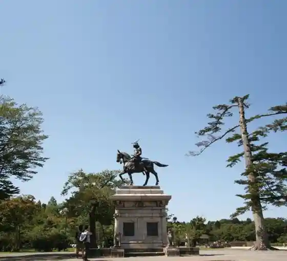
Akiu Great Falls
Powerful waterfall in the Akiu area
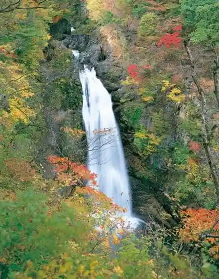
Hirose River
River running through central Sendai
Sakunami Onsen District
Mountain hot-spring village in Aoba-ku
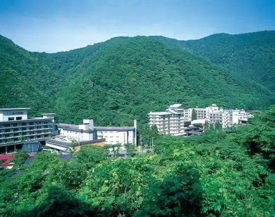
Akiu Onsen District
Historic hot-spring district in Taihaku-ku
Goshikinuma Pond
Colored pond in the Zao foothills of Sendai
Homei Shijuhachi Falls
Series of waterfalls in the Sendai hinterland
Oku-Nikkawa Gorge Autumn Foliage
Autumn gorge scenery in northern Sendai
Futakuchi Gorge Autumn Foliage
Autumn foliage along Futakuchi Gorge
Aoba Shrine
Shrine dedicated to Date Masamune
Nikka Whisky Miyagikyo Distillery
Whisky distillery in the Miyagikyo valley
Fukinuma Beach
City swimming beach on the Pacific coast
Rakuten Mobile Park Miyagi
Home ballpark of the Tohoku Rakuten Golden Eagles